Acknowledgments
The SVG Working Group would like to thank the following people for contributing to this specification with patches or by participating in discussions that resulted in changes to the document: David Dailey, Eric Eastwood, Jarek Foksa, Daniel Holbert, Paul LeBeau, Robert Longson, Henri Manson, Ms2ger, Kari Pihkala, Philip Rogers, David Zbarsky.
In addition, the SVG Working Group would like to acknowledge the contributions of the editors and authors of the previous versions of SVG – as much of the text in this document derives from these earlier specifications – including:
- Patrick Dengler, Microsoft Corporation
- Jon Ferraiolo, ex Adobe Systems
- Anthony Grasso, ex Canon Inc.
- Dean Jackson, ex W3C
- 藤沢 淳 (FUJISAWA Jun), Canon Inc.
Finally, the SVG Working Group would like to acknowledge the great many people outside of the SVG Working Group who help with the process of developing the SVG specifications. These people are too numerous to list individually. They include but are not limited to the early implementers of the SVG 1.0 and 1.1 languages (including viewers, authoring tools, and server-side transcoders), developers of SVG content, people who have contributed on the www-svg@w3.org and svg-developers@yahoogroups.com email lists, other Working Groups at the W3C, and the W3C Team. SVG 1.1 is truly a cooperative effort between the SVG Working Group, the rest of the W3C, and the public and benefits greatly from the pioneering work of early implementers and content developers, feedback from the public, and help from the W3C team.
1. Introduction
1.1. About SVG
This specification defines the features and syntax for Scalable Vector Graphics (SVG).
SVG is a language for describing two-dimensional graphics. As a standalone format or when mixed with other XML, it uses the XML syntax [xml]. SVG code used inside HTML documents uses the HTML syntax [HTML]. SVG allows for three types of graphic objects: vector graphic shapes (e.g., paths consisting of straight lines and curves), images and text. Graphical objects can be grouped, styled, transformed and composited. The feature set includes nested transformations, clipping paths, alpha masks, filter effects and template objects.
SVG drawings can be interactive and dynamic. Animations can be defined and triggered either declaratively (i.e., by embedding SVG animation elements in SVG content) or via scripting.
Sophisticated applications of SVG are possible by use of a supplemental scripting language which accesses SVG Document Object Model (DOM), which provides complete access to all elements, attributes and properties. A rich set of event handlers can be assigned to any SVG graphical object. Within a web page, the same scripts can work on both HTML and SVG elements. Scripting.
SVG is useful for rich graphical presentation of information, including a number of accessibility features that, used correctly, ensure the content can be used by the widest possible audience. But a direct link to source data, where possible, is helpful for many people to understand the content provided.
1.2. Compatibility with other standards efforts
SVG leverages and integrates with other W3C specifications and standards efforts, as described in the following:
- SVG can be integrated with HTML either by using SVG in HTML or by using HTML in SVG, in both cases either by inclusion or reference.
- SVG is an application of XML and is compatible with XML 1.0 and with the Namespaces in XML specification. However, when SVG content is included in HTML document, the HTML syntax applies and may not be compatible with XML. See SVG Integration for details.
- SVG content is styled with CSS. See Styling with CSS for details.
- SVG includes a complete Document Object Model (DOM) and extends DOM4. The SVG DOM has a high level of compatibility and consistency with the HTML DOM. Additionally, the SVG DOM supports and incorporates many of the facilities described in the CSS object model and event handling [dom-level-2-style] [uievents].
- SVG incorporates some features and approaches that are
part of SMIL 3, including
the ‘
switch’ element and the ‘systemLanguage’ attribute. - SVG is compatible with W3C work on internationalization. References (W3C and otherwise) include: [UNICODE] and [charmod].
- SVG is compatible with W3C work on Web Accessibility. See Accessibility Support.
1.3. Relationship to previous versions of this standard
This edition of the SVG standard has been developed based on, and built upon, the 1.1 edition released in 2003. An intermediate version of SVG - named Tiny 1.2 - was released in 2008. However it did not receive wide acceptance and there have been very few implementations of its enhanced feature set. However there are some 1.2 features that have been implemented by many SVG implementations and those have been incorporated as part of this specification. But otherwise, the SVG Working Group consider version Tiny 1.2 to be a deprecated branch of the SVG standard.1.4. Normative Terminology
Within this specification, the key words "MUST", "MUST NOT", "REQUIRED", "SHALL", "SHALL NOT", "SHOULD", "SHOULD NOT", "RECOMMENDED", "MAY", and "OPTIONAL" are to be interpreted as described in Key words for use in RFCs to Indicate Requirement Levels [rfc2119]. However, for readability, these words do not appear in all uppercase letters in this specification.
At times, this specification recommends good practice for authors and user agents.
2. Conformance Criteria
2.1. Overview
Graphics defined with SVG have many different applications. As a result, not all software that uses SVG will have the same features. Conformance to the SVG specification is therefore not a binary matter; software may be conforming within a restricted feature set.
Furthermore, SVG is designed to be integrated into other types of documents; depending on the type of integration, only a limited feature-set may be appropriate. There are various ways that an SVG document fragment can be referenced by or included in other documents and thereby be processed by a user agent. SVG documents can also be viewed directly, as the primary document. Each different method by which an SVG document fragment can be used implies a certain set of requirements on how the SVG document fragment must be processed.
This chapter therefore defines a number of processing modes that encompass the different combinations of features which may be enabled or disabled in the document. In addition, it specifies normative requirements for which processing mode must be used when SVG documents reference or embed other SVG documents. The same set of processing modes may be used by reference in other specifications to describe how SVG documents should be processed.
This document does not place normative requirements on other specifications that can reference or include SVG documents, such as HTML and various CSS specifications. The intention is for these other specifications to normatively point to the appropriate processing mode from this document.
This chapter also outlines specific conformance requirements for different types of SVG content, and different classes of software that use or create SVG.
2.2. Processing modes
This section defines a standard set of processing modes for SVG documents. Each processing mode specifies whether certain high level SVG features are enabled.
2.2.1. Features
The features that can be enabled or disabled depending on the processing mode are as follows:
- declarative animation
-
Declarative animation includes both the animation elements in SVG – ‘animate’, ‘animateMotion’, ‘animateTransform’ and ‘set’ – and CSS Transitions and Animations (see the Animation appendix for details). When declarative animations are disabled in an SVG document, any animation elements or CSS Transitions or Animations must not be applied or run.
This is not the same as pausing the document’s animated state at 0s document time; if an animation is defined to begin at 0s, it still will not be applied.
- references to external resources
-
References to external resources are URLs references or network access requests made by markup, style properties, script or other Web platform features used in the document, except for:
- same-document URL references, as defined in the Linking chapter
- data URL references, as defined by the "data" URL scheme [rfc2397]
When external references are disabled in an SVG document, any attempt to fetch a document through an external reference must instead be treated as if a network error occurred and no data was received.
When external references are enabled, user agents that support external file requests from the Internet must adhere to the restrictions on cross-origin resource fetching, as outlined in the Linking chapter.
- script execution
-
Script execution is the execution of any SVG ‘
script’ elements, script found in event attributes (such as ‘onclick’ on SVG elements), or any other script defined by other Web platform features used in the document, such as any HTML ‘script’ elements. When script execution is disabled in an SVG document, no script in the document must be run. - interaction
-
Interaction refers to the delivery of DOM Events or the invocation of any user agent specific UI behaviors such as text selection, focus changing, link traversal, or animation or transition triggering that is done in response to user input such as mouse or keyboard activity. When interaction is disabled in an SVG document, any user input events that would be targetted at the document or any elements within the document must have no effect.
2.2.2. Dynamic interactive mode
This processing mode imposes no restrictions on any feature of the SVG language.
| Dynamic Interactive Features | |
|---|---|
| script execution | yes |
| external references | yes |
| declarative animation | yes |
| interactivity | yes |
2.2.3. Animated mode
This processing mode is intended for circumstances where an SVG document is to be used as an animated image that is allowed to resolve external references, but which is not intended to be used as an interactive document.
| Animated Features | |
|---|---|
| script execution | no |
| external references | yes |
| declarative animation | yes |
| interactivity | no |
2.2.4. Secure animated mode
This processing mode is intended for circumstances where an SVG document is to be used as an animated image that is not allowed to resolve external references, and which is not intended to be used as an interactive document. This mode might be used where image support has traditionally been limited to raster images (such as JPEG, PNG and GIF).
| Secure Animated Features | |
|---|---|
| script execution | no |
| external references | no |
| declarative animation | yes |
| interactivity | no |
2.2.5. Static mode
This processing mode is intended for circumstances where an SVG document is to be used as a non-animated image that is allowed to resolve external references, but which is not intended to be used as an interactive document. For example, an SVG viewer that processes graphics for inclusion in print documents would likely use static mode.
| Static Features | |
|---|---|
| script execution | no |
| external references | yes |
| declarative animation | no |
| interactivity | no |
2.2.6. Secure static mode
This processing mode is intended for circumstances where an SVG document is to be used as a non-animated image that is not allowed to resolve external references, and which is not intended to be used as an interactive document. This mode might be used where image support has traditionally been limited to non-animated raster images (such as JPEG and PNG.)
| Secure Static Features | |
|---|---|
| script execution | no |
| external references | no |
| declarative animation | no |
| interactivity | no |
2.3. Processing modes for SVG sub-resource documents
When an SVG document is viewed directly, it is expected to be displayed using the most comprehensive processing mode supported by the user agent. However, when an SVG is processed as a sub-resource or embedded document, the following restrictions must apply:
- ‘
image’ references -
An SVG embedded within an ‘
image’ element must be processed in secure animated mode if the embedding document supports declarative animation, or in secure static mode otherwise.The same processing modes are expected to be used for other cases where SVG is used in place of a raster image, such as an HTML ‘img’ element or in any CSS property that takes an <image> data type. This is consistent with HTML’s requirement that image sources must reference "a non-interactive, optionally animated, image resource that is neither paged nor scripted" [HTML]
- ‘
use’ element and other'href'references -
When SVG documents are loaded through ‘
use’ element references or paint server element cross-references they must be processed in secure static mode.Note that animations do not run while processing the sub-resource document, for both performance reasons and because there is currently no context defined for resource documents to reference their timeline against. However, when elements from a sub-resource document are cloned into the current document because of a ‘
use’ element reference or paint-server cross-reference, the cloned element instances may be animated in the current document’s timeline, as described in Animations in use-element shadow trees, and may trigger the loading of additional sub-resource files. - Graphical effects references
-
When SVG documents are loaded through any style property references that target specific elements in the document (as opposed to SVG as an image format), they must be processed in secure static mode.
Note that animations do not run in sub-resource documents, for both performance reasons and because there is currently no context defined for resource documents to reference their timeline against.
Some style properties may reference either specific elements or entire image files; the processing mode is more restrictive in the first case. For example, a reference to an SVG ‘mask’ element will not be animated, but an entire SVG file used as an image mask can be.
- SVG in fonts
-
When SVG files are processed as part of a font reference, they must use the secure animated mode if animated glyphs are supported, or secure static mode otherwise.
These restrictions are included in the OpenType specification for processing documents from the "SVG" table. OpenType also applies additional restrictions, in the form of a user agent style sheet that prevents rendering of text and foreign objects [OPENTYPE].
SVG document fragments that are included inline in a host document
must use a processing mode that matches that of the host document.
SVG document fragments included as
children of an SVG ‘foreignObject’ element must use the
processing mode of the surrounding SVG document;
non-SVG foreign content must be processed with equivalent restrictions.
For example, if an SVG document is being used in
secure animated mode due to being referenced
by an HTML ‘img’
or SVG ‘image’ element,
then any content within a ‘foreignObject’ element
must have scripts, interactivity, and external file references disabled,
but should have declarative animation enabled.
2.3.1. Examples
Below are various methods of embedding SVG in an HTML page by reference, along with the expected processing mode and allowed features for each.
Each cell in the "Live Example" row should display a yellow smiley face. In each example below, clicking on the eyes tests link traversal, and clicking on the face tests declarative interactivity and script execution. The link should replace the image with a blue square (clicking it will revert it to the original image). The declarative interactivity uses the ‘set’ element to change the face from shades of yellow to shades of green, and uses CSS pseudoclasses to add a stroke to the interactive elements. The script should fill in the smile. Time-based (as opposed to interactivity-based) declarative animation is supported if the left eye is winking (using the ‘animate’ element) and if the eyes are dark blue with regular flashes of light blue (using CSS keyframe animation).
The expected processing modes and features outlined here are subject to any future changes in the corresponding HTML or CSS specification.
| Embedding method | object without sandboxing | img | CSS background | |
|---|---|---|---|---|
| Expected processing mode | dynamic interactive | dynamic interactive, with restrictions | secure animated | secure animated |
| Declarative, time-based animation (winking left eye, color-change in both eyes) | allowed | allowed | allowed | allowed |
| Declarative, interactive animation and style changes (face color changes when clicked, face/eyes outlined when hovered or focused) | allowed | allowed | disabled | disabled |
| Link navigation within the same browsing context, to the same domain (image changes when clicking eyes) | allowed | allowed | disabled | disabled |
| Scripted interaction (smile widens when clicking face) | allowed | disabled (because of sandboxing) | disabled | disabled |
| Live example |
2.4. Document Conformance Classes
SVG is defined in terms of a document object model (DOM), rather than a particular file format or document type. For SVG content, therefore, conformance with this specification is defined by whether the content is or can generate a conforming DOM. Some of the following conformance classes depend on whether the content is well-formed XML [xml].
2.4.1. Conforming SVG DOM Subtrees
A DOM node tree or subtree rooted at a given element is a conforming SVG DOM subtree if it forms a SVG document fragment that adheres to the specification described in this document (Scalable Vector Graphics (SVG) Specification). Specifically, it:
- is rooted by an ‘
svg’ element in the SVG namespace, - conforms to the content model and attributes rules for the elements defined in this document (Scalable Vector Graphics (SVG) Specification), and
- conforms to the content model and attributes rules defined by other specifications for any elements in the SVG namespace defined by those specifications (including: [filter-effects-1], [css-masking-1], [svg-animation]).
SVG document fragments can be included within parent XML documents using
the XML namespace facilities described in
Namespaces in XML [xml-names].
Note, however, that since a conforming SVG DOM subtree must have an
‘svg’ element as its root, the use of an individual non-‘svg’
element from the SVG namespace is disallowed. Thus, the SVG part of the
following document is not conforming:
<?xml version="1.0" standalone="no"?>
<!DOCTYPE SomeParentXMLGrammar PUBLIC "-//SomeParent" "http://SomeParentXMLGrammar.dtd">
<ParentXML>
<!-- Elements from ParentXML go here -->
<!-- The following is not conforming -->
<z:rect xmlns:z="http://www.w3.org/2000/svg"
x="0" y="0" width="10" height="10" />
<!-- More elements from ParentXML go here -->
</ParentXML>
Instead, for the SVG part to become a conforming SVG DOM subtree, the file could be modified as follows:
<?xml version="1.0" standalone="no"?>
<!DOCTYPE SomeParentXMLGrammar PUBLIC "-//SomeParent" "http://SomeParentXMLGrammar.dtd">
<ParentXML>
<!-- Elements from ParentXML go here -->
<!-- The following is conforming -->
<z:svg xmlns:z="http://www.w3.org/2000/svg"
width="100px" height="100px">
<z:rect x="0" y="0" width="10" height="10"/>
</z:svg>
<!-- More elements from ParentXML go here -->
</ParentXML>
The SVG language and these conformance criteria provide no designated size limits on any aspect of SVG content. There are no maximum values on the number of elements, the amount of character data, or the number of characters in attribute values.
2.4.2. Conforming SVG Markup Fragments
A document or part of a document is a conforming SVG markup fragment if it can be parsed without error (other than network errors) by the appropriate parser for the document MIME type to form a conforming SVG DOM subtree, and in addition if:
- any CSS stylesheets included in the document conform to the core grammar of Cascading Style Sheets, level 2 revision 1 [CSS2].
2.4.3. Conforming XML-Compatible SVG Markup Fragments
A conforming SVG markup fragment is also a conforming XML-compatible SVG markup fragment if it:
- meets all XML well-formedness constraints ([xml]),
- conforms to the Namespaces in XML specification [xml-names],
- all ‘
id’ attributes are valid XML IDs ([xml], section 3.3.1), and - any
<?xml-stylesheet?>processing instruction conforms to Associating stylesheets with XML documents [xml-stylesheet].
2.4.4. Conforming XML-Compatible SVG DOM Subtrees
A DOM node tree or subtree rooted at a given element is an conforming XML-compatible SVG DOM subtree if, once serialized to XML, it could form a conforming XML-compatible SVG markup fragment.
If the DOM subtree cannot be serialized to conforming XML without altering it,
such as when an ‘id’ value is not a valid XML name, or when a
Comment node’s data contains the substring "--", then the subtree is not
a conforming XML-compatible SVG DOM subtree.
2.4.5. Conforming SVG Stand-Alone Files
A document is a conforming SVG stand-alone file if:
- it is a well-formed XML document,
- its root element is an ‘
svg’ element, - the SVG document fragment rooted at the document element is a conforming XML-compatible SVG markup fragment, and
- any other SVG document fragments within the document
(such as those within a ‘
foreignObject’) form a conforming XML-compatible SVG markup fragment.
2.4.6. Error processing
There are various scenarios where an SVG document fragment is technically in error:
- The document or DOM subtree is not-conforming for its document type, as described in the previous sections.
- Other situations that are described as being in error in this specification, such as incorrect attribute values.
A dynamic document can go in and out of error over time. For example, document changes from the SVG DOM or from animation can cause a document to become in error and a further change can cause the document to become correct again.
User agents must use the following error processing rules whenever a document is in error, unless other sections of this specification define more specific rules for handling the particular error type:
- The document rendering shall continue after encountering element which has an error. The element or its part that is in error won’t be rendered.
- If the user agent has access to an error reporting capability such as status bar or console, it is recommended that the user agent provide whatever additional detail it can to enable the user or developer to quickly find the source of the error. For example, the user agent might provide an error message along with a line number and character number at which the error was encountered.
Because of situations where a block of scripting changes might cause a given SVG document fragment to go into and out of error, the user agent should only apply error processing at times when document presentation (e.g., rendering to the display device) is updated.
2.5. Software Conformance Classes
For software, the requirements for conformance depend on the category of program:
- SVG generators
- Any software that creates or makes available SVG content, either as markup or as a DOM (as is the case with client-side JavaScript libraries).
- SVG authoring tools
- Any software that provides an interface for human content creators to manipulate graphics or code that will be used to generate SVG. SVG authoring tools are implicitly also SVG generators.
- SVG servers
- Any network or file server that makes available SVG content in response to requests from other software. SVG servers are implicitly also SVG generators.
- SVG interpreters
- Any software that parses or processes SVG documents or markup fragments. An SVG interpreter is an SVG user agent for the purpose of any sections of this specification that relate to the parsing or processing steps undertaken by the interpreter.
- SVG viewers
- Any software that creates a rendered graphical representation after parsing or processing an SVG document or SVG markup fragment. SVG viewers are implicitly also SVG interpreters. An SVG viewer is always an SVG user agent for the purpose of this specification.
- SVG user agent
- An SVG user agent is a user agent that is able to retrieve and render SVG content.
- user agent
-
The general definition of a user agent is an application that retrieves and renders Web content, including text, graphics, sounds, video, images, and other content types. A user agent may require additional user agents that handle some types of content. For instance, a browser may run a separate program or plug-in to render sound or video. User agents include graphical desktop browsers, multimedia players, text browsers, voice browsers, and assistive technologies such as screen readers, screen magnifiers, speech synthesizers, onscreen keyboards, and voice input software.
In general terms, a "user agent" may or may not have the ability to retrieve and render SVG content; however, unless the context requires an alternative interpretation, all references to a "user agent" in this specification are assumed to be references to an SVG user agent that retrieves and renders SVG content.
Many programs will fall under multiple software classes. For example, a graphical editor that can import and display SVG files, allow the user to modify them, and then export the modified graphic to file, is an SVG interpreter, an SVG viewer, an SVG authoring tool, and an SVG generator.
2.5.1. Conforming SVG Generators
A conforming SVG generator is a SVG generator that:
- always creates a conforming SVG DOM subtree, a conforming SVG markup fragment, or a conforming SVG stand-alone file;
- does not create documents containing non-conforming SVG document fragments;
- meets all normative requirements in this specification for SVG authors, as well as specific normative requirements for SVG generators.
SVG generators are strongly encouraged to use a Unicode character encoding by default, and to follow the other guidelines of the Character Model for the World Wide Web [UNICODE] [charmod].
SVG generators handling high-precision data are encouraged to follow the guidelines in the section Notes on generating high-precision geometry.
2.5.2. Conforming SVG Authoring Tools
An authoring tool, as defined in the Authoring Tool Accessibility Guidelines 2.0, is a conforming SVG authoring tool if it is a conforming SVG generator and it also conforms to all relevant Level A requirements from that document [atag20]. Level AA and Level AAA requirements are encouraged but not required for conformance.
2.5.3. Conforming SVG Servers
A conforming SVG server must meet all the requirements of a conforming SVG generator. In addition, conforming SVG servers using HTTP or other protocols
that use Internet Media types must serve SVG stand-alone files with the media
type "image/svg+xml".
Also, if the SVG file is compressed with gzip or deflate, conforming SVG Servers must indicate this with the appropriate header, according to what the protocol supports. Specifically, for content compressed by the server immediately prior to transfer, the server must use the "Transfer-Encoding: gzip" or "Transfer-Encoding: deflate" headers as appropriate. For content stored in a compressed format on the server (e.g. with the file extension .svgz), the server must use the "Content-Encoding: gzip" or "Content-Encoding: deflate" headers as appropriate.
In HTTP, compression of stored content (the "entity") is distinct from automatic compression of the message body, as defined in HTTP/1.1 TE/ Transfer Encoding ([rfc2616], sections 14.39 and 14.41). If this is poorly configured, and the compression specified in the HTTP headers does not match the used values, SVG user agents are required to treat the document as being in error.
Configuring a server to handle both SVG and SVGZ files means that it must be able to assign the same media type to both types of files, but with different compression headers. Some commonly used servers do not support this configuration in an easy or efficient way, because compression behavior is configured based on media type.
With most modern web servers, it is often easier to upload uncompressed SVG files instead of SVGZ files. Then, rely on the server to compress the file for transmission, and cache it for future request, using the same server instructions as for other text-based file formats such as HTML. This also allows the server to use newer compression methods, when they are supported by the user agent requesting the file.
Alternatively, the web server may be able to correctly process pre-compressed SVGZ files if they are first renamed to use the .svg.gz compound file extension. The server would still need to be configured to support static gzip-compressed files.
2.5.4. Conforming SVG Interpreters
An SVG interpreter is a program which can parse and process SVG document fragments. Examples of SVG interpreters are server-side transcoding tools or optimizers (e.g., a tool which converts SVG content into modified SVG content) or analysis tools (e.g., a tool which extracts the text content from SVG content, or a validity checker). A transcoder from SVG into another graphics representation, such as an SVG-to-raster transcoder, represents a viewer, and thus viewer conformance criteria also apply.
A conforming SVG interpreter must be able to parse and process all XML constructs defined in XML 1.0 [xml] and Namespaces in XML [xml-names].
A conforming SVG interpreter must parse any conforming XML-compatible SVG markup fragment in a manner that correctly respects the DOM structure (elements, attributes, text content, comments, etc.) of the content. The interpreter is not required to interpret the semantics of all features correctly.
If the SVG interpreter supports non-XML syntaxes (such as HTML), it must correctly parse any conforming SVG markup fragment in that syntax.
If the SVG interpreter runs scripts or fetches external resource files as a consequence of processing the SVG content, it must follow the restrictions described for user agents in Processing modes for SVG sub-resource documents and in the Linking chapter.
2.5.5. Conforming SVG Viewers
| Action: | Look at the performance class requirements and decide whether to remove points or move them into general requirements. (heycam)
Spec that calculation of CTMs should use double precision. (stakagi) |
|---|---|
| Resolution: | Remove performance class requirements from SVG 2. ( ConformingHighQualitySVGViewers ) |
| Purpose: | To modulate the tradeoff of a numerical precision in use cases of the technical drawing and mapping, and the performance of user agent. |
| Owner: | heycam, stakagi |
An SVG viewer is a program which can parse and process an SVG document fragment and render the contents of the document onto some sort of graphical output medium such as a display, printer, or engraver. Thus, an SVG viewer is also an SVG interpreter (in that it can parse and process SVG document fragments), but with the additional requirement of correct rendering.
A conforming SVG viewer must be a conforming SVG interpreter, and must be able to support rendering output in at least one of the processing modes defined in this chapter:
A conforming SVG viewer must meet all normative requirements indicated in this specification for user agents, for all features supported by its processing mode(s).
Specific criteria that must apply to all conforming SVG viewers:
- The viewer must be able to parse all CSS syntax features defined in Cascading Style Sheets, level 2 revision 1 [CSS2], and must support CSS styling of SVG content including all required properties and required features listed in the Styling chapter. The viewer may support other CSS language features, and any other properties that are defined by the corresponding specification to apply to SVG elements. The supported features from CSS 2.1 must be implemented in accordance with the conformance definitions from the CSS 2.1 specification ([CSS2], section 3.2).
- The viewer must be able to apply styling properties to SVG content using presentation attributes.
- Areas of an image of SVG content may have opacity less than 100%. The viewer must at least support Simple Alpha Compositing of the image of the SVG content onto the target canvas, as described in the Compositing and Blending Specification [compositing-1].
- The viewer must support data URL references
containing base64-encoded or URL-encoded content,
in conformance with
the "data:" URL scheme
[rfc2397],
wherever a URI reference to another document is permitted within
SVG content.
When the encoded document is of MIME type
image/svg+xml, it must be a well-formed, complete SVG document in order to be processed. -
The viewer must support JPEG and PNG
image formats [JPEG] [PNG].
Even if the viewer only supports secure processing modes, it is still required to support these image formats, in order to process data URL references.
- Resampling of image data must be consistent with the specification of property image-rendering.
- Whenever possible in the parent environment, the viewer must use information about physical device resolution and expected viewing conditions in order to accurately determine the initial scale in conformance with the rules described in CSS 2.1 ([CSS2], section 4.3.2). In situations where this information is impossible to determine, the viewer or the parent environment must make a reasonable approximation for common target devices.
-
All visual rendering must be accurate to within one
device pixel or point of the mathematically correct result
at the initial 1:1 zoom ratio. It is suggested that viewers
attempt to keep a high degree of accuracy when zooming.
On lower-resolution display devices, support for anti-aliasing or other smoothing methods is highly recommended. It is a requirement for conforming high-quality SVG viewers.
- If printing devices are supported, SVG content must be printable at printer resolutions with the same graphics features available as required for display (e.g., the specified colors must be rendered on color printers).
- On systems which support accurate sRGB [SRGB] color, all sRGB color computations and all resulting color values must be accurate to within one sRGB color component value, where sRGB color component values range from 0 to 255.
- SVG implementations must correctly support gzip-encoded [rfc1952] and deflate-encoded [rfc1951] data streams, for any content type (including SVG, script files, images). SVG implementations that support HTTP must support these encodings according to the HTTP 1.1 specification [rfc2616]; in particular, the client must specify with an "Accept-Encoding:" request header [HTTP-ACCEPT-ENCODING] those encodings that it accepts, including at minimum gzip and deflate, and then decompress any gzip-encoded and deflate-encoded data streams that are downloaded from the server. When an SVG viewer retrieves compressed content (e.g., an .svgz file) over HTTP, if the "Content-Encoding" and "Transfer-Encoding" response headers are missing or specify a value that does not match the compression method that has been applied to the content, then the SVG viewer must not render the content and must treat the document as being in error.
-
The viewer must use at least single-precision floating point for intermediate calculations on any numerical operations for conversion of coordinates. However, in order to prevent the rounding error on coordinate transformation, at least double-precision floating point computation must be used on CTM generation processing. Such minimum typical computation way is expressed with following formulas.
$$ (single) {\large \rm CTM} = (single) \left( (double) \left[ \begin{matrix} a_1 & c_1 & e_1 \\ b_1 & d_1 & f_1 \\ 0 & 0 & 1 \end{matrix} \right] \cdot (double) \left[ \begin{matrix} a_2 & c_2 & e_2 \\ b_2 & d_2 & f_2 \\ 0 & 0 & 1 \end{matrix} \right] \right) $$Furthermore, when it has nested viewport coordinate systems, the$$ (single) \left[ \begin{matrix} x_{\rm viewport} \\ y_{\rm viewport} \\ 1 \end{matrix} \right] = {\large \rm CTM} \cdot (single) \left[ \begin{matrix} x_{\rm userspace} \\ y_{\rm userspace} \\ 1 \end{matrix} \right] $$ScreenCTMwhich is a transformation matrix produced by nested CTM for transforming user coordinates into the coordinates of an output device also must be generated by double-precision floating point computation.
A conforming SVG viewer that supports processing modes that include interaction must support the following additional features:
- For interactive user environments, facilities must exist for zooming and panning of stand-alone SVG documents or SVG document fragments embedded within parent XML documents.
- In environments that have appropriate user interaction facilities, the viewer must support the ability to activate hyperlinks.
- In Web browser environments, the viewer must have the ability to search and select text strings within SVG content.
- If display devices are supported, the viewer must have the ability to select and copy text from SVG content to the system clipboard.
- The viewer must meet all applicable Level A requirements of the User Agent Accessibility Guidelines 2.0 [UAAG20]. Level AA and level AAA features are encouraged, but not required.
A conforming SVG viewer that supports processing modes that include script execution must support the following additional features:
- The viewer must be a conforming ECMAScript implementation of all the IDL fragments in this specification. [WebIDL]
If the user agent includes an HTML or XHTML viewing capability, or can apply CSS styling properties to XML documents, then a conforming SVG viewer must support resources of MIME type "image/svg+xml" wherever raster image external resources can be used, such as in the HTML or XHTML ‘img’ element and in CSS properties that can refer to raster image resources (e.g., ‘background-image’).
2.5.5.1. Printing implementation notes
For user agents which support both zooming on display devices and printing, it is recommended that the default printing option produce printed output that reflects the display device’s current view of the current SVG document fragment (assuming there is no media-specific styling), taking into account any zooming and panning done by the user, the current state of animation, and any document changes due to DOM and scripting.
Thus, if the user zooms into a particular area of a map on the display device and then requests a hardcopy, the hardcopy should show the same view of the map as appears on the display device. If a user pauses an animation and prints, the hardcopy should show the same graphics as the currently paused picture on the display device. If scripting has added or removed elements from the document, then the hardcopy should reflect the same changes that would be reflected on the display.
When an SVG document is rendered on a static-only device such as a printer which does not support SVG’s animation and scripting and facilities, then the user agent shall ignore any animation and scripting elements in the document and render the remaining graphics elements according to the rules in this specification.
2.5.6. Conforming High-Quality SVG Viewer
In order for a conforming SVG viewer to be considered a conforming high-quality SVG viewer, it must support the following additional features:
- Professional-quality results with good processing and rendering performance and smooth, flicker-free animations.
- On low-resolution devices such as display devices at 150dpi or less, support for smooth edges on lines, curves and text. (Smoothing is often accomplished using anti-aliasing techniques.)
- Color management via ICC profile support [ICC] (i.e., the ability to support colors defined using ICC profiles) [css-color-4]
- Resampling of image data must conform to the requirements for conforming high-quality SVG viewers as specified in the description of property image-rendering.
- At least double-precision floating point computation on coordinate system transformation numerical calculations.
A conforming high-quality SVG viewer that supports processing modes that include script execution, declarative animation, or interaction must support the following additional features:
- Progressive rendering and animation effects (i.e., the start of the document will start appearing and animations will start running in parallel with downloading the rest of the document).
- Restricted screen updates (i.e., only required areas of the display are updated in response to redraw events).
A conforming high-quality SVG viewer that supports processing modes that include interaction must support the following additional features:
- Background downloading of images and fonts retrieved from a Web server, with updating of the display once the downloads are complete.
3. Rendering Model
The SVG 2 rendering model will follow the rules defined by the Compositing and Blending specification.
Resolution: Seattle/Paris 2012 F2F day 3.
Owner: Nikos (Action 3332).
Status: Done.
3.1. Introduction
Implementations of SVG must implement the rendering model as described in this chapter, as modified in the appendix on conformance requirements which describes situations where an implementation may deviate. In practice variability is allowed based on limitations of the output device (e.g. only a limited range of colors might be supported) and because of practical limitations in implementing a precise mathematical model (e.g. for realistic performance curves are approximated by straight lines, the approximation need only be sufficiently precise to match the conformance requirements).
The appendix on conformance requirements describes the extent to which an actual implementation may deviate from this description. In practice an actual implementation may deviate slightly because of limitations of the output device (e.g. only a limited range of colors might be supported) and because of practical limitations in implementing a precise mathematical model (e.g. for realistic performance curves are approximated by straight lines, the approximation need only be sufficiently precise to match the conformance requirements).
3.2. The rendering tree
The components of the final rendered representation of an SVG document do not have a one-to-one relationship with the underlying elements in the document model. The appearance of the graphic instead reflects a parallel structure, the rendering tree, in which some elements are excluded and others are repeated.
Many elements in the SVG namespace do not directly represent a component of the graphical document. Instead, they define graphical effects, metadata, content to be used to represent other elements, or alternatives to be displayed under certain conditions. In dynamic documents, certain components of the graphic may be rendered or not, depending on interaction or animation. These non-rendered elements are not directly included in the rendering tree.
Because SVG supports the reuse of graphical sub-components, some elements are rendered multiple times. The individual renderings may have context-dependent styling and may be rasterized at different scales or transformations.
3.2.1. Definitions
- rendering tree
-
The rendering tree is the set of elements being rendered in an SVG document fragment. It is generated from the document tree by excluding non-rendered elements and inserting additional fragments for re-used graphics. Graphics are painted and composited in rendering-tree order, subject to re-ordering based on the paint-order property. Note that elements that have no visual paint may still be in the rendering tree.
- rendered element
-
An element that has a direct representation in the rendering tree for the current document. Includes a rendered instance of an element in a use-element shadow tree. Does not include elements that affect rendering as the source definition of re-used graphics but are not directly rendered themselves. See Rendered versus non-rendered elements
- non-rendered element
-
An element that does not have a direct representation in the rendering tree for the current document. It may nonetheless affect the rendering tree as re-used graphics or graphical effects. See Rendered versus non-rendered elements.
- re-used graphics
-
Graphical components that are included in the rendering tree but do not have a single direct equivalent element in the document model. They may be represented through shadow DOM elements (as in graphics re-used with a ‘
use’ element), or as image fragments generated as part of a graphical effect (as in patterns or masks). - never-rendered element
-
Any element type that is never directly rendered, regardless of context or display style value. It includes the following elements: ‘clipPath’, ‘
defs’, ‘desc’, ‘linearGradient’, ‘marker’, ‘mask’, ‘metadata’, ‘pattern’, ‘radialGradient’, ‘script’, ‘style’ and ‘title’; it also includes a ‘symbol’ element that is not the instance root of a use-element shadow tree. - renderable element
-
Any element type that can have a direct representation in the rendering tree, as a graphic, container, text, audio, or animation. It includes the following elements: ‘
a’, ‘circle’, ‘ellipse’, ‘foreignObject’, ‘g’, ‘image’, ‘line’, ‘path’, ‘polygon’, ‘polyline’, ‘rect’, ‘svg’, ‘switch’, ‘text’, ‘textPath’, ‘tspan’ and ‘use’; it also includes a ‘symbol’ element that is the instance root of a use-element shadow tree.A renderable element may or may not be rendered in a given document or point in time.
3.2.2. Rendered versus non-rendered elements
At any given time, every SVG element (or element instance in a use-element shadow tree) is either rendered or non-rendered. Whether an element is currently rendered or not affects not only its visual display but also interactivity and geometric calculations.
An element is not rendered in any of these five situations:
- never-rendered element types
- elements excluded because of conditional processing attributes
or ‘
switch’ structures - elements with a computed style value of
nonefor the display property - detached from the DOM tree
- descendent elements of other non-rendered elements
Non-rendered elements:
- have no visual effect on the graphic, except when they are used in the rendering of another element that references them.
- do not contribute to the net geometry of clipping paths or masks when they are descendants of a ‘clipPath’ or ‘mask’
- are not sensitive to pointer events
- cannot receive focus
- do not contribute to bounding box calculations
- are not considered when performing text layout
Non-rendered elements are not represented in the document accessibility tree. Nonetheless, they remain part of the document model, and participate in style inheritance and cascade.
3.2.3. Controlling visibility: the effect of the ‘display’ and ‘visibility’ properties
SVG uses two properties to toggle the visible display of elements that are normally rendered: display and visibility. Although they have a similar visible effect in static documents, they are conceptually distinct.
See the CSS 2.1 specification for the definitions of display and visibility. [CSS2]
Setting display to none results in the element not being rendered. When applied to graphics elements, text content elements, and container elements that are normally rendered, setting display to none results in the element (and all its descendents) not becoming part of the rendering tree. Note that display is not an inherited property.
Elements that have any other display value than none are rendered as normal.
The display property only applies to renderable elements.
Setting display: none on an element
that is never directly rendered
or not rendered based on conditional processing
has no effect.
The display property affects the direct processing
of a given element, but it does not prevent it from
being referenced by other elements.
For example, setting
display: none on a ‘path’ element
will prevent that element from getting rendered directly onto the
canvas, but the ‘path’ element can still be referenced by a
‘textPath’ element and its geometry will be used
in text-on-a-path processing.
When applied to a graphics element or ‘use’ element,
setting visibility to hidden
or collapse
results in the element not being painted.
It is, however, still part of the rendering tree.
It may be sensitive to pointer events
(depending on the value of pointer-events),
may receive focus (depending on the value of ‘tabindex’),
contributes to bounding box calculations and clipping paths,
and does affect text layout.
The visibility property only directly affects the rendering of
graphics elements, text content elements, and the
‘a’ element when it is a child of text content element.
Since visibility is an inherited property, however,
although it has no effect on a ‘use’ element or container element itself,
its inherited value can affect descendant elements.
3.2.4. Re-used graphics
Graphical content defined in one part of the document (or in another document) may be used to render other elements. There are two types of re-used graphics from a rendering perspective:
-
shadow DOM elements,
such as those generated by ‘
use’ elements or by cross-references between paint servers; - content re-used as part of a graphical effect on another element, including the child content of markers, paint server elements, ‘clipPath’, and ‘mask’.
Shadow DOM elements are rendered in the same way as normal elements,
as if the host element (e.g., the ‘use’ element)
was a container and the shadow content was its descendents.
Style and geometry properties on the shadow DOM elements
are resolved independently from those on their source element
in the referenced document subtree.
The display property has its normal effect on shadow elements,
except for special rules that apply to the ‘symbol’ element.
For blending purposes, the ‘use’ element forms a non-isolated group.
In contrast, graphical effects elements generate a self-contained SVG fragment which is rendered independently as a stacking context and an isolated group. The canvas for this fragment is scaled The graphical effect element’s child content is rendered and composited into this canvas. The flattened canvas as a whole is treated as a vector image when compositing and blending with other paint layers
The display property on any child content of a graphical effects element
has its normal effect when set to none,
excluding that subtree from being used in rendering.
However, the graphical effect is not altered
by a value of display: none
on the graphical effect element or an ancestor.
3.3. The painters model
SVG uses a "painters model" of rendering. Paint is applied in successive operations to the output device such that each operation paints onto some area of the output device, possibly obscuring paint that has previously been laid down. After each object or group is painted, it becomes part of the background for the next painting operation. SVG 2 supports advanced blending modes and compositing operations that control how each painting operation interacts with the background. The rules governing these painting operations are outlined in the Compositing and Blending Specification.
3.4. Rendering order
Elements in SVG are positioned on the x and y axes of the SVG viewport. When elements overlap, the order in which they are painted determines which one appears in front. This front-to-back ordering is known as the z-axis.
By default, elements are painted in document order: an element that appears later in the markup is painted on top of an element that appears earlier. Elements are grouped into stacking contexts, which collect a set of elements and paint them as a unit.
Stacking contexts determine the order in which elements are painted on top of each other, and which element is highest when determining the target of a pointer event. They do not affect the position of elements in the DOM tree, nor their size or orientation — only the order in which they are painted.
Each element belongs to one stacking context. Elements in a given stacking context must be stacked according to document order.
Stacking contexts can contain further stacking contexts. A stacking context is atomic from the point of view of its parent stacking context: when the parent determines paint order, the child stacking context is treated as a single indivisible item. No element from outside can be painted between elements inside it.
With the exception of the ‘foreignObject’ element, the back to front
stacking order for a stacking context created by an SVG element is:
- the background and borders of the element forming the stacking context, if any
- descendants, in tree order
Since the ‘foreignObject’ element creates a "fixed position containing block" in
CSS terms, the normative rules for the stacking order of the stacking context
created by ‘foreignObject’ elements are the rules in Appendix E of CSS 2.1.
3.4.1. Establishing a stacking context in SVG
A new stacking context must be established at an SVG element for its descendants if any of the following conditions are met. For the property-based conditions, the property must apply to the element and have the given computed value.
| Condition | Value condition | Note |
|---|---|---|
| The document element | always | Only when it is an ‘svg’ element, as in a standalone SVG document
|
| An outermost svg element | always | The ‘svg’ element that starts an SVG document fragment, that is,
one whose parent element is not in the SVG namespace
|
‘foreignObject’
| always | |
‘image’
| always | |
‘marker’
| always | |
| ‘mask’ | always | The mask element, not the mask property |
‘pattern’
| always | |
‘symbol’
| always | |
‘use’
| always | |
Inner ‘svg’ with overflow
| computed value other than visible | Only applies to nested ‘svg’ elements, not the outermost svg element.
Note that the user agent style sheet sets
overflow: hidden on nested ‘svg’ elements.
|
| clip property | computed value other than auto | Element is subject to explicit clipping. In SVG, clip only applies to
elements which establish a new
viewport, ‘pattern’ elements and ‘mask’ elements.
|
| clip-path property | computed value other than none | Element is subject to explicit clipping |
| opacity property | computed value other than 1 | |
| mask property | computed value other than none | The mask property, not the mask element |
| filter property | computed value other than none | |
| Property defined in another specification | as defined by that specification | When the property is defined to establish a stacking context in SVG |
3.5. How elements are rendered
Individual graphics elements are treated as if they are a non-isolated group, the components (fill, stroke, etc) that make up a graphic element (See Painting shapes and text) being members of that group. See How groups are rendered.
3.6. How groups are rendered
Grouping elements, such as the ‘g’ element (see container elements
) create a compositing group.
Similarly, a ‘use’ element creates a compositing group for its shadow content.
The Compositing and Blending
specification normatively describes how to render compositing groups.
In SVG, effects may be applied to a group. For example, opacity, filters
or masking. These effects are applied to the rendered result of the group
immediately before any transforms on the group are applied, which are applied
immediately before the group is blended and composited with the
group backdrop. Applying any such effects to a group makes that
group isolated.
Thus, rendering a compositing group follows the following steps:
If the group is isolated:
- The initial backdrop is set to a new buffer initialised with rgba(0,0,0,0)
- The contents of the group that are graphics elements or
‘
g’ elements are rendered in order, onto the initial backdrop -
filters and other effects that modify the group canvas are applied
To provide for high quality rendering, filter primitives and other bitmap effects must be applied in the operating coordinate space.
- Group transforms are applied
- The group canvas is blended and composited with the group backdrop
- The initial backdrop is set to the group backdrop
- The contents of the group that are graphics elements or
‘
g’ elements are rendered in order, onto the initial backdrop. The group transforms are applied to each element as they are rendered.
3.6.1. Object and group opacity: the effect of the ‘opacity’ property
See the CSS Color Module Level 3 for the definition of opacity. [css-color-3]
The opacity property specifies how opaque a given graphical element or container element will be when it is painted to the canvas. When applied to a container element, this is known as group opacity, and when applied to an individual rendering element, it is known as object opacity. The principle for these two operations however is the same.
There are several other opacity-related properties in SVG:
- fill-opacity, which specifies the opacity of a fill operation;
- stroke-opacity, which specifies the opacity of a stroking operation; and
- stop-opacity, which specifies the opacity of a gradient stop.
These four opacity properties are involved in intermediate rendering operations. Object and group opacity however can be thought of as a post-processing operation. Conceptually, the object or group to which opacity applies is rendered into an RGBA offscreen image. The offscreen image as whole is then blended into the canvas with the specified opacity value used uniformly across the offscreen image. Thus, the presence of opacity causes the group to be isolated.
The opacity property applies to the following SVG elements:
‘svg’, ‘g’, ‘symbol’, ‘marker’,
‘a’, ‘switch’, ‘use’ and graphics elements.
The following example illustrates various usage of the opacity property on objects and groups.
<svg xmlns="http://www.w3.org/2000/svg"
width="600" height="175" viewBox="0 0 1200 350">
<!-- Background blue rectangle -->
<rect x="100" y="100" width="1000" height="150" fill="blue"/>
<!-- Red circles going from opaque to nearly transparent -->
<circle cx="200" cy="100" r="50" fill="red" opacity="1"/>
<circle cx="400" cy="100" r="50" fill="red" opacity=".8"/>
<circle cx="600" cy="100" r="50" fill="red" opacity=".6"/>
<circle cx="800" cy="100" r="50" fill="red" opacity=".4"/>
<circle cx="1000" cy="100" r="50" fill="red" opacity=".2"/>
<!-- Opaque group, opaque circles -->
<g opacity="1">
<circle cx="182.5" cy="250" r="50" fill="red" opacity="1"/>
<circle cx="217.5" cy="250" r="50" fill="green" opacity="1"/>
</g>
<!-- Group opacity: .5, opacity circles -->
<g opacity=".5">
<circle cx="382.5" cy="250" r="50" fill="red" opacity="1"/>
<circle cx="417.5" cy="250" r="50" fill="green" opacity="1"/>
</g>
<!-- Opaque group, semi-transparent green over red -->
<g opacity="1">
<circle cx="582.5" cy="250" r="50" fill="red" opacity=".5"/>
<circle cx="617.5" cy="250" r="50" fill="green" opacity=".5"/>
</g>
<!-- Opaque group, semi-transparent red over green -->
<g opacity="1">
<circle cx="817.5" cy="250" r="50" fill="green" opacity=".5"/>
<circle cx="782.5" cy="250" r="50" fill="red" opacity=".5"/>
</g>
<!-- Group opacity .5, semi-transparent green over red -->
<g opacity=".5">
<circle cx="982.5" cy="250" r="50" fill="red" opacity=".5"/>
<circle cx="1017.5" cy="250" r="50" fill="green" opacity=".5"/>
</g>
</svg>

Each group of red and green circles is first rendered to an offscreen image before being blended with the background blue rectangle as a whole, with the given opacity values.
In the example, the top row of circles have differing opacities,
ranging from 1.0 to 0.2. The bottom row illustrates five ‘g’ elements,
each of which contains overlapping red and green circles, as follows:
- The first group shows the opaque case for reference. The group has opacity of 1, as do the circles.
- The second group shows group opacity when the elements in the group are opaque.
- The third and fourth group show that opacity is not commutative. In the third group (which has opacity of 1), a semi-transparent green circle is drawn on top of a semi-transparent red circle, whereas in the fourth group a semi-transparent red circle is drawn on top of a semi-transparent green circle. Note that area where the two circles intersect display different colors. The third group shows more green color in the intersection area, whereas the fourth group shows more red color.
- The fifth group shows the multiplicative effect of opacity settings. Both the circles and the group itself have opacity settings of .5. The result is that the portion of the red circle which does not overlap with the green circle (i.e., the top/right of the red circle) will blend into the blue rectangle with accumulative opacity of .25 (i.e., .5*.5), which, after blending into the blue rectangle, results in a blended color which is 25% red and 75% blue.
3.7. Types of graphics elements
SVG supports three fundamental types of graphics elements that can be rendered onto the canvas:
- Shapes, which represent some combination of straight line and curves
- Text, which represents some combination of character glyphs
- Raster images, which represent an array of values that specify the paint color and opacity (often termed alpha) at a series of points on a rectangular grid. (SVG requires support for specified raster image formats under conformance requirements.)
3.7.1. Painting shapes and text
Shapes and text can be filled (i.e., apply paint to the interior of the shape) and stroked (i.e., apply paint along the outline of the shape).
For certain types of shapes, marker symbols (which themselves can consist of any combination of shapes, text and images) can be drawn at positions along the shape boundary. Each marker symbol is painted as if its graphical content were expanded into the SVG document tree just after the shape object which is using the given marker symbol. The graphical contents of a marker symbol are rendered using the same methods as graphics elements. Marker symbols are not applicable to text.
The order in which fill, stroke and markers are painted is determined by the paint-order property. The default is that fill is painted first, then the stroke, and then the marker symbols. The marker symbols are rendered in order along the outline of the shape, from the start of the shape to the end of the shape.
The fill and stroke operations are entirely independent; for instance, each fill or stroke operation has its own opacity setting.
SVG supports numerous built-in types of paint which can be used in fill and stroke operations. These are described in Paint Servers.
3.7.2. Painting raster images
When a raster image is rendered, the original samples are "resampled" using standard algorithms to produce samples at the positions required on the output device. Resampling requirements are discussed under conformance requirements.
As in HTML [HTML, 10.4.2], all animated images with the same absolute URL and the same image data are expected to be rendered synchronised to the same timeline as a group, with the timeline starting at the time of the least recent addition to the group.
When a user agent is to restart the animation for an img element showing an animated image, all animated images with the same absolute URL and the same image data in that img element’s node document are expected to restart their animation from the beginning.
3.8. Filtering painted regions
SVG allows any painting operation to be filtered. (See Filter Effects.)
In this case the result must be as though the paint operations had been applied to an intermediate canvas initialized to transparent black, of a size determined by the rules given in Filter Effects then filtered by the processes defined in Filter Effects.
3.9. Clipping and masking
SVG supports the following clipping/masking features:
- clipping paths, which either uses
any combination of ‘
path’, ‘text’ and basic shapes or basic shapes to serve as the outline of a (in the absence of anti-aliasing) 1-bit mask, where everything on the "inside" of the outline is allowed to show through but everything on the outside is masked out - masks, which are container elements which can contain graphics elements or other container elements which define a set of graphics that is to be used as a semi-transparent mask for compositing foreground objects into the current background.
Both, clipping and masking, are specified in the module CSS Masking [css-masking-1].
3.10. Parent compositing
SVG document fragments can be semi-opaque.
In accordance with the Compositing and Blending specification,
the ‘svg’ element always creates an isolated group.
When an SVG document is a top-level document,
meaning it is not embedded in another document,
the root ‘svg’ element
is considered to be the page group and is composited with
a backdrop of white with 100% opacity.
In all other cases, the SVG document or document fragment is composited into the parent
document with opacity preserved.
3.11. The effect of the ‘overflow’ property
See the Cascading Style Sheets Level 2 Revision 1 (CSS 2.1) Specification [CSS2] for the definition of overflow.
| element | initial | ua stylesheet | auto | visible | hidden | scroll |
|---|---|---|---|---|---|---|
| document root svg | visible | n/a | visible | scroll | visible | hidden | scroll |
| other svg | visible | hidden | visible | scroll | visible | hidden | scroll |
| text | visible | hidden | visible | visible | hidden | hidden |
| pattern | visible | hidden | visible | visible | hidden | hidden |
| marker | visible | hidden | visible | visible | hidden | hidden |
| symbol | visible | hidden | visible | visible | hidden | hidden |
| image | visible | hidden | visible | visible | hidden | hidden |
| foreignObject | visible | hidden | visible | scroll | visible | hidden | scroll |
The overflow property has the same parameter values and has the same meaning as defined in CSS 2.1 ([CSS2], section 11.1.1); however, the following additional points apply:
- If the overflow property has a value of 'visible', the property has no effect (i.e., a clipping rectangle is not created).
- For those elements to which the overflow property can apply. If the overflow property has the value hidden or scroll, a clip, the exact size of the SVG viewport is applied.
-
When scroll is specified on an
‘
svg’ element and if the user agent uses a scrolling mechanism that is visible on the screen (such as a scroll bar or a panner), that mechanism should be displayed for the SVG viewport whether or not any of its content is clipped. - Within SVG content, the value auto implies that all rendered content for child elements must be visible, either through a scrolling mechanism, or by rendering with no clip. For elements where the value of scroll results in a scrolling mechanism being used by the user agent, then a value of auto may be treated as scroll. If the user agent has no scrolling mechanism, the content would not be clipped, or the value 'scroll' is treated as hidden, then the value auto must be treated as visible
4. Basic Data Types and Interfaces
4.1. Definitions
- initial value
-
The initial value of an attribute or property is the value used when that attribute or property is not specified, or when it has an invalid value. This value is to be used for the purposes of rendering, calculating animation values, and when accessing the attribute or property via DOM interfaces.
- invalid value
- An invalid value specified for a property, either in a style sheet or a presentation attribute, is one that is either not allowed according to the grammar defining the property’s values, or is allowed by the grammar but subsequently disallowed in prose. A CSS declaration with an invalid value is ignored.
4.2. Attribute syntax
In this specification, attributes are defined with an attribute definition table, which looks like this:
| Name | Value | Initial value | Animatable |
|---|---|---|---|
| exampleattr | <length> | none | none | yes |
In the Value column is a description of the attribute’s syntax. There are six methods for describing an attribute’s syntax:
- Using the CSS Value Definition Syntax [css-values]. This is the notation used to define the syntax for most attributes in this specification and is the default.
- By reference to an EBNF symbol defined in this or another specification [xml]. For external definitions, this is indicated by [EBNF] appearing in the Value column.
- By reference to an ABNF symbol defined in another specification [rfc5234]. This is indicated by [ABNF] appearing in the Value column.
- As a URL as defined by the URL Standard [URL]. This is indicated by [URL] appearing in the Value column.
- As a type as defined by the HTML Standard [HTML]. This is indicated by [HTML] appearing in the Value column.
- In prose, below the attribute definition table. This is indicated by the text "(see below)" appearing in the Value column.
| SVG 2 Requirement: | Consider relaxing case sensitivity of presentation attribute values. |
|---|---|
| Resolution: | We will make property values case insensitivity. |
| Purpose: | To align presentation attribute syntax parsing with parsing of the corresponding CSS property. |
| Owner: | Cameron (ACTION-3276) |
| Status: | Done |
When a presentation attribute defined using the CSS Value Definition Syntax is parsed, this is done as follows:
- Let value be the value of the attribute.
- Let grammar be the grammar given in the attribute definition table’s Value column.
- Replace all instances of <length> in grammar with [<length> | <number>].
- Replace all instances of <length-percentage> in grammar with [<length-percentage> | <number>].
- Replace all instances of <angle> in grammar with [<angle> | <number>].
- Return the result of parsing value with grammar.
The insertion of the <number> symbols allows for unitless length and angles to be used in presentation attribute while disallowing them in corresponding property values.
Note that all presentation attributes, since they are defined by reference to their corresponding CSS properties, are defined using the CSS Value Definition Syntax.
When any other attribute defined using the CSS Value Definition Syntax is parsed, this is done by parsing the attribute’s value according to the grammar given in attribute definition table.
Note that this allows CSS comments and escapes to be used
in such attributes. For example, a value of '10\px/**/'
would successfully parse as '10px' in
the ‘x’ presentation attribute of the ‘rect’ element.
When an attribute defined as a URL is parsed, this is done by invoking the URL parser with the attribute’s value as input and the document’s URL as base [URL].
The Initial value column gives the initial value for the attribute. When an attribute fails to parse according to the specified CSS Value Definition Syntax, ABNF or EBNF grammar, or if parsing according to the URL Standard or by the prose describing how to parse the attribute indicates failure, the attribute is assumed to have been specified as the given initial value.
The initial value of a presentation attribute is its corresponding property’s initial value. Since the use of an invalid value in a presentation attribute will be treated as if the initial value was specified, this value can override values that come from lower priority style sheet rules, such as those from the user agent style sheet.
For example, although the user agent style sheet sets the value of the
overflow property to hidden
for ‘svg’ elements, specifying an invalid presentation attribute such
as overflow="invalid" will result
in a rule setting overflow to visible,
overriding the user agent style sheet value.
The Animatable column indicates whether the attribute can be animated using animation elements as defined in the SVG Animation module.
4.2.1. Real number precision
Unless stated otherwise, numeric values in SVG attributes and in properties that are defined to have an effect on SVG elements must support at least all finite single-precision values supported by the host architecture.
It is recommended that higher precision floating point storage and computation be performed on operations such as coordinate system transformations to provide the best possible precision and to prevent round-off errors.
conforming SVG viewers are required to perform numerical computation in accordance with their conformance class, as described in Conformance Criteria.
4.2.2. Clamping values which are restricted to a particular range
Some numeric attribute and property values have restricted ranges. Other values will be restricted by the capabilities of the device. If not otherwise specified, the user agent shall defer any out-of-range error checking until as late as possible in the rendering process. This is particularly important for device limitations, as compound operations might produce intermediate values which are out-of-range but final values which are within range.
4.3. SVG DOM overview
Conforming SVG viewers or SVG interpreters that support script execution must implement SVG DOM interfaces as defined throughout this specification, with the specific requirements and dependencies listed in this section.
| SVG 2 Requirement: | Improve the DOM. |
|---|---|
| Resolution: | We will generally improve the SVG DOM for SVG 2. |
| Purpose: | Help authors use the SVG DOM by making it less Java-oriented. |
| Owner: | Cameron (ACTION-3273) |
| Note: | See SVG 2 DOM Wiki page. |
| SVG 2 Requirement: | Improve the SVG path DOM APIs. |
|---|---|
| Resolution: | We will improve the SVG path DOM APIs in SVG 2. |
| Purpose: | Clean up SVGPathSegList interface, and possibly share an API with Canvas. |
| Owner: | Cameron (no action) |
4.3.1. Dependencies for SVG DOM support
The SVG DOM is defined in terms of Web IDL interfaces. All IDL fragments in this specification must be interpreted as required for conforming IDL fragments, as described in the Web IDL specification. [WebIDL]
The SVG DOM builds upon a number of DOM specifications. In particular:
- The SVG DOM requires full support for the DOM, as defined by the most recent Review Draft of the DOM living standard at the time this specification was published, except for any features that have been removed or deprecated since. SVG software with DOM support should implement the latest DOM standard wherever possible [DOM]
- The SVG DOM requires support for relevant aspects of UI Events and Clipboard API and events ([uievents], [clipboard-apis]). (For the specific features that are required, see Relationship with UI Events.)
- The SVG DOM requires, at a minimum, complete support for all interfaces from DOM Level 2 Style ([dom-level-2-style]) that have not been dropped in the CSS Object Model (CSSOM) specification. SVG software should implement the latest version of CSS Object Model (CSSOM) wherever possible ([cssom-1])
- The SVG DOM requires complete support for Geometry Interfaces Module Level 1 ([geometry-1]).
4.3.2. Naming conventions
The SVG DOM follows similar naming conventions to HTML and DOM standards ([HTML], [DOM]).
All names are defined as one or more English words concatenated together to form a single string. Property or method names start with the initial keyword in lowercase, and each subsequent word starts with a capital letter. For example, a property that returns document meta information such as the date the file was created might be named "fileDateCreated".
Interface names defined in this specification nearly all start with "SVG".
Interfaces that represent the DOM Element object
for an SVG-namespaced element follow the format
SVGElementNameElement, where ElementName
is the element’s tag name with the initial letter capitalized.
So SVGRadialGradientElement is the interface for an ‘radialGradient’ element.
An exception to this casing convention is SVGSVGElement,
in which the entire tag name is capitalized.
4.3.3. Elements in the SVG DOM
Any SVG software that is required to support the SVG DOM must enhance the DOM elements created for SVG document fragments as follows:
-
Every Element object that corresponds to a supported SVG element (that is, an element with namespace URI "http://www.w3.org/2000/svg" and a local name that is one of the elements defined in this specification or another specification implemented by the software) must also implement the DOM interface identified in the element definition.
-
Elements in the SVG namespace whose local name does not match an element defined in any specification supported by the software must nonetheless implement the
SVGElementinterface.
In The ‘rect’ element,
the SVGRectElement interface is identified. This means that every
Element object whose namespace URI is "http://www.w3.org/2000/svg"
and whose local name is "rect" must also implement SVGRectElement.
4.3.4. Reflecting content attributes in the DOM
Many SVG DOM properties (IDL attributes)
reflect a content attribute or property
on the corresponding element,
meaning that content and IDL attributes represent the same underlying data.
For example,
the SVGAnimatedLength ry in an
SVGRectElement
reflects the ry presentation attribute on the associated ‘rect’ element.
The way this reflection is done depends on the type of the IDL attribute:
- If the type of the reflecting IDL attribute is a
primitive type (such as
long, as used by tabIndex
on
SVGElement) or DOMString (as used by title onSVGStyleElement), then the rules for reflecting content attributes in IDL attributes in HTML are used. -
If the type of the reflecting IDL attribute is an
SVGAnimatedBoolean,SVGAnimatedString,SVGAnimatedEnumeration,SVGAnimatedNumber,SVGAnimatedNumberList,SVGAnimatedLength,SVGAnimatedLengthList,SVGAnimatedAngle,SVGAnimatedRectorSVGAnimatedPreserveAspectRatio, then the rules in the corresponding section defining the reflecting interface are used.At a high level, the object’s
baseValis used to reflect the value of the content attribute. For objects that reflect a CSS property, thebaseValis used to reflect the presentation attribute.
This relationship is live, and values must be synchronized (following the rules in Synchronizing reflected values) when either the attribute or its reflected property is modified.
If the attribute hasn’t been specified explicitly in the document markup, the reflected object is nonetheless initialized upon access, to the attribute’s initial value. If the attribute’s initial value is (none), the object is initialized as defined in Reflecting an empty initial value. This newly constructed object does not generate an attribute on the element until it is modified for the first time. Modifications made to the corresponding attribute are immediately reflected in the object.
If lineElement.x1.baseVal is accessed
(where lineElement is an instance of SVGLineElement)
and the ‘x1’ attribute was not specified in the document, the
returned SVGLength object would represent the value 0 user units,
because the initial value for the attribute is 0.
4.3.5. Synchronizing reflected values
Whenever a reflected content attribute’s base value changes, then the reflecting object must be synchronized, immediately after the value changed, by running the following steps:
- If the reflecting object is a list interface object, then run the steps for synchronizing a list interface object.
-
Otherwise, update the object’s value to be the base value of the reflected
content attribute (using the attribute’s initial value if it is not
present or invalid).
This will, for example, update the value of an
SVGLengthobject.
When a reflected content attribute is to be reserialized, optionally using a specific value, the following steps must be performed:
- Let value be the specific value given, or the value of the content attribute’s reflecting IDL attribute if a specific value was not provided.
-
Depending on value’s type:
SVGAnimatedBooleanSVGAnimatedNumberSVGAnimatedLengthSVGAnimatedAngleSVGAnimatedRectSVGAnimatedStringSVGAnimatedNumberListSVGAnimatedLengthListSVGAnimatedTransformList- Reserialize the content attribute using value’s baseVal member.
SVGAnimatedEnumeration-
- Let number be the value of value’s baseVal member.
-
Let keyword be the content attribute’s keyword
value corresponding to number, or the empty string
if number is 0.
This means that if the enumeration value is somehow set to the "unknown" value, the content attribute will be set to the empty string. However, this unknown value can never be set directly on the
SVGAnimatedEnumerationobject; it represents an unknown attribute value set in the markup. - Set the content attribute to keyword.
- boolean
- Set the content attribute to "true" if value is true, and "false" otherwise.
- float
- double
- Set the content attribute to an implementation specific string that, if parsed as a <number> using CSS syntax, would return the number value closest to value, given the implementation’s supported real number precision.
SVGLength- Set the content attribute to the value that would be returned
from getting value’s
valueAsStringmember. SVGAngle- Set the content attribute to the value that would be returned
from getting value’s
valueAsStringmember. - SVGRect
-
- Let components be a list of four values, being the values of the x, y, width and height members of value.
- Let serialized components be a list of four strings, where each is an implementation specific string that, if parsed as a <number> using CSS syntax, would return the number value closest to the corresponding value in components, given the implementation’s supported real number precision.
- Set the content attribute to a string consisting of the strings in serialized components joined and separated by single U+0020 SPACE characters.
- DOMString
- Set the content attribute to value.
SVGNumberListSVGLengthListSVGPointListSVGTransformListSVGStringList-
-
Let elements be the list of values in value.
The values will be
SVGNumber,SVGLength, SVGPoint orSVGTransformobjects, or DOMString values, depending on value’s type. -
Let serialized elements be a list of strings, where each
string is formed based on the corresponding value in elements
and its type:
- an
SVGNumberobject - The string is an implementation specific string that, if parsed
as a <number> using CSS syntax, would return the number
value closest to the
SVGNumberobject’svaluemember, given the implementation’s supported real number precision. - an
SVGLengthobject - The string is the value that would be returned
from getting the value’s
valueAsStringmember. - a SVGPoint object
-
The string value is computed as follows:
- Let string be an empty string.
- Let x and y be the values of the SVGPoint object’s x and y coordinates, respectively.
- Append to string an implementation specific string that, if parsed as <number> using CSS syntax, would return the number value closest to x, given the implementation’s supported real number precision.
- Append a single U+002C COMMA character to string.
- Append to string an implementation specific string that, if parsed as <number> using CSS syntax, would return the number value closest to y, given the implementation’s supported real number precision.
- The string is string.
- a
SVGTransformobject - The string is the serialization
of the
SVGTransformobject’s matrix object. - a DOMString
- The string is the DOMString’s value itself.
- an
- Set the content attribute to a string consisting of the strings in serialized elements joined and separated by single U+0020 SPACE characters.
-
Let elements be the list of values in value.
4.3.6. Reflecting an empty initial value
When initializing an SVG DOM attribute that reflects a null or empty initial value, then the property must be initialized according to its data type, as defined in this section. This occurs only if there is no explicit value for the reflected content attribute, and the initial value in the attribute’s definition table is (none).
If an interface is not listed below that means
that the object initialization shall be done using the values for the
objects that the interface contains, e.g.,
an SVGAnimatedString consists of two DOMString members,
while a SVGRect consists of many doubles.
- DOMString
- Initialized as the empty string ("").
- float
- long
- short
- Any other numeric type defined in WebIDL
- long
- Initialized as 0.
- boolean
- Initialized as false.
SVGLength- Initialized as 0 user units
(
SVG_LENGTHTYPE_NUMBER). SVGLengthListSVGNumberListSVGPointListSVGStringListSVGTransformList- Initialized as the empty list.
SVGAngle- Initialized as 0 in unspecified units
(
SVG_ANGLETYPE_UNSPECIFIED). SVGPreserveAspectRatio- Initialized as 'xMidYMid meet'.
If textElement.dx.baseVal is accessed
(where textElement is an instance of SVGTextElement)
and the ‘dx’ attribute was not specified in the document, the
returned SVGLengthList object would be empty.
4.3.7. Invalid values
If a script sets a reflected DOM attribute to an invalid value for the content attribute (e.g., a negative number for an attribute that requires a non-negative number), unless this specification indicates otherwise, no exception shall be raised on setting, but the given document fragment shall become technically in error as described in Error processing.
DOM attributes that reflect enumerated values using integer constants are an exception: these throw a TypeError when set to an out-of-range integer, or to the constant (0) that represents an unknown attribute value. This is consistent with the behavior of the WebIDL enumeration type [WebIDL].
4.4. DOM interfaces for SVG elements
4.4.1. Interface SVGElement
All of the SVG DOM interfaces that correspond directly to elements in the
SVG language (such as the SVGPathElement interface for the
‘path’ element) derive from the SVGElement interface.
The CSSOM specification
augments
SVGElement with a style IDL attribute, so that the ‘style’
attribute can be accessed in the same way as on HTML elements.
[Exposed =Window ]interface :SVGElement Element { [SameObject ]readonly attribute SVGAnimatedString className ;readonly attribute SVGSVGElement ?ownerSVGElement ;readonly attribute SVGElement ?viewportElement ; };SVGElement includes GlobalEventHandlers ;SVGElement includes HTMLOrSVGOrMathMLElement ;
The classNameclass’ attribute.
This attribute is deprecated and may be removed in a future version of this specification. Authors are advised to use Element.classList instead.
The className
attribute on SVGElement overrides the correspond attribute on
Element, following the WebIDL rules for
inheritance.
The ownerSVGElementsvg’ element. On getting
ownerSVGElement,
the nearest ancestor ‘svg’ element is returned; if the current
element is the outermost svg element, then null is returned.
The viewportElementviewport,
the nearest ancestor element that establishes an SVG viewport is returned; if the current
element is the outermost svg element, then null is returned.
4.4.2. Interface SVGGraphicsElement
| SVG 2 Requirement: | Detect if a mouse event is on the fill or stroke of a shape. |
|---|---|
| Resolution: | SVG 2 will make it easier to detect if an mouse event is on the stroke or fill of an element. |
| Purpose: | To allow authors to discriminate between pointer events on the fill and stroke of an element without having to duplicate the element |
| Owner: | Cameron (ACTION-3279) |
| Status: | Done. |
The SVGGraphicsElement interface represents SVG elements whose primary purpose
is to directly render graphics into a group.
dictionary {SVGBoundingBoxOptions boolean =fill true ;boolean =stroke false ;boolean =markers false ;boolean =clipped false ; }; [Exposed =Window ]interface :SVGGraphicsElement SVGElement { [SameObject ]readonly attribute SVGAnimatedTransformList transform ;SVGRect getBBox (optional SVGBoundingBoxOptions = {});options SVGMatrix ?getCTM ();SVGMatrix ?getScreenCTM (); };SVGGraphicsElement includes SVGTests ;
The transform
The getBBox
The getCTM
- If the current element is not in the document, then return null.
- If the current element is a non-rendered element, and the UA is not able to resolve the style of the element, then return null.
-
Let ctm be a matrix determined based on what the
current element is:
- the current element is the outermost svg element
- ctm is a matrix that transforms the coordinate
space of the ‘
svg’ (including its transform property) to the coordinate space of the document’s viewport. The matrix includes the transforms produced by the ‘viewBox’ and ‘preserveAspectRatio’ attributes, the transform property, and any transform due tocurrentScaleandcurrentTranslateproperties on theSVGSVGElement. - any other element
- ctm is a matrix that transforms the coordinate space of the current element (including its transform property) to the coordinate space of its closest ancestor viewport-establishing element (also including its transform property).
- Return a newly created, detached SVGMatrix object that represents the same matrix as ctm.
The getScreenCTM
- If the current element is not in the document, then return null.
- If the current element is a non-rendered element, and the UA is not able to resolve the style of the element, then return null.
-
Let ctm be a matrix that transforms the coordinate
space of the current element (including its transform property)
to the coordinate space of the document’s viewport.
This will include:
- all of the transforms from the current element up to the outermost svg element
- any transforms due to ‘viewBox’, ‘preserveAspectRatio’,
the transform property and any transform
due to
currentScaleandcurrentTranslateproperties on theSVGSVGElementfor the outermost svg element - any transforms from the SVG viewport’s coordinate space to the document’s viewport, i.e. taking into account the positions of all of the CSS boxes from the outermost svg element’s box to the initial containing block when the SVG document fragment is inline in an HTML document
- Return a newly created, detached SVGMatrix object that represents the same matrix as ctm.
This method would have been more aptly named as getClientCTM,
but the name getScreenCTM is kept for historical reasons.
4.4.3. Interface SVGGeometryElement
Interface SVGGeometryElement represents SVG elements whose rendering
is defined by geometry with an equivalent path,
and which can be filled and stroked.
This includes paths and the basic shapes.
[Exposed =Window ]interface :SVGGeometryElement SVGGraphicsElement { [SameObject ]readonly attribute SVGAnimatedNumber pathLength ;boolean isPointInFill (optional DOMPointInit = {});point boolean isPointInStroke (optional DOMPointInit = {});point float getTotalLength ();SVGPoint getPointAtLength (float ); };distance
The isPointInFill
isPointInFill takes the winding
rule indicated by the fill-rule property of an element even if the element is a child
of a ‘clipPath’ element.
isPointInFill is aligned
with the isPointInPath method on the CanvasDrawPath mixin as much as the SVG context
allows it to be.
The isPointInStroke
isPointInStroke is aligned
with the isPointInStroke method on the CanvasDrawPath mixin as much as the SVG context
allows it to be.
The pathLength
The getTotalLength
The user agent’s computed path length does not take the ‘pathLength’ attribute into account.
The getPointAtLength
- If current element is a non-rendered element, and the UA is not able to compute the total length of the path, then throw an InvalidStateError.
-
Let length be the user agent’s computed value for the total
length of the path, in user units.
As with
getTotalLength, this does not take into account the ‘pathLength’ attribute. - Clamp distance to [0, length].
- Let (x, y) be the point on the path at distance distance.
- Return a newly created, detached SVGPoint object representing the point (x, y).
4.5. DOM interfaces for basic data types
4.5.1. Interface SVGNumber
The SVGNumber interface is used primarily to represent a <number>
value that is a part of an SVGNumberList. Individual SVGNumber
objects can also be created by script.
An SVGNumber object can be designated as read only,
which means that attempts to modify the object will result in an exception
being thrown, as described below.
SVGNumber objects reflected through the animVal IDL attribute are always
read only.
An SVGNumber object can be associated
with a particular element. The associated element is used to
determine which element’s content attribute to update if the object reflects
an attribute. Unless otherwise described, an SVGNumber object is not
associated with any element.
Every SVGNumber object operates in one of two
modes. It can:
- reflect an element of the base value of a reflected animatable
attribute (being exposed through the methods on the
baseValmember of anSVGAnimatedNumberList), - be detached, which is the case for
SVGNumberobjects created withcreateSVGNumber.
An SVGNumber object maintains an internal number value,
which is called its value.
[Exposed =Window ]interface {SVGNumber attribute float value ; };
The valuevalue,
the SVGNumber’s value is returned.
On setting value, the following
steps are run:
- If the
SVGNumberis read only, then throw a NoModificationAllowedError. - Set the
SVGNumber’s value to the value being assigned to thevaluemember. - If the
SVGNumberreflects an element of the base value of a reflected attribute, then reserialize the reflected attribute.
4.5.2. Interface SVGLength
The SVGLength interface is used to represent a value that
can be a <length>, <percentage> or
<number> value.
An SVGLength object can be designated as read only,
which means that attempts to modify the object will result in an exception
being thrown, as described below.
SVGLength objects reflected through the animVal IDL attribute are always
read only.
An SVGLength object can be associated
with a particular element, as well as being designated with a directionality:
horizontal, vertical or unspecified. The associated element and the directionality of the
length are used to resolve percentage values to user units and is also used to
determine which element’s content attribute to update if the object reflects
an attribute. Unless otherwise
described, an SVGLength object is not associated with any element and
has unspecified directionality.
Every SVGLength object operates in one of
four modes. It can:
- reflect the base value of a reflected animatable attribute
(being exposed through the
baseValmember of anSVGAnimatedLength), - reflect a presentation attribute value
(such as by
SVGRectElement.width.baseVal), - reflect an element of the base value of a reflected animatable
attribute (being exposed through the methods on the
baseValmember of anSVGAnimatedLengthList), or - be detached, which is the case for
SVGLengthobjects created withcreateSVGLength.
An SVGLength object maintains an internal <length> or
<percentage> or <number> value, which is called its
value.
[Exposed =Window ]interface { // Length Unit TypesSVGLength const unsigned short SVG_LENGTHTYPE_UNKNOWN = 0;const unsigned short SVG_LENGTHTYPE_NUMBER = 1;const unsigned short SVG_LENGTHTYPE_PERCENTAGE = 2;const unsigned short SVG_LENGTHTYPE_EMS = 3;const unsigned short SVG_LENGTHTYPE_EXS = 4;const unsigned short SVG_LENGTHTYPE_PX = 5;const unsigned short SVG_LENGTHTYPE_CM = 6;const unsigned short SVG_LENGTHTYPE_MM = 7;const unsigned short SVG_LENGTHTYPE_IN = 8;const unsigned short SVG_LENGTHTYPE_PT = 9;const unsigned short SVG_LENGTHTYPE_PC = 10;readonly attribute unsigned short unitType ;attribute float value ;attribute float valueInSpecifiedUnits ;attribute DOMString valueAsString ;undefined newValueSpecifiedUnits (unsigned short ,unitType float );valueInSpecifiedUnits undefined convertToSpecifiedUnits (unsigned short ); };unitType
The numeric length unit type constants defined on SVGLength are used
to represent the type of an SVGLength’s value.
Their meanings are as follows:
| Constant | Meaning |
|---|---|
| A unitless <number> interpreted as a value in px. |
| A <percentage>. |
| A <length> with an em unit. |
| A <length> with an ex unit. |
| A <length> with a px unit. |
| A <length> with a cm unit. |
| A <length> with a mm unit. |
| A <length> with an in unit. |
| A <length> with a pt unit. |
| A <length> with a pc unit. |
| Some other type of value. |
The use of numeric length unit type constants is an anti-pattern and
new constant values will not be introduced for any other units or length types supported by
SVGLength. If other types of lengths are supported and used, the SVGLength
uses the SVG_LENGTHTYPE_UNKNOWN
unit type. See below for details on how the other properties of an SVGLength
operate with these types of lengths.
The unitTypeSVGLength’s value is.
On getting unitType, the following steps
are run:
- If the
SVGLength’s value is a unitless <number>, a <percentage>, or a <length> with an em, ex, px, cm, mm, in, pt or pc unit, then return the corresponding constant value from the length unit type table above. -
Otherwise, return
SVG_LENGTHTYPE_UNKNOWN.For example, for a <length> with a ch unit or one that has a non-scalar value such as calc(),
SVG_LENGTHTYPE_UNKNOWNwould be returned.
The valueSVGLength’s value in user units.
On getting value, the following steps
are run:
- Let value be the
SVGLength’s value. - If value is a <number>, return that number.
-
Let viewport size be a basis to resolve percentages against, based on the
SVGLength’s associated element and directionality:- has no associated element
- viewport size is 100
- has an associated element and horizontal directionality
- viewport size is the width of the associated element’s SVG viewport
- has an associated element and vertical directionality
- viewport size is the height of the associated element’s SVG viewport
- has an associated element and unspecified directionality
- viewport size is the length of the associated element’s SVG viewport diagonal (see Units)
-
Let font size be a basis to resolve font size values against,
based on the
SVGLength’s associated element:- has no associated element
- font size is the absolute length of the initial value of the font-size property
- has an associated element
- font size is the computed value of the associated element’s font-size property
- Return the result of converting value to an absolute length, using viewport size and font size as percentage and font size bases. If the conversion is not possible due to the lack of an associated element, return 0.
On setting value, the following steps
are run:
- If the
SVGLengthobject is read only, then throw a NoModificationAllowedError. - Let value be the value being assigned to
value. - Set the
SVGLength’s value to a <number> whose value is value. - If the
SVGLengthreflects the base value of a reflected attribute, reflects a presentation attribute, or reflects an element of the base value of a reflected attribute, then reserialize the reflected attribute.
The valueInSpecifiedUnitsSVGLength’s value.
On getting valueInSpecifiedUnits, the following steps
are run:
- Let value be the
SVGLength’s value. - If value is a <number>, return that number.
- Otherwise, if value is a <percentage> or any scalar <length> value, return the numeric factor before its unit.
-
Otherwise, return 0.
Thus
valueInSpecifiedUnitswould return 12 for both '12%' and 12em, but 0 would be returned for non-scalar values like calc(12px + 5%).
On setting valueInSpecifiedUnits, the following steps
are run:
- If the
SVGLengthobject is read only, then throw a NoModificationAllowedError. - Let value be the value being assigned to
valueInSpecifiedUnits. - If the
SVGLength’s value is a <number>, then update its value to value. - Otherwise, if the
SVGLength’s value is a <percentage> or a scalar-valued <length>, then update its numeric factor to value. - Otherwise, the
SVGLength’s value is of some other type. Set it to a <number> whose value is value. - If the
SVGLengthreflects the base value of a reflected attribute or reflects an element of the base value of a reflected attribute, then reserialize the reflected attribute.
The valueAsStringSVGLength’s value as a string.
On getting valueAsString, the following steps
are run:
- Let value be the
SVGLength’s value. - Let string be an empty string.
-
If value is a <number>, <percentage>
or scalar <length> value, then:
- Let factor be value’s numeric factor, if it is a <percentage> or <length>, or value itself it is a <number>.
- Append to string an implementation specific string that, if parsed as a <number> using CSS syntax, would return the number value closest to factor, given the implementation’s supported real number precision.
- If value is a <percentage> then append to string a single U+0025 PERCENT SIGN character.
- Otherwise, if value is a <length>, then append to string the canonical spelling of value’s unit.
- Return string.
- Otherwise, return an implementation specific string that, if parsed as a <length>, would return the closest length value to value, given the implementation’s supported real number precision.
On setting valueAsString, the following steps
are run:
- If the
SVGLengthobject is read only, then throw a NoModificationAllowedError. - Let value be the value being assigned to
valueAsString. - Parse value using the CSS syntax [ <number> | <length> | <percentage> ].
- If parsing failed, then throw a SyntaxError.
- Otherwise, parsing succeeded. Set
SVGLength’s value to the parsed value. - If the
SVGLengthreflects the base value of a reflected attribute or reflects an element of the base value of a reflected attribute, then reserialize the reflected attribute.
The newValueSpecifiedUnitsSVGLength’s value in a typed manner. When
newValueSpecifiedUnits(unitType, valueInSpecifiedUnits) is called, the following
steps are run:
- If the
SVGLengthobject is read only, then throw a NoModificationAllowedError. - If unitType is
SVG_LENGTHTYPE_UNKNOWNor is a value that does not appear in the length unit type table above, then throw a NotSupportedError. -
Set
SVGLength’s value depending on the value of unitType:SVG_LENGTHTYPE_NUMBER- a <number> whose value is valueInSpecifiedUnits
SVG_LENGTHTYPE_PERCENTAGE- a <percentage> whose numeric factor is valueInSpecifiedUnits
- anything else
- a <length> whose numeric factor is valueInSpecifiedUnits and whose unit is as indicated by the length unit type table above
- If the
SVGLengthreflects the base value of a reflected attribute or reflects an element of the base value of a reflected attribute, then reserialize the reflected attribute.
The convertToSpecifiedUnitsSVGLength’s value to a specific type.
When convertToSpecifiedUnits(unitType) is called, the following steps are run:
- If the
SVGLengthobject is read only, then throw a NoModificationAllowedError. - If unitType is
SVG_LENGTHTYPE_UNKNOWNor is a value that does not appear in the length unit type table above, then throw a NotSupportedError. - Let absolute be the value that would be returned from the
valuemember. -
If unitType is
SVG_LENGTHTYPE_NUMBER, then: -
Otherwise, if unitType is
SVG_LENGTHTYPE_PERCENTAGE, then:-
Let viewport size be a basis to resolve percentages against, based on the
SVGLength’s associated element and directionality:- has no associated element
- viewport size is 100
- has an associated element and horizontal directionality
- viewport size is the width of the associated element’s SVG viewport
- has an associated element and vertical directionality
- viewport size is the height of the associated element’s SVG viewport
- has an associated element and unspecified directionality
- viewport size is the length of the associated element’s SVG viewport diagonal (see Units)
- Set the
SVGLength’s value to the result of converting absolute to a <percentage>, using viewport size as the percentage basis.
-
Let viewport size be a basis to resolve percentages against, based on the
-
Otherwise, if unitType is
SVG_LENGTHTYPE_EMSorSVG_LENGTHTYPE_EXS, then:-
Let font size be a basis to resolve font size values against,
based on the
SVGLength’s associated element:- has no associated element
- font size is the absolute length of the initial value of the font-size property
- has an associated element
- font size is the computed value of the associated element’s font-size property
- Set the
SVGLength’s value to the result of converting absolute to a <length> with an em or ex unit (depending on unitType), using font size as the font-size basis.
-
Let font size be a basis to resolve font size values against,
based on the
- Otherwise:
- If the
SVGLengthreflects the base value of a reflected attribute or reflects an element of the base value of a reflected attribute, then reserialize the reflected attribute.
4.5.3. Interface SVGAngle
The SVGAngle interface is used to represent a value that
can be an <angle> or <number> value.
An SVGAngle object can be designated as read only,
which means that attempts to modify the object will result in an exception
being thrown, as described below. An SVGAngle reflected through the
animVal attribute is always read only.
An SVGAngle object can be associated
with a particular element. The associated element is used to
determine which element’s content attribute to update if the object reflects
an attribute. Unless otherwise described, an SVGAngle object is not
associated with any element.
Every SVGAngle object operates in one of
two modes. It can:
- reflect the base value of a reflected animatable attribute
(being exposed through the
baseValmember of anSVGAnimatedAngle), - be detached, which is the case for
SVGAngleobjects created withcreateSVGAngle.
An SVGAngle object maintains an internal <angle> or
<number> value, which is called its value.
[Exposed =Window ]interface { // Angle Unit TypesSVGAngle const unsigned short SVG_ANGLETYPE_UNKNOWN = 0;const unsigned short SVG_ANGLETYPE_UNSPECIFIED = 1;const unsigned short SVG_ANGLETYPE_DEG = 2;const unsigned short SVG_ANGLETYPE_RAD = 3;const unsigned short SVG_ANGLETYPE_GRAD = 4;readonly attribute unsigned short unitType ;attribute float value ;attribute float valueInSpecifiedUnits ;attribute DOMString valueAsString ;undefined newValueSpecifiedUnits (unsigned short ,unitType float );valueInSpecifiedUnits undefined convertToSpecifiedUnits (unsigned short ); };unitType
The numeric angle unit type constants defined on SVGAngle are used
to represent the type of an SVGAngle’s value.
Their meanings are as follows:
| Constant | Meaning |
|---|---|
| A unitless <number> interpreted as a value in degrees. |
| An <angle> with a deg unit. |
| An <angle> with a rad unit. |
| An <angle> with a grad unit. |
| Some other type of value. |
The use of numeric angle unit type constants is an anti-pattern and
new constant values will not be introduced for any other units or angle types supported by
SVGAngle. If other types of angles are supported and used, the SVGAngle
uses the SVG_ANGLETYPE_UNKNOWN
unit type. See below for details on how the other properties of an SVGAngle
operate with these types of angles.
The unitTypeSVGAngle’s value is.
On getting unitType, the following steps
are run:
- If the
SVGAngle’s value is a unitless <number> or a <angle> with a deg, rad or grad unit, then return the corresponding constant value from the angle unit type table above. -
Otherwise, return
SVG_ANGLETYPE_UNKNOWN.For example, for an <angle> with a turn unit,
SVG_ANGLETYPE_UNKNOWNwould be returned.
The valueSVGAngle’s value in degrees.
On getting value, the following steps
are run:
- Let value be the
SVGAngle’s value. - If value is a <number>, return that number.
- Return the result of converting value to an angle in degrees.
On setting value, the following steps
are run:
- If the
SVGAngleobject is read only, then throw a NoModificationAllowedError. - Let value be the value being assigned to
value. - Set the
SVGAngle’s value to a <number> whose value is value. - If the
SVGAnglereflects the base value of a reflected attribute, then reserialize the reflected attribute.
The valueInSpecifiedUnitsSVGAngle’s value.
On getting valueInSpecifiedUnits, the following steps
are run:
- Let value be the
SVGAngle’s value. - If value is a <number>, return that number.
- Otherwise, value is an <angle> value. Return the numeric factor before its unit.
On setting valueInSpecifiedUnits, the following steps
are run:
- If the
SVGAngleobject is read only, then throw a NoModificationAllowedError. - Let value be the value being assigned to
valueInSpecifiedUnits. - If the
SVGAngle’s value is a <number>, then update its value to value. - Otherwise, if the
SVGAngle’s value is an <angle>, then update its numeric factor to value. - If the
SVGAnglereflects the base value of a reflected attribute or reflects an element of the base value of a reflected attribute, then reserialize the reflected attribute.
The valueAsStringSVGAngle’s value as a string.
On getting valueAsString, the following steps
are run:
- Let value be the
SVGAngle’s value. - Let string be an empty string.
- Let factor be value’s numeric factor, if it is an <angle>, or value itself it is a <number>.
- Append to string an implementation specific string that, if parsed as a <number> using CSS syntax, would return the number value closest to factor, given the implementation’s supported real number precision.
- If value is an <angle>, then append to string the canonical spelling of value’s unit.
- Return string.
On setting valueAsString, the following steps
are run:
- If the
SVGAngleobject is read only, then throw a NoModificationAllowedError. - Let value be the value being assigned to
valueAsString. - Parse value using the CSS syntax [ <number> | <angle> ].
- If parsing failed, then throw a SyntaxError.
- Otherwise, parsing succeeded. Set
SVGAngle’s value to the parsed value. - If the
SVGAnglereflects the base value of a reflected attribute or reflects an element of the base value of a reflected attribute, then reserialize the reflected attribute.
The newValueSpecifiedUnitsSVGAngle’s value in a typed manner. When
newValueSpecifiedUnits(unitType, valueInSpecifiedUnits) is called, the following
steps are run:
- If the
SVGAngleobject is read only, then throw a NoModificationAllowedError. - If unitType is
SVG_ANGLETYPE_UNKNOWNor is a value that does not appear in the angle unit type table above, then throw a NotSupportedError. -
Set
SVGAngle’s value depending on the value of unitType:SVG_ANGLETYPE_UNSPECIFIED- a <number> whose value is valueInSpecifiedUnits
- anything else
- an <angle> whose numeric factor is valueInSpecifiedUnits and whose unit is as indicated by the angle unit type table above
- If the
SVGAnglereflects the base value of a reflected attribute or reflects an element of the base value of a reflected attribute, then reserialize the reflected attribute.
The convertToSpecifiedUnitsSVGAngle’s value to a specific type.
When convertToSpecifiedUnits(unitType) is called, the following steps are run:
- If the
SVGAngleobject is read only, then throw a NoModificationAllowedError. - If unitType is
SVG_ANGLETYPE_UNKNOWNor is a value that does not appear in the angle unit type table above, then throw a NotSupportedError. - Let degrees be the value that would be returned from the
valuemember. -
If unitType is
SVG_ANGLETYPE_UNSPECIFIED, then: - Otherwise:
- If the
SVGAnglereflects the base value of a reflected attribute or reflects an element of the base value of a reflected attribute, then reserialize the reflected attribute.
4.5.4. List interfaces
| SVG 2 Requirement: | Make the SVGList* interfaces a bit more like other lists/arrays. |
|---|---|
| Resolution: | Add array style indexing and .length and .item to svg list types. |
| Purpose: | To align with other array types (e.g. NodeList). Already implemented in Opera and Firefox. |
| Owner: | Erik (ACTION-2975) |
| Status: | Done |
Some SVG attributes contain lists of values, and to represent these values
there are a number of SVG DOM list interfaces, one
for each required element type – SVGNumberList, SVGLengthList,
SVGPointList, SVGTransformList and SVGStringList.
The first four are used to represent the base and
animated components of SVGAnimatedNumberList, SVGAnimatedLengthList,
SVGAnimatedPoints and SVGTransformList objects,
while the fifth, SVGStringList, is used to reflect a
few unanimated attributes that take a list of strings.
Most list interfaces take the following form:
interface SVGNameList {
readonly attribute unsigned long length;
readonly attribute unsigned long numberOfItems;
undefined clear();
Type initialize(Type newItem);
getter Type getItem(unsigned long index);
Type insertItemBefore(Type newItem, unsigned long index);
Type replaceItem(Type newItem, unsigned long index);
Type removeItem(unsigned long index);
Type appendItem(Type newItem);
setter undefined (unsigned long index, Type newItem);
};
where Name is a descriptive name for the list element’s
("Number", "Length", "Point", "Transform" or "String") and Type is the IDL type of the
list’s elements (SVGNumber, SVGLength, SVGPoint, SVGTransform or DOMString).
The SVGTransformList interface takes the above form but has
two additional methods on it.
All list interface objects apart from SVGTransformList
reflect the base value of a reflected content
attribute. SVGTransformList objects reflect a presentation
attribute (‘transform’,
‘gradientTransform’ or ‘patternTransform’).
All list interface objects are associated with a particular element.
Unlike SVGLength and similar objects, there are no "detached"
list interface objects.
A list interface object maintains an internal list of elements,
which is referred to in the text below simply as "the list".
The IDL attributes and methods are used to inspect and manipulate elements
of the list. The list can also be changed in response to
changes to the reflected content attribute and to animation of
the content attribute (or, for SVGTransformList objects,
in response to changes to the computed value of the transform
property).
When the list’s element type is an object type, the
elements of the list are those objects and not copies of them.
getItem, the indexed property
getter (declared as getItem in the
IDL above), and every method that returns an element of the list
(initialize,
insertItemBefore,
replaceItem,
appendItem and
consolidate)
return that object. Two accesses of the same index therefore return the same
object, for as long as that object is the element at that index. For a method
that takes an item as its argument, the object returned is not necessarily the
one that was passed, since the method’s steps may have replaced it by a copy.
Whether an object is still the element at an index after the reflected content
attribute changes is decided by the steps for
synchronizing a list interface
object. When the element type is DOMString, elements are returned and
compared by value.
A list interface object can be designated as read only, which means that attempts to modify the object will result in an exception being thrown, as described below. list interface objects reflected through the animVal IDL attribute are always read only.
A list interface object is synchronized by running the following steps:
- Let value be the base value of the reflected content attribute. If the attribute is not present, or if its value cannot be parsed, let value be the attribute’s initial value, or an empty list if the attribute’s initial value is (none).
- Let length be the number of items in the list.
- Let new length be the number of values in value. If value is the keyword none (as supported by the transform property), new length is 0.
-
If the list element type is
SVGNumber,SVGLength, SVGPoint orSVGTransform, then:-
If length > new length, then:
- Detach each object in the list at an index greater than or equal to new length.
- Truncate the list to length new length.
- Set length to new length.
-
While length < new length:
- Let item be a newly created object of the list element type.
- Attach item to this list interface object.
- Append item to the list.
- Set length to length + 1.
- Let index be 0.
-
While index < length:
- Let item be the object in the list at index index.
- Let v be the value in value at index index.
- Set item’s value to v.
- If item is an
SVGTransformobject, then set the components of its matrix object to match the new transform function value. - Set index to index + 1.
-
If length > new length, then:
-
Otherwise, the list element type is DOMString:
- Replace the list with a new list consisting of the values in value.
Whenever a list element object is to be detached, the following steps are run, depending on the list element type:
SVGNumber-
Set the
SVGNumberto no longer be associated with any element. If theSVGNumberis read only, set it to be no longer read only. SVGLength-
Set the
SVGLengthto no longer be associated with any element. If theSVGLengthis read only, set it to be no longer read only. Set theSVGLengthto have unspecified directionality. - SVGPoint
- Set the SVGPoint to no longer be associated with any element. If the SVGPoint is read only, set it to be no longer read only.
SVGTransform-
Set the
SVGTransformto no longer be associated with any element. If theSVGTransformis read only, set it to be no longer read only. - DOMString
- Nothing is done.
Whenever a list element object is to be attached, the following steps are run, depending on the list element type:
SVGNumber-
Associate the
SVGNumberwith the element that the list interface object is associated with. Additionally, depending on which IDL attribute the list interface object is reflected through:- baseVal
- Set the
SVGNumberto reflect an element of the base value. - animVal
- Set the
SVGNumberto reflect an element of the base value.
SVGLength-
Associate the
SVGLengthwith the element that the list interface object is associated with and set its directionality to that specified by the attribute being reflected. Additionally, depending on which IDL attribute the list interface object is reflected through:- baseVal
- Set the
SVGLengthto reflect an element of the base value. - animVal
- Set the
SVGLengthto reflect an element of the base value. Set theSVGLengthto be read only.
- SVGPoint
-
Associate the
SVGPoint with the element that the list interface
object is associated with.
Additionally, depending on which IDL attribute the list interface
object is reflected through:
- baseVal
- Set the SVGPoint to reflect an element of the base value.
- animVal
- Set the SVGPoint to reflect an element of the base value.
SVGTransform-
Associate the
SVGTransformwith the element that the list interface object is associated with. Set theSVGTransformto reflect an element of a presentation attribute value. - DOMString
- Nothing is done.
The supported property indices of a list interface object is the set of all non-negative integers less than the length of the list.
The lengthnumberOfItems
The clear
- If the list is read only, then throw a NoModificationAllowedError.
- Detach and then remove all elements in the list.
- If the list reflects an attribute, or represents the base value of an object that reflects an attribute, then reserialize the reflected attribute.
The initialize
- If the list is read only, then throw a NoModificationAllowedError.
- Detach and then remove all elements in the list.
- If newItem is an object type, and newItem is not a detached object, then set newItem to be a newly created object of the same type as newItem and which has the same (number or length) value.
- Attach newItem to the list interface object.
- Append newItem to this list.
- If the list reflects an attribute, or represents the base value of an object that reflects an attribute, then reserialize the reflected attribute.
- Return newItem.
The getItem
- If index is greater than or equal to the length of the list, then throw an IndexSizeError.
-
Return the element in the list at position index.
Note that if the list’s element type is an object type, such as
SVGLength, then a reference to that object and not a copy of it is returned.
The insertItemBefore
- If the list is read only, then throw a NoModificationAllowedError.
- If newItem is an object type, and newItem is not a detached object, then set newItem to be a newly created object of the same type as newItem and which has the same (number or length) value.
- If index is greater than the length of the list, then set index to be the list length.
- Insert newItem into the list at index index.
- Attach newItem to the list interface object.
- If the list reflects an attribute, or represents the base value of an object that reflects an attribute, then reserialize the reflected attribute.
- Return newItem.
The replaceItem
- If the list is read only, then throw a NoModificationAllowedError.
- If index is greater than or equal to the length of the list, then throw an IndexSizeError.
- If newItem is an object type, and newItem is not a detached object, then set newItem to be a newly created object of the same type as newItem and which has the same (number or length) value.
- Detach the element in the list at index index.
- Replace the element in the list at index index with newItem.
- Attach newItem to the list interface object.
- If the list reflects an attribute, or represents the base value of an object that reflects an attribute, then reserialize the reflected attribute.
- Return newItem.
The removeItem
- If the list is read only, then throw a NoModificationAllowedError.
- If index is greater than or equal to the length of the list, then throw an IndexSizeError with code.
- Let item be the list element at index index.
- Detach item.
- Remove the list element at index index.
- Return item.
The appendItem
- If the list is read only, then throw a NoModificationAllowedError.
- If newItem is an object type, and newItem is not a detached object, then set newItem to be a newly created object of the same type as newItem and which has the same (number or length) value.
- Let index be the length of the list.
- Append newItem to the end of the list.
- Attach newItem to the list interface object.
- If the list reflects an attribute, or represents the base value of an object that reflects an attribute, then reserialize the reflected attribute.
- Return newItem.
The behavior of the indexed property setter
is the same as that for the replaceItem
method.
4.5.5. Interface SVGNumberList
The SVGNumberList interface is a list interface whose
elements are SVGNumber objects. An SVGNumberList object
represents a list of numbers.
[Exposed =Window ]interface {SVGNumberList readonly attribute unsigned long length ;readonly attribute unsigned long numberOfItems ;undefined clear ();SVGNumber initialize (SVGNumber );newItem getter SVGNumber getItem (unsigned long );index SVGNumber insertItemBefore (SVGNumber ,newItem unsigned long );index SVGNumber replaceItem (SVGNumber ,newItem unsigned long );index SVGNumber removeItem (unsigned long );index SVGNumber appendItem (SVGNumber );newItem setter undefined (unsigned long ,index SVGNumber ); };newItem
The behavior of all of the interface members of SVGNumberList are
defined in the List interfaces section above.
4.5.6. Interface SVGLengthList
The SVGLengthList interface is a list interface whose
elements are SVGLength objects. An SVGLengthList object
represents a list of lengths.
[Exposed =Window ]interface {SVGLengthList readonly attribute unsigned long length ;readonly attribute unsigned long numberOfItems ;undefined clear ();SVGLength initialize (SVGLength );newItem getter SVGLength getItem (unsigned long );index SVGLength insertItemBefore (SVGLength ,newItem unsigned long );index SVGLength replaceItem (SVGLength ,newItem unsigned long );index SVGLength removeItem (unsigned long );index SVGLength appendItem (SVGLength );newItem setter undefined (unsigned long ,index SVGLength ); };newItem
The behavior of all of the interface members of SVGLengthList are
defined in the List interfaces section above.
4.5.7. Interface SVGStringList
The SVGStringList interface is a list interface whose
elements are DOMString values. An SVGStringList object
represents a list of strings.
[Exposed =Window ]interface {SVGStringList readonly attribute unsigned long length ;readonly attribute unsigned long numberOfItems ;undefined clear ();DOMString initialize (DOMString );newItem getter DOMString getItem (unsigned long );index DOMString insertItemBefore (DOMString ,newItem unsigned long );index DOMString replaceItem (DOMString ,newItem unsigned long );index DOMString removeItem (unsigned long );index DOMString appendItem (DOMString );newItem setter undefined (unsigned long ,index DOMString ); };newItem
The behavior of all of the interface members of SVGStringList are
defined in the List interfaces section above.
4.6. DOM interfaces for reflecting animatable SVG attributes
The following interfaces are used to represent the reflected value
of animatable content attributes.
They each consist of two component objects, representing the same data:
baseVal and animVal.
The baseVal (base value) object is modifiable,
to update the corresponding attribute value.
In SVG 1.1, the animVal attribute of the SVG DOM interfaces represented the
current animated value of the reflected attribute. In this version of SVG,
animVal no longer represents the current animated value and is instead an
alias of baseVal.
4.6.1. Interface SVGAnimatedBoolean
An SVGAnimatedBoolean object is used to reflect an
animatable attribute that takes a boolean value.
[Exposed =Window ]interface {SVGAnimatedBoolean attribute boolean baseVal ;readonly attribute boolean animVal ; };
The baseValanimValbaseVal
or animVal,
the following steps are run:
- Let value be the value of the reflected attribute, or the empty string if it is not present.
- If value is not "true" or "false", then set value to the reflected attribute’s initial value.
- Return true if value is "true", and false otherwise.
On setting baseVal,
the reflected attribute is set to "true" if the value is true, and "false"
otherwise.
4.6.2. Interface SVGAnimatedEnumeration
An SVGAnimatedEnumeration object is used to reflect
an animatable attribute that takes a keyword value (such as
the ‘method’ attribute on ‘textPath’) or to reflect
the type of value that an animatable attribute has (done
only by the orientType
IDL attribute for the ‘marker’ element’s
‘orient’ attribute).
[Exposed =Window ]interface {SVGAnimatedEnumeration attribute unsigned short baseVal ;readonly attribute unsigned short animVal ; };
For SVGAnimatedEnumeration objects that reflect an
animatable attribute that takes only a keyword value, the
baseValanimValorientType,
they represent the type of the current non-animated value of the
reflected ‘orient’ attribute. On getting
baseVal or
animVal, the
following steps are run:
- Let value be the value of the reflected attribute (using the attribute’s initial value if it is not present or invalid).
- Return the numeric type value for value, according to the reflecting IDL attribute’s definition.
On setting baseVal,
the following steps are run:
- Let value be the value being assigned to
baseVal. - If value is 0 or is not the numeric type value for any value of the reflected attribute, then throw a TypeError.
- Otherwise, if the reflecting IDL attribute is
orientTypeand value isSVG_MARKER_ORIENT_ANGLE, then set the reflected attribute to the string "0". - Otherwise, value is the numeric type value for a specific, single keyword value for the reflected attribute. Set the reflected attribute to that value.
4.6.3. Interface SVGAnimatedInteger
An SVGAnimatedInteger object is used to reflect an
animatable attribute that takes an integer value (such as
‘numOctaves’ on ‘feTurbulence’). It is also
used to reflect one part of an animatable attribute that takes
an integer followed by an optional second integer (such as
‘order’ on ‘feConvolveMatrix’).
This SVGAnimatedInteger interface
is not used in this specification, however the
Filter Effects
specification has a number of uses of it.
[Exposed =Window ]interface {SVGAnimatedInteger attribute long baseVal ;readonly attribute long animVal ; };
For SVGAnimatedInteger objects that reflect
an animatable attribute that takes a single integer value, the
baseValanimValbaseVal or
animVal, the
following steps are run:
- Let value be the value of the reflected attribute (using the attribute’s initial value if it is not present or invalid).
-
If the reflected attribute is defined to take an integer
followed by an optional second integer, then:
- If this
SVGAnimatedIntegerobject reflects the first integer, then return the first value in value. -
Otherwise, this
SVGAnimatedIntegerobject reflects the second integer. Return the second value in value if it has been explicitly specified, and if not, return the implicit value as described in the definition of the attribute.For example, the definition of ‘order’ says that the implicit second integer is the same as the explicit first integer.
- If this
- Otherwise, the reflected attribute is defined to take a single integer value. Return value.
On setting baseVal,
the following steps are run:
- Let value be the value being assigned to
baseVal. - Let new be a list of integers.
-
If the reflected attribute is defined to take an integer
followed by an optional second integer, then:
- Let current be the value of the reflected attribute (using the attribute’s initial value if it is not present or invalid).
- Let first be the first integer in current.
- Let second be the second integer in current if it has been explicitly specified, and if not, the implicit value as described in the definition of the attribute.
- If this
SVGAnimatedIntegerobject reflects the first integer, then set first to value. Otherwise, set second to value. - Append first to new.
- Append second to new.
- Otherwise, the reflected attribute is defined to take a single integer value. Append value to new.
- Set the content attribute to a string consisting of each integer in new serialized to an implementation specific string that, if parsed as an <number> using CSS syntax, would return that integer, joined and separated by a single U+0020 SPACE character.
4.6.4. Interface SVGAnimatedNumber
An SVGAnimatedNumber object is used to reflect an
animatable attribute that takes a number value (such as
‘pathLength’ on ‘path’). It is also
used to reflect one part of an animatable attribute that takes
an number followed by an optional second number (such as
‘kernelUnitLength’ on ‘feDiffuseLighting’).
[Exposed =Window ]interface {SVGAnimatedNumber attribute float baseVal ;readonly attribute float animVal ; };
For SVGAnimatedNumber objects that reflect
an animatable attribute that takes a single number value, the
baseValanimValbaseVal or
animVal, the
following steps are run:
- Let value be the value of the reflected attribute (using the attribute’s initial value if it is not present or invalid).
-
If the reflected attribute is defined to take an number
followed by an optional second number, then:
- If this
SVGAnimatedNumberobject reflects the first number, then return the first value in value. -
Otherwise, this
SVGAnimatedNumberobject reflects the second number. Return the second value in value if it has been explicitly specified, and if not, return the implicit value as described in the definition of the attribute.For example, the definition of ‘kernelUnitLength’ says that the implicit second number is the same as the explicit first number.
- If this
- Otherwise, the reflected attribute is defined to take a single number value. Return value.
On setting baseVal,
the following steps are run:
- Let value be the value being assigned to
baseVal. - Let new be a list of numbers.
-
If the reflected attribute is defined to take an number
followed by an optional second number, then:
- Let current be the value of the reflected attribute (using the attribute’s initial value if it is not present or invalid).
- Let first be the first number in current.
- Let second be the second number in current if it has been explicitly specified, and if not, the implicit value as described in the definition of the attribute.
- If this
SVGAnimatedNumberobject reflects the first number, then set first to value. Otherwise, set second to value. - Append first to new.
- Append second to new.
- Otherwise, the reflected attribute is defined to take a single number value. Append value to new.
- Set the content attribute to a string consisting of each number in new serialized to an implementation specific string that, if parsed as an <number> using CSS syntax, would return the value closest to the number (given the implementation’s supported Precisionreal number precision), joined and separated by a single U+0020 SPACE character.
4.6.5. Interface SVGAnimatedLength
An SVGAnimatedLength object is used to reflect either
(a) an animatable attribute that takes a <length>,
<percentage> or <number> value, or (b) a
CSS property that takes one of these values and its corresponding
presentation attribute.
[Exposed =Window ]interface { [SVGAnimatedLength SameObject ]readonly attribute SVGLength baseVal ; [SameObject ]readonly attribute SVGLength animVal ; };
The baseValanimValbaseVal or
animVal,
an SVGLength object is returned that:
- either reflects the base value of the reflected attribute or reflects the given presentation attribute,
- is associated with the SVG element that
the object with the reflecting IDL attribute of type
SVGAnimatedLengthwas obtained from, and - has a directionality as defined by the specific reflected attribute.
4.6.6. Interface SVGAnimatedAngle
An SVGAnimatedAngle object is used to reflect
the <angle> value of the animated ‘orient’
attribute on ‘marker’, through the
orientAngle
IDL attribute.
[Exposed =Window ]interface { [SVGAnimatedAngle SameObject ]readonly attribute SVGAngle baseVal ; [SameObject ]readonly attribute SVGAngle animVal ; };
The baseValanimValorient’ attribute. On getting
baseVal or
animVal, an
SVGAngle object is returned that:
- reflects the base value of the
reflected ‘
orient’ attribute, and - is associated with the SVG ‘
marker’ element that the object with the reflecting IDL attribute of typeSVGAnimatedAnglewas obtained from.
4.6.7. Interface SVGAnimatedString
An SVGAnimatedString object is used to reflect an
animatable attribute that takes a string value. It can optionally
be defined to additionally reflect a second, deprecated attribute.
[Exposed =Window ]interface {SVGAnimatedString attribute (DOMString or TrustedScriptURL )baseVal ;readonly attribute DOMString animVal ; };
The baseValanimValbaseVal
or animVal,
the following steps are run:
-
If the reflected attribute is not present, then:
- If the
SVGAnimatedStringobject is defined to additionally reflect a second, deprecated attribute, and that attribute is present, then return its value. - Otherwise, if the reflected attribute has an initial value, then return it.
- Otherwise, return the empty string.
- If the
- Otherwise, the reflected attribute is present. Return its value.
For the href
member on the SVGURIReference interface, this will result in
the deprecated ‘xlink:href’ attribute being returned if it is
present and the ‘href’ attribute is not,
and in the ‘href’ attribute being
returned in all other cases.
On setting baseVal,
the following steps are run:
- If the reflected attribute’s element is an
SVGScriptElement, let value be the result of executing the Get Trusted Type compliant string algorithm, with TrustedScriptURL, reflected attribute’s Document’s relevant global object, 'SVGScriptElement href', and 'script'. - Otherwise, let value be the specified value.
- If the reflected attribute is not present,
the
SVGAnimatedStringobject is defined to additionally reflect a second, deprecated attribute, and that deprecated attribute is present, then set that deprecated attribute to value. - Otherwise, set the reflected attribute to value.
SVG does not have a complete script processing model yet. Trusted Types assumes that the attribute and text body modification protections behave similarly to ones for HTML scripts.
For the href
member on the SVGURIReference interface, this will result in
the deprecated ‘xlink:href’ attribute being set if it is
present and the ‘href’ attribute is not,
and in the ‘href’ attribute being
set in all other cases.
4.6.8. Interface SVGAnimatedRect
An SVGAnimatedRect object is used to reflect an
animatable attribute that takes a rectangle value as specified
by an x, y, width and height.
In this specification the only attribute to be
reflected as an SVGAnimatedRect is ‘viewBox’.
[Exposed =Window ]interface { [SVGAnimatedRect SameObject ]readonly attribute SVGRect baseVal ; [SameObject ]readonly attribute SVGRect animVal ; };
The baseValanimValbaseVal
or animVal,
a SVGRect object is returned.
Upon creation of the baseVal
or animVal
SVGRect objects, and afterwards whenever the reflected content attribute
is added, removed, or changed, the following steps are run:
- Let value be the value of the reflected attribute (using the attribute’s initial value if it is not present or invalid).
- Let x, y, width and height be those corresponding components of value.
- Set the SVGRect object’s x coordinate, y coordinate, width and height to x, y, width and height, respectively.
Whenever the
x coordinate,
y coordinate,
width or
height property
of the baseVal or
animVal
SVGRect object changes, except as part of the previous algorithm that
reflects the value of the content attribute into the SVGRect, the reflected
content attribute must be reserialized.
4.6.9. Interface SVGAnimatedNumberList
An SVGAnimatedNumberList object is used to reflect an animatable
attribute that takes a list of <number> values.
[Exposed =Window ]interface { [SVGAnimatedNumberList SameObject ]readonly attribute SVGNumberList baseVal ; [SameObject ]readonly attribute SVGNumberList animVal ; };
The baseValanimValbaseVal or
animVal,
an SVGNumberList object is returned that reflects the base value
of the reflected attribute.
4.6.10. Interface SVGAnimatedLengthList
An SVGAnimatedLengthList object is used to reflect an animatable
attribute that takes a list of <length>, <percentage>
or <number> values.
[Exposed =Window ]interface { [SVGAnimatedLengthList SameObject ]readonly attribute SVGLengthList baseVal ; [SameObject ]readonly attribute SVGLengthList animVal ; };
The baseValanimValbaseVal or
animVal,
an SVGLengthList object is returned that reflects the base value
of the reflected attribute.
4.7. Other DOM interfaces
4.7.1. Interface SVGUnitTypes
The SVGUnitTypes interface defines a commonly used set of constants
used for reflecting ‘gradientUnits’, ‘patternContentUnits’ and
other similar attributes.
[Exposed =Window ]interface { // Unit TypesSVGUnitTypes const unsigned short SVG_UNIT_TYPE_UNKNOWN = 0;const unsigned short SVG_UNIT_TYPE_USERSPACEONUSE = 1;const unsigned short SVG_UNIT_TYPE_OBJECTBOUNDINGBOX = 2; };
The unit type constants defined on SVGUnitTypes have the following meanings:
| Constant | Meaning |
|---|---|
| Corresponds to the 'userSpaceOnUse' attribute value. |
| Corresponds to the 'objectBoundingBox' attribute value. |
| Some other type of value. |
4.7.2. Mixin SVGTests
The SVGTests interface is used to reflect
conditional processing attributes, and is mixed in to other
interfaces for elements that support these attributes.
interface mixin SVGTests { [SameObject ]readonly attribute SVGStringList requiredExtensions ; [SameObject ]readonly attribute SVGStringList systemLanguage ; };
The requiredExtensions
The systemLanguage
4.7.3. Mixin SVGFitToViewBox
The SVGFitToViewBox interface is used to reflect
the ‘viewBox’ and ‘preserveAspectRatio’ attributes,
and is mixed in to other interfaces for elements that support
these two attributes.
interface mixin SVGFitToViewBox { [SameObject ]readonly attribute SVGAnimatedRect viewBox ; [SameObject ]readonly attribute SVGAnimatedPreserveAspectRatio preserveAspectRatio ; };
The viewBox
The preserveAspectRatio
4.7.4. Mixin SVGURIReference
The SVGURIReference interface is used to reflect
the ‘href’ attribute and the deprecated
‘xlink:href’ attribute.
interface mixin SVGURIReference { [SameObject ]readonly attribute SVGAnimatedString href ; };
The hrefxlink:href’ attribute. On getting
href, an
SVGAnimatedString object is returned that:
- reflects the ‘href’ attribute, and
- if the element is defined to support the deprecated
‘
xlink:href’ attribute, additionally reflects that deprecated attribute.
The SVGAnimatedString interface is defined
to reflect, through its baseVal
and animVal members, the deprecated
‘xlink:href’ attribute, if that attribute is
present and the ‘href’ is not, and to
reflect the ‘href’ attribute in all
other circumstances. Animation elements
treat attributeName='xlink:href'
as being an alias for targeting the ‘href’ attribute.
5. Document Structure
5.1. Defining an SVG document fragment: the ‘svg’ element
5.1.1. Overview
An SVG document fragment consists of any number of SVG elements
contained within an ‘svg’ element.
An SVG document fragment can range from an empty fragment (i.e.,
no content inside of the ‘svg’ element), to a very simple SVG
document fragment containing a single SVG graphics element
such as a ‘rect’, to a complex, deeply nested collection of
container elements and graphics elements.
An SVG document fragment can stand by itself as a self-contained file or resource, in which case the SVG document fragment is an SVG document, or it can be embedded inline as a fragment within a parent HTML or XML document.
The following example shows simple SVG
content embedded inline as a fragment within a parent XML document.
Note the use of XML namespaces to indicate that the ‘svg’ and
‘ellipse’ elements belong to the SVG namespace:
<?xml version="1.0" standalone="yes"?>
<parent xmlns="http://example.org"
xmlns:svg="http://www.w3.org/2000/svg">
<!-- parent contents here -->
<svg:svg width="4cm" height="8cm">
<svg:ellipse cx="2cm" cy="4cm" rx="2cm" ry="1cm" />
</svg:svg>
<!-- ... -->
</parent>
This example shows a slightly more complex (i.e., it contains multiple rectangles) stand-alone, self-contained SVG document:
<?xml version="1.0" standalone="no"?>
<svg width="5cm" height="4cm" version="1.1"
xmlns="http://www.w3.org/2000/svg">
<desc>Four separate rectangles
</desc>
<rect x="0.5cm" y="0.5cm" width="2cm" height="1cm"/>
<rect x="0.5cm" y="2cm" width="1cm" height="1.5cm"/>
<rect x="3cm" y="0.5cm" width="1.5cm" height="2cm"/>
<rect x="3.5cm" y="3cm" width="1cm" height="0.5cm"/>
<!-- Show outline of viewport using 'rect' element -->
<rect x=".01cm" y=".01cm" width="4.98cm" height="3.98cm"
fill="none" stroke="blue" stroke-width=".02cm" />
</svg>
‘svg’ elements can appear in the middle of SVG content. This
is the mechanism by which SVG document fragments can be embedded within
other SVG document fragments.
Another use for ‘svg’ elements within the middle
of SVG content is to establish a new SVG viewport. (See
Establishing a new
SVG viewport.)
5.1.2. Namespace
When SVG is parsed as a XML, for compliance with the Namespaces in XML Recommendation [xml-names], an SVG namespace declaration must be provided so that all SVG elements are identified as belonging to the SVG namespace.
When using the HTML syntax, the namespace is provided automatically by the HTML parser.
<html> <svg viewBox="0 0 100 100"> <circle cx="50" cy="50" r="50" fill="green"> </svg> </html>
As the example shows there’s no need to have an ‘xmlns’ attribute declaring that the element is in the SVG namespace when using the HTML parser. The HTML parser will automatically create the SVG elements in the proper namespace.
This section should talk about how a document’s behavior is defined in terms of the DOM, and also explain how the HTML parser can create SVG fragments.
The SVG 2 namespace is http://www.w3.org/2000/svg,
which is the same as for earlier versions of SVG.
The following are possible ways to
provide a namespace declaration when SVG is parsed as XML. An ‘xmlns’
attribute without a namespace prefix could be specified on an
‘svg’ element, which means that SVG is the default namespace
for all elements within the scope of the element with the ‘xmlns’ attribute:
<svg xmlns="http://www.w3.org/2000/svg" viewBox="0 0 100 100"> <rect x="10" y="10" width="80" height="80" fill="green" /> </svg>
If a namespace prefix is specified on the ‘xmlns’
attribute (e.g., xmlns:svg="http://www.w3.org/2000/svg"),
then the corresponding namespace is not the default namespace, so an
explicit namespace prefix must be assigned to the elements:
<svg:svg xmlns:svg="http://www.w3.org/2000/svg" viewBox="0 0 100 100"> <svg:rect x="10" y="10" width="80" height="80" fill="green" /> </svg:svg>
Namespace prefixes can be specified on ancestor elements (illustrated in the above example). For more information, refer to the Namespaces in XML Recommendation [xml-names].
5.1.3. Definitions
- structural element
- The structural elements are those which define the primary
structure of an SVG document. Specifically, the following
elements are structural elements:
‘
defs’, ‘g’, ‘svg’, ‘symbol’ and ‘use’. - structurally external element
- Elements that define its structure by reference to an external resource.
Specifically, the following elements are structurally external elements when
they have an ‘href’ attribute:
‘
foreignObject’, ‘image’, ‘script’ and ‘use’. - current SVG document fragment
- The document sub-tree which starts with the outermost
ancestor ‘
svg’ element of a given SVG element, with the requirement that all container elements between the outermost ‘svg’ and the given element are all elements in the SVG namespace. - outermost svg element
- The furthest ‘
svg’ ancestor element that remains in the current SVG document fragment. - SVG document fragment
- A document sub-tree which starts with an ‘
svg’ element which is either the root element of the document or whose parent element is not in the SVG namespace. An SVG document fragment can consist of a stand-alone SVG document, or a fragment of a parent document enclosed by an ‘svg’ element. However, an ‘svg’ element that is a direct child of another SVG-namespaced element is not the root of an SVG document fragment. - SVG elements
- Any element in the SVG namespace.
- graphics element
- One of the element types that can cause graphics to be
drawn onto the target canvas. Specifically:
‘
circle’, ‘ellipse’, ‘foreignObject’, ‘image’, ‘line’, ‘path’, ‘polygon’, ‘polyline’, ‘rect’, ‘text’, ‘textPath’ and ‘tspan’. - graphics referencing element
- A graphics element which uses a reference to a different
document or element as the source of its graphical content.
Specifically: ‘
image’ and ‘use’.
5.1.4. The ‘svg’ element
| SVG 2 Requirement: | Support transforming ‘svg’ elements.
|
|---|---|
| Resolution: | We will allow ‘transform’ on ‘svg’ in SVG 2. |
| Purpose: | To allow transforms on nested ‘svg’ elements, in line with author expectations.
|
| Owner: | Dirk (no action) |
| Status: | Done |
svg’- Categories:
- Container element, renderable element, structural element
- Content model:
-
Any number of the following elements, in any order:
a, clipPath, filter,foreignObject,image,marker, mask,script,style,switch,text,view - Attributes:
- Geometry properties:
- DOM Interfaces:
The x and y attributes specify the
top-left corner of the rectangular region into which an
embedded ‘svg’ element is placed. On an outermost svg element,
these attributes have no effect.
For outermost svg elements,
the width and height attributes specify
the intrinsic size of the SVG document fragment.
For embedded ‘svg’ elements, they specify the size
of the rectangular region into which the ‘svg’ element
is placed.
In either case, a computed style of auto
is treated equivalent to 100%.
If an SVG document is likely to be referenced as a component of another document, the author will often want to include a ‘viewBox’ attribute on the outermost svg element of the referenced document. This attribute provides a convenient way to design SVG documents to scale-to-fit into an arbitrary SVG viewport.
The ‘svg’ element exposes as event handler content attributes a number of the event handlers of the Window object. It also mirrors their event handler IDL attributes.
The onblur, ‘onerror’, onfocus, ‘onload’, and ‘onscroll’ event handlers of the Window object, exposed on the ‘svg’ element,
replace the generic event handlers with the same names normally supported by SVG elements.
5.2. Grouping: the ‘g’ element
5.2.1. Overview
- container element
- An element which can have graphics elements and other
container elements as child elements. Specifically:
‘
a’, ‘clipPath’, ‘defs’, ‘g’, ‘marker’, ‘mask’, ‘pattern’, ‘svg’, ‘switch’ and ‘symbol’.
The ‘g’ element is a container element for grouping together
related graphics elements.
A group of elements, as well as individual objects, can be given
a name using the ‘id’ attribute. Named groups are needed for
several purposes such as animation and re-usable objects.
An example:
<?xml version="1.0" standalone="no"?>
<svg xmlns="http://www.w3.org/2000/svg"
version="1.1" width="5cm" height="5cm">
<desc>Two groups, each of two rectangles</desc>
<g id="group1" fill="red">
<rect x="1cm" y="1cm" width="1cm" height="1cm"/>
<rect x="3cm" y="1cm" width="1cm" height="1cm"/>
</g>
<g id="group2" fill="blue">
<rect x="1cm" y="3cm" width="1cm" height="1cm"/>
<rect x="3cm" y="3cm" width="1cm" height="1cm"/>
</g>
<!-- Show outline of viewport using 'rect' element -->
<rect x=".01cm" y=".01cm" width="4.98cm" height="4.98cm"
fill="none" stroke="blue" stroke-width=".02cm"/>
</svg>
A ‘g’ element can contain other ‘g’ elements nested
within it, to an arbitrary depth.
5.2.2. The ‘g’ element
g’- Categories:
- Container element, renderable element, structural element
- Content model:
-
Any number of the following elements, in any order:
a, clipPath, filter,foreignObject,image,marker, mask,script,style,switch,text,view - Attributes:
- DOM Interfaces:
5.3. Defining content for reuse, and the ‘defs’ element
5.3.1. Overview
SVG allows a graphical object to be defined for later reuse.
To do this, SVG makes extensive use of the URL reference
construct [rfc3987].
For example, to fill a rectangle with a linear gradient, a
‘linearGradient’ element may be defined with an
‘id’ property that may be referenced in the value for
the rectangle’s fill property, as in the following:
<linearGradient id="MyGradient">...</linearGradient> <rect style="fill:url(#MyGradient)"/>
Some types of element, such as gradients, will not by themselves produce a graphical result. They can therefore be placed anywhere convenient. However, sometimes it is desired to define a graphical object and prevent it from being directly rendered. it is only there to be referenced elsewhere. To do this, and to allow convenient grouping defined content, SVG provides the ‘defs’ element.
It is recommended that, where possible, referenced elements be defined
prior to the elements that use them, in document order.
Collecting all referenced elements
inside of a single ‘defs’ element
near the top of the file
can make the markup easier to read and understand.
5.3.2. The ‘defs’ element
defs’- Categories:
- Container element, never-rendered element, structural element
- Content model:
-
Any number of the following elements, in any order:
a, clipPath, filter,foreignObject,image,marker, mask,script,style,switch,text,view - Attributes:
- DOM Interfaces:
The ‘defs’ element is a container element for
referenced elements. For understandability and
accessibility reasons, it is recommended
that, whenever possible, referenced elements be defined inside
of a ‘defs’.
The content model for ‘defs’ is the same as for the
‘g’ element; thus, any element that can be a child of a
‘g’ can also be a child of a ‘defs’, and vice versa.
Elements that are descendants of a ‘defs’ are not rendered directly;
the display value for the ‘defs’ element
must always be set to none
by the user agent style sheet,
and this declaration must have importance over any other CSS rule or presentation attribute.
Note, however, that the descendants of a ‘defs’ are
always present in the source tree and thus can always be
referenced by other elements; thus, the value of the display
property on the ‘defs’ element does not
prevent those elements from being referenced by other elements.
5.4. The ‘symbol’ element
The ‘symbol’ element is used to define graphical templates
which can be instantiated by a ‘use’ element but which are not rendered
directly.
A ‘symbol’ establishes a nested coordinate system
for the graphics it contains.
When a symbol is instantiated
as the referenced element of a ‘use’ element,
it is therefore rendered very similarly to a nested ‘svg’ element.
symbol’- Categories:
- Container element, structural element
- Content model:
-
Any number of the following elements, in any order:
a, clipPath, filter,foreignObject,image,marker, mask,script,style,switch,text,view - Attributes:
- Geometry properties:
- DOM Interfaces:
The x, y, width, and height geometry properties
have the same effect as on an ‘svg’ element,
when the ‘symbol’ is instantiated by a ‘use’ element.
In particular, if width and height
compute to auto
(and are not over-ridden by values on the instantiating ‘use’ element),
then they will be treated as a value of 100%.
New in SVG 2.
Allowing geometry properties to be specified on a symbol
provides a more consistent rendering model,
and allows authors to set a default size for each symbol
(which may still be over-ridden by attributes on the ‘use’ element).
5.4.1. Attributes
-
Name Value Initial value Animatable refX<length> | left | center | right (none) yes refY<length> | top | center | bottom (none) yes -
New in SVG 2. Added to make it easier to align symbols to a particular point, as is often done in maps. Similar to the matching attributes on ‘
marker’.Add refX/refY to symbol element. Resolved at Leipzig F2F. Status: Done.
We will add top/center/bottom, left/center/right keywords to refX/refY on marker/symbol. Resolved at London F2F. Values inspired by 'background-position'. Status: Done.
The ‘
refX’ and ‘refY’ attributes define the reference point of the symbol which is to be placed exactly at the symbol’s x,y positioning coordinate, as defined by the cumulative effect of the x and y properties and any transformations on the ‘symbol’ and its host ‘use’ element.Keyword values have the same meaning as for the ‘
refX’ and ‘refY’ attributes on the ‘marker’ element, resolving to 0%, 50%, or 100% in the applicable direction.Unlike other positioning attributes, ‘
refX’ and ‘refY’ are interpreted as being in the coordinate system of the symbol contents, after application of the ‘viewBox’ and ‘preserveAspectRatio’ attributes. If one or both of the attributes is not specified, no adjustment is made in the corresponding dimension, and the top or left side of the symbol’s rectangular viewport region (regardless of the ‘viewBox’ coordinates) is positioned at the x,y point.For backwards compatibility, the behavior when ‘
refX’ and ‘refY’ are not specified on a ‘symbol’ is different from when they are specified with a value of 0, and therefore different from the behavior when equivalent attributes are not specified on a ‘marker’.
5.4.2. Notes on symbols
The use of ‘symbol’ elements for graphics that are used multiple
times in the same document adds structure and semantics.
Closely related to the ‘symbol’ element are the
‘marker’ and ‘pattern’ elements;
all three define a container of graphical content
that can be rendered repeatedly at various positions and scales in the SVG.
However, while re-used graphics in a pattern and marker
provide a graphical effect on another element,
the content in a ‘symbol’ will be embedded
as fully interactive content, within a use-element shadow tree.
The user agent style sheet sets
the overflow property for ‘symbol’ elements to
hidden, which causes a rectangular clipping
path to be created at the bounds of symbol’s SVG viewport. Unless the
overflow property is overridden, any graphics within the symbol which
goes outside of the symbol’s SVG viewport will be clipped.
‘symbol’ elements must never be rendered directly;
their only usage is as something that can be referenced
using the ‘use’ element.
The user agent must set the
display property on the ‘symbol’ element
to none,
as part of the user agent style sheet,
and this declaration must have importance over any other CSS rule or presentation attribute.
The generated instance of a ‘symbol’
that is the direct referenced element of a ‘use’ element
must always have a computed value of inline
for the display property.
In other words, it must be rendered whenever the host ‘use’ element is rendered.
The user agent style sheet again defines this
declaration to have importance over any other CSS rule or presentation attribute.
Any other ‘symbol’ that is cloned
to create an element instance
within the use-element shadow tree
behaves as a symbol definition, and must not be rendered.
5.5. The ‘use’ element
| SVG 2 Requirement: | Allow ‘use’ to reference an external document’s root element by omitting the fragment.
|
|---|---|
| Resolution: | We will relax referencing requirements to particular elements to allow dropping fragments to mean referencing root element, where it makes sense, such as with use, in SVG 2. |
| Purpose: | To avoid requiring authors to modify the referenced document to add an ID to the root element. |
| Owner: | Cameron (ACTION-3417) |
| Status: | Done |
use’- Categories:
- Graphics referencing element, renderable element, structural element, structurally external element
- Content model:
-
Any number of the following elements, in any order:
clipPath, mask,
script,style - Attributes:
- Geometry properties:
- DOM Interfaces:
The ‘use’ element
references another element, a copy of which
is rendered in place of the ‘use’ in the document.
The referenced element may be a container element,
in which case a copy of
the complete SVG document subtree rooted at that element is used.
The cloned content inherits styles from the ‘use’ element
and can be the target of user events.
However, these cloned element instances remain linked to the referenced source
and reflect DOM mutations in the original.
In addition, all style rules that apply in the scope of the referenced element
also apply in the scope of the cloned shadow tree.
The x, y, width and height
geometric properties specify the positioning of the referenced element.
The width and height attributes
only have an effect if the referenced element
defines a viewport (i.e., if it is a ‘svg’ or ‘symbol’);
if so, a value other than auto
for the ‘use’ element overrides the value
of the corresponding geometric property on that element.
A negative value for width or height is invalid and must be ignored. If width or height is zero, and the properties have an effect on the referenced element, then rendering of that element will be disabled.
The x and y properties affect the user coordinate system for the element. See the Layout section for implementation details.
-
Name Value Initial value Animatable hrefURL [URL] (none) yes -
An URL reference to the element/fragment within an SVG document to be cloned for rendering.
The ‘
Refer to the common handling defined for URL reference attributes and deprecated XLink attributes.use’ element can reference an entire SVG document by specifying an ‘href’ value without a fragment. Such references are taken to be referring to the root element of the referenced document.
New in SVG 2.
An ‘href’ without a fragment allows an entire SVG document to be referenced
without having to ensure that it has an ID on its root element.
User agents may restrict external resource documents for security
reasons. In particular, this specification does not allow cross-origin and data URL resource requests in ‘use’.
When the ‘href’ attribute is set
(or, in the absence of an ‘href’ attribute, an ‘xlink:href’ attribute),
the user agent must process the URL.
The target element that results from URL processing is the referenced element of the ‘use’.
If the referenced element that results from resolving the URL
is not an SVG element,
then the reference is invalid and the ‘use’ element is in error.
If the referenced element is a (shadow-including) ancestor
of the ‘use’ element,
then this is an invalid circular reference
and the ‘use’ element is in error.
Otherwise, the user agent must generate a shadow tree
of re-used graphics to render as the contents of the ‘use’ element,
as described in the next section, The use-element shadow tree.
A ‘use’ that has an unresolved or invalid URL reference
is not rendered.
For the purpose of bounding box calculations,
it is equivalent to an empty container element.
5.5.1. The use-element shadow tree
The re-used graphics generated by a ‘use’ element
are defined in terms of a shadow tree.
In terms of interactivity and style inheritance,
they are therefore quite different from other types of re-used graphics in SVG,
such as ‘pattern’ and ‘marker’ content.
Elements in the shadow tree are rendered as if
the ‘use’ element was a container and they were its children.
However, the SVG Document Object Model (DOM) only contains
the ‘use’ element and its attributes.
The SVG DOM does not include the
element instances as children of the ‘use’ element.
User agents that support scripting and the document object model must implement the use-element shadow tree as described in this section and in conformance with the dom specification [dom], or its future replacement. In contrast, user agents that do not support the dynamic interactive processing mode may not need to implement all the details of the shadow DOM. However, all user agents must ensure that the layout and style inheritance for the re-used graphics and declarative animations if applicable, are rendered in the same way as if the shadow DOM was implemented.
The following definitions apply when discussing ‘use’ elements
and their shadow trees:
- referenced element
- The element specified by the ‘
href’ (or ‘xlink:href’) attribute on the ‘use’ element, or the root element of a document referenced by that attribute if the URL provided does not include a target fragment that links to a specific element ‘id’. - referenced document subtree
- referenced graphics
- The referenced element, and all of its descendent nodes.
- shadow root
- A ShadowRoot object, a type of DocumentFragment node which is associated with a host Element, and which contains the content that will be used to render that host. A shadow root should be implemented in conformance with the dom specification [dom], or its future replacement.
- shadow host
- host
- An element that has an associated shadow root; usage is consistent the definition of host in the DOM standard.
- shadow tree
- A node tree whose root is a shadow root; usage is consistent the definition of shadow tree in the DOM standard.
- use-element shadow tree
- A shadow tree whose host is a ‘
use’ element, which contains element instances generated by cloning the referenced graphics. - element instance
- instance
- An element in the use-element shadow tree, which is generated by cloning a corresponding element in the referenced document subtree.
- instance root
- The element instance for the referenced element;
it is always a direct child of the ‘
use’ element’s shadow root.
The following example and diagram illustrate how these definitions
relate to each other when a ‘use’ element references a group:
<svg>
<defs>
<g id="icon">
<circle/>
<rect/>
</g>
</defs>
<use href="#icon"/>
</svg>The relationship between a document tree containing a
‘use’ element and its use-element shadow tree.
Blue dashed arrows show that each element instance in the shadow tree
is a clone of an element in the referenced document subtree.
The ‘use’ element is the shadow host,
and the instance root is the direct child of the shadow root.
When the user agent successfully resolves a ‘use’ element
to identify a referenced element,
the user agent must create a
use-element shadow tree whose host is the ‘use’ element itself.
The shadow tree must be created even if
the ‘use’ element is not rendered
because it is a descendent of a never-rendered element,
because of conditional processing,
or because of the display property being set to none
on it or an ancestor element.
Each node in the shadow tree is an instance of a corresponding node from the referenced document subtree. The shadow nodes all descend from the instance root, which is the instance of the referenced element, and which itself is a direct child of the shadow root node.
The shadow tree is closed (not inspectable by script):
its shadow root’s mode is "closed" [DOM].
Within a use-element shadow tree,
‘script’ elements are inert (do not execute).
Previous versions of SVG restricted the contents of the shadow tree to SVG graphics elements. This specification allows any valid SVG document subtree to be cloned. Cloning non-graphical content, however, will not usually have any visible effect.
If the referenced element is in an external file, then all URL references in attributes and style properties must be made absolute as described in Generating the absolute URL, before copying the value to the element instances. The shadow tree itself uses the same document base URL as the document that includes it.
The user agent must ensure that all mutations to the referenced document subtree are reflected in the shadow tree. This includes changes to elements, attributes, and text and other nodes. In addition, changes to the stylesheets in effect for the referenced graphics must be reflected in changes to the stylesheets in the shadow tree’s scope, as described further in the section on style inheritance.
If either the ‘use’ element or the referenced element is altered
in a way that causes the ‘use’ element’s URL reference to become unresolved again,
then the entire shadow tree for that use element is discarded.
When a ‘use’ references
another element which is another ‘use’ or whose content contains a
‘use’ element, then the shadow DOM
cloning approach described above is recursive. However, a set
of references that directly or indirectly reference a element
to create a circular dependency is an invalid circular reference.
The ‘use’ element or element instance
whose shadow tree would create the circular reference
is in error and must not be rendered by the user agent.
5.5.2. Layout of re-used graphics
The value of the x, y, width and height properties
on a ‘use’ element
are used to position the re-used graphics
and to set the viewport size
if the referenced element defines a nested viewport.
The effect of these properties on a ‘use’ element
is notably different from their effect on a graphics element,
or from their effect in CSS box layout.
The x and y properties define
an additional transformation
(translate(x,y),
where x
and y represent the computed value of the corresponding property)
to be applied to the ‘use’ element,
after any transformations specified with other properties
(i.e., appended to the right-side of the transformation list).
For historical reasons,
the supplemental transformation is applied to the ‘use’ element itself,
rather than solely to the re-used content in the shadow tree.
This affects the coordinate system used for
any masks, clipping paths, or filters
applied to the ‘use’ element
and calculated in userSpaceOnUse units.
To apply userSpaceOnUse graphical effects in an un-transformed coordinate space,
while also using the x and y to position the graphics,
authors can nest the ‘use’ element inside a ‘g’,
and apply the graphical effects to the ‘g’ element.
The width and height properties
on the ‘use’ element
override the values for the corresponding properties
on a referenced ‘svg’ or ‘symbol’ element
when determining the used value for that property on the instance root element.
However, if the computed value for the property on the ‘use’ element is auto,
then the property is computed as normal for the element instance.
These properties can therefore be used to scale a graphic
that defines its own coordinate system,
each time it is re-used.
Because auto is the initial value,
if dimensions are not explicitly set on the ‘use’ element,
the values set on the ‘svg’ or ‘symbol’ will be used as defaults.
The width and height properties
on the ‘use’ element have no effect
if the referenced element does not
establish a new viewport.
In particular, the ‘use’ element does not itself establish a new viewport,
and therefore does not affect the interpretation of percentages in the re-used graphics.
In all other ways,
rendering and layout of elements within the
use-element shadow tree
occurs as if the ‘use’ element was a container for its shadow content.
In particular, unless elements within the shadow tree establish a new viewport,
they must be drawn in the coordinate system in which the ‘use’ element is defined
(including any cumulative transformations).
This affects the interpretation of percentage lengths,
and also graphical effects with userSpaceOnUse units.
5.5.3. Style Scoping and Inheritance
The use-element shadow tree, like other shadow trees,
exhibits style encapsulation,
as defined in the CSS Scoping module [css-scoping-1].
This means that elements in the shadow tree inherit styles
from its host ‘use’ element,
but that style rules defined in the outer document
do not match the elements in the shadow tree.
Instead, the shadow tree maintains its own list of stylesheets,
whose CSS rules are matched against elements in the shadow tree.
Presentation attributes and the ‘style’ attribute
are cloned from the elements in the referenced graphics
into the element instances
in the same manner as other attributes.
When the referenced element
is from the same document as the ‘use’ element,
the same document stylesheets will apply in
both the original document and the shadow tree document fragment.
Any changes to the stylesheets in the main document
also affect the shadow tree;
the StyleSheetList object accessed through the
document and shadow root document fragment’s
styleSheets properties must be identical.
If a ‘style’ element is duplicated
as part of the referenced document subtree,
then the styleSheet property on the element instance
points to the same object as for the source element in the referenced document subtree.
When the referenced element is from an external document, the stylesheet objects generated when processing that document apply to the shadow tree, and are read-only. All URL references in the stylesheet, including fragment-only references, must be made absolute, relative to the URL of the document that contains the referenced element. User agents may re-use the same stylesheet objects for any shadow trees that reference that same external document.
Style rules that are scoped to the shadow tree cannot normally affect any elements in the main document. Similarly, style rules in the main document can only affect the shadow tree elements by changing inherited values. However, CSS Scoping defines special selectors for styling the host element from within the shadow tree, or for adjusting styles within the shadow tree in response to changes in the host’s context [css-scoping-1].
CSS media queries within a shadow tree’s scope
are evaluated using the same device features and dimensions
as the corresponding "light" document
(that is, the document that contains the host ‘use’ element
for the shadow tree, after recursively exiting all nested shadow trees).
In most cases,
the element instance in the shadow tree will match the same style rules
as its source element in the referenced document subtree.
However, if a CSS rule uses a complex selector
to match an element based on its ancestors or siblings,
and those ancestors or siblings are not cloned as part of the shadow tree,
then that rule would no longer match the element instance.
Similarly, child-indexed pseudo-classes
such as nth-of-type and nth-child
may apply to one element but not the other.
This represents a change
from how style cloning was defined in previous versions of SVG.
The following example demonstrates both the consistent and changed style-matching rules. The circle on the left is re-used to draw the circle on the right. The original circle has styles set in various ways:
- stroke-width (20) is set in a presentation attribute on the circle itself.
- stroke-opacity (0.7) is set via a CSS rule with a simple selector matching the circle tag name.
- stroke color (green) is set using a complex CSS selector, matching the circle as a descendent of an element with class
special. - fill color is not set directly on the circle, so is inherited from the style set on the containing ‘
g’ element (blue).
In the SVG 1.1 style-cloning model,
the specified style values
would be cloned from the original element to the element instance.
The re-used circle would have the same styles as the original,
except that the fill value would be inherited from the ‘use’ (orange)
instead of from the ‘g’ (blue).
In the shadow DOM model required by SVG 2, the styles for the re-used circle are calculated as follows:
- the stroke-width (20) presentation attribute is cloned to the element instance.
- the CSS rule setting stroke-opacity (0.7) is part of the CSS stylesheet cloned into the shadow tree; it matches the circle tag name of the element instance, so is applied.
- the CSS rule with the complex selector is also part of the cloned stylesheet, but it does not match the element instance of the circle, which is not a descendent of an element with class
special; instead, stroke color on the circle is inherited from the host ‘use’ element (purple). - fill color is still not set directly, so is once again inherited from the host ‘
use’ element.
The re-used circle therefore differs from the original in both fill color (because it inherits from a different element) and stroke color (because the complex selector no longer matches).
<svg xmlns="http://www.w3.org/2000/svg"
xmlns:xlink="http://www.w3.org/1999/xlink"
width="200" height="100" viewBox="0 0 200 100">
<title>Style inheritance and the use element</title>
<desc>
Two circles, one of which is a re-styled clone of the other.
This file demonstrates one of the cases where
the shadow-DOM style matching rules in SVG 2
have a different effect than the SVG 1.1 style cloning rules.
The original circle on the left
should have blue fill
and green stroke.
In a conforming SVG 1.1 user agent,
the re-used circle on the right
should have orange fill and green stroke.
In a conforming SVG 2 user agent,
the re-used circle should have orange fill and purple stroke.
In all cases,
the stroke should be partially transparent
and 20 units wide,
relative to a total circle diameter of 100 units.
</desc>
<style type="text/css">
circle { stroke-opacity: 0.7; }
.special circle { stroke: green; }
use { stroke: purple;
fill: orange; }
</style>
<g class="special" style="fill: blue">
<circle id="c" cy="50" cx="50" r="40"
stroke-width="20" />
</g>
<use xlink:href="#c" x="100" />
</svg>
Example Use-changed-styles
Previous versions of SVG
were not clear about how dynamic pseudo-classes
(such as :hover)
should apply to element instances.
The shadow tree model requires that all such pseudo-classes
are matched independently to the
element instance or to its source element in the referenced document subtree,
depending on which element the user is interacting with.
Specifying 'visibility:hidden' on a ‘use’ element does not guarantee
that the referenced content will not be rendered.
Unlike the display or the opacity properties,
the visibility property does not apply directly to container elements,
and therefore does not apply directly to the ‘use’ element.
Because visibility is normally inherited,
hiding the use element will often hide the child content,
but not necessarily.
If any graphics elements in the shadow tree have
'visibility:visible' specified, then that
element will be visible even if the ‘use’ element specifies 'visibility:hidden'.
In the following example, key style rules are as follows:
.dark {
visibility: hidden;
}
.eyes {
visibility: visible;
}
svg:hover .dark, svg:focus .dark {
visibility: visible;
}
The "dark" class is set on the group containing the ‘use’ elements,
so all parts of the re-used graphics inherit the hidden visibility setting,
except for the subtrees with class "eyes", where it is reset to visible.
Upon hovering or focusing the graphic, the hiding effect is removed.
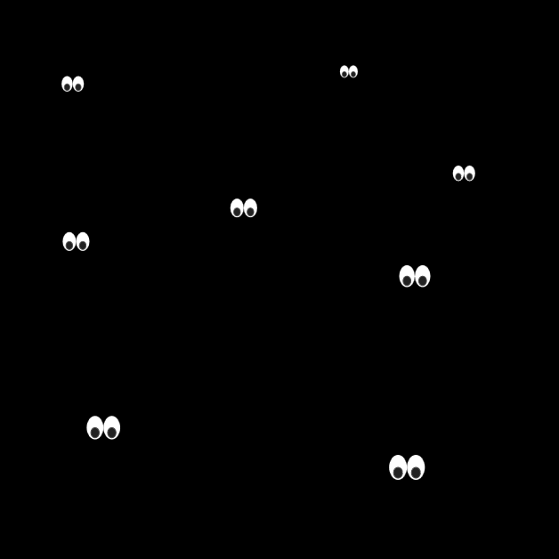
Example Use-visibility-hidden, default styles
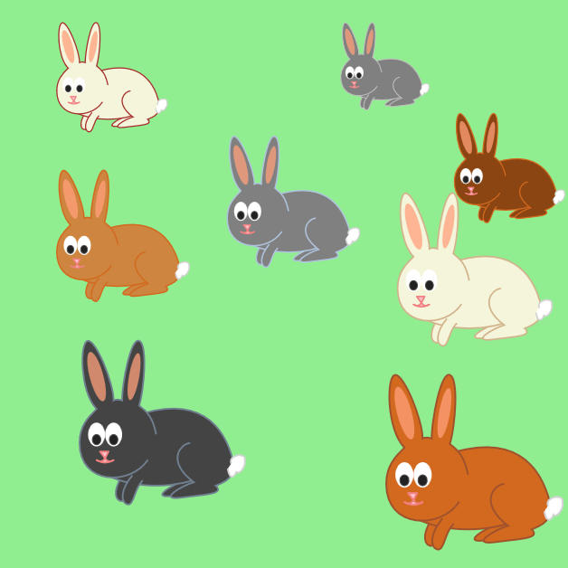
Example Use-visibility-hidden, interactive styles
The example also demonstrates inheritance of other style properties
(fill and stroke)
specified on the ‘use’ elements,
and how these are also not used if any elements within the symbol
specify explicit values (e.g., the pink noses and ears and the white tails).
5.5.4. Animations in use-element shadow trees
The Web Animations API [web-animations-1] and the SVG Animations specification [svg-animation] define non-CSS ways to animate attributes and styles on targetted elements without directly manipulating DOM properties (see the Animation appendix for details). User agents that implement those features must ensure that all animations that apply to an element in a referenced document subtree also apply to instances of that element in a use-element shadow tree, as described in this section.
Scripted animations created by directly manipulating
attributes on elements in the referenced graphics
(including the ‘style’ attribute or its IDL property)
will be propagated to the element instances
in the shadow tree in the same manner as any other DOM manipulations.
Animation effects applied using CSS will be duplicated along with other stylesheet rules, following the procedure specified in the Style Scoping and Inheritance section.
All animations within a use-element shadow tree
operate in the same document timeline as for the
host ‘use’ element,
regardless of whether the referenced element
is from the same or an external document.
For animation effects applied
using a Web Animations API method
[web-animations-1],
if the target of the animation is an element in the referenced document subtree
to an element instance in a shadow tree,
the user agent must construct a ShadowAnimation
whose source is that Animation object
and whose target is the element instance.
If there are multiple instances of the element in different trees,
then there will be multiple shadow animations, one for each.
The user agent must create such a ShadowAnimation
for all Web Animations API animations in effect
(including pending and frozen animations)
at the time the shadow tree is generated,
and for any new animations applied while the shadow tree exists.
The user agent must not create ShadowAnimation objects
for CSS animations or animation elements
(as these are duplicated separately).
As part of the interface definition,
a ShadowAnimation is read-only,
and must reflect any changes to its sourceAnimation.
Any attempts to directly apply new animations
to a target that is a read-only element instance (or pseudo-element)
within a use-element shadow tree
must throw a NoModificationAllowedError.
For each animation element [svg-animation] that targets an element in the referenced document subtree, the user agent must ensure that an equivalent animation element is in effect in the use-element shadow tree. If the animation element itself is part of the referenced document subtree, then this happens as a matter of course through the creation of an element instance for the animation element. Otherwise, the user agent must generate an element instance for the animation element that has the same effect as if it was a node in the shadow tree. The effective document order for these generated animation elements must be the same as the document order for their source elements in the referenced document subtree.
Each animation element or instance must only affect a target element
in the same node tree (shadow or light),
regardless of whether the targetting is implicit (the parent element)
or explicit (a URL cross-reference to an element ‘id’).
In this way, the one-to-one relationship between animation elements
and target elements is preserved.
The ‘id’ attribute is cloned, like any other attribute,
from the source element to the element instance;
This does not conflict with the requirement for ‘id’ to be unique,
because the clone and the original are in distinct node trees.
All animation elements, in the document or in the shadow trees,
which are timed to begin or end in response to an event
on another element identified by its ‘id’ attribute,
must also begin or end when any instance of an element with that ‘id’
receives the same event.
This is consistent with how event listeners on a
referenced element also listen to events on instances of that element,
as described in the section on
Event handling in use-element shadow trees.
This behavior does not apply to animation begin or end times
defined only by an event and not by an ‘id’
(and therefore implicitly listening for the event on the target element);
in that case, each animation element is only triggered by its own target.
At the time an instance of an animation element is generated within a shadow tree, if there is an active animation associated with the source element in the referenced document subtree (including a frozen animation), and the timing event that initiated that animation would also have initiated the instance if it existed, then the animation for the element instance must be initiated, with its begin time adjusted backwards in the document timeline to match the timing of the source element.
In many cases,
the requirements of this section mean that
the element instance and its source element
will animate synchronously.
This will be the case if the animation is purely time-based,
or if it begins and ends in response to user interaction
on an element referenced by its ‘id’.
However, if the animation is triggered by a user interaction event
on the targetted element (implicitly),
then only the element or element instance that receives the interaction event
will display the animation.
This is a change from previous versions of SVG, which required all animations on the source element to be mirrored, regardless of user interaction, but which did not offer clear guidance for responding to user interactions with the element instances. The change ensures that interactive animations declared with animation elements behave in the same manner as interactive CSS styles and CSS animations.
In order to create animations
that apply to all instances when any instance or the original element
receives an event,
specify the element ‘id’ explicitly:
<set href="#target" begin="mouseover" ... />
<!-- only affects the element that is moused over -->
<set href="#target" begin="target.mouseover" ... />
<!-- affects all instances of the element with the id 'target',
in all light and shadow node trees,
when any of them are moused over -->
5.5.5. Event handling in use-element shadow trees
Element in a use-element shadow tree can both listen for and be the target of DOM events. Event retargetting provides encapsulation, so that the details of the shadow DOM structure are masked when an event bubbles out of the shadow tree and into the light.
Event retargeting is new in SVG 2. It provides consistency with the Shadow DOM specification, with existing implementations, and with the expectations of authors who are only concerned with elements in the main DOM.
Any event listeners defined on an element
in the referenced graphics
must also listen for the same event, at the same capture phase,
on each instance of that element in a use-element shadow tree.
This includes event listeners assigned using event attributes
(which would be duplicated as with any other DOM attribute)
and also event listeners assigned using the addEventListener method.
The user agent must ensure that the list of event listeners
for each element instance is synchronized to match
its source element in the referenced document subtree.
An event listener cannot be directly assigned
to a read-only element instance in a use-element shadow tree.
Any attempt to add an event listener to such an element
must throw a NoModificationAllowedError.
Events in the use-element shadow tree are dispatched and bubble according to the shadow tree event path and event retargeting algorithm [DOM].
In general, the event path for a use-element shadow tree
is constructed from the ancestors of the event target element
up to the shadow root,
then the host ‘use’ element
and its event path through to the document window.
This means that, in the capture phase,
an event propagates from the window through the regular document tree
to the ‘use’ element
and then to the shadow root object
and down through the shadow tree
(or recursively through multiple shadow trees)
to the event target element.
In the bubbling phase, the event passes in the opposite direction,
from the shadow tree elements to the shadow root,
then to the ‘use’ element and its ancestors.
The event retargeting algorithm ensures that
from the perspective of event listeners
on the ‘use’ element or its ancestors,
all events targetted to element instances in the shadow tree
instead have a target of the ‘use’ element itself.
If the event has both a target
and a relatedTarget,
and both of these properties would be retargeted
to point to the same ‘use’ element,
then the event is not propagated at all outside of the shadow tree.
This would occur, for example,
if focus moved from one element inside the shadow tree to another.
Certain other event types are constrained to
not propagate outside of the shadow tree in which they were created.
In contrast, event listeners that process the event
while it is propagating through the shadow tree
(because the listener has been added to a
source element in the referenced document subtree)
will receive the event with its target
pointing to a read-only element instance in the shadow tree.
5.6. Conditional processing
5.6.1. Conditional processing overview
SVG contains a ‘switch’ element along with
attributes ‘requiredExtensions’ and ‘systemLanguage’ to provide an
ability to specify alternate viewing depending on the
capabilities of a given user agent or the user’s language.
Attributes ‘requiredExtensions’ and ‘systemLanguage’ act as tests and
evaluate to either true or false. The ‘switch’ renders the first of
its children for which all of these attributes test true. If
the given attribute is not specified, then a true value is
assumed.
When an element is excluded because of conditional processing,
it is treated as if it had a used value of none for the display property.
Similar to the display property, conditional processing
attributes only affect the direct rendering of elements and do
not prevent elements from being successfully referenced by
other elements (such as via a ‘use’).
In consequence:
- conditional processing affects the visual display of graphics elements,
‘
a’, ‘foreignObject’, and text content elements. - conditional processing prevents animation elements from playing.
- conditional processing will
have no effect on never-rendered elements;
in particular, conditional processing does not affect the processing of a ‘
style’ or ‘script’ element. - conditional processing of child content of a never-rendered container element
(e.g., a ‘
pattern’ or a ‘mask’) will affect whether that child content contributes to the graphical effect.
Previous versions of SVG included a third conditional processing attribute,
requiredFeatures.
This was intended to allow authors to provide fallback behavior for user agents
that only implemented parts of the SVG specification.
Unfortunately, poor specification and implementation of this attribute made it unreliable
as a test of feature support.
5.6.2. Definitions
- conditional processing attribute
- A conditional processing attribute is one that controls whether or not the element on which it appears is processed. Most elements, but not all, may have conditional processing attributes specified on them. See Conditional processing for details. The conditional processing attributes defined in SVG 2 are ‘requiredExtensions’ and ‘systemLanguage’.
5.6.3. The ‘switch’ element
switch’- Categories:
- Container element, renderable element
- Content model:
-
Any number of the following elements, in any order:
a,foreignObject,g,image,svg,switch,text,use - Attributes:
- DOM Interfaces:
The ‘switch’ element evaluates
the ‘requiredExtensions’ and
‘systemLanguage’ attributes on its direct child elements in
order, and then processes and renders the first child for which these
attributes evaluate to true. All others will be bypassed and therefore
not rendered. If the child element is a container element such as a
‘g’, then the entire subtree is either processed/rendered or
bypassed/not rendered.
In SVG, when evaluating the ‘systemLanguage’ attribute, the order of
evaluation of descendant elements of the ‘switch’ element must be as if the
'allowReorder'
attribute, defined in the SMIL specification [SMIL]
always has a value of 'yes'.
Note that the values of properties display and
visibility have no effect on ‘switch’ element
processing. In particular, setting display to
none on a child of a ‘switch’ element
has no effect on true/false testing associated with ‘switch’
element processing.
The ‘switch’ element does not affect the processing of
‘script’ and ‘style’ elements.
For more information and an example, see Embedding foreign object types.
5.6.4. The ‘requiredExtensions’ attribute
The ‘requiredExtensions’ attribute defines a list of required language extensions. Language extensions are capabilities within a user agent that go beyond the feature set defined in this specification. Each extension is identified by an URL reference.
-
Name Value Initial value Animatable requiredExtensionsset of space-separated tokens [HTML] (none) no -
The value is a list of URL references which identify the required extensions, with the individual values separated by white space. Determines whether all of the named extensions are supported by the user agent. If all of the given extensions are supported, then the attribute evaluates to true; otherwise, the current element and its children are skipped and thus will not be rendered.
If a given URL reference contains white space within itself, that white space must be escaped.
If the attribute is not present, then it implicitly evaluates to "true". If a null string or empty string value is given to attribute ‘requiredExtensions’, the attribute evaluates to "false".
‘requiredExtensions’ is often
used in conjunction with the ‘switch’ element. If the ‘requiredExtensions’ is used in other
situations, then it represents a simple switch on the given
element whether to render the element or not.
The URL names for the extension should include versioning information, such as "http://example.org/SVGExtensionXYZ/1.0", so that script writers can distinguish between different versions of a given extension.
5.6.5. The ‘systemLanguage’ attribute
-
Name Value Initial value Animatable systemLanguageset of comma-separated tokens [HTML] (none) no -
The value is a set of comma-separated tokens, each of which must be a Language-Tag value, as defined in BCP 47 [BCP47].
To evaluate the ‘systemLanguage’ attribute with value V:
-
Let tags be the result of parsing V as a set of comma-separated tokens [HTML].
-
Remove from tags any token that is the empty string.
-
If tags is empty, return false.
-
Let user languages be the user’s ordered list of preferred languages.
-
For each tag in tags, for each user-lang in user languages:
-
If tag is an ASCII case-insensitive match for user-lang, return true.
-
If user-lang is an ASCII case-insensitive prefix of tag and the code point in tag immediately following the prefix is U+002D HYPHEN-MINUS (-), return true.
-
-
Return false.
If the attribute is not present, then it implicitly evaluates to "true".
This use of a prefix matching rule does not imply that language tags are assigned to languages in such a way that it is always true that if a user understands a language with a certain tag, then this user will also understand all languages with tags for which this tag is a prefix.
The prefix rule simply allows the use of prefix tags if this is the case.
Implementation note: When making the choice of linguistic preference available to the user, implementers should take into account the fact that users are not familiar with the details of language matching as described above, and should provide appropriate guidance. As an example, users may assume that on selecting "en-gb", they will be served any kind of English document if British English is not available. The user interface for setting user preferences should guide the user to add "en" to get the best matching behavior.
Multiple languages may be listed for content that is intended for multiple audiences. For example, content that is presented simultaneously in the original Maori and English versions, would call for:
<text systemLanguage="mi, en"><!-- content goes here --></text>
However, just because multiple languages are present within the object on which the ‘systemLanguage’ test attribute is placed, this does not mean that it is intended for multiple linguistic audiences. An example would be a beginner’s language primer, such as "A First Lesson in Latin," which is clearly intended to be used by an English-literate audience. In this case, the ‘systemLanguage’ test attribute should only include "en".
The ‘switch’ element evaluates each child’s ‘systemLanguage’ attribute in order and renders only the first match. A final child without ‘systemLanguage’ acts as a catch-all, ensuring content is always displayed regardless of the user’s language preferences.
<switch> <text systemLanguage="fr" x="10" y="30">Bonjour</text> <text systemLanguage="ja" x="10" y="30">こんにちは</text> <text x="10" y="30">Hello</text> </switch>
A user with language preference "fr" sees "Bonjour". A user with "ja" sees "こんにちは". Any other user sees the catch-all "Hello".
The prefix matching rule allows authors to provide progressively specific language variants. More specific tags should appear first, since the ‘switch’ element renders the first matching child.
<switch> <text systemLanguage="zh-Hans" x="10" y="30">简体中文</text> <text systemLanguage="zh-Hant" x="10" y="30">繁體中文</text> <text systemLanguage="zh" x="10" y="30">中文</text> </switch>
A user with language preference "zh-Hans-CN" matches the first child, because "zh-Hans" is an ASCII case-insensitive prefix of "zh-Hans-CN" followed by "-". A user with "zh-TW" does not match "zh-Hans" or "zh-Hant", but matches the "zh" fallback.
Authoring note: Authors should realize that if several alternative language objects are enclosed in a ‘switch’, and none of them matches, this may lead to situations where no content is displayed. It is thus recommended to include a "catch-all" choice at the end of such a ‘switch’ which is acceptable in all cases.
‘systemLanguage’ is often used in conjunction with the ‘switch’ element. If the ‘systemLanguage’ is used in other situations, then it represents a simple switch on the given element whether to render the element or not.
5.7. The ‘desc’ and ‘title’ elements
5.7.1. Definition
- descriptive element
- An element which provides supplementary descriptive information about
its parent. Specifically, the following elements are descriptive elements:
‘
desc’, ‘metadata’ and ‘title’.
Multilingual descriptive text selection, based on the ‘lang’ attribute, was added to allow internationalization
of the ‘desc’ and ‘title’ elements.
New in SVG 2. Adding 'lang' resolved at Rigi Kaltbad face-to-face. Removed text that limited number of 'desc' and 'title' elements. Status: Done.
Any container element or graphics element in an SVG document
can have zero or more ‘desc’ and/or ‘title’ elements as children,
whose content is text. ‘desc’ and ‘title’ elements are
not visually rendered as part of the graphics.
The display value for the ‘title’ and ‘desc’ elements
must always be set to none
by the user agent style sheet,
and this declaration must have importance over any other CSS rule or presentation attribute.
Multiple sibling ‘desc’ or ‘title’ elements must have
different languages,
as defined using a ‘lang’ attribute (or xml:lang attribute) on the descriptive element or an ancestor.
The user agent must select the element of each type whose language best
matches language preferences set by the user.
A descriptive element with an empty-string language tag
(indicating no language, for example a text alternative consisting of emoji symbols)
is a lowest-priority match for any user, ranked below all user-specified language preferences.
If multiple equally valid matches exist, the first match should be used.
If no match exists for either 'title' or 'desc', the first element of that type must be selected.
The following example shows alternative language titles on a re-used star icon,
inline in an HTML document.
The example assumes that the HTML document as a whole has a correctly-declared language of en (English without a specified country code).
<svg>
<use href="#star">
<title>Favourite</title>
<title lang="en-us">Favorite</title>
<title lang="nl">Favoriet</title>
<title lang="">★</title>
</use>
</svg>
The first title element inherits the language of the document (en); the others have explicitly-declared languages for each element.
If the user’s preferred language (out of those provided) is American English, the icon title is the American spelling "Favorite".
If the user’s preferred language is Dutch, the icon title is "Favoriet".
If the user’s preference list includes generic English ranked higher than Dutch, the title is "Favourite" with British spelling.
If the user does not understand either Dutch or English, the title will be the star symbol character—which is not ideal (most screen readers will read it as a localized version of "black star"), but better than no text alternative at all.
Authors should be aware that SVG 1.1-supporting user agents
that have not yet implemented multi-lingual descriptive text
will normally select the first element of each type, regardless of user preferences.
SVG 1.1 user agents may also fail to recognize a title element that is not the first child of its parent,
or a desc element that has previous siblings that are not other descriptive elements.
The use of more than one ‘title’ or ‘desc’ element to
provide localised information is at risk, with no known implementations.
User agents must make the text content of selected 'title' and 'desc' elements available to platform accessibility APIs as part of the name and description computation for the parent element, as defined in the SVG Accessibility API Mappings [SVG-AAM] specification.
Inclusion of any 'title' or 'desc' elements as a direct child of a rendered element indicates that the rendered element is of semantic importance in the graphic. Authors should not, and SVG generators must not, include empty 'title' or 'desc' elements with no text content or whitespace-only text content, as this will result in a nameless object being presented to assistive technology users.
If an individual graphic element has no meaning on its own,
alternative text should instead be provided for the nearest container element that describes a meaningful object.
Authors should use grouping (‘g’) elements to structure their drawing elements into meaningful objects, and name those groups with ‘title’.
Conversely, if a container object is used simply to apply styles or layout,
and neither defines an object nor provides meaningful grouping structure,
it does not need alternative text.
Descriptive text elements whose parent is not rendered may be used by authors or authoring tools as reference information; authors are warned that this data is not normally available to end users viewing the graphic through assistive technologies. Nonetheless, a non-rendered element may be referenced as part of the accessible name or description of a rendered element (as defined in SVG-AAM), and the recursive computation will use descriptive child elements of the referenced element.
Description and title elements may contain marked-up text from other namespaces, using standard XML mechanisms to indicate the namespace. However, authors should not rely on such markup to provide meaning to alternative text; only the plain text content is currently required to be exposed to assistive technologies.
The HTML parser treats all markup within ‘title’ and ‘desc’
the same way it treats markup in an HTML fragment;
most elements will be assigned to the HTML namespace.
User agents may use markup within ‘title’
to influence the visual presentation of titles (such as tooltips),
but are not required to do so.
title’- Categories:
- Descriptive element, never-rendered element
- Content model:
- Any elements or character data.
- Attributes:
- DOM Interfaces:
The ‘title’ child element represents a short text alternative for the
element.
On a link, this could be the title or a description of the target resource; on an image or drawing object, it could be a short description of the graphic; on interactive content, it could be a label for, or instructions for, use of the element; and so forth.
Authors should not provide redundant information in a ‘title’ element
if there is also a visible label for the drawing element (e.g., using a ‘text’ element).
Instead, the visual label should be associated with the drawing element
using an ‘aria-labelledby’ attribute.
Interactive user agents should make the plain text content of ‘title’ elements available in response to user interaction, in a manner consistent with platform conventions;
existing user agents commonly render ‘title’ elements as
a tooltip on hovering the parent element.
Authors should provide a ‘title’ child element to the root svg
element within a stand-alone SVG document. Since users often consult documents
out of context, authors should provide context-rich titles. Thus, instead of a
title such as "Introduction", which doesn’t provide much contextual background,
authors should supply a title such as "Introduction to Medieval Bee-Keeping"
instead. For reasons of accessibility, user agents should always make the
content of the ‘title’ child element to the root svg element available to
users.
However, this is typically done through other means than the tooltips used for nested SVG and graphics elements, e.g., by displaying in a browser tab.
desc’- Categories:
- Descriptive element, never-rendered element
- Content model:
- Any elements or character data.
- Attributes:
- DOM Interfaces:
The ‘desc’ element represents more detailed textual
information for the element such as a description. This is typically exposed to assistive
technologies to provide more detailed information, such as a description of the visual appearance of a graphic or help to explain the functionality of a complex widget. It is not typically available to other users, so should not be used for essential instructions.
Authors may associate detailed information, including visible text, with part of the graphic
using ‘aria-describedby’ attribute
(on the described element or a parent container),
with the value being an ID reference to one or more SVG or HTML elements containing the description.
The ‘aria-describedby’ attribute takes precedence
over the child ‘desc’ when providing a description.
If an element has both visible description and a child ‘desc’ element providing supplementary information,
authors should explicitly include the ‘id’ of the element itself in its own ‘aria-describedby’ list, in order to concatenate the two descriptions together.
5.8. The ‘metadata’ element
Metadata which is included with SVG content should be
specified within ‘metadata’
elements. The contents of the ‘metadata’ should be elements from
other XML namespaces, with these elements from these namespaces
expressed in a manner conforming with the Namespaces in XML Recommendation
[xml-names].
SVG 2 removes the recommendation to structure metadata elements in any particular way.
metadata’- Categories:
- Descriptive element, never-rendered element
- Content model:
- Any elements or character data.
- Attributes:
- DOM Interfaces:
Metadata content is not directly rendered;
the display value for the ‘metadata’ element
must always be set to none
by the user agent style sheet,
and this declaration must have importance over any other CSS rule or presentation attribute.
Here is an example of how metadata can be included in an SVG document. The example uses the Dublin Core version 1.1 schema. (Other XML-compatible metadata languages, including ones not based on RDF, can be used also.)
<?xml version="1.0" standalone="yes"?>
<svg width="4in" height="3in"
xmlns = 'http://www.w3.org/2000/svg'>
<desc xmlns:myfoo="http://example.org/myfoo">
<myfoo:title>This is a financial report</myfoo:title>
<myfoo:descr>The global description uses markup from the
<myfoo:emph>myfoo</myfoo:emph> namespace.</myfoo:descr>
<myfoo:scene><myfoo:what>widget $growth</myfoo:what>
<myfoo:contains>$three $graph-bar</myfoo:contains>
<myfoo:when>1998 $through 2000</myfoo:when> </myfoo:scene>
</desc>
<metadata>
<rdf:RDF
xmlns:rdf = "http://www.w3.org/1999/02/22-rdf-syntax-ns#"
xmlns:rdfs = "http://www.w3.org/2000/01/rdf-schema#"
xmlns:dc = "http://purl.org/dc/elements/1.1/" >
<rdf:Description about="http://example.org/myfoo"
dc:title="MyFoo Financial Report"
dc:description="$three $bar $thousands $dollars $from 1998 $through 2000"
dc:publisher="Example Organization"
dc:date="2000-04-11"
dc:format="image/svg+xml"
dc:language="en" >
<dc:creator>
<rdf:Bag>
<rdf:li>Irving Bird</rdf:li>
<rdf:li>Mary Lambert</rdf:li>
</rdf:Bag>
</dc:creator>
</rdf:Description>
</rdf:RDF>
</metadata>
</svg>
5.9. HTML metadata elements
For user agents that support HTML, the following HTML elements (in the HTML namespace) must be supported in SVG documents:
Note that the base element will affect all URL values in the document, including e.g. paint server references or ‘use’ element references.
However, when processing URL references
to identify a specific target element,
the user agent must always compare the generated absolute URL against the current document base URL
to determine whether it is a same-document URL reference.
In this way, target-fragment only references to elements in the same document remain valid,
regardless of any changes to the document base URL.
5.10. Foreign namespaces and private data
SVG allows inclusion of elements from foreign namespaces anywhere within the SVG content. In general, the SVG user agent must include the unknown foreign-namespaced elements in the DOM but will ignore and exclude them for rendering purposes.
The notable exceptions is described in the Embedded Content chapter under Embedding Foreign Object Types.
Additionally, SVG allows inclusion of attributes from foreign namespaces on any SVG element. The SVG user agent must include unknown attributes in the DOM but should otherwise ignore unknown attributes.
Authors should be aware that unknown namespaced elements and attributes will not be parsed as such by the HTML parser. Instead, the namespace prefix will be included in the tag or attribute name, elements will be placed in the parent element namespace and attributes in the default namespace.
To add custom attributes in a way that will result in consistent parsing
in both XML and HTML documents,
authors may use the ‘data-*’ attributes.
These can be added to SVG ‘metadata’ elements
if the information they encode is not associated with any other element in the document.
SVG’s ability to include foreign namespaces can be used for the following purposes:
- Application-specific information so that authoring applications can include model-level data in the SVG content to serve their "roundtripping" purposes (i.e., the ability to write, then read a file without loss of higher-level information).
- Supplemental data for extensibility. For example, suppose there is an extension which extrudes 2D graphics into three dimensions according to certain parameters; these parameters may be included in the SVG content by inserting elements from the extension’s namespace.
For example, a business graphics authoring application might want to include some private data within an SVG document so that it could properly reassemble the chart (a pie chart in this case) upon reading it back in:
<?xml version="1.0" standalone="yes"?>
<svg width="4in" height="3in"
xmlns = 'http://www.w3.org/2000/svg'>
<defs>
<myapp:piechart xmlns:myapp="http://example.org/myapp"
title="Sales by Region">
<myapp:pieslice label="Northern Region" value="1.23"/>
<myapp:pieslice label="Eastern Region" value="2.53"/>
<myapp:pieslice label="Southern Region" value="3.89"/>
<myapp:pieslice label="Western Region" value="2.04"/>
<!-- Other private data goes here -->
</myapp:piechart>
</defs>
<desc>This chart includes private data in another namespace
</desc>
<!-- In here would be the actual SVG graphics elements which
draw the pie chart -->
</svg>
5.11. Common attributes
5.11.1. Definitions
- core attributes
- The core attributes are those attributes that can be specified
on any SVG element.
The core attributes are ‘
id’, ‘tabindex’, ‘autofocus’, ‘lang’, ‘xml:space’, ‘class’ and ‘style’, along with all custom data attributes.
5.11.2. Attributes common to all elements: ‘id’
The ‘id’ attribute is available on all SVG elements:
-
Name Value Initial value Animatable id(see below) (none) no -
Must reflect the element’s ID [DOM]. The ‘
id’ attribute must be unique within the node tree, must not be an empty string, and must not contain any whitespace characters.Additional requirements apply in order for the ‘
id’ attribute to be valid in XML documents, as defined in the specification for the relevant version of XML. A stand-alone SVG document uses XML 1.0 syntax [xml], which specifies that valid ‘id’ values are XML name tokens. Valid XML 1.0 names only include designated characters (letters, digits, and a few punctuation marks), and do not start with a digit, a full stop (.) character, or a hyphen-minus (-) character.User agents should process ‘
id’ values in SVG files irrespective of XML validity.Authors should avoid the use of ‘
id’ values that would be parsed as an SVG view specification or a basic media fragment when used as a URL target fragment.
5.11.3. The ‘lang’ and ‘xml:lang’ attributes
The ‘lang’ attribute (in no namespace) specifies the primary language for the element’s contents and for any of the element’s attributes that contain text.
The ‘lang’ attribute in the XML namespace is defined in XML [xml].
If these attributes are omitted from an element, then the language of this element is the same as the language of its parent element, if any.
The ‘lang’ attribute in the XML namespace may be used on SVG elements in XML documents. If both the ‘lang’ attribute in no namespace and the ‘lang’ attribute in the XML namespace are specified on the same element, they must have exactly the same value when compared in an ASCII case-insensitive manner.
If both the ‘lang’ attribute in no namespace and the ‘lang’ attribute in the XML namespace are set on an element, user agents must use the ‘lang’ attribute in the XML namespace, and the ‘lang’ attribute in no namespace must be ignored for the purposes of determining the element’s language.
-
Name Value Initial value Animatable langLanguage-Tag [ABNF] (none) no -
The ‘lang’ attribute specifies the primary language for the element’s contents and for any of the element’s attributes that contain text. Its value must be a valid BCP 47 language tag, or the empty string. Setting the attribute to the empty string indicates that the primary language is unknown. [BCP47].
5.11.4. The ‘xml:space’ attribute
| SVG 2 Requirement: | Deprecate the use of ‘xml:space’ to affect text layout and use the ‘white-space’ property instead. |
|---|---|
| Resolution: | We drop xml:space from SVG 2 and remove the relating tests from the SVG 1.1. test suite. |
| Purpose: | To align with CSS. |
| Owner: | Chris (ACTION-3004, done; and ACTION-3005, done) |
| Status | Done. |
-
Name Value Initial value Animatable xml:space(see below) default no -
Deprecated XML attribute to specify whether white space is preserved in character data. The only possible values are the strings 'default' and 'preserve', without white space. Refer to the Extensible Markup Language (XML) 1.0 Recommendation [xml] and to the discussion white space handling in SVG.
New content should use the white-space property instead.
5.11.5. The ‘tabindex’ attribute
-
Name Value Initial value Animatable tabindexvalid integer [HTML] (none) no -
This content attribute allows authors to control whether an element is focusable, whether it is supposed to be reachable using sequential focus navigation, and what is to be the relative order of the element for the purposes of sequential focus navigation.
The name "tab index" comes from the common use of the "tab" key to navigate through the focusable elements. The term "tabbing" refers to moving forward through the focusable elements that can be reached using sequential focus navigation.
5.11.6. The ‘autofocus’ attribute
-
Name Value Initial value Animatable autofocusboolean attribute [HTML] (none) no -
This content attribute allows authors to ask a focusable element to be focused after it’s connected to a document. See autofocus in the HTML specification for details.
The attribute has no effect if the element is not already focusable.
5.11.7. The ‘data-*’ attributes
All SVG elements support custom data attributes, which are those in no namespace whose names begin with the string "data-". See the requirements for custom data attributes in the HTML specification.
5.12. WAI-ARIA attributes
5.12.1. Definitions
- ARIA attributes
- These are the attributes defined in WAI-ARIA,
consisting of WAI-ARIA states and properties
as well as the role attribute.
See the WAI-ARIA
Definition of Roles, the WAI-ARIA
Graphics Module Graphics Roles,
and the WAI-ARIA Supported States and Properties.
The aria attributes are ‘aria-activedescendant’, ‘aria-atomic’, ‘aria-autocomplete’, ‘aria-busy’, ‘aria-checked’, ‘aria-colcount’, ‘aria-colindex’, ‘aria-colspan’, ‘aria-controls’, ‘aria-current’, ‘aria-describedby’, ‘aria-details’, ‘aria-disabled’, ‘aria-dropeffect’, ‘aria-errormessage’, ‘aria-expanded’, ‘aria-flowto’, ‘aria-grabbed’, ‘aria-haspopup’, ‘aria-hidden’, ‘aria-invalid’, ‘aria-keyshortcuts’, ‘aria-label’, ‘aria-labelledby’, ‘aria-level’, ‘aria-live’, ‘aria-modal’, ‘aria-multiline’, ‘aria-multiselectable’, ‘aria-orientation’, ‘aria-owns’, ‘aria-placeholder’, ‘aria-posinset’, ‘aria-pressed’, ‘aria-readonly’, ‘aria-relevant’, ‘aria-required’, ‘aria-roledescription’, ‘aria-rowcount’, ‘aria-rowindex’, ‘aria-rowspan’, ‘aria-selected’, ‘aria-setsize’, ‘aria-sort’, ‘aria-valuemax’, ‘aria-valuemin’, ‘aria-valuenow’, ‘aria-valuetext’ and ‘
role’.
Note that the above list of ARIA attributes may be expanded by future WAI-ARIA specifications.
5.12.2. Role attribute
Any renderable element may have an ARIA role attribute specified; the role attribute is ignored on non-rendered elements. The attribute, if specified, must have a value that is a set of space-separated tokens representing the various WAI-ARIA roles that the element belongs to. These tokens are role values defined in Definition of Roles ([wai-aria], section 5.4) and Graphics Roles ([graphics-aria-1.0], section 4).
The WAI-ARIA role that an SVG element has assigned to it is the first valid role found in the list of tokens generated when the role attribute is split on spaces. A valid role is a recognized, non-abstract role that is allowed for the element type.
-
Name Value Initial value Animatable roleset of space-separated tokens [HTML] (see below) no -
The ‘
role’ attribute must be a set of space-separated tokens having values defined in Definition of Roles ([wai-aria], section 5.4).The role value is a set of white-space separated machine-extractable semantic information used to define the purpose of the element.
The initial value for the ‘
role’ attribute, for each SVG element, is the corresponding default implied ARIA semantic for SVG elements.
To be valid and useful, many element roles require additional information to be provided in the form of an accessible name or explicit state and property values. Accessible names may be provided using SVG descriptive elements or ARIA attributes. The requirements for each role are indicated where the role is defined, e.g., in WAI-ARIA ([WAI-ARIA]) or the WAI-ARIA Graphics Module ([graphics-aria-1.0]).
5.12.3. State and property attributes (all aria- attributes)
WAI-ARIA state and property attributes may be specified on SVG elements. These attributes are defined by ARIA in Definitions of States and Properties (all aria-* attributes) ([wai-aria], section 6.6).
These attributes, if specified, must have a value that is the WAI-ARIA value type in the "Value" field of the definition for the state or property, mapped to the appropriate SVG value type according to Mapping WAI-ARIA Value types to languages using the SVG mapping ([wai-aria], section 10.2).
The attributes are animatable; if animation is used to change the state of the graphic, or to change its content in a way that alters the correct alternative text description, the same method of animation should be used to update the corresponding ARIA state or property attribute.
WAI-ARIA State and Property attributes can be used on any element. They are not always meaningful, however, and in such cases user agents might not perform any processing aside from including them in the DOM. State and property attributes are processed according to the ARIA and SVG Accessibility API Mappings specification specifications. [wai-aria] [svg-aam-1.0]
5.12.4. Implicit and Allowed ARIA Semantics
The following table defines the default implicit ARIA semantics that apply to SVG elements. Each language feature (element) in a cell in the first column implies the ARIA semantics (role, states, and/or properties) given in the cell in the second column of the same row. The third column defines restrictions as to what WAI-ARIA semantic (role, state, or property) may or may not apply.
For many graphics elements, an implicit role is only assigned
if the author provides information that indicates semantic importance.
The complete inclusion criteria for the accessibility tree
are defined by the SVG Accessibility API Mappings specification for user agents [svg-aam-1.0].
For authors, the preferred means of indicating semantic importance is to provide an accessible name for the element.
This can be done through a direct child ‘title’ element,
or through the ‘aria-label’ or ‘aria-labelledby’ attributes.
Authors should use one of these methods to provide an accessible name
for any content that is essential to the comprehension of the SVG,
and especially for any interactive content.
| Language feature | Default implied ARIA semantics | Allowed roles |
|---|---|---|
‘a’
| link role
if the element has a valid href or xlink:href attribute.
For a elements that are not links, the default semantics are the same as
tspan if the a element is a descendent of text,
or the same as g otherwise.
| no restrictions |
‘circle’
| graphics-symbol role
if the element meets the inclusion criteria,
otherwise none
| no restrictions |
| ‘clipPath’ | none | no role may be applied |
‘defs’
| none | no role may be applied |
‘desc’
| none | no role may be applied |
‘ellipse’
| graphics-symbol role
if the element meets the inclusion criteria,
otherwise none
| no restrictions |
| ‘feBlend’ | none | no role may be applied |
| ‘feColorMatrix’ | none | no role may be applied |
| ‘feComponentTransfer’ | none | no role may be applied |
| ‘feComposite’ | none | no role may be applied |
| ‘feConvolveMatrix’ | none | no role may be applied |
| ‘feDiffuseLighting’ | none | no role may be applied |
| ‘feDisplacementMap’ | none | no role may be applied |
| ‘feDistantLight’ | none | no role may be applied |
| ‘feDropShadow’ | none | no role may be applied |
| ‘feFlood’ | none | no role may be applied |
| ‘feFuncA’ | none | no role may be applied |
| ‘feFuncB’ | none | no role may be applied |
| ‘feFuncG’ | none | no role may be applied |
| ‘feFuncR’ | none | no role may be applied |
| ‘feGaussianBlur’ | none | no role may be applied |
| ‘feImage’ | none | no role may be applied |
| ‘feMerge’ | none | no role may be applied |
| ‘feMergeNode’ | none | no role may be applied |
| ‘feMorphology’ | none | no role may be applied |
| ‘feOffset’ | none | no role may be applied |
| ‘fePointLight’ | none | no role may be applied |
| ‘feSpecularLighting’ | none | no role may be applied |
| ‘feSpotLight’ | none | no role may be applied |
| ‘feTile’ | none | no role may be applied |
| ‘feTurbulence’ | none | no role may be applied |
| ‘filter’ | none | no role may be applied |
‘foreignObject’
| group role
if the element meets the inclusion criteria,
otherwise none
| no restrictions |
‘g’
| group role
if the element meets the inclusion criteria,
otherwise none
| no restrictions |
‘image’
| img role
| no restrictions |
‘line’
| graphics-symbol role
if the element meets the inclusion criteria,
otherwise none
| no restrictions |
‘linearGradient’
| none | no role may be applied |
‘marker’
| none | no role may be applied |
| ‘mask’ | none | no role may be applied |
‘metadata’
| none | no role may be applied |
| ‘mpath’ | none | no role may be applied |
‘path’
| graphics-symbol role
if the element meets the inclusion criteria,
otherwise none
| no restrictions |
‘pattern’
| none | no role may be applied |
‘polygon’
| graphics-symbol role
if the element meets the inclusion criteria,
otherwise none
| no restrictions |
‘polyline’
| graphics-symbol role
if the element meets the inclusion criteria,
otherwise none
| no restrictions |
‘radialGradient’
| none | no role may be applied |
‘rect’
| graphics-symbol role
if the element meets the inclusion criteria,
otherwise none
| no restrictions |
‘script’
| none | no role may be applied |
‘stop’
| none | no role may be applied |
‘style’
| none | no role may be applied |
‘svg’
| graphics-document role
| no restrictions |
‘switch’
| none | no role may be applied |
‘symbol’
| graphics-object role
if the element is a rendered element instance
that meets the inclusion criteria,
otherwise none
| no restrictions |
‘text’
| grouprole,
with platform-specific role mappings,
as defined in the SVG Accessibility API Mappings specification
| no restrictions |
‘textPath’
| group role
if the element meets the inclusion criteria,
otherwise none
| no restrictions |
‘title’
| none | no role may be applied |
‘tspan’
| group role
if the element meets the inclusion criteria,
otherwise none
| no restrictions |
‘use’
| graphics-object role
if the element meets the inclusion criteria,
otherwise none
| no restrictions |
‘view’
| none | no role may be applied |
5.13. DOM interfaces
5.13.1. Extensions to the Document interface
The DOM Core specification defines a Document interface, which this specification extends.
In the case where an SVG document is embedded by reference,
such as when an HTML document has an ‘object’
element whose ‘data’ attribute references an SVG
document (i.e., a document whose MIME type is "image/svg+xml"
and whose root element is thus an ‘svg’ element), there will exist
two distinct DOM hierarchies. The first DOM hierarchy will be for the
referencing document (e.g., an XHTML document). The second DOM hierarchy
will be for the referenced SVG document.
partial interface Document {readonly attribute SVGSVGElement ?rootElement ; };
The rootElementsvg’ element. On getting
rootElement, the root element
of the document is returned, if it is an ‘svg’ element, or null
otherwise.
This attribute is deprecated, and may be removed in a future SVG specification. Authors are encouraged to use the documentElement attribute on Document instead.
SVG implementations that implement HTML must support the HTML extensions to the document interface. Other SVG implementations must support the following IDL fragment.
// must only be implemented in certain implementationspartial interface Document {readonly attribute DOMString ;title readonly attribute DOMString ;referrer readonly attribute DOMString ;domain readonly attribute Element ?activeElement ; };
The title, referrer, domain and activeElement
5.13.2. Interface SVGSVGElement
An SVGSVGElement object represents an ‘svg’ element
in the DOM. The SVGSVGElement interface also contains
miscellaneous utility methods, such as data type object factory methods.
An SVGSVGElement object maintains an internal
SVGPoint object, called its
current translate point object,
which is the object returned from the currentTranslate
IDL attribute.
[Exposed =Window ]interface :SVGSVGElement SVGGraphicsElement { [SameObject ]readonly attribute SVGAnimatedLength x ; [SameObject ]readonly attribute SVGAnimatedLength y ; [SameObject ]readonly attribute SVGAnimatedLength width ; [SameObject ]readonly attribute SVGAnimatedLength height ;attribute float currentScale ; [SameObject ]readonly attribute SVGPoint currentTranslate ;NodeList getIntersectionList (SVGRect ,rect SVGElement ?);referenceElement NodeList getEnclosureList (SVGRect ,rect SVGElement ?);referenceElement boolean checkIntersection (SVGElement ,element SVGRect );rect boolean checkEnclosure (SVGElement ,element SVGRect );rect undefined deselectAll (); [NewObject ]SVGNumber createSVGNumber (); [NewObject ]SVGLength createSVGLength (); [NewObject ]SVGAngle createSVGAngle (); [NewObject ]SVGPoint createSVGPoint (); [NewObject ]SVGMatrix createSVGMatrix (); [NewObject ]SVGRect createSVGRect (); [NewObject ]SVGTransform createSVGTransform (); [NewObject ]SVGTransform createSVGTransformFromMatrix (optional DOMMatrix2DInit = {});matrix Element ?getElementById (DOMString ); // Deprecated methods that have no effect when called, // but which are kept for compatibility reasons.elementId unsigned long suspendRedraw (unsigned long );maxWaitMilliseconds undefined unsuspendRedraw (unsigned long );suspendHandleID undefined unsuspendRedrawAll ();undefined forceRedraw (); };SVGSVGElement includes SVGFitToViewBox ;SVGSVGElement includes WindowEventHandlers ;
The
xywidthheight
The currentScalecurrentTranslate
The document’s magnification and panning
transform is a 2x3 matrix of the form
[currentScale 0 0 currentScale currentTranslate.x currentTranslate.y].
The value of the ‘transform’ property does not affect
currentScale or
currentTranslate.
Previous versions of SVG recommended that user agents implement controls, by default,
for the user to set the scale (zoom) and translate (pan) of the graphic.
Transformations from these user actions would be reflected
in the values of currentScale and currentTranslate.
These user controls were not well implemented, and are no longer recommended.
However, authors should be aware that the user agent may update these values.
The obsolete attribute zoomAndPan="disable", on the outermost SVG element,
should disable any user agent manipulation of the values based on user action,
but may have unwanted side effects in some user agents.
The interaction of currentScale and currentTranslate with other ways of transforming the document root (transforms and SVG views) is poorly defined. See the GitHub issue for more.
On getting currentScale,
the following steps are run:
- If the current ‘
svg’ element is not the outermost svg element, then return 1. - Let [a b c d e f] be the 2x3 matrix that represents the document’s magnification and panning transform.
- Return a.
On setting currentScale,
the following steps are run:
- If the current ‘
svg’ element is not the outermost svg element, then return. - Let scale be the value being assigned to
currentScale. - Let [a b c d e f] be the 2x3 matrix that represents the document’s magnification and panning transform.
- Set the document’s magnification and panning transform to [scale 0 0 scale e f].
On getting currentTranslate,
the SVGSVGElement object’s current
translate point object is returned. This object
represents the current translation
for the ‘svg’ element. A current
translate point object must be read only
when its ‘svg’ element is not the outermost svg element,
and writable otherwise.
See the rules for assigning to a SVGPoint for how modifying the current translate point object affects the document’s magnification and panning transform.
Whenever the document’s magnification and panning transform changes in response to user interaction or whenever the outermost svg element changes, the following steps are run:
- Let [a b c d e f] be the 2x3 matrix that represents the document’s magnification and panning transform.
- Let element be the outermost svg element.
- Update the x and y components of element’s current translate point object to e and f, respectively.
Running these steps when the outermost svg element
changes will ensure that if the document element is replaced with a different
‘svg’ element, that its currentTranslate
will be immediately updated to reflect the translation component of
the document’s magnification and panning transform.
Whenever an ‘svg’ element is no longer outermost svg element,
the x and y components of its current
translate point object must be set to 0.
The suspendRedrawunsuspendRedrawunsuspendRedrawAllforceRedraw
The getIntersectionListgetEnclosureListcheckIntersectioncheckEnclosure
To find the intersecting or enclosed descendants of a given element element with a given rectangle rectangle using ancestor as the element in whose coordinate space rectangle is to be interpreted, the following steps are run:
- Let result be an initially empty list.
- If element is not displayed, due to having a display value
of none or being in a subtree that has
failing conditional processing attributes or a failing branch
of a ‘
switch’, then return result. -
For each child element child of element, in document order:
-
If child is an ‘
svg’ or ‘g’ element, then:- Let descendants be the result of finding the intersecting (or enclosed) descendants of child with rectangle in ancestor’s coordinate space.
- Append to result all the elements of descendants.
-
Otherwise, if child is a ‘
use’ element, then:- Let root be the root of the child’s shadow tree.
- Let descendants be the result of finding the intersecting (or enclosed) descendants of root with rectangle in ancestor’s coordinate space.
-
If descendants is not empty, then append child
to result.
This means that although we look at the elements in the use-element shadow tree, we don’t place the element instances or their source elements in the referenced document subtree in the result list; only the ‘
use’ element itself is returned.
-
Otherwise, if child is a graphics element, then:
- Let region be the shape in child’s coordinate system that is sensitive to hit detection, taking into account the rules for interpreting child’s pointer-events value.
- Transform region into ancestor’s coordinate system.
- If we are finding intersecting descendants and region lies partially or fully within rectangle, then append child to result.
- Otherwise, we are finding enclosed descendants. If region lies fully within rectangle, then append child to result.
-
If child is an ‘
- Return result.
To find the non-container graphics elements within a given element element, the following steps are run:
- Let result be an initially empty list.
-
If element is an ‘
svg’ or ‘g’ element, then for each child element child of element, in document order:- Let descendants be the result of finding the non-container graphics elements within child.
- Append to result all the elements of descendants.
- Otherwise, if element is a graphics element then append element to result.
- Return result.
When getIntersectionList(rect, referenceElement) or getEnclosureList(rect, referenceElement) is called, the following steps are run:
-
Let descendants be a list, depending on what method we are in:
getIntersectionList- descendants is the result of
finding the intersecting descendants
of the current ‘
svg’ element with rectangle rect in the current ‘svg’ element’s coordinate system. getEnclosureList- descendants is the result of
finding the enclosed descendants
of the current ‘
svg’ element with rectangle rect in the current ‘svg’ element’s coordinate system.
- If referenceElement is not null, then remove from descendants any element that does not have referenceElement as an ancestor.
- Return a static NodeList that contains all of the elements in descendants. ([DOM], section 5.2.7)
When checkIntersection(element, rect) or checkEnclosure(element, rect) is called, the following steps are run:
-
Let descendants be a list, depending on what method we are in:
getIntersectionList- descendants is the result of
finding the intersecting descendants
of the current ‘
svg’ element with rectangle rect in the current ‘svg’ element’s coordinate system. getEnclosureList- descendants is the result of
finding the enclosed descendants
of the current ‘
svg’ element with rectangle rect in the current ‘svg’ element’s coordinate system.
- Let elements be the result of finding the non-container graphics elements within element.
- If elements is empty, then return false.
- If any element in elements is not also in descendants, then return false.
- Return true.
The deselectAll
This is equivalent to calling document.getSelection().removeAllRanges()
on the document that this ‘svg’ element is in.
The
createSVGNumbercreateSVGLengthcreateSVGAnglecreateSVGPointcreateSVGMatrixcreateSVGRectcreateSVGTransform
| Method | Object and details |
|---|---|
createSVGNumber
| A new, detached SVGNumber object whose value is 0.
|
createSVGLength
| A new, detached SVGLength object whose value is the unitless <number> 0.
|
createSVGAngle
| A new, detached SVGAngle object whose value is the unitless <number> 0.
|
createSVGPoint
| A new, detached SVGPoint object whose coordinates are all 0. |
createSVGMatrix
| A new, detached SVGMatrix object representing the identity matrix. |
createSVGRect
| A new, SVGRect object whose x, y, width and height are all 0. |
createSVGTransform
| A new, detached SVGTransform object whose value is matrix(1, 0, 0, 1, 0, 0).
|
The createSVGPoint,
createSVGMatrix and
createSVGRect methods
are all deprecated and kept only for compatibility with legacy content.
Authors are encouraged to use the SVGPoint, SVGMatrix and
SVGRect constructors instead.
The createSVGTransformFromMatrixSVGTransform object from a matrix object.
Its behavior is the same as the
createSVGTransformFromMatrix
method on SVGTransformList.
The getElementByIdsvg’ element’s descendants, whose ID is elementId, or
null if there is no such element.
5.13.3. Interface SVGGElement
An SVGGElement object represents a ‘g’ element in the DOM.
[Exposed =Window ]interface :SVGGElement SVGGraphicsElement { };
5.13.4. Interface SVGDefsElement
An SVGDefsElement object represents a ‘defs’ element in the DOM.
[Exposed =Window ]interface :SVGDefsElement SVGGraphicsElement { };
5.13.5. Interface SVGDescElement
An SVGDescElement object represents a ‘desc’ element in the DOM.
[Exposed =Window ]interface :SVGDescElement SVGElement { };
5.13.6. Interface SVGMetadataElement
An SVGMetadataElement object represents a ‘metadata’ element in the DOM.
[Exposed =Window ]interface :SVGMetadataElement SVGElement { };
5.13.7. Interface SVGTitleElement
An SVGTitleElement object represents a ‘title’ element in the DOM.
[Exposed =Window ]interface :SVGTitleElement SVGElement { };
5.13.8. Interface SVGSymbolElement
An SVGSymbolElement object represents a ‘symbol’ element in the DOM.
[Exposed =Window ]interface :SVGSymbolElement SVGGraphicsElement { };SVGSymbolElement includes SVGFitToViewBox ;
New in SVG 2.
The SVGSymbolElement interface now inherits from SVGGraphicsElement,
so that the instantiated symbol in the shadow DOM can be queried as a graphics element.
5.13.9. Interface SVGUseElement
An SVGUseElement object represents a ‘use’ element in the DOM.
[Exposed =Window ]interface :SVGUseElement SVGGraphicsElement { [SameObject ]readonly attribute SVGAnimatedLength x ; [SameObject ]readonly attribute SVGAnimatedLength y ; [SameObject ]readonly attribute SVGAnimatedLength width ; [SameObject ]readonly attribute SVGAnimatedLength height ; };SVGUseElement includes SVGURIReference ;
The
xywidthheight
5.13.10. Interface ShadowAnimation
The ShadowAnimation interface defines a read-only Animation object,
which mirrors all changes to the sourceAnimation object
from which it was constructed.
They are used to mirror author-initiated animation objects in the
use-element shadow tree.
[Exposed =Window ]interface :ShadowAnimation Animation {(constructor Animation , (source Element or CSSPseudoElement )); [newTarget SameObject ]readonly attribute Animation sourceAnimation ; };
The sourceAnimation
The constructor generates a new ShadowAnimation object,
which reflects all properties on the sourceAnimation,
except that its effect is created by constructing a new
KeyframeEffectReadOnly
using the keyframe effect of the sourceAnimation as its source,
and then modifying its target
to match the newTarget parameter.
A ShadowAnimation is read-only.
Any attempt to set any of the inherited IDL properties,
or call any of the Animation methods that change its state,
must throw a NoModificationAllowedError.
However, the user agent must ensure that
any changes to the properties or state
of the sourceAnimation are reflected
in changes to the ShadowAnimation.
5.13.11. Interface SVGSwitchElement
An SVGSwitchElement object represents a ‘switch’ element in the DOM.
[Exposed =Window ]interface :SVGSwitchElement SVGGraphicsElement { };
5.13.12. Mixin GetSVGDocument
This interface provides access to an SVG document embedded by reference in another DOM-based language. The expectation is that the interface is implemented on DOM objects that allow such SVG document references.
This interface is deprecated and may be dropped from future versions of
the SVG specification. To access the SVG document inside an
‘iframe’ or
‘object’ element,
authors are suggested to use the contentDocument
attribute on the HTMLIFrameElement or HTMLObjectElement
interface, respectively.
The HTMLIFrameElement, HTMLEmbedElement
and HTMLObjectElement interfaces all define their own getSVGDocument
method, which provides access to the SVG document in the same way that
the GetSVGDocument does. Those three interfaces therefore do not need
to implement GetSVGDocument. Still, authors are strongly recommended
to use contentDocument instead.
interface mixin GetSVGDocument {Document getSVGDocument (); };
The getSVGDocumentGetSVGDocument interface; if there is no document,
null is returned.
Note that this does no check to see whether the referenced document is indeed an SVG document. Instead, any document is returned.
6. Styling
6.1. Styling SVG content using CSS
Elements in an SVG document can be styled using CSS.
Most visual characteristics and some aspects of element
geometry are controlled using CSS properties.
For example, the fill property controls the paint used to
fill the inside of a shape, and the width and
height properties are used to control the size
of a ‘rect’ element.
SVG user agents must support all of the CSS styling mechanisms described in this chapter.
In SVG 1.1, support for inline style sheets
using the ‘style’ element and
‘style’ was not required. In SVG 2,
these are required.
6.2. Inline style sheets: the ‘style’ element
| SVG 2 Requirement: | Add HTML5 ‘style’ element attributes to SVG’s ‘style’ element.
|
|---|---|
| Resolution: | SVG 2 ‘style’ element shall be aligned with the HTML5 ‘style’ element. |
| Purpose: | To not surprise authors with different behavior for the ‘style’ element in HTML and SVG content. |
| Owner: | Cameron (ACTION-3277) |
The ‘style’ element allows
style sheets to be embedded directly within SVG content.
SVG’s ‘style’ element has the same
attributes as the
corresponding
element in HTML.
style’- Categories:
- Never-rendered element
- Content model:
- Character data.
- Attributes:
- DOM Interfaces:
Attribute definitions:
-
Name Value Initial value Animatable type(see below) (none) no -
This attribute specifies the style sheet language of the element’s contents, as a media type. [rfc2046]. If the attribute is not specified, then the style sheet language is assumed to be CSS. This attribute is obsolete and should not be used.
-
Name Value Initial value Animatable media(see below) (none) no -
This attribute specifies a media query that must be matched for the style sheet to apply. Its value is parsed as a media_query_list. If not specified, the style sheet applies unconditionally.
-
Name Value Initial value Animatable title(see below) (none) no -
This attribute specifies a title for the style sheet, which is used when exposing and selecting between alternate style sheets. The attribute takes any value.
The semantics and processing of a ‘style’ and its
attributes must be the same as is defined for the
HTML
‘style’ element.
The style sheet’s text content is never directly rendered;
the display value for the ‘style’ element
must always be set to none
by the user agent style sheet,
and this declaration must have importance over any other CSS rule or presentation attribute.
6.3. External style sheets: the effect of the HTML ‘link’ element
An HTML ‘link’ element in an SVG document (that is, an element in the HTML namespace with local name "link") with its ‘rel’ attribute set to 'stylesheet' must be processed as defined in the HTML specification and cause external style sheets to be loaded and applied to the document. Such elements in HTML documents outside of an inline SVG fragment must also apply to the SVG content.
Because the element is required to be in the HTML namespace, it is not possible for an HTML ‘link’ element to be parsed as part of an inline SVG fragment in a text/html document. However, when parsing an SVG document using XML syntax, XML namespace declarations can be used to place the element in the HTML namespace.
Note that an alternative way to reference external style sheets without using the HTML ‘link’ element is to use an @import rule in an inline style sheet. For example:
<svg xmlns="http://www.w3.org/2000/svg">
<style>
@import url(mystyles.css);
</style>
<rect .../>
</svg>
would behave similarly to:
<svg xmlns="http://www.w3.org/2000/svg"> <link xmlns="http://www.w3.org/1999/xhtml" rel="stylesheet" href="mystyles.css" type="text/css"/> <rect .../> </svg>
Or, in XML documents, external CSS style sheets may be included using the <?xml-stylesheet?> processing instruction [xml-stylesheet].
6.4. Style sheets in HTML documents
When an SVG ‘style’ or an HTML
‘style’ element is used in an HTML
document, those style sheets must apply to all HTML and
inline SVG content in the document. Similarly, any HTML
‘style’ element used in an SVG
document must also apply its style sheet to the document.
6.5. Element-specific styling: the ‘class’ and ‘style’ attributes
As with HTML, SVG supports the ‘class’ and ‘style’
attributes on all elements to support element-specific styling.
Attribute definitions:
-
Name Value Initial value Animatable classset of space-separated tokens [HTML] (none) yes -
The ‘
class’ attribute assigns one or more class names to an element, which can then be used for addressing by the styling language. -
Name Value Initial value Animatable style(see below) (none) no -
The ‘
style’ attribute is used to supply a CSS declaration of an element. The attribute is parsed as a declaration-list.
Aside from the way that the ‘class’ attribute is reflected in the
SVG DOM (in the className
IDL attribute on SVGElement), the semantics and behavior of the
‘class’ and ‘style’ attributes must be the same
as that for the corresponding
attributes in HTML.
In the following example, the ‘text’ element is used in
conjunction with the ‘class’
attribute to markup document messages. Messages appear in both
English and French versions.
<!-- English messages --> <text class="info" lang="en">Variable declared twice</text> <text class="warning" lang="en">Undeclared variable</text> <text class="error" lang="en">Bad syntax for variable name</text> <!-- French messages --> <text class="info" lang="fr">Variable déclarée deux fois</text> <text class="warning" lang="fr">Variable indéfinie</text> <text class="error" lang="fr">Erreur de syntaxe pour variable</text>
The following CSS style rules would tell visual user agents to display informational messages in green, warning messages in yellow, and error messages in red:
text.info { fill: green; }
text.warning { fill: yellow; }
text.error { fill: red; }
This example shows how the ‘style’ attribute can be
used to style ‘text’ elements similarly to the previous example:
<text style="fill: green;" lang="en">Variable declared twice</text> <text style="fill: yellow;" lang="en">Undeclared variable</text> <text style="fill: red;" lang="en">Bad syntax for variable name</text>
6.6. Presentation attributes
Some styling properties can be specified not only in style sheets
and ‘style’ attributes, but also in
presentation attributes.
These are attributes whose name matches (or is similar to) a given CSS property
and whose value is parsed as a value of that property. Presentation
attributes contribute to the
author level
of the cascade, followed by all other author-level style sheets,
and have specificity 0.
Since presentation attributes are parsed as CSS values, not declarations, an !important declaration within a presentation attribute will cause it to have an invalid value. See Attribute syntax for details on how presentation attributes are parsed.
Not all style properties that can affect SVG rendering have a corresponding presentation attribute. Other attributes (which happen to share the name of a style property) must not be parsed as a presentation attribute and must not affect CSS cascading and inheritance. Also, only elements in the SVG namespace support presentation attributes. Most SVG presentation attributes may be specified on any element in the SVG namespace where there is not a name clash with an existing attribute. However, the geometry properties only have equivalent presentation attributes on designated elements. Attributes of the same name on other elements must not affect CSS cascading and inheritance.
Except as noted in the table for the transform presentation attributes, the presentation attribute name is the same as the property name, in lower-case letters.
Note that
‘cx’,
‘cy’,
‘r’,
‘x’,
‘y’,
‘width’ and
‘height’ attributes are not
always presentation attributes.
For example, the ‘x’ attribute on ‘text’ and ‘tspan’
is not a presentation attribute for the x property,
and the ‘r’ attribute on a ‘radialGradient’
is not a presentation attribute for the r property.
In the future, any new properties that apply
to SVG content will not gain presentation attributes. Therefore,
authors are suggested to use styling properties, either through
inline ‘style’ properties or style sheets,
rather than presentation attributes, for styling SVG content.
Animation of presentation attributes is equivalent to animating the corresponding property.
6.7. Required properties
The following properties must be supported by all SVG user agents:
- all properties defined in this specification
- the display, overflow and visibility properties [CSS2]
- the cursor and text-overflow property [css-overflow-3]
- the clip-path, clip-rule and mask properties [css-masking-1]
- the color and opacity properties [css-color-3]
- the color-interpolation-filters, filter, flood-color, flood-opacity and lighting-color properties [filter-effects-1]
- the isolation property [compositing-1]
- the transform, transform-box and transform-origin properties [css-transforms-1]
- the letter-spacing, text-align, text-align-last, text-indent and word-spacing properties [css-text-3]
- the white-space property [css-text-4]
- the vertical-align, dominant-baseline, alignment-baseline, and baseline-shift properties [css-inline-3]
- the direction, text-orientation and writing-mode properties [css-writing-modes-3]
- the font, font-family, font-feature-settings, font-kerning, font-size, font-size-adjust, font-stretch, font-style, font-variant (along with its subproperties) and font-weight properties [css-fonts-3]
- the text-decoration, text-decoration-line, text-decoration-style and text-decoration-color properties [css-text-decor-3]
6.8. User agent style sheet
The following user agent style sheet must be applied in all SVG user agents.
@namespace url(http://www.w3.org/2000/svg);
@namespace xml url(http://www.w3.org/XML/1998/namespace);
svg:not(:root), image, marker, pattern, symbol { overflow: hidden; }
*:not(svg),
*:not(foreignObject) > svg {
transform-origin: 0 0;
}
*[xml|space=preserve] {
white-space-collapse: preserve-spaces;
}
:link, :visited {
cursor: pointer;
}
In addition,
all interactive user agents are required
to apply distinctive styles to
the :focus pseudo-class
(normally using the outline property)
and the ::selection pseudo-element
(using an appropriate highlighting technique,
such as redrawing the selected glyphs with inverse colors).
CSS Transforms defines that the initial value for
transform-origin is 50% 50%.
Since elements in SVG must, by default, transform around their origin at (0, 0),
transform-origin is overridden and set to a default value of
0 0 for all SVG elements
(except for root ‘svg’ elements and ‘svg’ elements that are the child of a
‘foreignObject’ element or an element in a non-SVG namespace; these elements
must transform around their center).
[css-transforms-1]
The OpenType specification requires an additional user agent style sheet to be applied when processing [OPENTYPE]. It is as follows:
@namespace svg url(http://www.w3.org/2000/svg);
svg|text, svg|foreignObject {
display: none !important;
}
:root {
fill: context-fill;
fill-opacity: context-fill-opacity;
stroke: context-stroke;
stroke-opacity: context-stroke-opacity;
stroke-width: context-value;
stroke-dasharray: context-value;
stroke-dashoffset: context-value;
}
The context-fill and context-stroke keywords are as defined in this specification, where the context element for a font glyph is the corresponding text content element. The other keywords are as defined in the OpenType specification, and ensure that the style values from the text content element are propagated to the font glyphs, with appropriate adjustments for the change in the coordinate system [OPENTYPE].
6.9. Required CSS features
Besides the features described above, the following CSS features must be also supported in SVG user agents:
- in XML documents, external CSS style sheets using the <?xml-stylesheet?> processing instruction [xml-stylesheet]
- @media, @import and @charset rules within style sheets, as defined in CSS 2.1
- @font-face rules within style sheets [css-fonts-3]
- all pseudo-classes defined in CSS 2.1 (including :hover, :link, :active, :visited, :focus, :first-child and :lang)
- the ::first-letter and ::first-line pseudo-elements defined in CSS 2.1 (on ‘
text’ elements)
6.10. DOM interfaces
6.10.1. Interface SVGStyleElement
An SVGStyleElement object represents a ‘style’ element
in the DOM.
[Exposed =Window ]interface :SVGStyleElement SVGElement { [Reflect ]attribute DOMString ; [type Reflect ]attribute DOMString ; [media Reflect ]attribute DOMString ;title attribute boolean ; };disabled SVGStyleElement includes LinkStyle ;
7. Geometry Properties
Beside SVG’s styling properties, SVG also defines
geometry properties. Geometry properties
describe the position and dimension of the graphics elements ‘circle’,
‘ellipse’, ‘rect’, ‘image’, ‘foreignObject’ and the
‘svg’ element.
The cx, cy, x and y properties accept negative values. The r, rx, ry, width and height properties do not: a negative <length-percentage> is invalid. When an invalid negative value is specified for one of these properties, whether through a presentation attribute or a CSS declaration, it must be treated as if the property’s initial value had been specified: auto for rx, ry, width and height, and 0 for r. A negative value therefore never puts the element into an error state; the @@ unknown term "used value" is determined by the property’s normal resolution rules. The following table summarizes this handling.
| Property | Value | Initial | Negative allowed? | Negative computes to | Used value of a negative value |
|---|---|---|---|---|---|
| cx, cy | <length-percentage> | 0 | yes | the specified value (kept as-is) | the negative value (translates the shape) |
| r | <length-percentage> | 0 | no | 0 | 0; a ‘circle’ with r = 0 is not rendered
|
| rx, ry | <length-percentage> | auto | auto | no | auto | resolved as auto: equal to the used value of the
other radius, or 0 if the other radius is also auto
or negative. An ‘ellipse’ with a resolved radius of 0 is not rendered.
|
| width, height | <length-percentage> | auto | auto | no | auto | resolved as auto per the
sizing table: 100% for the
outermost ‘svg’, the intrinsic size for ‘image’, and
0 for all other elements.
|
7.1. Horizontal center coordinate: The ‘cx’ property
| Name: | cx |
|---|---|
| Value: | <length-percentage> |
| Initial: | 0 |
| Applies to: | ‘circle’ and ‘ellipse’ elements
|
| Inherited: | no |
| Percentages: | refer to the width of the current SVG viewport (see Units) |
| Media: | visual |
| Computed value: | an absolute length or percentage |
| Animation type: | by computed value |
The cx property describes the horizontal center coordinate of the position of the element.
Negative values are permitted for cx; a negative value translates the center of the shape and does not disable rendering, unlike r, rx and ry (see the handling of negative values).
7.2. Vertical center coordinate: The ‘cy’ property
| Name: | cy |
|---|---|
| Value: | <length-percentage> |
| Initial: | 0 |
| Applies to: | ‘circle’ and ‘ellipse’ elements
|
| Inherited: | no |
| Percentages: | refer to the height of the current SVG viewport (see Units) |
| Media: | visual |
| Computed value: | an absolute length or percentage |
| Animation type: | by computed value |
The cy property describes the vertical center coordinate of the position of the element.
Negative values are permitted for cy; a negative value translates the center of the shape and does not disable rendering (see the handling of negative values).
7.3. Radius: The ‘r’ property
| Name: | r |
|---|---|
| Value: | <length-percentage> |
| Initial: | 0 |
| Applies to: | ‘circle’ element
|
| Inherited: | no |
| Percentages: | refer to the normalized diagonal of the current SVG viewport (see Units) |
| Media: | visual |
| Computed value: | an absolute length or percentage |
| Animation type: | by computed value |
The r property describes the radius of the ‘circle’
element.
A negative value for r is invalid; it is treated as if
0 had been specified (see the
handling of negative values), so the
‘circle’ is not rendered.
7.4. Horizontal radius: The ‘rx’ property
| Name: | rx |
|---|---|
| Value: | <length-percentage> | auto |
| Initial: | auto |
| Applies to: | ‘ellipse’, ‘rect’ elements
|
| Inherited: | no |
| Percentages: | refer to the width of the current SVG viewport (see Units) |
| Media: | visual |
| Computed value: | an absolute length or percentage |
| Animation type: | by computed value |
The rx property describes the horizontal radius of the
‘ellipse’ element and the curve radius of the ‘rect’
element.
When the computed value of ‘rx’ is auto, the used radius is equal to the absolute length used for ry, creating a circular arc.
If both ‘rx’ and ‘ry’ have a computed value of auto, the used value is 0.
Regardless of how the value is calculated, the used value of ‘rx’ for a ‘rect’ is never more than 50% of the used value of width for the same shape.
The auto behavior is new in SVG 2 for ‘ellipse’,
matching the behavior for ‘rect’ elements when rx was not specified.
A negative value for rx is invalid; it is treated as if auto had been specified (see the handling of negative values). It therefore resolves like auto: to the used value of ry, or to 0 if ry is also auto or negative.
7.5. Vertical radius: The ‘ry’ property
| Name: | ry |
|---|---|
| Value: | <length-percentage> | auto |
| Initial: | auto |
| Applies to: | ‘ellipse’, ‘rect’
|
| Inherited: | no |
| Percentages: | refer to the height of the current SVG viewport (see Units) |
| Media: | visual |
| Computed value: | an absolute length or percentage |
| Animatable type: | by computed value |
The ry property describes the vertical radius of the
‘ellipse’ element and the vertical curve radius of the ‘rect’
element.
When the computed value of ‘ry’ is auto, the used radius is equal to the absolute length used for rx, creating a circular arc.
If both ‘rx’ and ‘ry’ have a computed value of auto, the used value is 0.
Regardless of how the value is calculated, the used value of ‘ry’ for a ‘rect’ is never more than 50% of the used value of height for the same shape.
The auto behavior is new in SVG 2 for ‘ellipse’,
matching the behavior for ‘rect’ elements when ry was not specified.
A negative value for ry is invalid; it is treated as if auto had been specified (see the handling of negative values). It therefore resolves like auto: to the used value of rx, or to 0 if rx is also auto or negative.
7.6. Horizontal coordinate: The ‘x’ property
| Name: | x |
|---|---|
| Value: | <length-percentage> |
| Initial: | 0 |
| Applies to: | ‘svg’, ‘rect’,
‘image’, ‘foreignObject’ elements
|
| Inherited: | no |
| Percentages: | refer to the width of the current SVG viewport (see Units) |
| Media: | visual |
| Computed value: | an absolute length or percentage |
| Animation type: | by computed value |
The x property describes the horizontal coordinate of the position of the element.
7.7. Vertical coordinate: The ‘y’ property
| Name: | y |
|---|---|
| Value: | <length-percentage> |
| Initial: | 0 |
| Applies to: | ‘svg’, ‘rect’,
‘image’, ‘foreignObject’ elements
|
| Inherited: | no |
| Percentages: | refer to the height of the current SVG viewport (see Units) |
| Media: | visual |
| Computed value: | an absolute length or percentage |
| Animation type: | by computed value |
The y property describes the vertical coordinate of the position of the element.
7.8. Sizing properties: the effect of the ‘width’ and ‘height’ properties
See the CSS 2.1 specification for the definitions of width and height.
The CSS width and height properties are used for
sizing some SVG elements. Specifically, they are used to size
‘rect’, ‘image’, ‘foreignObject’, and
the outermost ‘svg’ element. All of these elements have ‘width’
and ‘height’ presentation attributes.
The properties are also used for laying out embedded elements from the HTML namespace.
Other SVG elements, such as nested ‘svg’ elements, the ‘use’ element, and
the ‘symbol’ element, also have ‘width’ and
‘height’ attributes, but do not accept them as CSS properties.
On these elements, the width and height must be specified as XML attributes; CSS properties
with the same names are ignored.
The used value of width may be constrained by the value of the max-width and min-width properties. The used value of height may be constrained by the value of the max-height and min-height properties.
The following table summarizes how the value auto for width and height is treated on different elements:
| Element | Value | Treated as |
|---|---|---|
‘svg’
| auto | 100% |
‘image’
| auto | Calculated from the referenced image’s intrinsic dimensions and aspect ratio, according to the CSS Default Sizing Algorithm |
| All other elements | auto | 0 |
New in SVG 2. Images embedded in SVG can now be auto-sized to the intrinsic size, or scaled to a fixed height or width according to the intrinsic aspect ratio. This matches the behavior of embedded images in HTML.
This means that, for example, a ‘foreignObject’
object element will not shrink-wrap to its contents if
auto is used.
8. Coordinate Systems, Transformations and Units
8.1. Introduction
All SVG content is drawn inside SVG viewports. Every SVG viewport defines a drawing region characterized by a size (width, height), and an origin, measured in abstract user units.
Note that the term SVG viewport is distinct from the "viewport" term used in CSS.
The initial viewport is a top-level SVG viewport that establishes a mapping between the coordinate system used by the containing environment (for example, CSS pixels in web browsers) and user units. Establishing an initial viewport is described in more detail in The initial viewport.
SVG viewports are only established by elements. See Establishing a new SVG viewport for information on which elements generate viewports.
Each SVG viewport generates a viewport coordinate system and a user coordinate system, initially identical. Providing a ‘viewBox’ on a viewport’s element transforms the user coordinate system relative to the viewport coordinate system as described in The ‘viewBox’ attribute. Child elements of a viewport can further modify the user coordinate system, for example by specifying the transform property.
SVG viewports can be nested. Percentage units are resolved with reference
to the user coordinate system of the nearest ancestral viewport-defining element,
as defined in the section on Units.
Hence, nesting
SVG viewports provides an opportunity to redefine the meaning of percentage
units and provide a new reference rectangle for "fitting" a graphic relative
to a particular rectangular area. The
furthest ancestral SVG viewport is the top most root SVG viewport with
out leaving the SVG context. An ancestor SVG viewport might not be
independent of the DOM tree order. E.g. for ‘linearGradient’,
‘radialGradient’, ‘pattern’, ‘mask’, ‘clipPath’
‘symbol’ or ‘use’ elements.
An SVG
context is a document fragment where all elements within the fragment
have the SVGElement as prototype.
The width, height and origin of SVG viewports is established by a negotiation process between the SVG document fragment generating the SVG viewport, and the parent of that fragment (whether real or implicit). See Establishing a new SVG viewport for a description of this negotiation process.
By default, a nested SVG viewport’s viewport coordinate system is equivalent to the local coordinate system of the parent element, translated by the origin of the SVG viewport’s element. However, a transform property on an SVG viewport’s element will modify the viewport coordinate system relative to the parent element’s user coordinate system.
Abstractly, all SVG viewports are embedded in the canvas, a drawing region that is infinitely large in all relevant dimensions.
8.2. Computing the equivalent transform of an SVG viewport
This process converts the min-x, min-y, width and height values of a viewBox attribute, the position and size of the element on which the viewBox attribute is defined, and the value of the preserveAspectRatio attribute on that element into a translation and a scale that is applied to content contained by the element.
- Let vb-x, vb-y, vb-width, vb-height be the min-x, min-y, width and height values of the viewBox attribute respectively.
- Let e-x, e-y, e-width, e-height be the position and size of the element respectively.
- Let align be the align value of preserveAspectRatio, or 'xMidYMid' if preserveAspectRatio is not defined.
- Let meetOrSlice be the meetOrSlice value of preserveAspectRatio, or 'meet' if preserveAspectRatio is not defined or if meetOrSlice is missing from this value.
- Initialize scale-x to e-width/vb-width.
- Initialize scale-y to e-height/vb-height.
- If align is not 'none' and meetOrSlice is 'meet', set the larger of scale-x and scale-y to the smaller.
- Otherwise, if align is not 'none' and meetOrSlice is 'slice', set the smaller of scale-x and scale-y to the larger.
- Initialize translate-x to e-x - (vb-x * scale-x).
- Initialize translate-y to e-y - (vb-y * scale-y)
- If align contains 'xMid', add (e-width - vb-width * scale-x) / 2 to translate-x.
- If align contains 'xMax', add (e-width - vb-width * scale-x) to translate-x.
- If align contains 'YMid', add (e-height - vb-height * scale-y) / 2 to translate-y.
- If align contains 'YMax', add (e-height - vb-height * scale-y) to translate-y.
The transform applied to content contained by the element is given by translate(translate-x, translate-y) scale(scale-x, scale-y).
8.3. The initial viewport
The initial viewport’s width, must be the value of the width presentation attribute on the outermost svg element, unless the following conditions are met:
- the SVG content is a separately stored resource that is embedded by reference (such as the ‘object’ element in HTML), or the SVG content is embedded inline within a containing document;
- and the referencing element or containing document is styled using CSS [CSS2];
- and there are CSS-compatible positioning properties ([CSS2], section 9.3) specified on the referencing element (e.g., the ‘object’ element) or on the containing document’s outermost svg element that are sufficient to establish the width of the viewport.
Under these conditions, the viewport’s width must be established via the positioning properties.
Similarly, if there are positioning properties specified on the referencing element or on the outermost svg element that are sufficient to establish the height of the viewport, then these positioning properties must establish the viewport’s height; otherwise, the initial viewport’s height must be the value of the height presentation attribute on the outermost svg element.
If the width or height presentation attributes on the outermost svg element are in user units (i.e., no unit identifier has been provided), then the value is assumed to be equivalent to the same number of "px" units (see Units).
In the following example, an SVG graphic is embedded inline within a parent XML document which is formatted using CSS layout rules. Since CSS positioning properties are not provided on the outermost svg element, the width="100px" and height="200px" attributes determine the size of the initial viewport:
<?xml version="1.0" standalone="yes"?>
<parent xmlns="http://some.url">
<!-- SVG graphic -->
<svg xmlns='http://www.w3.org/2000/svg'
width="100px" height="200px">
<path d="M100,100 Q200,400,300,100"/>
<!-- rest of SVG graphic would go here -->
</svg>
</parent>
8.4. The initial coordinate system
For the outermost svg element, the SVG user agent must determine an initial viewport coordinate system and an initial user coordinate system such that the two coordinates systems are identical. The origin of both coordinate systems must be at the origin of the SVG viewport, and one unit in the initial coordinate system must equal one CSS 2.1 px ([CSS2], section 4.3.2) in the SVG viewport. In stand-alone SVG documents and in SVG document fragments embedded (by reference or inline) within parent documents where the parent’s layout is determined by CSS [CSS2], the initial viewport coordinate system (and therefore the initial user coordinate system) must have its origin at the top/left of the viewport, with the positive x-axis pointing towards the right, the positive y-axis pointing down, and text rendered with an "upright" orientation, which means glyphs are oriented such that Roman characters and full-size ideographic characters for Asian scripts have the top edge of the corresponding glyphs oriented upwards and the right edge of the corresponding glyphs oriented to the right.
If the SVG implementation is part of a user agent which supports styling documents using CSS 2.1 compatible px units, then the SVG user agent should set its initial value for the size of a px unit in real world units to match the value used for other styling operations; otherwise, if the user agent can determine the size of a px unit from its environment, it should use that value; otherwise, it should choose an appropriate size for one px unit. In all cases, the size of a px must be in conformance with the rules described in CSS 2.1 ([CSS2], section 4.3.2).
Example InitialCoords below shows that the initial coordinate system has the origin at the top/left with the x-axis pointing to the right and the y-axis pointing down. The initial user coordinate system has one user unit equal to the parent (implicit or explicit) user agent’s "pixel".
<?xml version="1.0" standalone="no"?>
<svg width="300px" height="100px" version="1.1"
xmlns="http://www.w3.org/2000/svg">
<desc>Example InitialCoords - SVG's initial coordinate system</desc>
<g fill="none" stroke="black" stroke-width="3" >
<line x1="0" y1="1.5" x2="300" y2="1.5" />
<line x1="1.5" y1="0" x2="1.5" y2="100" />
</g>
<g fill="red" stroke="none" >
<rect x="0" y="0" width="3" height="3" />
<rect x="297" y="0" width="3" height="3" />
<rect x="0" y="97" width="3" height="3" />
</g>
<g font-size="14" font-family="Verdana" >
<text x="10" y="20">(0,0)</text>
<text x="240" y="20">(300,0)</text>
<text x="10" y="90">(0,100)</text>
</g>
</svg>
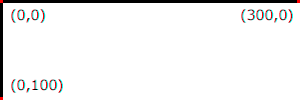
Example InitialCoords
8.5. The ‘transform’ property
User agents must support the transform property and presentation attribute as defined in [css-transforms-1].
8.6. The ‘viewBox’ attribute
-
Name Value Initial value Animatable viewBox[<min-x>,? <min-y>,? <width>,? <height>] As if not specified. yes -
<min-x>, <min-y>, <width>, <height> = <number>
Transform on the ‘svg’ element is a bit special due to the ‘viewBox’ attribute. The transform should be applied as if the ‘svg’ had a parent element with that transform set.
RESOLUTION: transform property applies conceptually to the outside of the 'svg' element and there is no difference between
presentation attribute and style property (in terms of the visual result).
The ‘viewBox’ attribute, in conjunction with the ‘preserveAspectRatio’ attribute, provides the capability to stretch an SVG viewport to fit a particular container element.
The value of the ‘viewBox’ attribute is a list of four numbers <min-x>, <min-y>, <width> and <height>, separated by whitespace and/or a comma, that specify a rectangle in user space that should be mapped to the bounds of the SVG viewport established by the given element, taking into account the ‘preserveAspectRatio’ attribute. The presence of the ‘viewBox’ attribute results in a transformation being applied to the viewport coordinate system as described in Computing the equivalent transform of an SVG viewport.
A negative value for <width> or <height> is an error: the ‘viewBox’ attribute is invalid and must be treated as if it had not been specified, so no viewBox transformation is applied. A value of zero for <width> or <height> disables rendering of the element, consistent with the treatment of other zero-sized viewports.
Example ViewBox illustrates the use of the ‘viewBox’ attribute on the outermost svg element to specify that the SVG content should stretch to fit bounds of the SVG viewport.
<?xml version="1.0" standalone="no"?>
<svg width="300px" height="200px"
viewBox="0 0 1500 1000" preserveAspectRatio="none"
xmlns="http://www.w3.org/2000/svg">
<desc>Example ViewBox - uses the viewBox
attribute to automatically create an initial user coordinate
system which causes the graphic to scale to fit into the
SVG viewport no matter what size the SVG viewport is.</desc>
<!-- This rectangle goes from (0,0) to (1500,1000) in user coordinate system.
Because of the viewBox attribute above,
the rectangle will end up filling the entire area
reserved for the SVG content. -->
<rect x="0" y="0" width="1500" height="1000"
fill="yellow" stroke="blue" stroke-width="12" />
<!-- A large, red triangle -->
<path fill="red" d="M 750,100 L 250,900 L 1250,900 z"/>
<!-- A text string that spans most of the SVG viewport -->
<text x="100" y="600" font-size="200" font-family="Verdana" >
Stretch to fit
</text>
</svg>
| Rendered into SVG viewport with width=300px, height=200px | Rendered into SVG viewport with width=150px, height=200px | |
|---|---|---|
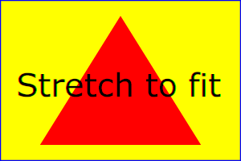 | 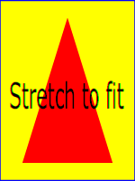 |
View
this example as SVG (SVG-enabled browsers only)
The effect of the ‘viewBox’ attribute is that the user agent automatically supplies the appropriate transformation matrix to map the specified rectangle in user coordinate system to the bounds of a designated region (often, the SVG viewport). To achieve the effect of the example on the left, with SVG viewport dimensions of 300 by 200 pixels, the user agent needs to automatically insert a transformation which scales both X and Y by 0.2. The effect is equivalent to having an SVG viewport of size 300px by 200px and the following supplemental transformation in the document, as follows:
<?xml version="1.0" standalone="no"?>
<svg width="300px" height="200px"
xmlns="http://www.w3.org/2000/svg">
<g transform="scale(0.2)">
<!-- Rest of document goes here -->
</g>
</svg>
To achieve the effect of the example on the right, with SVG viewport dimensions of 150 by 200 pixels, the user agent needs to automatically insert a transformation which scales X by 0.1 and Y by 0.2. The effect is equivalent to having an SVG viewport of size 150px by 200px and the following supplemental transformation in the document, as follows:
<?xml version="1.0" standalone="no"?>
<svg width="150px" height="200px"
xmlns="http://www.w3.org/2000/svg">
<g transform="scale(0.1 0.2)">
<!-- Rest of document goes here -->
</g>
</svg>
Note that in some cases the user agent will need to supply a translate transformation in addition to a scale transformation. For example, on an outermost svg element, a translate transformation will be needed if the ‘viewBox’ attributes specifies values other than zero for <min-x> or <min-y>.
If both transform (or ‘patternTransform’) and ‘viewBox’ are applied to an element two new coordinate systems are established. transform establishes the first new coordinate system for the element. ‘viewBox’ establishes a second coordinate system for all descendants of the element. The first coordinate system is post-multiplied by the second coordinate system.
Unlike the
transform property,
the automatic transformation that is created
due to a ‘viewBox’ does not affect
the ‘x’, ‘y’, ‘width’ and ‘height’ attributes (or in the case of
the ‘marker’ element, the
‘markerWidth’ and ‘markerHeight’ attributes) on the
element with the ‘viewBox’
attribute. Thus, in the example above which shows an
‘svg’ element which has
width and height presentation attributes
and a ‘viewBox’ attribute,
the width and height
represent values in the coordinate system that exists before the
‘viewBox’ transformation is applied. On
the other hand, like the transform property, it does
establish a new coordinate system for all other attributes and
for descendant elements.
8.7. The ‘preserveAspectRatio’ attribute
-
Name Value Initial value Animatable preserveAspectRatio<align> <meetOrSlice>? xMidYMid meet yes -
<align> = none | xMinYMin | xMidYMin | xMaxYMin | xMinYMid | xMidYMid | xMaxYMid | xMinYMax | xMidYMax | xMaxYMax<meetOrSlice> = meet | slice
Indicates whether or not to force uniform scaling. Applies to all elements that establish a new SVG viewport (see elements that establish SVG viewports), plus the ‘
image’, ‘marker’, ‘pattern’ and ‘view’ elements
In some cases, typically when using the ‘viewBox’ attribute, it is desirable that the graphics stretch to fit non-uniformly to take up the entire SVG viewport. In other cases, it is desirable that uniform scaling be used for the purposes of preserving the aspect ratio of the graphics.
For elements that establish a new SVG viewport (see elements that
establish SVG viewports), plus the
‘marker’,
‘pattern’ and
‘view’ elements,
‘preserveAspectRatio’ only applies when
a value has been provided for ‘viewBox’
on the same element. For these elements, if attribute
‘viewBox’ is not provided, then
‘preserveAspectRatio’ is ignored.
For ‘image’ elements,
‘preserveAspectRatio’ indicates how
referenced images should be fitted with respect to the
reference rectangle and whether the aspect ratio of the
referenced image should be preserved with respect to the
current user coordinate system.
The <align> parameter indicates whether to force uniform scaling and, if so, the alignment method to use in case the aspect ratio of the ‘viewBox’ doesn’t match the aspect ratio of the SVG viewport. The <align> parameter must be one of the following strings:
- none - Do not force
uniform scaling. Scale the graphic content of the given
element non-uniformly if necessary such that the element’s
bounding box exactly matches the SVG viewport rectangle.
(Note: if <align> is none, then the optional <meetOrSlice> value is ignored.) - xMinYMin - Force uniform
scaling.
Align the <min-x> of the element’s ‘viewBox’ with the smallest X value of the SVG viewport.
Align the <min-y> of the element’s ‘viewBox’ with the smallest Y value of the SVG viewport. - xMidYMin - Force uniform
scaling.
Align the midpoint X value of the element’s ‘viewBox’ with the midpoint X value of the SVG viewport.
Align the <min-y> of the element’s ‘viewBox’ with the smallest Y value of the SVG viewport. - xMaxYMin - Force uniform
scaling.
Align the <min-x>+<width> of the element’s ‘viewBox’ with the maximum X value of the SVG viewport.
Align the <min-y> of the element’s ‘viewBox’ with the smallest Y value of the SVG viewport. - xMinYMid - Force uniform
scaling.
Align the <min-x> of the element’s ‘viewBox’ with the smallest X value of the SVG viewport.
Align the midpoint Y value of the element’s ‘viewBox’ with the midpoint Y value of the SVG viewport. - xMidYMid (the initial value) -
Force uniform scaling.
Align the midpoint X value of the element’s ‘viewBox’ with the midpoint X value of the SVG viewport.
Align the midpoint Y value of the element’s ‘viewBox’ with the midpoint Y value of the SVG viewport. - xMaxYMid - Force uniform
scaling.
Align the <min-x>+<width> of the element’s ‘viewBox’ with the maximum X value of the SVG viewport.
Align the midpoint Y value of the element’s ‘viewBox’ with the midpoint Y value of the SVG viewport. - xMinYMax - Force uniform
scaling.
Align the <min-x> of the element’s ‘viewBox’ with the smallest X value of the SVG viewport.
Align the <min-y>+<height> of the element’s ‘viewBox’ with the maximum Y value of the SVG viewport. - xMidYMax - Force uniform
scaling.
Align the midpoint X value of the element’s ‘viewBox’ with the midpoint X value of the SVG viewport.
Align the <min-y>+<height> of the element’s ‘viewBox’ with the maximum Y value of the SVG viewport. - xMaxYMax - Force uniform
scaling.
Align the <min-x>+<width> of the element’s ‘viewBox’ with the maximum X value of the SVG viewport.
Align the <min-y>+<height> of the element’s ‘viewBox’ with the maximum Y value of the SVG viewport.
The <meetOrSlice> parameter is optional and, if provided, is separated from the <align> value by one or more spaces and then must be one of the following strings:
-
meet (the default) - Scale the graphic such that:
- aspect ratio is preserved
- the entire ‘viewBox’ is visible within the SVG viewport
- the ‘viewBox’ is scaled up as much as possible, while still meeting the other criteria
In this case, if the aspect ratio of the graphic does not match the SVG viewport, some of the SVG viewport will extend beyond the bounds of the ‘viewBox’ (i.e., the area into which the ‘viewBox’ will draw will be smaller than the SVG viewport).
-
slice - Scale the graphic such that:
- aspect ratio is preserved
- the entire SVG viewport is covered by the ‘viewBox’
- the ‘viewBox’ is scaled down as much as possible, while still meeting the other criteria
In this case, if the aspect ratio of the ‘viewBox’ does not match the SVG viewport, some of the ‘viewBox’ will extend beyond the bounds of the SVG viewport (i.e., the area into which the ‘viewBox’ will draw is larger than the SVG viewport).
Example PreserveAspectRatio
illustrates the various options on ‘preserveAspectRatio’.
The example creates several new SVG viewports by
including ‘svg’ sub-elements embedded
inside the outermost svg element (see Establishing a new
SVG viewport).
<svg width="450px" height="300px" xmlns="http://www.w3.org/2000/svg">
<desc>Example PreserveAspectRatio - illustrates preserveAspectRatio attribute</desc>
<style type="text/css">
text { font-size: 9; }
rect { fill: none; stroke: blue; }
</style>
<defs>
<g id="smile">
<rect x='.5' y='.5' width='29' height='39' style="fill:black;stroke:red"/>
<circle cx='15' cy='20' r='10' fill='yellow'/>
<circle cx='12' cy='17' r='1.5' fill='black'/>
<circle cx='17' cy='17' r='1.5' fill='black'/>
<path d='M 10 24 A 8 8 0 0 0 20 24' stroke='black' stroke-width='2'/>
</g>
</defs>
<rect x="1" y="1" width="448" height="298"/>
<text x="10" y="30">SVG to fit</text>
<g transform="translate(20,40)"><use href="#smile" /></g>
<text x="10" y="110">Viewport 1</text>
<g transform="translate(10,120)"><rect x='.5' y='.5' width='49' height='29'/></g>
<text x="10" y="180">Viewport 2</text>
<g transform="translate(20,190)"><rect x='.5' y='.5' width='29' height='59'/></g>
<g id="meet-group-1" transform="translate(100, 60)">
<text x="0" y="-30">--------------- meet ---------------</text>
<g>
<text y="-10">xMin*</text>
<rect x='.5' y='.5' width='49' height='29'/>
<svg preserveAspectRatio="xMinYMin meet" viewBox="0 0 30 40" width="50" height="30">
<use href="#smile" />
</svg>
</g>
<g transform="translate(70,0)">
<text y="-10">xMid*</text>
<rect x='.5' y='.5' width='49' height='29'/>
<svg preserveAspectRatio="xMidYMid meet" viewBox="0 0 30 40" width="50" height="30">
<use href="#smile" />
</svg>
</g>
<g transform="translate(0,70)">
<text y="-10">xMax*</text>
<rect x='.5' y='.5' width='49' height='29'/>
<svg preserveAspectRatio="xMaxYMax meet" viewBox="0 0 30 40" width="50" height="30">
<use href="#smile" />
</svg>
</g>
</g>
<g id="meet-group-2" transform="translate(250, 60)">
<text x="0" y="-30">---------- meet ----------</text>
<g>
<text y="-10">*YMin</text>
<rect x='.5' y='.5' width='29' height='59'/>
<svg preserveAspectRatio="xMinYMin meet" viewBox="0 0 30 40" width="30" height="60">
<use href="#smile" />
</svg>
</g>
<g transform="translate(50, 0)">
<text y="-10">*YMid</text>
<rect x='.5' y='.5' width='29' height='59'/>
<svg preserveAspectRatio="xMidYMid meet" viewBox="0 0 30 40" width="30" height="60">
<use href="#smile" />
</svg>
</g>
<g transform="translate(100, 0)">
<text y="-10">*YMax</text>
<rect x='.5' y='.5' width='29' height='59'/>
<svg preserveAspectRatio="xMaxYMax meet" viewBox="0 0 30 40" width="30" height="60">
<use href="#smile" />
</svg>
</g>
</g>
<g id="slice-group-1" transform="translate(100, 220)">
<text x="0" y="-30">---------- slice ----------</text>
<g>
<text y="-10">xMin*</text>
<rect x='.5' y='.5' width='29' height='59'/>
<svg preserveAspectRatio="xMinYMin slice" viewBox="0 0 30 40" width="30" height="60">
<use href="#smile" />
</svg>
</g>
<g transform="translate(50,0)">
<text y="-10">xMid*</text>
<rect x='.5' y='.5' width='29' height='59'/>
<svg preserveAspectRatio="xMidYMid slice" viewBox="0 0 30 40" width="30" height="60">
<use href="#smile" />
</svg>
</g>
<g transform="translate(100,0)">
<text y="-10">xMax*</text>
<rect x='.5' y='.5' width='29' height='59'/>
<svg preserveAspectRatio="xMaxYMax slice" viewBox="0 0 30 40" width="30" height="60">
<use href="#smile" />
</svg>
</g>
</g>
<g id="slice-group-2" transform="translate(250, 220)">
<text x="0" y="-30">--------------- slice ---------------</text>
<g>
<text y="-10">*YMin</text>
<rect x='.5' y='.5' width='49' height='29'/>
<svg preserveAspectRatio="xMinYMin slice" viewBox="0 0 30 40"
width="50" height="30">
<use href="#smile" />
</svg>
</g>
<g transform="translate(70,0)">
<text y="-10">*YMid</text>
<rect x='.5' y='.5' width='49' height='29'/>
<svg preserveAspectRatio="xMidYMid slice" viewBox="0 0 30 40" width="50" height="30">
<use href="#smile" />
</svg>
</g>
<g transform="translate(140,0)">
<text y="-10">*YMax</text>
<rect x='.5' y='.5' width='49' height='29'/>
<svg preserveAspectRatio="xMaxYMax slice" viewBox="0 0 30 40" width="50" height="30">
<use href="#smile" />
</svg>
</g>
</g>
</svg>
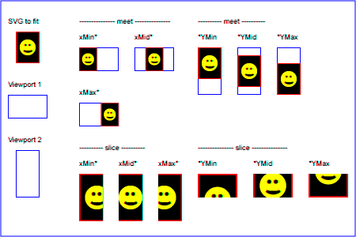
Example PreserveAspectRatio
8.8. Establishing a new SVG viewport
Including an ‘svg’ element inside SVG content
creates a new SVG viewport into which all contained
graphics are drawn; this implicitly establishes both
a new viewport coordinate system and a new user coordinate system.
Additionally, there is a new meaning for percentage units therein,
because a new SVG viewport has been established
(see Units).
The bounds of the new SVG viewport are defined by the ‘x’, ‘y’,
‘width’ and ‘height’ attributes on the element
establishing the new SVG viewport, such as an ‘svg’ element. Both the new
viewport coordinate system and the new user coordinate system
have their origins at (‘x’, ‘y’), where ‘x’ and ‘y’
represent the value of the corresponding attributes on the
element establishing the SVG viewport. The orientation of the new
viewport coordinate system and the new user coordinate system
correspond to the orientation of the current user coordinate
system for the element establishing the SVG viewport. A single unit
in the new viewport coordinate system and the new user
coordinate system are the same size as a single unit in the
current user coordinate system for the element establishing the SVG
viewport.
Here is an example:
<?xml version="1.0" standalone="no"?>
<svg width="4in" height="3in"
xmlns="http://www.w3.org/2000/svg">
<desc>This SVG drawing embeds another one,
thus establishing a new SVG viewport
</desc>
<!-- The following statement establishing a new SVG viewport
and renders SVG drawing B into that SVG viewport -->
<svg x="25%" y="25%" width="50%" height="50%">
<!-- drawing B goes here -->
</svg>
</svg>
For an extensive example of creating new SVG viewports, see Example PreserveAspectRatio.
The following elements establish new SVG viewports:
For historical reasons,
the ‘pattern’ and ‘marker’ elements
do not create a new viewport,
despite accepting a ‘viewBox’ attribute.
Neither do the ‘clipPath’ or ‘mask’ elements.
Percentage lengths within the content of these elements
are not proportional to the dimensions of the graphical effect region.
The ‘foreignObject’ element establishes a new
CSS containing block
for its child content.
This has some effects similar to a new viewport,
resetting the scope of layout for child content.
However, in order to render SVG elements that are descendents of ‘foreignObject’,
a new ‘svg’ element must establish an SVG document fragment and SVG viewport.
An ‘image’ creates a new
document viewport
for the referenced document.
If the referenced document is a SVG file, it will of course establish its own SVG viewport.
Whether a new SVG viewport also establishes a new additional clipping path is determined by the value of the overflow property on the element that establishes the new SVG viewport.
8.9. Units
SVG follows the description and definition of common values and units from the CSS Values and Units Module [css-values] for attributes, presentation attributes and CSS properties. Each attribute and property must specify the used component value type. Subsequent or extending specifications published by the CSS WG or SVG WG may extend basic data types or add new data types.
For <percentage> values that are defined to be relative to the size of SVG viewport:
- For any x-coordinate value or width value expressed as a percentage of the SVG viewport, the value to use must be the percentage, in user units, of the width parameter of the ‘viewBox’ applied to that viewport. If no ‘viewBox’ is specified, then the value to use must be the percentage, in user units, of the width of the SVG viewport.
- For any y-coordinate value or height value expressed as a percentage of the SVG viewport, the value to use must be the percentage, in user units, of the height parameter of the ‘viewBox’ applied to that viewport. If no ‘viewBox’ is specified, then the value to use must be the percentage, in user units, of the height of the SVG viewport.
- For any other length value expressed as a
percentage of the SVG viewport, the percentage must be calculated as a
percentage of the normalized diagonal of the ‘viewBox’ applied to that viewport.
If no ‘viewBox’ is specified, then the normalized diagonal of the SVG viewport
must be used. The normalized diagonal length must be calculated with
sqrt((width)**2 + (height)**2)/sqrt(2).
Example Units below illustrates some of the processing rules for different types of units.
<?xml version="1.0" standalone="no"?>
<svg width="400px" height="200px" viewBox="0 0 4000 2000"
xmlns="http://www.w3.org/2000/svg">
<title>Example Units</title>
<desc>Illustrates various units options</desc>
<!-- Frame the picture -->
<rect x="5" y="5" width="3990" height="1990"
fill="none" stroke="blue" stroke-width="10"/>
<g fill="blue" stroke="red" font-family="Verdana" font-size="150">
<!-- Absolute unit specifiers -->
<g transform="translate(400,0)">
<text x="-50" y="300" fill="black" stroke="none">Abs. units:</text>
<rect x="0" y="400" width="4in" height="2in" stroke-width=".4in"/>
<rect x="0" y="750" width="384" height="192" stroke-width="38.4"/>
<g transform="scale(2)">
<rect x="0" y="600" width="4in" height="2in" stroke-width=".4in"/>
</g>
</g>
<!-- Relative unit specifiers -->
<g transform="translate(1600,0)">
<text x="-50" y="300" fill="black" stroke="none">Rel. units:</text>
<rect x="0" y="400" width="2.5em" height="1.25em" stroke-width=".25em"/>
<rect x="0" y="750" width="375" height="187.5" stroke-width="37.5"/>
<g transform="scale(2)">
<rect x="0" y="600" width="2.5em" height="1.25em" stroke-width=".25em"/>
</g>
</g>
<!-- Percentages -->
<g transform="translate(2800,0)">
<text x="-50" y="300" fill="black" stroke="none">Percentages:</text>
<rect x="0" y="400" width="10%" height="10%" stroke-width="1%"/>
<rect x="0" y="750" width="400" height="200" stroke-width="31.62"/>
<g transform="scale(2)">
<rect x="0" y="600" width="10%" height="10%" stroke-width="1%"/>
</g>
</g>
</g>
</svg>
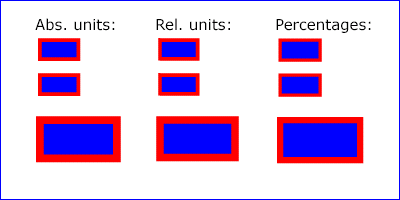
Example Units
The three rectangles on the left demonstrate the use of one of the absolute unit identifiers, the "in" unit (inch). CSS defines 1 inch to be equal to 96 pixels. Therefore, the topmost rectangle, which is specified in inches, is exactly the same size as the middle rectangle, which is specified in user units such that there are 96 user units for each corresponding inch in the topmost rectangle. The bottom rectangle of the group illustrates what happens when values specified in inches are scaled.
The three rectangles in the middle demonstrate the use of
one of the relative unit identifiers, the "em" unit. Because
the font-size property has been set
to 150 on the outermost ‘g’ element, each "em" unit is
equal to 150 user units. The topmost rectangle, which is
specified in "em" units, is exactly the same size as the middle
rectangle, which is specified in user units such that there are
150 user units for each corresponding "em" unit in the topmost
rectangle. The bottom rectangle of the group illustrates what
happens when values specified in "em" units are scaled.
The three rectangles on the right demonstrate the use of
percentages. Note that the width and height of the SVG viewport in
the user coordinate system for the SVG viewport element (in this
case, the outermost svg element) are 4000 and
2000, respectively, because processing the ‘viewBox’ attribute results in a
transformed user coordinate system. The topmost rectangle,
which is specified in percentage units, is exactly the same
size as the middle rectangle, which is specified in equivalent
user units. In particular, note that the stroke-width property in the
middle rectangle is set to 1% of the
sqrt((actual-width)**2 +
(actual-height)**2) / sqrt(2), which in this
case is .01*sqrt(4000*4000+2000*2000)/sqrt(2), or 31.62. The
bottom rectangle of the group illustrates what happens when
values specified in percentage units are scaled.
8.10. Bounding boxes
- bounding box
-
The bounding box (or "bbox") of an element is the tightest fitting rectangle aligned with the axes of that element’s user coordinate system that entirely encloses it and its descendants.
Three kinds of bounding boxes can be computed for an element:
- The object bounding box is the bounding box that contains only an element’s geometric shape. For basic shapes, this is the area that is filled. Unless otherwise specified, this is what is meant by the unqualified term "bounding box".
- The stroke bounding box is the bounding box that contains an element’s geometric shape and its stroke shape.
- The decorated bounding box is the bounding box that contains an element’s geometric shape, its stroke shape and its markers.
Note that the values of the opacity, visibility, fill, fill-opacity, fill-rule, stroke-dasharray and stroke-dashoffset properties on an element have no effect on the bounding box of an element.
For curved shapes, the bounding box must enclose all portions of the shape along the edge, not just end points. Note that control points for a curve which are not defined as lying along the line of the resulting curve (e.g., the second coordinate pair of a Cubic Bézier command) must not contribute to the dimensions of the bounding box (though those points may fall within the area of the bounding box, if they lie within the shape itself, or along or close to the curve). For example, control points of a curve that are at a further distance than the curve edge, from the non-enclosing side of the curve edge, must be excluded from the bounding box.
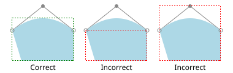
The path 'M20,50 L35,100 H120 V50 Q70,10 20,50' is shown in light blue. On the left, a correct object bounding box of the path is shown. Note that it does not include the top-most control point of the curve, but it does include all of the blue shape, even the parts that lie outside of the convex hull of the control points.
Even if an element is not in the rendering tree – due to it being
'display: none', within a ‘defs’
element, not usually rendered like a ‘symbol’ element or not
currently present in the document tree – it still has a bounding box.
A call to getBBox
on the element will return the same rectangle as if the element were
rendered. However, an element that is not in the rendering tree
does not contribute to the bounding box of any ancestor element.
The following example defines a number of elements. The expected object bounding box for each element with an ID is shown below.
<svg xmlns="http://www.w3.org/2000/svg">
<title>Bounding Box Calculation</title>
<desc>Examples of elements with different bounding box results based on context.</desc>
<defs id="defs-1">
<rect id="rect-1" x="20" y="20" width="40" height="40" fill="blue" />
</defs>
<g id="group-1">
<use id="use-1" href="#rect-1" x="10" y="10" />
<g id="group-2" display="none">
<rect id="rect-2" x="10" y="10" width="100" height="100" fill="red" />
</g>
</g>
</svg>
| Element ID | Bounding Box Result |
|---|---|
"defs-1"
| {0, 0, 0, 0} |
"rect-1"
| {20, 20, 40, 40} |
"group-1"
| {30, 30, 40, 40} |
"use-1"
| {30, 30, 40, 40} |
"group-2"
| {10, 10, 100, 100} |
"rect-2"
| {10, 10, 100, 100} |
For text content elements, for the purposes of the bounding box calculation, each glyph must be treated as a separate graphics element. The calculations must assume that all glyphs occupy the full glyph cell. The full glyph cell must have width equal to the horizontal advance and height equal to the EM box for horizontal text. For vertical text that is typeset sideways, the full glyph cell must have width equal to the EM box and height equal to the horizontal advance. For other vertical text, the full glyph cell must have width equal to the EM box and height equal to the vertical advance, or height equal to the height of the EM box if no vertical advance is defined in the font. For example, for horizontal text, the calculations must assume that each glyph extends vertically to the full ascent and descent values for the font.
Because declarative or scripted animation can change the shape, size, and position of an element, the bounding box is mutable. Thus, the bounding box for an element shall reflect the current values for the element at the snapshot in time at which the bounding box is requested, whether through a script call or as part of a declarative or linking syntax.
An element which has zero width, zero height, or both (such as a
vertical or horizontal line, or a ‘rect’ element with a zero
width or height) still has a bounding box, with a
positive value for the positive dimension, or with '0'
for both the width and height if no positive dimension is specified. Similarly,
subpaths segments of a ‘path’ element with zero width and height must be
included in that element’s geometry for the sake of the bounding box.
An element with no position specified (such as a
‘path’ element with a value of none for the d property) is positioned at the
point (0,0) for the purposes of calculating a bounding box.
Note that elements whose DOM object does not derive from SVGGraphicsElement
(such as gradient elements) do not have a bounding box, and thus have no
interface to request a bounding box.
Elements in the rendering tree which reference unresolved resources shall
still have a bounding box, defined by the position and dimensions specified in
their attributes, or by the initial value for those attributes if no
values are supplied. For example, the element <use href="#bad" x="10" y="10"/>
would have a bounding box with an x and y of 10 and a width and height of 0.
The following algorithm defines how to compute a bounding box for a given element. The inputs to the algorithm are:
- element, the element we are computing a bounding box for;
- space, a coordinate space in which the bounding box will be computed;
- fill, a boolean indicating whether the bounding box includes the geometry of the element and its descendants;
- stroke, a boolean indicating whether the bounding box includes the stroke of the element and its descendants;
- markers, a boolean indicating whether the bounding box includes the markers of the element and its descendants; and
- clipped, a boolean indicating whether the bounding box is affected by any clipping paths applied to the element and its descendants.
The algorithm to compute the bounding box is as follows, depending on the type of element:
- a shape
- a text content element
- an ‘
a’ element within a text content element - a text content element
-
- Let box be a rectangle initialized to (0, 0, 0, 0).
- Let fill-shape be the equivalent path of element if it is a shape, or a shape that includes each of the glyph cells corresponding to the text within the elements otherwise.
-
If fill is true, then set box to the tightest rectangle
in the coordinate system space that contains fill-shape.
The values of the fill, fill-opacity and fill-rule properties do not affect fill-shape.
-
If stroke is true and the element’s stroke is anything other than
none, then set box to be the union of box and the
tightest rectangle in coordinate system space that contains the stroke shape of the
element, with the assumption that the element has no dash pattern.
The values of the stroke-opacity, stroke-dasharray and stroke-dashoffset do not affect the calculation of the stroke shape.
-
If markers is true, then for each marker marker rendered on the element:
-
For each descendant graphics element child of the ‘
marker’ element that defines marker’s content:- If child has an ancestor element within the ‘
marker’ that is 'display: none', has a failing conditional processing attribute, or is not an ‘a’, ‘g’, ‘svg’ or ‘switch’ element, then continue to the next descendant graphics element. - Otherwise, set box to be the union of box and the result of invoking the algorithm to compute a bounding box with child as the element, space as the target coordinate space, true for fill, stroke and markers, and clipped for clipped.
- If child has an ancestor element within the ‘
-
For each descendant graphics element child of the ‘
- If clipped is true and the value of clip-path on element is not none, then set box to be the tightest rectangle in coordinate system space that contains the intersection of box and the clipping path.
- Return box.
- a container element
- ‘
use’ - ‘
-
- Let box be a rectangle initialized to (0, 0, 0, 0).
- Let parent be the container element if it is one, or the
root of the ‘
use’ element’s shadow tree otherwise. -
For each descendant graphics element child of parent:
- If child is not rendered then continue to the next descendant graphics element.
- Otherwise, set box to be the union of box and the result of invoking the algorithm to compute a bounding box with child as the element and the same values for space, fill, stroke, markers and clipped as the corresponding algorithm input values.
-
If clipped is true:
- If the value of clip-path on element is not none, then set box to be the tightest rectangle in coordinate system space that contains the intersection of box and the clipping path.
- If the overflow property applies to the element and does not have a value of visible, then set box to be the tightest rectangle in coordinate system space that contains the intersection of box and the element’s overflow bounds.
- If the clip property applies to the element and does not have a value of auto, then set box to be the tightest rectangle in coordinate system space that contains the intersection of box and the rectangle specified by clip.
- Return box.
- ‘
foreignObject’- ‘
image’ - ‘
-
-
Let box be the tightest rectangle in coordinate space space that
contains the positioning rectangle defined by the
‘x’,
‘y’,
‘width’ and
‘height’ geometric properties of the element.
The fill, stroke and markers input arguments to this algorithm do not affect the bounding box returned for these elements.
- If clipped is true and the value of clip-path on element is not none, then set box to be the tightest rectangle in coordinate system space that contains the intersection of box and the clipping path.
- Return box.
-
Let box be the tightest rectangle in coordinate space space that
contains the positioning rectangle defined by the
‘x’,
‘y’,
‘width’ and
‘height’ geometric properties of the element.
The union box with a value of (0, 0, 0, 0) and an empty shape is box.
The object bounding box, stroke bounding box or decorated bounding box of an element is the result of invoking the bounding box computation algorithm above with the following arguments: element is the element itself; space is the element’s user coordinate system; fill is true; stroke is true if we are computing the stroke bounding box or decorated bounding box, and false otherwise; markers is true if we are computing the decorated bounding box, and false otherwise; and clipped is false.
8.11. Object bounding box units
The following elements offer the option of expressing coordinate values and lengths as fractions (and, in some cases, percentages) of the object bounding box, by setting a specified attribute to 'objectBoundingBox' on the given element:
| Element | Attribute | Effect | ||||||||||||
|---|---|---|---|---|---|---|---|---|---|---|---|---|---|---|
‘linearGradient’ |
‘gradientUnits’ | Indicates that the attributes which specify the gradient vector (‘x1’, ‘y1’, ‘x2’, ‘y2’) represent fractions or percentages of the bounding box of the element to which the gradient is applied. | ||||||||||||
‘radialGradient’ |
‘gradientUnits’ | Indicates that the attributes which specify the center (‘cx’, ‘cy’), the radius (‘r’) and focus (‘fx’, ‘fy’) represent fractions or percentages of the bounding box of the element to which the gradient is applied. | ||||||||||||
‘pattern’ |
‘patternUnits’ | Indicates that the attributes which define how to tile the pattern (‘x’, ‘y’, ‘width’, ‘height’) are established using the bounding box of the element to which the pattern is applied. | ||||||||||||
‘pattern’ |
‘patternContentUnits’ | Indicates that the user coordinate system for the contents of the pattern is established using the bounding box of the element to which the pattern is applied. | ||||||||||||
| ‘clipPath’ | ‘clipPathUnits’ | Indicates that the user coordinate system for the contents of the
‘clipPath’ element is established using the bounding box of the
element to which the clipping path is applied.
| ‘mask’ |
‘maskUnits’ |
Indicates that the attributes which define the masking region
(‘x’, ‘y’, ‘width’, ‘height’) is
established using the bounding box of the element to which the mask
is applied. |
‘mask’ |
‘maskContentUnits’ |
Indicates that the user coordinate system for the contents of
the ‘mask’ element are established using the bounding box of
the element to which the mask is applied. |
‘filter’ |
‘filterUnits’ |
Indicates that the attributes which define the
filter effects region
(‘x’, ‘y’, ‘width’, ‘height’) represent
fractions or percentages of the bounding box of the element to which
the filter is applied. |
‘filter’ |
‘primitiveUnits’ |
Indicates that the various length values within the filter
primitives represent fractions or percentages of the bounding box of
the element to which the filter is applied. |
|
In the discussion that follows, the term applicable element is the element to which the given effect applies. For gradients and patterns, the applicable element is the graphics element which has its fill or stroke property referencing the given gradient or pattern. (For special rules concerning text elements, see the discussion of object bounding box units and text elements.) For clipping paths, masks and filters, the applicable element can be either a container element or a graphics element.
When keyword objectBoundingBox is used, then the effect is as if a supplemental transformation matrix were inserted into the list of nested transformation matrices to create a new user coordinate system.
First, the (minx,miny) and (maxx,maxy) coordinates are determined by the extends of the object bounding box of the applicable element.
Then, coordinate (0,0) in the new user coordinate system is mapped to the (minx,miny) corner of the tight bounding box within the user coordinate system of the applicable element and coordinate (1,1) in the new user coordinate system is mapped to the (maxx,maxy) corner of the tight bounding box of the applicable element. In most situations, the following transformation matrix produces the correct effect:
[ (maxx-minx) 0 0 (maxy-miny) minx miny ]
When percentages are used with attributes that define the
gradient vector, the pattern tile, the filter region or the
masking region, a percentage represents the same value as the
corresponding decimal value (e.g., 50% means the same as 0.5).
If percentages are used within the content of a ‘pattern’,
‘clipPath’, ‘mask’ or ‘filter’ element, these values
are treated according to the processing rules for percentages
as defined in Units.
Any numeric value can be specified for values expressed as a fraction or percentage of object bounding box units. In particular, fractions less than zero or greater than one and percentages less than 0% or greater than 100% can be specified.
Keyword objectBoundingBox should not be used when the geometry of the applicable element has no width or no height, such as the case of a horizontal or vertical line, even when the line has actual thickness when viewed due to having a non-zero stroke width since stroke width is ignored for bounding box calculations. When the geometry of the applicable element has no width or height and objectBoundingBox is specified, then the given effect (e.g., a gradient or a filter) will be ignored.
8.12. Intrinsic sizing properties of SVG content
To enable inclusion of SVG in host documents formatted with CSS, a concrete object size must be calculated. The concrete object size must be calculated using the Default Sizing Algorithm defined in CSS Images 3 [css-images-3], with the following inputs:
The specified size must be determined from the used values for the
width and height sizing properties of the ‘svg’
element.
The intrinsic dimensions must also be determined from the width and height sizing properties. If either width or height are not specified, the used value is the initial value 'auto'. 'auto' and percentage lengths must not be used to determine an intrinsic width or intrinsic height.
With bitmap image formats, the intrinsic dimensions are fixed in
the image file, and the specified size is defined in the host document as needed
to scale the image.
SVG, being inherently scalable, adapts the intrinsic width and
intrinsic height to be the width and height of the specified size.
Therefore, when specified as a length, the width and
height sizing properties of the ‘svg’ element control the
intrinsic dimensions of the SVG image and the specified size that
is used when placing the SVG image in a host document.
The intrinsic aspect ratio must be calculated using the following algorithm. If the algorithm returns null, then there is no intrinsic aspect ratio.
-
If the width and height sizing properties on the
‘
svg’ element are both absolute values:- return width / height
-
If an SVG View is active:
- let viewbox be the viewbox defined by the active SVG View
- return viewbox.width / viewbox.height
-
If the ‘viewBox’ on the ‘
svg’ element is correctly specified: - return null
The behaviour defined in this section is specific to CSS, but may be adapted to other host contexts. In all host contexts, the intrinsic aspect ratio, where available, must be respected when sizing the SVG viewport.
Examples:
<svg xmlns="http://www.w3.org/2000/svg"
width="10cm" height="5cm">
...
</svg>
In this example the intrinsic aspect ratio of the SVG viewport is 2:1. The intrinsic width is 10cm and the intrinsic height is 5cm.
<svg xmlns="http://www.w3.org/2000/svg"
width="100%" height="50%" viewBox="0 0 200 200">
...
</svg>
In this example the intrinsic aspect ratio of the outermost SVG viewport is 1:1. An aspect ratio calculation in this case allows embedding in an object within a containing block that is only constrained in one direction.
<svg xmlns="http://www.w3.org/2000/svg"
width="10cm" viewBox="0 0 200 200">
...
</svg>
In this case the intrinsic aspect ratio is 1:1.
<svg xmlns="http://www.w3.org/2000/svg"
width="75%" height="10cm" viewBox="0 0 200 200">
...
</svg>
In this example, the intrinsic aspect ratio is 1:1.
Add more examples for the new auto value? E.g. some of the examples provided by David Vest.
8.13. Vector effects
| SVG 2 Requirement: | SVG 2 will have constrained transformations based on SVG 1.2 Tiny. |
|---|---|
| Resolution: | Add vector effects extension proposal to SVG 2 specification. |
| Purpose: | To include non-scaling features (non-scaling part of the object, and non-scaling entire object |
| Owner: | Satoru Takagi (ACTION-3619) |
Sometimes it is of interest to let the outline of an object keep its original width or to let the position of an object fix no matter which transforms are applied to it. For example, in a map with a 2px wide line representing roads it is of interest to keep the roads 2px wide even when the user zooms into the map, or introductory notes on the graphic chart in which panning is possible.
To offer such effects regarding special coordinate transformations and graphic drawings, SVG Tiny 1.2 introduced the vector-effect property. Although SVG Tiny 1.2 introduced only non-scaling stroke behavior, this version introduces a number of additional effects. Furthermore, since these effects can be specified in combination, they show more various effects. And, future versions of the SVG language will allow for more powerful vector effects through this property.
Values of vector-effect other than non-scaling-stroke and none are at risk of being dropped from SVG 2 due to a lack of implementations. Feedback from implementers is requested, regarding the practicality of implementing them as currently specified, during the implementation period.
| Name: | vector-effect |
|---|---|
| Value: | none | non-scaling-stroke | non-scaling-size | non-rotation | fixed-position |
| Initial: | none |
| Applies to: | graphics elements and ‘use’
|
| Inherited: | no |
| Percentages: | N/A |
| Media: | visual |
| Computed value: | as specified |
| Animation type: | discrete |
- none
- Specifies that no vector effect shall be applied, i.e. the default rendering behaviour from SVG 1.1 is used which is to first fill the geometry of a shape with a specified paint, then stroke the outline with a specified paint.
- non-scaling-stroke
- Please refer to this description of vector effect on painting.
- non-scaling-size
- Specifies special user coordinate system toward this element and its descendant by constrained transformations with the following characteristics. The scale of the user coordinate system do not change in spite of change of CTMs from a host coordinate space. However, it does not specify the suppression of rotation and skew. Also, it does not specify the fixation of placement of user coordinate system. Since non-scaling-size suppresses scaling of user coordinate system, it also has the characteristic of non-scaling-stroke. The transformation formula and the example behavior are indicated to the following chapter.
- non-rotation
- Specifies special user coordinate system toward this element and its descendant by constrained transformations with the following characteristics. The rotation and skew of the user coordinate system is suppressed in spite of change of CTMs from a host coordinate space. However, it does not specify the suppression of scaling. Also, it does not specify the fixation of placement of user coordinate system. The transformation formula and the example behavior are indicated to the following chapter.
- fixed-position
- Specifies special user coordinate system toward this element and its descendant by constrained transformations with the following characteristics. The placement of user coordinate system is fixed in spite of change of CTMs from a host coordinate space. However, it does not specify the suppression of rotation, skew and scaling. When the element that has fixed-position effect and also has transform property, that property is consumed for this effect. The shift components e and f of matrix of transform property are used to transfer the origin of fixed user coordinate system. The transformation formula and the example behavior are indicated to the following chapter.
These values can be enumerated. Thereby, the effect which has these characteristics simultaneously can be specified.
The host coordinate space for vector-effect is the viewport coordinate system of the furthest ancestral SVG viewport.
Note: Future versions of SVG may allow ways to specify the device coordinate system.
8.13.1. Computing the vector effects
This section shows the list of transformation formulas regarding combinations of the values for clarification of the behavior of vector effects excluding non-scaling-stroke which has clear implications.
The vector-effect property has no effect on transformations performed in a 3d rendering context.
The normal coordinate transformation formula from user coordinate system to viewport coordinate system is as follows.
<circle vector-effect="veValue" transform="translate(xo yo)" cx="xf" cy="yf" r=".."/>
When the vector-effect is added to an element like the above, the transformation formula for user coordinate to the device coordinate changes as follows. Here, xf and yf are user coordinate of the corresponding element and its descendant. And, xo and yo are matrix element e and f of the transform attribute which the corresponding element has. In addition, |det(CTM)| is absolute value of the determinants of CTM. When this value becomes 0 and non-scaling-size is appointed, vector-effect becomes invalidity namely none.
| veValue | Formula |
|---|---|
| non-scaling-size |
|
| non-rotation |
|
| non-scaling-size non-rotation |
|
| fixed-position |
|
| fixed-position non-scaling-size |
|
| fixed-position non-rotation |
|
| fixed-position non-scaling-size non-rotation |
|
8.13.2. Computing the vector effects for nested viewport coordinate systems
Below is normal coordinate transformation formula for nested viewport coordinate systems without vector effects. xviewport(UA) and yviewport(UA) are coordinates which under the immediate control of user agent. CTMthis is CTM for the transformation matrix from user coordinate system of an target graphic to viewport coordinate system to which it belongs. CTMparent is CTM for the transformation matrix from aforementioned viewport coordinate system to viewport coordinate system of the parent of that. And, CTMroot is CTM for rootmost viewport coordinate system (UA).
When applying seven formulas of the preceding section to nested viewport coordinate systems, the application way of those formulas changes as follows by whether viewport or screen is specified as the additional value of vector-effect.
When viewport value is specified, user agent computes coordinates combining either of seven formulas of the preceding chapter, and the following formulas.
When screen value is specified, user agent computes coordinates combining either of seven formulas of the preceding chapter, and the following formulas.
8.13.3. Examples of vector effects
Below is an example of the non-scaling-stroke vector-effect.
<?xml version="1.0"?>
<svg xmlns="http://www.w3.org/2000/svg"
width="6cm" height="4cm" viewBox="0 0 600 400"
viewport-fill="rgb(255,150,200)">
<desc>Example non-scaling stroke</desc>
<rect x="1" y="1" width="598" height="398" fill="none" stroke="black"/>
<g transform="scale(9,1)">
<line stroke="black" stroke-width="5" x1="10" y1="50" x2="10" y2="350"/>
<line vector-effect="non-scaling-stroke" stroke="black" stroke-width="5"
x1="32" y1="50" x2="32" y2="350"/>
<line vector-effect="none" stroke="black" stroke-width="5"
x1="55" y1="50" x2="55" y2="350"/>
</g>
</svg>
Below is an example of the none vector-effect (no vector effect).
| Before changing CTM | After changing CTM |
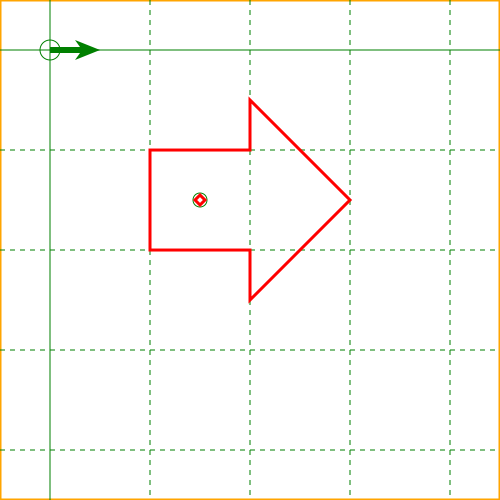 | 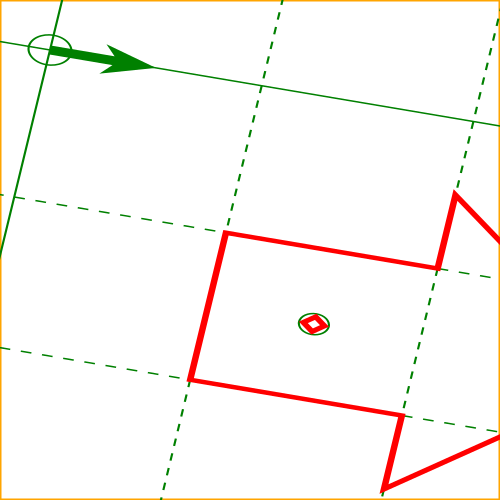 |
Source code
<svg xmlns="http://www.w3.org/2000/svg" viewBox="-50,-50,500,500" height="500" width="500">
<rect x="-50" y="-50" width="500" height="500" stroke="orange" stroke-width="3" fill="none"/>
<!-- Nested user coordinate system is transformed by this transform attribute -->
<g transform="matrix(2.1169438081370817,0.3576047954311102,-0.3576047954311102,1.4700998667618626,0,0)
translate(-50,-50)">
<svg viewBox="-50,-50,500,500" height="500" width="500">
<!-- Graph paper on the this svg's base user coordinate system -->
<g stroke="green" stroke-width="1" fill="none">
<circle cx="0" cy="0" r="10"/>
<circle cx="150" cy="150" r="7"/>
<path fill="green" stroke="none" d="M0,-3 L30,-3 25,-10 50,0 25,10 30,3 0,3z"/>
<line x1="-100" y1="-100" x2="600" y2="-100" stroke-dasharray="5,5"/>
<line x1="-100" y1="000" x2="600" y2="000"/>
<line x1="-100" y1="100" x2="600" y2="100" stroke-dasharray="5,5"/>
<line x1="-100" y1="200" x2="600" y2="200" stroke-dasharray="5,5"/>
<line x1="-100" y1="300" x2="600" y2="300" stroke-dasharray="5,5"/>
<line x1="-100" y1="400" x2="600" y2="400" stroke-dasharray="5,5"/>
<line x1="-100" y1="500" x2="600" y2="500" stroke-dasharray="5,5"/>
<line y1="-100" x1="-100" y2="600" x2="-100" stroke-dasharray="5,5"/>
<line y1="-100" x1="000" y2="600" x2="000"/>
<line y1="-100" x1="100" y2="600" x2="100" stroke-dasharray="5,5"/>
<line y1="-100" x1="200" y2="600" x2="200" stroke-dasharray="5,5"/>
<line y1="-100" x1="300" y2="600" x2="300" stroke-dasharray="5,5"/>
<line y1="-100" x1="400" y2="600" x2="400" stroke-dasharray="5,5"/>
<line y1="-100" x1="500" y2="600" x2="500" stroke-dasharray="5,5"/>
</g>
<!-- Figure having vector effect -->
<!-- A thick red right arrow and small rectangle on this figure's nested
user coordinate system origin -->
<path id="ve" vector-effect="none"
stroke="red" stroke-width="3" fill="none"
transform="matrix(1,0,0,1,150,150)"
d="M-50,-50 L50,-50 50,-100 150,0 50,100 50,50 -50,50 -50,-50z M5 0 L0 -5 -5 0 0 5z"/>
</svg>
</g>
</svg>
Below is an example of the non-scaling-size.
| Before changing CTM | After changing CTM |
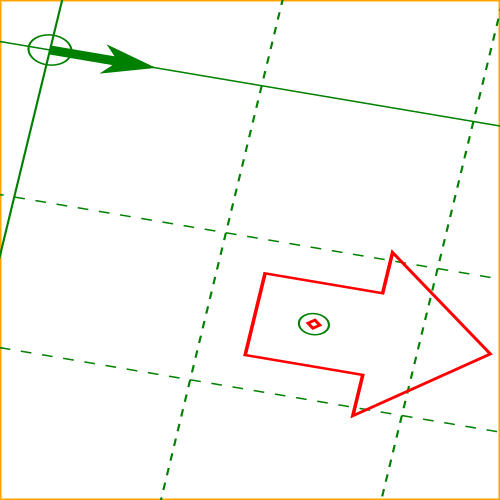 |
<path id="ve" vector-effect="non-scaling-size"
stroke="red" stroke-width="3" fill="none"
transform="matrix(1,0,0,1,150,150)"
d="M-50,-50 L50,-50 50,-100 150,0 50,100 50,50 -50,50 -50,-50z M5 0 L0 -5 -5 0 0 5z"/>
Below is an example of the non-rotation.
| Before changing CTM | After changing CTM |
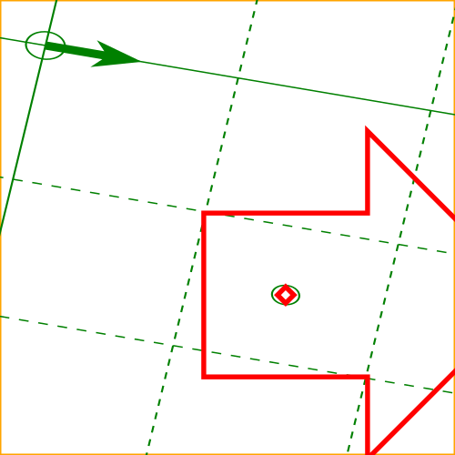 |
<path id="ve" vector-effect="non-rotation"
stroke="red" stroke-width="3" fill="none"
transform="matrix(1,0,0,1,150,150)"
d="M-50,-50 L50,-50 50,-100 150,0 50,100 50,50 -50,50 -50,-50z M5 0 L0 -5 -5 0 0 5z"/>
Below is an example of the non-scaling-size non-rotation.
| Before changing CTM | After changing CTM |
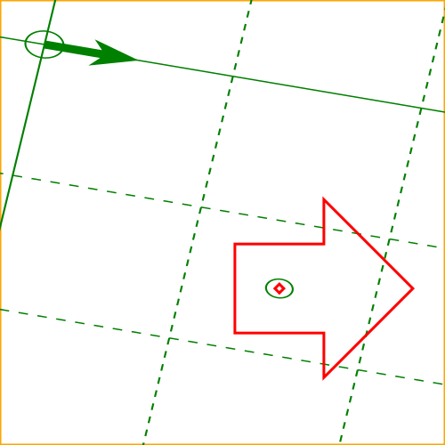 |
<path id="ve" vector-effect="non-scaling-size non-rotation"
stroke="red" stroke-width="3" fill="none"
transform="matrix(1,0,0,1,150,150)"
d="M-50,-50 L50,-50 50,-100 150,0 50,100 50,50 -50,50 -50,-50z M5 0 L0 -5 -5 0 0 5z"/>
Below is an example of the fixed-position.
| Before changing CTM | After changing CTM |
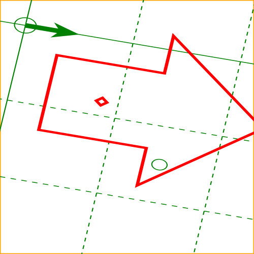 |
<path id="ve" vector-effect="fixed-position"
stroke="red" stroke-width="3" fill="none"
transform="matrix(1,0,0,1,150,150)"
d="M-50,-50 L50,-50 50,-100 150,0 50,100 50,50 -50,50 -50,-50z M5 0 L0 -5 -5 0 0 5z"/>
Below is an example of the non-scaling-size fixed-position.
| Before changing CTM | After changing CTM |
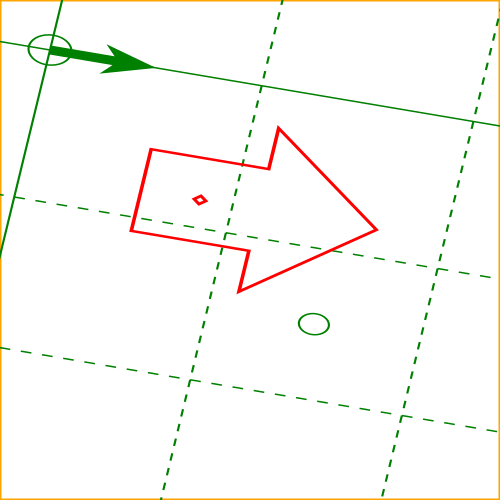 |
<path id="ve" vector-effect="non-scaling-size fixed-position"
stroke="red" stroke-width="3" fill="none"
transform="matrix(1,0,0,1,150,150)"
d="M-50,-50 L50,-50 50,-100 150,0 50,100 50,50 -50,50 -50,-50z M5 0 L0 -5 -5 0 0 5z"/>
Below is an example of the non-rotation fixed-position.
| Before changing CTM | After changing CTM |
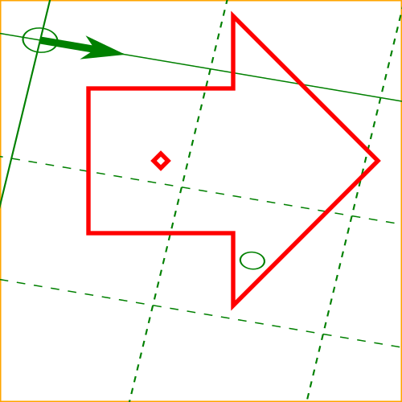 |
<path id="ve" vector-effect="non-rotation fixed-position"
stroke="red" stroke-width="3" fill="none"
transform="matrix(1,0,0,1,150,150)"
d="M-50,-50 L50,-50 50,-100 150,0 50,100 50,50 -50,50 -50,-50z M5 0 L0 -5 -5 0 0 5z"/>
Below is an example of the non-scaling-size non-rotation fixed-position.
| Before changing CTM | After changing CTM |
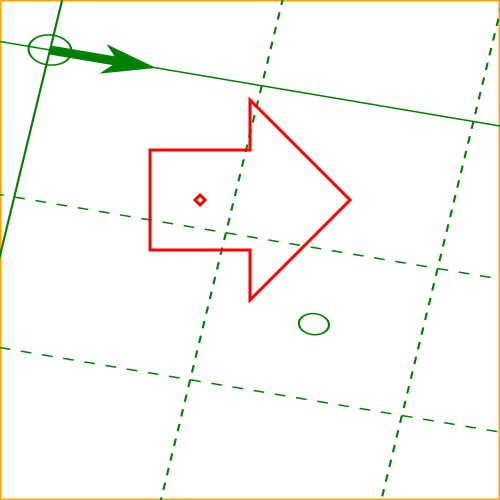 |
<path id="ve" vector-effect="non-scaling-size non-rotation fixed-position"
stroke="red" stroke-width="3" fill="none"
transform="matrix(1,0,0,1,150,150)"
d="M-50,-50 L50,-50 50,-100 150,0 50,100 50,50 -50,50 -50,-50z M5 0 L0 -5 -5 0 0 5z"/>
8.14. DOM interfaces
8.14.1. Interface SVGTransform
The SVGTransform interface is used to represent
<transform-function>
values that appear in the transform property
and its presentation attributes ‘transform’,
‘gradientTransform’ and
‘patternTransform’. An SVGTransform
represents a single component in a transform list,
such as a single scale(…)
or matrix(…) value.
An SVGTransform object can be designated as read only,
which means that attempts to modify the object will result in an exception
being thrown, as described below.
An SVGTransform object can be associated
with a particular element. The associated element is used to
determine which element’s ‘transform’
presentation attribute to update if the object reflects
that attribute. Unless otherwise described, an SVGTransform object is
not associated with any element.
Every SVGTransform object operates in one of
two modes. It can:
- reflect an element of a presentation attribute value
(being exposed through the methods on the
baseValmember of anSVGAnimatedTransformList), - be detached, which is the case for
SVGTransformobjects created withcreateSVGTransformandcreateSVGTransformFromMatrix.
An SVGTransform object maintains an internal
<transform-function>
value, which is called its value.
It also maintains a SVGMatrix object,
which is called its matrix object,
which is the object returned from the matrix
IDL attribute. An SVGTransform object’s
matrix object
is always kept synchronized with its value.
[Exposed =Window ]interface { // Transform TypesSVGTransform const unsigned short SVG_TRANSFORM_UNKNOWN = 0;const unsigned short SVG_TRANSFORM_MATRIX = 1;const unsigned short SVG_TRANSFORM_TRANSLATE = 2;const unsigned short SVG_TRANSFORM_SCALE = 3;const unsigned short SVG_TRANSFORM_ROTATE = 4;const unsigned short SVG_TRANSFORM_SKEWX = 5;const unsigned short SVG_TRANSFORM_SKEWY = 6;readonly attribute unsigned short type ; [SameObject ]readonly attribute SVGMatrix matrix ;readonly attribute float angle ;undefined setMatrix (optional DOMMatrix2DInit = {});matrix undefined setTranslate (float ,tx float );ty undefined setScale (float ,sx float );sy undefined setRotate (float ,angle float ,cx float );cy undefined setSkewX (float );angle undefined setSkewY (float ); };angle
The numeric transform type constants defined on SVGTransform are used
to represent the type of an SVGTransform’s value.
Their meanings are as follows:
| Constant | Meaning |
|---|---|
| A matrix(…) value. |
| A translate(…) value. |
| A scale(…) value. |
| A rotate(…) value. |
| A skewX(…) value. |
| A skewY(…) value. |
| Some other type of value. |
The use of numeric transform type constants is an anti-pattern and
new constant values will not be introduced for any transform types supported by
SVGTransform. If other types of transforms are supported and used, the SVGTransform
uses the SVG_TRANSFORM_UNKNOWN
type. See below for details on how the other properties of an SVGTransform
operate with these types of transforms.
The typeSVGTransform’s value is.
On getting type, the following steps
are run:
- If the
SVGTransform’s value is a matrix(…), translate(…), scale(…), rotate(…), skewX(…) or skewY(…) function, then return the corresponding constant value from the transform type table above. -
Otherwise, return
SVG_TRANSFORM_UNKNOWN.For example, for a scaleX(…) or translate3d(…) transform,
SVG_TRANSFORM_UNKNOWNwould be returned.
The matrixSVGTransform’s matrix object.
When the matrix object is first created, its
values are set to match the SVGTransform’s transform
function value, and is set to
reflects the SVGTransform.
See the CSS Transforms specification for a description of how the different transform function types correspond to particular matrix values.
The angle
- If the
SVGTransformobject’s value is a rotate(…), skewX(…) or skewY(…) function, return its angle argument in degrees. - Otherwise, return 0.
The setMatrixSVGTransform to a given matrix value. When
setMatrix(matrix) is called, the following steps are run:
- If the
SVGTransformobject is read only, then throw a NoModificationAllowedError. - Let newMatrix be the result of
DOMMatrixReadOnly.fromMatrix(matrix), including the validate and fix-up steps for missing values. If that method throws an error, then re-throw that error and abort these steps. - If newMatrix.is2D() would return true,
then set the
SVGTransformobject’s value to a matrix(…) value that represents the same matrix as newMatrix. - Otherwise, set the
SVGTransformobject’s value to a matrix3d(…) value that represents the same matrix as newMatrix. - In either case, matrix object gets synchronized
to the
SVGTransformobject’s value. - If the
SVGTransformobject reflects a presentation attribute value of an element, then reserialize the reflected attribute.
The
setTranslatesetScalesetRotatesetSkewXsetSkewYSVGTransform to a new transform function
value. When one of these methods is called,
the following steps are run:
- If the
SVGTransformobject is read only, then throw a NoModificationAllowedError. -
Set the
SVGTransformobject’s value to a new transform function value, depending on which method was called:- setTranslate(tx, ty)
- the new transform function value is translate(tx, ty)
- setScale(sx, sy)
- the new transform function value is scale(sx, sy)
- setRotate(angle, cx, cy)
- the new transform function value is rotate(angle, cx, cy)
- setSkewX(angle)
- the new transform function value is skewX(angle)
- setSkewY(angle)
- the new transform function value is skewY(angle)
- Set the components of the
SVGTransformobject’s matrix object to match the new transform function value. - If the
SVGTransformobject reflects an element of a presentation attribute value, then reserialize the reflected attribute.
This specification imposes additional requirements on the behavior of SVGMatrix objects beyond those described in the Geometry Interfaces specification, so that they can be used to reflect presentation attributes that take transform values.
Every SVGMatrix object operates in one of two modes. It can:
- reflect an
SVGTransform(being exposed through thematrixIDL attribute on anSVGTransform), or - be detached, which is the case for SVGMatrix objects
created using their constructor or with
createSVGMatrix.
A SVGMatrix can be designated as read only, which means that attempts to modify the object will result in an exception being thrown. When assigning to any of a read only SVGMatrix’s IDL attributes, or when invoking any of its mutable transform methods, a NoModificationAllowedError exception will be thrown instead of updating the internal value.
Note that per svgwg#706 (2019-10 WG resolutions) SVG 2 reverts to the SVG 1.1 idiom: there is no separate read-only-variant interface. An SVGMatrix may be designated read-only via an internal flag; writes throw NoModificationAllowedError on the same interface.
When assigning to any of a writable SVGMatrix’s IDL attributes, or when invoking any of its mutable transform methods, the following steps are run after updating the internal matrix value:
-
If the SVGMatrix reflects an SVGTransform,
then:
- If the SVGMatrix would return true from its
is2d
method, then set the
SVGTransformobject’s value to a matrix(…) value that represents the same matrix as the SVGMatrix. - Otherwise, set the
SVGTransformobject’s value to a matrix3d(…) value that represents the same matrix as the SVGMatrix. - If the
SVGTransformobject reflects an element of a presentation attribute value, then reserialize the reflected attribute.
- If the SVGMatrix would return true from its
is2d
method, then set the
8.14.2. Interface SVGTransformList
The SVGTransformList interface is a list interface
whose elements are SVGTransform objects. An SVGTransformList
represents a value that the transform property can take, namely
either a <transform-list>
or the keyword none.
[Exposed =Window ]interface {SVGTransformList readonly attribute unsigned long length ;readonly attribute unsigned long numberOfItems ;undefined clear ();SVGTransform initialize (SVGTransform );newItem getter SVGTransform getItem (unsigned long );index SVGTransform insertItemBefore (SVGTransform ,newItem unsigned long );index SVGTransform replaceItem (SVGTransform ,newItem unsigned long );index SVGTransform removeItem (unsigned long );index SVGTransform appendItem (SVGTransform );newItem setter undefined (unsigned long ,index SVGTransform ); // Additional methods not common to other list interfaces.newItem SVGTransform createSVGTransformFromMatrix (optional DOMMatrix2DInit = {});matrix SVGTransform ?consolidate (); };
The createSVGTransformFromMatrixSVGTransform object from a matrix object.
When the createSVGTransformFromMatrix(matrix) method is called,
the following steps are run:
- Let transform be a newly created
SVGTransformobject that is detached. - Follow the steps that would be run if the
setMatrixmethod on transform were called, passing matrix as its argument. - Return transform.
The consolidate
- If the
SVGTransformListobject is read only, then throw a NoModificationAllowedError. - If the list is empty, return null.
- Detach and then remove all elements in the list.
- Let transform be a newly created
SVGTransformobject. - Let matrix be the matrix value obtained by beginning
with an identity matrix, and then post-multiplying the
value of the matrix object for each
SVGTransformin the list, in order. - Set the components of transform’s matrix object to the component values in matrix.
- If transform’s matrix object would return true from its is2d method, then set transform’s value to a matrix(…) value that represents the same matrix as the matrix object.
- Otherwise, set transform’s value to a matrix3d(…) value that represents the same matrix as the matrix object.
- Attach transform to this
SVGTransformList. - Append transform to this list.
- If the list reflects a presentation attribute, then reserialize the reflected attribute.
- Return transform.
The behavior of all other interface members of SVGLengthList are
defined in List interfaces.
8.14.3. Interface SVGAnimatedTransformList
An SVGAnimatedTransformList object is used to reflect the
transform property and its corresponding presentation attribute
(which, depending on the element, is ‘transform’,
‘gradientTransform’ or
‘patternTransform’).
[Exposed =Window ]interface { [SVGAnimatedTransformList SameObject ]readonly attribute SVGTransformList baseVal ; [SameObject ]readonly attribute SVGTransformList animVal ; };
The baseValanimValbaseVal or
animVal, an
SVGTransformList object is returned that reflects the given
presentation attribute.
8.14.4. Interface SVGPreserveAspectRatio
The SVGPreserveAspectRatio interface is used to represent
values for the ‘preserveAspectRatio’ attribute.
An SVGPreserveAspectRatio object can be designated as read only,
which means that attempts to modify the object will result in an exception
being thrown, as described below.
Every SVGPreserveAspectRatio object
reflects the base value of a reflected ‘preserveAspectRatio’
attribute (being exposed through the methods on the
baseVal or
animVal member of
an SVGAnimatedPreserveAspectRatio).
[Exposed =Window ]interface { // Alignment TypesSVGPreserveAspectRatio const unsigned short SVG_PRESERVEASPECTRATIO_UNKNOWN = 0;const unsigned short SVG_PRESERVEASPECTRATIO_NONE = 1;const unsigned short SVG_PRESERVEASPECTRATIO_XMINYMIN = 2;const unsigned short SVG_PRESERVEASPECTRATIO_XMIDYMIN = 3;const unsigned short SVG_PRESERVEASPECTRATIO_XMAXYMIN = 4;const unsigned short SVG_PRESERVEASPECTRATIO_XMINYMID = 5;const unsigned short SVG_PRESERVEASPECTRATIO_XMIDYMID = 6;const unsigned short SVG_PRESERVEASPECTRATIO_XMAXYMID = 7;const unsigned short SVG_PRESERVEASPECTRATIO_XMINYMAX = 8;const unsigned short SVG_PRESERVEASPECTRATIO_XMIDYMAX = 9;const unsigned short SVG_PRESERVEASPECTRATIO_XMAXYMAX = 10; // Meet-or-slice Typesconst unsigned short SVG_MEETORSLICE_UNKNOWN = 0;const unsigned short SVG_MEETORSLICE_MEET = 1;const unsigned short SVG_MEETORSLICE_SLICE = 2;attribute unsigned short align ;attribute unsigned short meetOrSlice ; };
The numeric alignment type constants defined on SVGPreserveAspectRatio
are used to represent the alignment keyword values that ‘preserveAspectRatio’
can take. Their meanings are as follows:
| Constant | Meaning |
|---|---|
| The none keyword. |
| The xMinYMin keyword. |
| The xMidYMin keyword. |
| The xMaxYMin keyword. |
| The xMinYMid keyword. |
| The xMidYMid keyword. |
| The xMaxYMid keyword. |
| The xMinYMax keyword. |
| The xMidYMax keyword. |
| The xMaxYMax keyword. |
| Some other type of value. |
Similarly, the numeric meet-or-slice type constants defined on
SVGPreserveAspectRatio are used to represent the meet-or-slice
keyword values that ‘preserveAspectRatio’ can take. Their
meanings are as follows:
| Constant | Meaning |
|---|---|
| The meet keyword. |
| The slice keyword. |
| Some other type of value. |
The align
- Let value reflect the base value of a ‘preserveAspectRatio’ attribute. value is the current non-animated value of the attribute (using the attribute’s initial value if it is not present or invalid).
- Return the constant value as specified in the alignment constant table above for the alignment keyword in value.
On setting align, the
following steps are run:
- If the
SVGPreserveAspectRatiois read only, then throw a NoModificationAllowedError. - If value is
SVG_PRESERVEASPECTRATIO_UNKNOWNor does not have a corresponding entry in the alignment keyword table above, then throw a TypeError. - Let string be the corresponding keyword in the alignment keyword table above for value.
- Append a single U+0020 SPACE character to string.
- Let meet or slice be the value that would be
returned from the
meetOrSlicemember on thisSVGPreserveAspectRatio. - Append to string the corresponding keyword in the meet-or-slice keyword table above for meet or slice.
- Set the reflected ‘preserveAspectRatio’ attribute to string.
The meetOrSlice
- Let value be a ‘preserveAspectRatio’ value that reflects the base value of a ‘preserveAspectRatio’ attribute value is the current non-animated value of the attribute.
- If the meet-or-slice value is not present in value,
then return
SVG_MEETORSLICE_MEET. - Otherwise, the meet-or-slice value is present. Return the constant value as specified in the meet-or-slice constant table above for the meet-or-slice keyword in value.
On setting meetOrSlice, the
following steps are run:
- If the
SVGPreserveAspectRatiois read only, then throw a NoModificationAllowedError. - If value is
SVG_MEETORSLICE_UNKNOWNor does not have a corresponding entry in the meet-or-slice keyword table above, then throw a TypeError. - Let align be the value that would be
returned from the
alignmember on thisSVGPreserveAspectRatio. - Let string be the corresponding keyword in the alignment keyword table above for align.
- Append a single U+0020 SPACE character to string.
- Append to string the corresponding keyword in the meet-or-slice keyword table above for value.
- Set the reflected ‘preserveAspectRatio’ attribute to string.
8.14.5. Interface SVGAnimatedPreserveAspectRatio
An SVGAnimatedPreserveAspectRatio object is used to reflect
the ‘preserveAspectRatio’ attribute.
[Exposed =Window ]interface { [SVGAnimatedPreserveAspectRatio SameObject ]readonly attribute SVGPreserveAspectRatio baseVal ; [SameObject ]readonly attribute SVGPreserveAspectRatio animVal ; };
The baseValanimValbaseVal
or animVal,
an SVGPreserveAspectRatio object is returned that
reflects the base value of the ‘preserveAspectRatio’
attribute on the SVG element that the object with the reflecting IDL attribute
of type SVGAnimatedPreserveAspectRatio was obtained from.
9. Paths
9.1. Introduction
A path represents the outline of a shape which can be filled or stroked. A path can also be used as a clipping path, to describe animation, or position text. A path can be used for more than one of these functions at the same time. (See Filling, Stroking and Paint Servers, Clipping and Masking, Animation ('animateMotion'), and Text on a Path.)
A path is described using the concept of a current point. In an analogy with drawing on paper, the current point can be thought of as the location of the pen. The position of the pen can be changed, and the outline of a shape (open or closed) can be traced by dragging the pen in either straight lines or curves.
Paths represent the geometry of the outline of an object, defined in terms of moveto (set a new current point), lineto (draw a straight line), curveto (draw a curve using a cubic Bézier), arc (elliptical or circular arc) and closepath (close the current shape by connecting to the last moveto) commands. Compound paths (i.e., a path with multiple subpaths) are possible to allow effects such as "donut holes" in objects.
This chapter describes the syntax, behavior and DOM interfaces for SVG paths. Various implementation notes for SVG paths can be found in ‘path’ element implementation Notes.
A path is defined in SVG using the ‘path’ element.
The basic shapes are all described in terms of what their
equivalent path is, which is
what their shape is as a path. (The equivalent path of a
‘path’ element is simply the path itself.)
9.2. The ‘path’ element
path’- Categories:
- Graphics element, renderable element, shape element
- Content model:
-
Any number of the following elements, in any order:
clipPath,
marker, mask,script,style - Attributes:
- Geometry properties:
- DOM Interfaces:
The outline of a shape for a ‘path’ element is specified using the d
property. See Path data below.
9.3. Path data
9.3.1. General information about path data
A path is defined by including a ‘path’
element on which the d property specifies the
path data. The path data contains the
moveto, lineto, curveto (both cubic and
quadratic Béziers), arc and closepath
instructions.
Example triangle01 specifies a path in the shape of a triangle. (The M indicates a moveto, the Ls indicate linetos, and the z indicates a closepath).
<?xml version="1.0" standalone="no"?>
<svg width="4cm" height="4cm" viewBox="0 0 400 400"
xmlns="http://www.w3.org/2000/svg" version="1.1">
<title>Example triangle01- simple example of a 'path'</title>
<desc>A path that draws a triangle</desc>
<rect x="1" y="1" width="398" height="398"
fill="none" stroke="blue" />
<path d="M 100 100 L 300 100 L 200 300 z"
fill="red" stroke="blue" stroke-width="3" />
</svg>
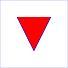
Example triangle01
Path data can contain newline characters and thus can be broken up into multiple lines to improve readability. Newlines inside attributes in markup will be normalized to space characters while parsing.
The syntax of path data is concise in order to allow for minimal file size and efficient downloads, since many SVG files will be dominated by their path data. Some of the ways that SVG attempts to minimize the size of path data are as follows:
- All instructions are expressed as one character (e.g., a moveto is expressed as an M).
-
Superfluous white space and separators (such as commas) may be eliminated; for instance, the following contains unnecessary spaces:
M 100 100 L 200 200It may be expressed more compactly as:M100 100L200 200 -
A command letter may be eliminated if an identical command letter would otherwise precede it; for instance, the following contains an unnecessary second "L" command:
M 100 200 L 200 100 L -100 -200It may be expressed more compactly as:M 100 200 L 200 100 -100 -200 - For most commands there are absolute and relative versions available (uppercase means absolute coordinates, lowercase means relative coordinates).
- Alternate forms of lineto are available to optimize the special cases of horizontal and vertical lines (absolute and relative).
- Alternate forms of curve are available to optimize the special cases where some of the control points on the current segment can be determined automatically from the control points on the previous segment.
The path data syntax is a prefix notation (i.e., commands followed by parameters). The only allowable decimal point is a Unicode U+002E FULL STOP (".") character (also referred to in Unicode as PERIOD, dot and decimal point) and no other delimiter characters are allowed [UNICODE]. (For example, the following is an invalid numeric value in a path data stream: "13,000.56". Instead, say: "13000.56".)
For the relative versions of the commands, all coordinate values are relative to the current point at the start of the command.
In the tables below, the following notation is used to describe the syntax of a given path command:
- (): grouping of parameters
- +: 1 or more of the given parameter(s) is required
In the description of the path commands, cpx and cpy represent the coordinates of the current point.
9.3.2. Specifying path data: the ‘d’ property
| Name: | d |
|---|---|
| Value: | none | <string> |
| Initial: | none |
| Applies to: | ‘path’
|
| Inherited: | no |
| Percentages: | N/A |
| Media: | visual |
| Computed value: | as specified |
| Animation type: | See prose |
The d property is used to specify the shape of a ‘path’ element.
The value none indicates that there is no
path data for the element. For ‘path’ elements, this means that the
element does not render or contribute to the bounding box of ancestor
container elements.
A path is made up of multiple segments, and every command, either explicit or implicit, other than moveto or closepath, defines one path segment.
All coordinates and lengths specified within path data must be treated as being in user units in the current user coordinate system.
The <string> value specifies a shape using a path data string. The contents of the <string> value must match the svg-path EBNF grammar defined below, and errors within the string are handled according to the rules in the Path Data Error Handling section. If the path data string contains no valid commands, then the behavior is the same as the none value.
For animation, two d property values can only be interpolated smoothly when the path data strings contain have the same structure, (i.e. exactly the same number and types of path data commands which are in the same order). If an animation is specified and the lists of path data commands do not have the same structure, then the values must be interpolated using the discrete animation type.
For from/by animations or additive animations, if the specified animation values are incompatible (i.e. the path data command lists do not have the same structure), then the animation must not produce an effect value. The element must render using the base value for the duration of the animation and after the animation ends. In particular, when ‘fill’='freeze' is specified, the frozen value must be the base value.
A by animation is additive by definition, so when the base value’s path data command list is incompatible with the by value, additive composition is undefined; see SMIL Animation: from, to, by and additive behavior.
If the list of path data commands have the same structure, then each parameter to each path data command must be interpolated separately as real numbers. Flags and booleans must be interpolated as fractions between zero and one, with any non-zero value considered to be a value of one/true.
Resolved that "d will become a presentation attribute (no name change) with path data string as value" at London Editor’s Meeting.
The following sections list the commands that can be used in path data strings. Those that draw straight line segments include the lineto commands (L, l, H, h, V and v) and the close path commands (Z and z). These three groups of commands draw curves:
- Cubic Bézier commands (C, c, S and s). A cubic Bézier segment is defined by a start point, an end point, and two control points.
- Quadratic Bézier commands (Q, q, T and t). A quadratic Bézier segment is defined by a start point, an end point, and one control point.
- Elliptical arc commands (A and a). An elliptical arc segment draws a segment of an ellipse.
9.3.3. The "moveto" commands
The "moveto" commands (M or m) must establish a new initial point and a new current point. The effect is as if the "pen" were lifted and moved to a new location. A path data segment (if there is one) must begin with a "moveto" command. Subsequent "moveto" commands (i.e., when the "moveto" is not the first command) represent the start of a new subpath:
| Command | Name | Parameters | Description |
|---|---|---|---|
| M (absolute) m (relative) | moveto | (x y)+ | Start a new sub-path at the given (x,y) coordinates. M (uppercase) indicates that absolute coordinates will follow; m (lowercase) indicates that relative coordinates will follow. If a moveto is followed by multiple pairs of coordinates, the subsequent pairs are treated as implicit lineto commands. Hence, implicit lineto commands will be relative if the moveto is relative, and absolute if the moveto is absolute. If a relative moveto (m) appears as the first element of the path, then it is treated as a pair of absolute coordinates. In this case, subsequent pairs of coordinates are treated as relative even though the initial moveto is interpreted as an absolute moveto. |
When a relative m command is used, the position moved to is (cpx + x, cpy + y).
9.3.4. The "closepath" command
The "closepath" (Z or z) ends the current subpath by connecting it back to its initial point. An automatic straight line is drawn from the current point to the initial point of the current subpath. This path segment may be of zero length.
If a "closepath" is followed immediately by a "moveto", then the "moveto" identifies the start point of the next subpath. If a "closepath" is followed immediately by any other command, then the next subpath starts at the same initial point as the current subpath.
When a subpath ends in a "closepath," it differs in behavior from what happens when "manually" closing a subpath via a "lineto" command in how ‘stroke-linejoin’ and ‘stroke-linecap’ are implemented. With "closepath", the end of the final segment of the subpath is "joined" with the start of the initial segment of the subpath using the current value of ‘stroke-linejoin’. If you instead "manually" close the subpath via a "lineto" command, the start of the first segment and the end of the last segment are not joined but instead are each capped using the current value of ‘stroke-linecap’. At the end of the command, the new current point is set to the initial point of the current subpath.
| Command | Name | Parameters | Description |
|---|---|---|---|
| Z or z | closepath | (none) | Close the current subpath by connecting it back to the current subpath’s initial point (see prose above). Since the Z and z commands take no parameters, they have an identical effect. |
A closed subpath must be closed with a "closepath" command, this "joins" the first and last path segments. Any other path is an open subpath.
A closed subpath differs in behavior from an open subpath whose final coordinate is the initial point of the subpath. The first and last path segments of an open subpath will not be joined, even when the final coordinate of the last path segment is the initial point of the subpath. This will result in the first and last path segments being capped using the current value of stroke-linecap rather than joined using the current value of stroke-linejoin.
If a "closepath" is followed immediately by a "moveto", then the "moveto" identifies the start point of the next subpath. If a "closepath" is followed immediately by any other command, then the next subpath must start at the same initial point as the current subpath.
9.3.5. The "lineto" commands
The various "lineto" commands draw straight lines from the current point to a new point:
| Command | Name | Parameters | Description |
|---|---|---|---|
| L (absolute) l (relative) | lineto | (x y)+ | Draw a line from the current point to the given (x,y) coordinate which becomes the new current point. L (uppercase) indicates that absolute coordinates will follow; l (lowercase) indicates that relative coordinates will follow. A number of coordinates pairs may be specified to draw a polyline. At the end of the command, the new current point is set to the final set of coordinates provided. |
| H (absolute) h (relative) | horizontal lineto | x+ | Draws a horizontal line from the current point. H (uppercase) indicates that absolute coordinates will follow; h (lowercase) indicates that relative coordinates will follow. Multiple x values can be provided (although usually this doesn’t make sense). An H or h command is equivalent to an L or l command with 0 specified for the y coordinate. At the end of the command, the new current point is taken from the final coordinate value. |
| V (absolute) v (relative) | vertical lineto | y+ | Draws a vertical line from the current point. V (uppercase) indicates that absolute coordinates will follow; v (lowercase) indicates that relative coordinates will follow. Multiple y values can be provided (although usually this doesn’t make sense). A V or v command is equivalent to an L or l command with 0 specified for the x coordinate. At the end of the command, the new current point is taken from the final coordinate value. |
When a relative l command is used, the end point of the line is (cpx + x, cpy + y).
When a relative h command is used, the end point of the line is (cpx + x, cpy). This means that an h command with a positive x value draws a horizontal line in the direction of the positive x-axis.
When a relative v command is used, the end point of the line is (cpx, cpy + y).
9.3.6. The cubic Bézier curve commands
The cubic Bézier commands are as follows:
| Command | Name | Parameters | Description |
|---|---|---|---|
| C (absolute) c (relative) | curveto | (x1 y1 x2 y2 x y)+ | Draws a cubic Bézier curve from the current point to (x,y) using (x1,y1) as the control point at the beginning of the curve and (x2,y2) as the control point at the end of the curve. C (uppercase) indicates that absolute coordinates will follow; c (lowercase) indicates that relative coordinates will follow. Multiple sets of coordinates may be specified to draw a polybézier. At the end of the command, the new current point becomes the final (x,y) coordinate pair used in the polybézier. |
| S (absolute) s (relative) | shorthand/smooth curveto | (x2 y2 x y)+ | Draws a cubic Bézier curve from the current point to (x,y). The first control point is assumed to be the reflection of the second control point on the previous command relative to the current point. (If there is no previous command or if the previous command was not an C, c, S or s, assume the first control point is coincident with the current point.) (x2,y2) is the second control point (i.e., the control point at the end of the curve). S (uppercase) indicates that absolute coordinates will follow; s (lowercase) indicates that relative coordinates will follow. Multiple sets of coordinates may be specified to draw a polybézier. At the end of the command, the new current point becomes the final (x,y) coordinate pair used in the polybézier. |
When a relative c or s command is used, each of the relative coordinate pairs is computed as for those in an m command. For example, the final control point of the curve of both commands is (cpx + x, cpy + y).
Example cubic01 shows some simple uses of cubic Bézier commands within a path. The example uses an internal CSS style sheet to assign styling properties. Note that the control point for the "S" command is computed automatically as the reflection of the control point for the previous "C" command relative to the start point of the "S" command.
<?xml version="1.0" standalone="no"?>
<svg width="5cm" height="4cm" viewBox="0 0 500 400"
xmlns="http://www.w3.org/2000/svg" version="1.1">
<title>Example cubic01- cubic Bézier commands in path data</title>
<desc>Picture showing a simple example of path data
using both a "C" and an "S" command,
along with annotations showing the control points
and end points</desc>
<style type="text/css"><![CDATA[
.Border { fill:none; stroke:blue; stroke-width:1 }
.Connect { fill:none; stroke:#888888; stroke-width:2 }
.SamplePath { fill:none; stroke:red; stroke-width:5 }
.EndPoint { fill:none; stroke:#888888; stroke-width:2 }
.CtlPoint { fill:#888888; stroke:none }
.AutoCtlPoint { fill:none; stroke:blue; stroke-width:4 }
.Label { font-size:22; font-family:Verdana }
]]></style>
<rect class="Border" x="1" y="1" width="498" height="398" />
<polyline class="Connect" points="100,200 100,100" />
<polyline class="Connect" points="250,100 250,200" />
<polyline class="Connect" points="250,200 250,300" />
<polyline class="Connect" points="400,300 400,200" />
<path class="SamplePath" d="M100,200 C100,100 250,100 250,200
S400,300 400,200" />
<circle class="EndPoint" cx="100" cy="200" r="10" />
<circle class="EndPoint" cx="250" cy="200" r="10" />
<circle class="EndPoint" cx="400" cy="200" r="10" />
<circle class="CtlPoint" cx="100" cy="100" r="10" />
<circle class="CtlPoint" cx="250" cy="100" r="10" />
<circle class="CtlPoint" cx="400" cy="300" r="10" />
<circle class="AutoCtlPoint" cx="250" cy="300" r="9" />
<text class="Label" x="25" y="70">M100,200 C100,100 250,100 250,200</text>
<text class="Label" x="325" y="350"
style="text-anchor:middle">S400,300 400,200</text>
</svg>
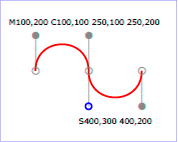
Example cubic01
The following picture shows some how cubic Bézier curves change their shape depending on the position of the control points. The first five examples illustrate a single cubic Bézier path segment. The example at the lower right shows a "C" command followed by an "S" command.
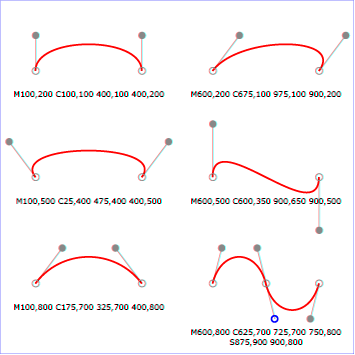
View
this example as SVG (SVG-enabled browsers only)
9.3.7. The quadratic Bézier curve commands
The quadratic Bézier commands are as follows:
| Command | Name | Parameters | Description |
|---|---|---|---|
| Q (absolute) q (relative) | quadratic Bézier curveto | (x1 y1 x y)+ | Draws a quadratic Bézier curve from the current point to (x,y) using (x1,y1) as the control point. Q (uppercase) indicates that absolute coordinates will follow; q (lowercase) indicates that relative coordinates will follow. Multiple sets of coordinates may be specified to draw a polybézier. At the end of the command, the new current point becomes the final (x,y) coordinate pair used in the polybézier. |
| T (absolute) t (relative) | Shorthand/smooth quadratic Bézier curveto | (x y)+ | Draws a quadratic Bézier curve from the current point to (x,y). The control point is assumed to be the reflection of the control point on the previous command relative to the current point. (If there is no previous command or if the previous command was not a Q, q, T or t, assume the control point is coincident with the current point.) T (uppercase) indicates that absolute coordinates will follow; t (lowercase) indicates that relative coordinates will follow. At the end of the command, the new current point becomes the final (x,y) coordinate pair used in the polybézier. |
When a relative q or t command is used, each of the relative coordinate pairs is computed as for those in an m command. For example, the final control point of the curve of both commands is (cpx + x, cpy + y).
Example quad01 shows some simple uses of quadratic Bézier commands within a path. Note that the control point for the "T" command is computed automatically as the reflection of the control point for the previous "Q" command relative to the start point of the "T" command.
<?xml version="1.0" standalone="no"?>
<svg width="12cm" height="6cm" viewBox="0 0 1200 600"
xmlns="http://www.w3.org/2000/svg" version="1.1">
<title>Example quad01 - quadratic Bézier commands in path data</title>
<desc>Picture showing a "Q" a "T" command,
along with annotations showing the control points
and end points</desc>
<rect x="1" y="1" width="1198" height="598"
fill="none" stroke="blue" stroke-width="1" />
<path d="M200,300 Q400,50 600,300 T1000,300"
fill="none" stroke="red" stroke-width="5" />
<!-- End points -->
<g fill="black" >
<circle cx="200" cy="300" r="10"/>
<circle cx="600" cy="300" r="10"/>
<circle cx="1000" cy="300" r="10"/>
</g>
<!-- Control points and lines from end points to control points -->
<g fill="#888888" >
<circle cx="400" cy="50" r="10"/>
<circle cx="800" cy="550" r="10"/>
</g>
<path d="M200,300 L400,50 L600,300
L800,550 L1000,300"
fill="none" stroke="#888888" stroke-width="2" />
</svg>
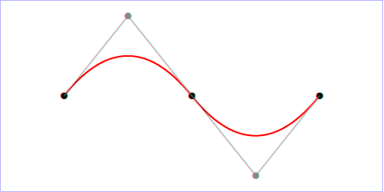
Example quad01
9.3.8. The elliptical arc curve commands
| SVG 2 Requirement: | Make it simpler to draw arcs in SVG path syntax. |
|---|---|
| Resolution: | Make arcs in paths easier. |
| Purpose: | To make it easier for authors to write path data with arcs by hand. |
| Owner: | Cameron (ACTION-3151) |
The elliptical arc commands are as follows:
| Command | Name | Parameters | Description |
|---|---|---|---|
| A (absolute) a (relative) | elliptical arc | (rx ry x-axis-rotation large-arc-flag sweep-flag x y)+ | Draws an elliptical arc from the current point to (x, y). The size and orientation of the ellipse are defined by two radii (rx, ry) and an x-axis-rotation, which indicates how the ellipse as a whole is rotated, in degrees, relative to the current coordinate system. The center (cx, cy) of the ellipse is calculated automatically to satisfy the constraints imposed by the other parameters. large-arc-flag and sweep-flag contribute to the automatic calculations and help determine how the arc is drawn. |
When a relative a command is used, the end point of the arc is (cpx + x, cpy + y).
Example arcs01 shows some simple uses of arc commands within a path.
<?xml version="1.0" standalone="no"?>
<svg width="12cm" height="5.25cm" viewBox="0 0 1200 400"
xmlns="http://www.w3.org/2000/svg" version="1.1">
<title>Example arcs01 - arc commands in path data</title>
<desc>Picture of a pie chart with two pie wedges and
a picture of a line with arc blips</desc>
<rect x="1" y="1" width="1198" height="398"
fill="none" stroke="blue" stroke-width="1" />
<path d="M300,200 h-150 a150,150 0 1,0 150,-150 z"
fill="red" stroke="blue" stroke-width="5" />
<path d="M275,175 v-150 a150,150 0 0,0 -150,150 z"
fill="yellow" stroke="blue" stroke-width="5" />
<path d="M600,350 l 50,-25
a25,25 -30 0,1 50,-25 l 50,-25
a25,50 -30 0,1 50,-25 l 50,-25
a25,75 -30 0,1 50,-25 l 50,-25
a25,100 -30 0,1 50,-25 l 50,-25"
fill="none" stroke="red" stroke-width="5" />
</svg>
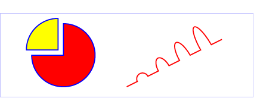
Example arcs01
The elliptical arc command draws a section of an ellipse which must meet the following constraints:
- the arc starts at the current point
- the arc ends at point (x, y)
- the ellipse has the two radii (rx, ry)
- the x-axis of the ellipse is rotated by x-axis-rotation degrees relative to the x-axis of the current coordinate system.
For most situations, there are actually four different arcs (two different ellipses, each with two different arc sweeps) that satisfy these constraints. large-arc-flag and sweep-flag indicate which one of the four arcs are drawn, as follows:
- Of the four candidate arc sweeps, two will represent an arc sweep of greater than or equal to 180 degrees (the "large-arc"), and two will represent an arc sweep of less than or equal to 180 degrees (the "small-arc"). If large-arc-flag is '1', then one of the two larger arc sweeps will be chosen; otherwise, if large-arc-flag is '0', one of the smaller arc sweeps will be chosen,
- If sweep-flag is '1', then the arc will be drawn in a "positive-angle" direction (i.e., the ellipse formula x=cx+rx*cos(theta) and y=cy+ry*sin(theta) is evaluated such that theta starts at an angle corresponding to the current point and increases positively until the arc reaches (x,y)). A value of 0 causes the arc to be drawn in a "negative-angle" direction (i.e., theta starts at an angle value corresponding to the current point and decreases until the arc reaches (x,y)).
The following illustrates the four combinations of large-arc-flag and sweep-flag and the four different arcs that will be drawn based on the values of these flags. For each case, the following path data command was used:
<path d="M 125,75 a100,50 0 ?,? 100,50"
style="fill:none; stroke:red; stroke-width:6"/>
where "?,?" is replaced by "0,0" "0,1" "1,0" and "1,1" to generate the four possible cases.
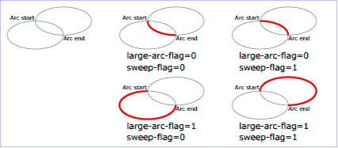
View this example as SVG (SVG-enabled browsers only)
Refer to the section on Out-of-range elliptical arc parameters for detailed implementation notes for the path data elliptical arc commands.
The Implementation Notes appendix has relevant formulae for software that needs to convert SVG arc notation to a format that uses center points and arc sweeps.
9.3.9. The grammar for path data
SVG path data matches the following EBNF grammar.
svg_path::= wsp* (moveto (wsp* drawto_command)*)? wsp*
drawto_command::=
moveto
| closepath
| lineto
| horizontal_lineto
| vertical_lineto
| curveto
| smooth_curveto
| quadratic_bezier_curveto
| smooth_quadratic_bezier_curveto
| elliptical_arc
moveto::=
( "M" | "m" ) wsp* coordinate_pair_sequence
closepath::=
("Z" | "z")
lineto::=
("L"|"l") wsp* coordinate_pair_sequence
horizontal_lineto::=
("H"|"h") wsp* coordinate_sequence
vertical_lineto::=
("V"|"v") wsp* coordinate_sequence
curveto::=
("C"|"c") wsp* curveto_coordinate_sequence
curveto_coordinate_sequence::=
coordinate_pair_triplet
| (coordinate_pair_triplet comma_wsp? curveto_coordinate_sequence)
smooth_curveto::=
("S"|"s") wsp* smooth_curveto_coordinate_sequence
smooth_curveto_coordinate_sequence::=
coordinate_pair_double
| (coordinate_pair_double comma_wsp? smooth_curveto_coordinate_sequence)
quadratic_bezier_curveto::=
("Q"|"q") wsp* quadratic_bezier_curveto_coordinate_sequence
quadratic_bezier_curveto_coordinate_sequence::=
coordinate_pair_double
| (coordinate_pair_double comma_wsp? quadratic_bezier_curveto_coordinate_sequence)
smooth_quadratic_bezier_curveto::=
("T"|"t") wsp* coordinate_pair_sequence
elliptical_arc::=
( "A" | "a" ) wsp* elliptical_arc_argument_sequence
elliptical_arc_argument_sequence::=
elliptical_arc_argument
| (elliptical_arc_argument comma_wsp? elliptical_arc_argument_sequence)
elliptical_arc_argument::=
number comma_wsp? number comma_wsp? number comma_wsp
flag comma_wsp? flag comma_wsp? coordinate_pair
coordinate_pair_double::=
coordinate_pair comma_wsp? coordinate_pair
coordinate_pair_triplet::=
coordinate_pair comma_wsp? coordinate_pair comma_wsp? coordinate_pair
coordinate_pair_sequence::=
coordinate_pair | (coordinate_pair comma_wsp? coordinate_pair_sequence)
coordinate_sequence::=
coordinate | (coordinate comma_wsp? coordinate_sequence)
coordinate_pair::= coordinate comma_wsp? coordinate
coordinate::= sign? number
sign::= "+"|"-"
exponent::= ("e" | "E") sign? digit+
fractional-constant::= (digit* "." digit+) | digit+
number::= fractional-constant exponent?
flag::= ("0" | "1")
comma_wsp::= (wsp+ ","? wsp*) | ("," wsp*)
wsp::= (#x9 | #x20 | #xA | #xC | #xD)
digit::= "0" | "1" | "2" | "3" | "4" | "5" | "6" | "7" | "8" | "9"
The processing of the EBNF must consume as much of a given EBNF production as possible, stopping at the point when a character is encountered which no longer satisfies the production. Thus, in the string "M 100-200", the first coordinate for the "moveto" consumes the characters "100" and stops upon encountering the minus sign because the minus sign cannot follow a digit in the production of a "coordinate". The result is that the first coordinate will be "100" and the second coordinate will be "-200".
Similarly, for the string "M 0.6.5", the first coordinate of the "moveto" consumes the characters "0.6" and stops upon encountering the second decimal point because the production of a "coordinate" only allows one decimal point. The result is that the first coordinate will be "0.6" and the second coordinate will be ".5".
The
grammar
of previous specifications allowed a trailing decimal point without
any decimal digits for numbers (e.g. 23.). SVG 2 harmonizes number parsing
with CSS [css-syntax-3],
disallowing the relaxed grammar for numbers. However, user agents may continue
to accept numbers with trailing decimal points when parsing is unambiguous.
Authors and authoring tools must not use the disallowed number format.
The EBNF allows the path data string in the d property to be empty. An empty path data string disables rendering of the path. Rendering is also disabled when the d property has the value none.
If path data not matching the grammar is encountered, then the path data is in error (see Error Handling).
9.4. Path directionality
Some features, such as the orientation of markers and the shapes of line caps, are defined in terms of the direction of the path at a given distance along the path or at the start or end of an individual segment.
The direction of a path at a specified distance along the path is defined as follows:
- If the given distance is zero, then the direction of the path is the direction at the start of the path’s first segment.
- Otherwise, if the given distance is the length of the path, then the direction of the path is the direction at the end of the path’s last segment.
-
Otherwise, if the given distance along the path occurs at a path
segment boundary, then the direction of the path is the
direction at the start of
the segment at the given distance, considering each segment to
be endpoint exclusive.
This will "move past" zero length segments, and choose the later segment if the distance is at the boundary between two non-zero length segments.The default direction at segment boundaries is overriden when calculating a cap shape and when rendering markers.
- Otherwise, the given distance along the path occurs in the middle of a non-zero length path segment. The direction is simply the direction of the curve at that point. If the point lies at a discontinuity, such as a cusp in a Bézier segment, then the direction is undefined; in this case, a direction between the incoming and outgoing direction around the discontinuity should be used.
The direction at the start of a path segment is defined as follows:
- If length of the entire path the segment belongs to is zero, then the direction at the start of the segment points in the same direction as the positive x-axis.
- Otherwise, if the path segment is zero length and the segment does not have any preceding non-zero length segments, then the direction at the start of the segment is the same as the direction at the end of the segment.
- Otherwise, if the path segment is zero length and there is some non-zero length segment preceding this segment, then the direction at the start of this segment is the same as the direction at the end of the closest preceding non-zero length segment.
- Otherwise, the path segment is non-zero length. The direction at the start of the segment is simply the direction coming out of the segment’s start point.
The direction at the end of a path segment is defined as follows:
- If length of the entire path the segment belongs to is zero, then the direction at the end of the segment points in the same direction as the positive x-axis.
- Otherwise, if the path segment is zero length and the segment does not have any following non-zero length segments, then the direction at the end of the segment is the same as the direction at the start of the segment.
- Otherwise, if the path segment is zero length and there is some non-zero length segment following this segment, then the direction at the end of this segment is the same as the direction at the start of the closest following non-zero length segment.
- Otherwise, the path segment is non-zero length. The direction at the end of the segment is simply the direction coming in to the segment’s end point.
9.5. Implementation notes
A conforming SVG user agent must implement features that use path data according to the following details:
9.5.1. Out-of-range elliptical arc parameters
Arbitrary numerical values are permitted for all elliptical arc parameters (other than the boolean flags), but user agents must make the following adjustments for invalid values when rendering curves or calculating their geometry:
-
If the endpoint (x, y) of the segment is identical to the current point (e.g., the endpoint of the previous segment), then this is equivalent to omitting the elliptical arc segment entirely.
-
If either rx or ry is 0, then this arc is treated as a straight line segment (a "lineto") joining the endpoints.
-
If either rx or ry have negative signs, these are dropped; the absolute value is used instead.
-
If rx, ry and x-axis-rotation are such that there is no solution (basically, the ellipse is not big enough to reach from the current point to the new endpoint) then the ellipse is scaled up uniformly until there is exactly one solution (until the ellipse is just big enough).
See the appendix section Correction of out-of-range radii for mathematical formula for this scaling operation.
This forgiving yet consistent treatment of out-of-range values ensures that:
- The inevitable approximations arising from computer arithmetic cannot cause a valid set of values written by one SVG implementation to be treated as invalid when read by another SVG implementation. This would otherwise be a problem for common boundary cases such as a semicircular arc.
- Continuous animations that cause parameters to pass through invalid values are not a problem. The motion remains continuous.
9.5.2. Reflected control points
The S/s and T/t commands indicate that the first control point of the given cubic Bézier segment is calculated by reflecting the previous path segment’s final control point relative to the current point. The exact math is as follows.
If the current point is (curx, cury) and the final control point of the previous path segment is (oldx2, oldy2), then the reflected point (i.e., (newx1, newy1), the first control point of the current path segment) is:
(newx1, newy1) = (curx - (oldx2 - curx), cury - (oldy2 - cury))
= (2*curx - oldx2, 2*cury - oldy2)
9.5.3. Zero-length path segments
Path segments with zero length are not invalid, and will affect rendering in the following cases:
- If markers are specified, then a marker is drawn on every applicable vertex, even if the given vertex is the end point of a zero-length path segment and even if "moveto" commands follow each other.
- As mentioned in Stroke Properties, linecaps must be painted for zero-length subpaths when stroke-linecap has a value of round or square.
9.5.4. Error handling in path data
Unrecognized contents within a path data stream (i.e., contents that are not part of the path data grammar) is an error. In such a case, the following error-handling rules must be used:- The general rule for error handling in path data is
that the SVG user agent shall render a ‘
path’ element up to (but not including) the path command containing the first error in the path data specification. This will provide a visual clue to the user or developer about where the error might be in the path data specification. This rule will greatly discourage generation of invalid SVG path data. - If a path data command contains an incorrect set of parameters, then the given path data command is rendered up to and including the last correctly defined path segment, even if that path segment is a sub-component of a compound path data command, such as a "lineto" with several pairs of coordinates. For example, for the path data string 'M 10,10 L 20,20,30', there is an odd number of parameters for the "L" command, which requires an even number of parameters. The user agent is required to draw the line from (10,10) to (20,20) and then perform error reporting since 'L 20 20' is the last correctly defined segment of the path data specification.
- Wherever possible, all SVG user agents shall report all errors to the user.
9.6. Distance along a path
Various operations, including text on a path and motion animation
and various stroke
operations, require that the user agent compute the
distance along the geometry of a graphics element, such as a ‘path’.
Exact mathematics exist for computing distance along a path, but the formulas are highly complex and require substantial computation. It is recommended that authoring products and user agents employ algorithms that produce as precise results as possible; however, to accommodate implementation differences and to help distance calculations produce results that approximate author intent, the ‘pathLength’ attribute can be used to provide the author’s computation of the total length of the path so that the user agent can scale distance-along-a-path computations by the ratio of ‘pathLength’ to the user agent’s own computed value for total path length.
A "moveto" operation within a ‘path’ element is defined to have
zero length. Only the various "lineto", "curveto" and "arcto"
commands contribute to path length calculations.
9.6.1. The ‘pathLength’ attribute
-
Name Value Initial value Animatable pathLength<number> (none) yes -
The author’s computation of the total length of the path, in user units. This value is used to calibrate the user agent’s own distance-along-a-path calculations with that of the author. The user agent will scale all distance-along-a-path computations by the ratio of ‘pathLength’ to the user agent’s own computed value for total path length. ‘pathLength’ potentially affects calculations for text on a path, motion animation and various stroke operations.
A value of zero is valid and must be treated as a scaling factor of infinity. A value of zero scaled infinitely must remain zero, while any non-percentage value greater than zero must become +Infinity.
A negative value is an error (see Error handling).
‘pathLength’ has no effect on percentage distance-along-a-path calculations.
9.6.2. The ‘path-length’ property
| Name: | path-length |
|---|---|
| Value: | none | <length [0,∞]> |
| Initial: | none |
| Applies to: | ‘path’, ‘circle’, ‘ellipse’,
‘line’, ‘polygon’, ‘polyline’, ‘rect’
|
| Inherited: | no |
| Percentages: | N/A |
| Media: | visual |
| Computed value: | the keyword none, or an absolute length |
| Animation type: | by computed value |
The path-length property provides the author’s computation of the total length of the path. This value is used to calibrate the user agent’s own distance-along-a-path calculations with that of the author.
A value of none indicates that no author path length is specified and the user agent’s own computed path length is used.
A <length> value must be zero or greater. A value of zero is valid and must be treated as a scaling factor of infinity. A value of zero scaled infinitely must remain zero, while any value greater than zero must become +Infinity.
The SVG ‘pathLength’ attribute maps to the
path-length CSS property as a
presentation attribute.
The unitless numeric value of the attribute is interpreted as a
<length> value in px units.
When the ‘pathLength’ attribute value is absent and
the path-length property computes to
none, no author scaling is applied.
The path-length property affects:
- text on a path
(‘
textPath’ positioning) - motion animation
- stroke operations (stroke-dasharray, stroke-dashoffset)
path-length has no effect on percentage distance-along-a-path calculations.
The CSS Working Group resolved to add path-length as a CSS property and make ‘pathLength’ map to it (minutes, 22 January 2020).
9.7. DOM interfaces
9.7.1. Interface SVGPathElement
An SVGPathElement object represents a ‘path’ in the DOM.
[Exposed =Window ]interface :SVGPathElement SVGGeometryElement { };
10. Basic Shapes
10.1. Introduction and definitions
- basic shape
- shape
- shape elements
- shape
- A graphics element that is defined by some combination of
straight lines and curves. Specifically:
‘
circle’, ‘ellipse’, ‘line’, ‘path’, ‘polygon’, ‘polyline’ and ‘rect’.
SVG contains the following set of basic shape elements:
- rectangles (including optional rounded corners), created with the ‘
rect’ element, - circles, created with the ‘
circle’ element, - ellipses, created with the ‘
ellipse’ element, - straight lines, created with the ‘
line’ element, - polylines, created with the ‘
polyline’ element, and - polygons, created with the ‘
polygon’ element
Mathematically, these shape elements are equivalent to a
‘path’ element that would construct the same shape. The basic
shapes may be stroked, filled and used as clip paths. All of the
properties available for ‘path’ elements also apply to the basic
shapes.
The equivalent path and algorithm to compute the stroke for each shape are defined in the shape sections below.
The equivalent paths of ‘rect’, ‘circle’ and ‘ellipse’ below
each end with a closepath
that draws a line of zero length,
because the command before it already ends at the initial point.
A zero-length line does not change how the shape is filled or stroked.
It can affect where vertex markers go,
but markers on these elements are placed by the rules in
Vertex markers,
not by counting the commands listed for each shape.
10.2. The ‘rect’ element
The ‘rect’ element defines a rectangle which is axis-aligned
with the current user coordinate system. Rounded rectangles can be achieved by setting
non-zero values for the rx and ry geometric properties.
rect’- Categories:
- Graphics element, renderable element, shape element
- Content model:
-
Any number of the following elements, in any order:
clipPath,
marker, mask,script,style - Attributes:
- Geometry properties:
- DOM Interfaces:
The x and y coordinates refer to the left and top edges of the rectangle, in the current user coordinate system.
The width and height properties define the overall width and height of the rectangle. A negative value for either property is invalid and must be ignored. A computed value of zero for either dimension disables rendering of the element.
For rounded rectangles,
the computed values of the rx and ry properties define
the x- and y-axis radii of elliptical arcs used to round off the corners of the rectangle.
The arc are always symmetrical along both horizontal and vertical axis; to create a rectangle with uneven corner rounding, define the shape explicitly with a ‘path’.
A negative value for either property is invalid and must be ignored.
A computed value of zero for either dimension,
or a computed value of auto for both dimensions,
results in a rectangle without corner rounding.
The used values for the x- and y-axis rounded corner radii
may be determined implicitly from the other dimension (using the auto value),
and are also subject to clamping so that the lengths of
the straight segments of the rectangle are never negative.
The used values for rx and ry are determined
from the computed values by following these steps in order:
- If both rx and ry have a computed value of
auto(sinceautois the initial value for both properties, this will also occur if neither are specified by the author or if all author-supplied values are invalid), then the used value of both rx and ry is 0. (This will result in square corners.) -
Otherwise, convert specified values to absolute values as follows:
- If rx is set to a length value or a percentage,
but ry is
auto, calculate an absolute length equivalent for rx, resolving percentages against the used width of the rectangle; the absolute value for ry is the same. - If ry is set to a length value or a percentage,
but rx is
auto, calculate the absolute length equivalent for ry, resolving percentages against the used height of the rectangle; the absolute value for rx is the same. - If both rx and ry were set to lengths or percentages, absolute values are generated individually, resolving rx percentages against the used width, and resolving ry percentages against the used height.
- If rx is set to a length value or a percentage,
but ry is
-
Finally, apply clamping to generate the used values:
- If the absolute rx (after the above steps) is greater than half of the used width, then the used value of rx is half of the used width.
- If the absolute ry (after the above steps) is greater than half of the used height, then the used value of ry is half of the used height.
- Otherwise, the used values of rx and ry are the absolute values computed previously.
Mathematically, a ‘rect’ element is mapped to an
equivalent ‘path’ element as follows,
after generating absolute used values
x, y, width, height,
rx, and rx
in user units for the user coordinate system,
for each of the equivalent geometric properties
following the rules specified above and in Units:
- perform an absolute moveto operation to location (x+rx,y);
- perform an absolute horizontal lineto with parameter x+width-rx;
- if both rx and ry are greater than zero, perform an absolute elliptical arc operation to coordinate (x+width,y+ry), where rx and ry are used as the equivalent parameters to the elliptical arc command, the x-axis-rotation and large-arc-flag are set to zero, the sweep-flag is set to one;
- perform an absolute vertical lineto parameter y+height-ry;
- if both rx and ry are greater than zero, perform an absolute elliptical arc operation to coordinate (x+width-rx,y+height), using the same parameters as previously;
- perform an absolute horizontal lineto parameter x+rx;
- if both rx and ry are greater than zero, perform an absolute elliptical arc operation to coordinate (x,y+height-ry), using the same parameters as previously;
- perform an absolute vertical lineto parameter y+ry
- if both rx and ry are greater than zero, perform an absolute elliptical arc operation to coordinate (x+rx,y), using the same parameters as previously;
- perform a closepath command.
Path decomposition resolved during teleconference on June 3rd, 2013.
Example rect01 shows a
rectangle with sharp corners. The ‘rect’ element is filled with yellow
and stroked with navy.
<?xml version="1.0" standalone="no"?>
<svg width="12cm" height="4cm" viewBox="0 0 1200 400"
xmlns="http://www.w3.org/2000/svg" version="1.1">
<desc>Example rect01 - rectangle with sharp corners</desc>
<!-- Show outline of viewport using 'rect' element -->
<rect x="1" y="1" width="1198" height="398"
fill="none" stroke="blue" stroke-width="2"/>
<rect x="400" y="100" width="400" height="200"
fill="yellow" stroke="navy" stroke-width="10" />
</svg>
Example rect01
Example rect02 shows two rounded rectangles. The rx specifies how to round the corners of the rectangles. Note that since no value has been specified for the ry attribute, the used value will be derived from the rx attribute.
<?xml version="1.0" standalone="no"?>
<svg width="12cm" height="4cm" viewBox="0 0 1200 400"
xmlns="http://www.w3.org/2000/svg" version="1.1">
<desc>Example rect02 - rounded rectangles</desc>
<!-- Show outline of viewport using 'rect' element -->
<rect x="1" y="1" width="1198" height="398"
fill="none" stroke="blue" stroke-width="2"/>
<rect x="100" y="100" width="400" height="200" rx="50"
fill="green" />
<g transform="translate(700 210) rotate(-30)">
<rect x="0" y="0" width="400" height="200" rx="50"
fill="none" stroke="purple" stroke-width="30" />
</g>
</svg>
Example rect02
10.3. The ‘circle’ element
The ‘circle’ element defines a circle based on a center point and a
radius.
circle’- Categories:
- Graphics element, renderable element, shape element
- Content model:
-
Any number of the following elements, in any order:
clipPath,
marker, mask,script,style - Attributes:
- Geometry properties:
- DOM Interfaces:
The cx and cy attributes define the coordinates of the center of the circle.
The r attribute defines the radius of the circle. A negative value is invalid and must be ignored. A computed value of zero disables rendering of the element.
Mathematically, a ‘circle’ element is mapped to an
equivalent ‘path’ element that consists of four
elliptical
arc segments, each covering a quarter of the circle. The path
begins at the "3 o’clock" point on the radius and proceeds in a
clock-wise direction (before any transformations).
The rx and ry parameters to the arc commands
are both equal to the used value of the r property, after conversion to local user units,
while the x-axis-rotation
and the large-arc-flag are set to zero,
and the sweep-flag is set to one.
The coordinates are computed as follows,
where cx, cy, and r are the used values of the equivalent properties, converted to user units:
- A move-to command to the point cx+r,cy;
- arc to cx,cy+r;
- arc to cx-r,cy;
- arc to cx,cy-r;
- arc to cx+r,cy;
- a closepath command.
Path decomposition resolved during teleconference on June 3rd, 2013.
Example
circle01 consists of a ‘circle’ element that is filled
with red and stroked with blue.
<?xml version="1.0" standalone="no"?>
<svg width="12cm" height="4cm" viewBox="0 0 1200 400"
xmlns="http://www.w3.org/2000/svg" version="1.1">
<desc>Example circle01 - circle filled with red and stroked with blue</desc>
<!-- Show outline of viewport using 'rect' element -->
<rect x="1" y="1" width="1198" height="398"
fill="none" stroke="blue" stroke-width="2"/>
<circle cx="600" cy="200" r="100"
fill="red" stroke="blue" stroke-width="10" />
</svg>
Example circle01
10.4. The ‘ellipse’ element
The ‘ellipse’ element defines an ellipse which is axis-aligned
with the current user coordinate system based on a center point and two radii.
ellipse’- Categories:
- Graphics element, renderable element, shape element
- Content model:
-
Any number of the following elements, in any order:
clipPath,
marker, mask,script,style - Attributes:
- Geometry properties:
- DOM Interfaces:
The cx and cy coordinates define the center of the ellipse.
The rx and ry properties define the x- and y-axis radii of the
ellipse.
A negative value for either property is invalid and must be ignored.
A computed value of zero for either dimension,
or a computed value of auto for both dimensions,
disables rendering of the element.
An auto value for either rx or ry
is converted to a used value, following the rules given above for rectangles
(but without any clamping based on width or height).
Effectively, an auto value creates a circular shape
whose radius is defined by a value expressed solely in one dimension;
this allows for creating a circle with a radius defined in terms of one of the following:
- a percentage of the coordinate system width; that is, a percentage value for rx and an
autovalue for ry. - a percentage of the coordinate system height; that is, an
autovalue for rx and a percentage value for ry.
New in SVG 2.
The auto value for rx and ry was added to allow consistent
parsing of these properties for both ellipses and rectangles.
Previously, if either rx or ry was unspecified,
the ellipse would not render.
Mathematically, an ‘ellipse’ element is mapped to an
equivalent ‘path’ element that consists of four
elliptical
arc segments, each covering a quarter of the ellipse. The path
begins at the "3 o’clock" point on the radius and proceeds in a
clock-wise direction (before any transformation).
The rx and ry parameters to the arc commands
are the used values of the equivalent properties after conversion to local user units,
while the x-axis-rotation
and the large-arc-flag are set to zero,
and the sweep-flag is set to one.
The coordinates are computed as follows,
where cx, cy, rx, and ry
are the used values of the equivalent properties, converted to user units:
- A move-to command to the point cx+rx,cy;
- arc to cx,cy+ry;
- arc to cx-rx,cy;
- arc to cx,cy-ry;
- arc to cx+rx,cy;
- a closepath command.
Path decomposition resolved during teleconference on June 3rd, 2013.
Example ellipse01 below specifies
the coordinates of the two ellipses in the user coordinate system
established by the ‘viewBox’ attribute on the ‘svg’
element and the transform property on the ‘g’ and
‘ellipse’ elements. Both ellipses use the default values of
zero for the cx and cy attributes (the center of the
ellipse). The second ellipse is rotated.
<?xml version="1.0" standalone="no"?>
<svg width="12cm" height="4cm" viewBox="0 0 1200 400"
xmlns="http://www.w3.org/2000/svg" version="1.1">
<desc>Example ellipse01 - examples of ellipses</desc>
<!-- Show outline of viewport using 'rect' element -->
<rect x="1" y="1" width="1198" height="398"
fill="none" stroke="blue" stroke-width="2" />
<g transform="translate(300 200)">
<ellipse rx="250" ry="100"
fill="red" />
</g>
<ellipse transform="translate(900 200) rotate(-30)"
rx="250" ry="100"
fill="none" stroke="blue" stroke-width="20" />
</svg>
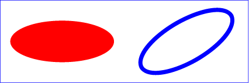
Example ellipse01
10.5. The ‘line’ element
The ‘line’ element defines a line segment that starts at one point
and ends at another.
line’- Categories:
- Graphics element, renderable element, shape element
- Content model:
-
Any number of the following elements, in any order:
clipPath,
marker, mask,script,style - Attributes:
- DOM Interfaces:
Attribute definitions:
-
Name Value Initial value Animatable x1,y1<length-percentage> | <number> 0 yes - The x- and y-axis coordinates of the start of the line.
-
Name Value Initial value Animatable x2,y2<length-percentage> | <number> 0 yes - The x- and y-axis coordinates of the end of the line.
A future specification may convert the ‘x1’, ‘y1’, ‘x2’, and ‘y2’ attributes to geometric properties.
Currently, they can only be specified via element attributes, and not CSS.
Mathematically, a ‘line’ element can be mapped to an
equivalent ‘path’ element as follows,
after converting coordinates into user coordinate system user units according
to Units
to generate values x1, y1, x2, and y2:
- perform an absolute moveto operation to absolute location (x1,y1)
- perform an absolute lineto operation to absolute location (x2,y2)
Because ‘line’ elements are single lines and thus are geometrically
one-dimensional, they have no interior; thus, ‘line’ elements are never
filled (see the fill property).
Example line01 below
specifies the coordinates of the five lines in the user coordinate system
established by the ‘viewBox’ attribute on the ‘svg’ element. The
lines have different thicknesses.
<?xml version="1.0" standalone="no"?>
<svg width="12cm" height="4cm" viewBox="0 0 1200 400"
xmlns="http://www.w3.org/2000/svg" version="1.1">
<desc>Example line01 - lines expressed in user coordinates</desc>
<!-- Show outline of viewport using 'rect' element -->
<rect x="1" y="1" width="1198" height="398"
fill="none" stroke="blue" stroke-width="2" />
<g stroke="green" >
<line x1="100" y1="300" x2="300" y2="100"
stroke-width="5" />
<line x1="300" y1="300" x2="500" y2="100"
stroke-width="10" />
<line x1="500" y1="300" x2="700" y2="100"
stroke-width="15" />
<line x1="700" y1="300" x2="900" y2="100"
stroke-width="20" />
<line x1="900" y1="300" x2="1100" y2="100"
stroke-width="25" />
</g>
</svg>
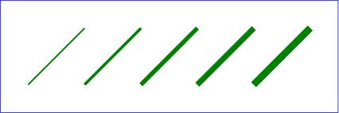
Example line01
10.6. The ‘polyline’ element
The ‘polyline’ element defines a set of connected straight
line segments. Typically, ‘polyline’ elements define open
shapes.
polyline’- Categories:
- Graphics element, renderable element, shape element
- Content model:
-
Any number of the following elements, in any order:
clipPath,
marker, mask,script,style - Attributes:
- DOM Interfaces:
Attribute definitions:
-
Name Value Initial value Animatable points<points> (none) yes -
where:
<points> =[ <number>+ ]#The points that make up the polyline. All coordinate values are in the user coordinate system.
If an odd number of coordinates is provided, then the element is in error, with the same user agent behavior as occurs with an incorrectly specified ‘
path’ element. In such error cases the user agent will drop the last, odd coordinate and otherwise render the shape.The initial value, (none), indicates that the polyline element is valid but does not render.
A future specification may convert the ‘points’ attribute to a geometric property.
Currently, it can only be specified via an element attribute, and not CSS.
Mathematically, a ‘polyline’ element can be mapped to an
equivalent ‘path’ element as follows:
- perform an absolute moveto operation to the first coordinate pair in the list of points
- for each subsequent coordinate pair, perform an absolute lineto operation to that coordinate pair.
Example polyline01
below specifies a polyline in the user coordinate system established by the
‘viewBox’ attribute on the ‘svg’ element.
<?xml version="1.0" standalone="no"?>
<svg width="12cm" height="4cm" viewBox="0 0 1200 400"
xmlns="http://www.w3.org/2000/svg" version="1.1">
<desc>Example polyline01 - increasingly larger bars</desc>
<!-- Show outline of viewport using 'rect' element -->
<rect x="1" y="1" width="1198" height="398"
fill="none" stroke="blue" stroke-width="2" />
<polyline fill="none" stroke="blue" stroke-width="10"
points="50,375
150,375 150,325 250,325 250,375
350,375 350,250 450,250 450,375
550,375 550,175 650,175 650,375
750,375 750,100 850,100 850,375
950,375 950,25 1050,25 1050,375
1150,375" />
</svg>
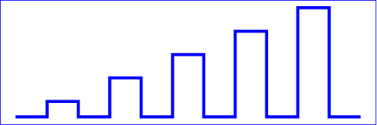
Example polyline01
10.7. The ‘polygon’ element
The ‘polygon’ element defines a closed shape consisting of a
set of connected straight line segments.
polygon’- Categories:
- Graphics element, renderable element, shape element
- Content model:
-
Any number of the following elements, in any order:
clipPath,
marker, mask,script,style - Attributes:
- DOM Interfaces:
Attribute definitions:
-
Name Value Initial value Animatable points<points> (none) yes -
The points that make up the polygon. All coordinate values are in the user coordinate system.
If an odd number of coordinates is provided, then the element is in error, with the same user agent behavior as occurs with an incorrectly specified ‘
path’ element.The initial value, (none), indicates that the polygon element is valid, but does not render.
A future specification may convert the ‘points’ attribute to a geometric property.
Currently, it can only be specified via an element attribute, and not CSS.
Mathematically, a ‘polygon’ element can be mapped to an
equivalent ‘path’ element as follows:
- perform an absolute moveto operation to the first coordinate pair in the list of points
- for each subsequent coordinate pair, perform an absolute lineto operation to that coordinate pair
- perform a closepath command
Example
polygon01 below specifies two polygons (a star and a hexagon) in
the user coordinate system established by the ‘viewBox’ attribute
on the ‘svg’ element.
<?xml version="1.0" standalone="no"?>
<svg width="12cm" height="4cm" viewBox="0 0 1200 400"
xmlns="http://www.w3.org/2000/svg" version="1.1">
<desc>Example polygon01 - star and hexagon</desc>
<!-- Show outline of viewport using 'rect' element -->
<rect x="1" y="1" width="1198" height="398"
fill="none" stroke="blue" stroke-width="2" />
<polygon fill="red" stroke="blue" stroke-width="10"
points="350,75 379,161 469,161 397,215
423,301 350,250 277,301 303,215
231,161 321,161" />
<polygon fill="lime" stroke="blue" stroke-width="10"
points="850,75 958,137.5 958,262.5
850,325 742,262.6 742,137.5" />
</svg>
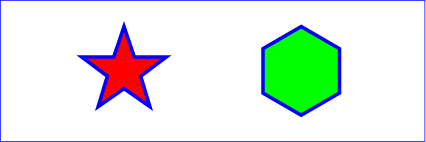
Example polygon01
10.8. DOM interfaces
10.8.1. Interface SVGRectElement
An SVGRectElement object represents a ‘rect’ element in the DOM.
[Exposed =Window ]interface :SVGRectElement SVGGeometryElement { [SameObject ]readonly attribute SVGAnimatedLength x ; [SameObject ]readonly attribute SVGAnimatedLength y ; [SameObject ]readonly attribute SVGAnimatedLength width ; [SameObject ]readonly attribute SVGAnimatedLength height ; [SameObject ]readonly attribute SVGAnimatedLength rx ; [SameObject ]readonly attribute SVGAnimatedLength ry ; };
The
xywidthheightrxry
10.8.2. Interface SVGCircleElement
An SVGCircleElement object represents a ‘circle’ element in the DOM.
[Exposed =Window ]interface :SVGCircleElement SVGGeometryElement { [SameObject ]readonly attribute SVGAnimatedLength cx ; [SameObject ]readonly attribute SVGAnimatedLength cy ; [SameObject ]readonly attribute SVGAnimatedLength r ; };
The
cxcyr
10.8.3. Interface SVGEllipseElement
An SVGEllipseElement object represents a ‘ellipse’ element in the DOM.
[Exposed =Window ]interface :SVGEllipseElement SVGGeometryElement { [SameObject ]readonly attribute SVGAnimatedLength cx ; [SameObject ]readonly attribute SVGAnimatedLength cy ; [SameObject ]readonly attribute SVGAnimatedLength rx ; [SameObject ]readonly attribute SVGAnimatedLength ry ; };
The
cxcyrxry
10.8.4. Interface SVGLineElement
SVGLineElement interface corresponds to the ‘line’
element.
[Exposed =Window ]interface :SVGLineElement SVGGeometryElement { [SameObject ]readonly attribute SVGAnimatedLength x1 ; [SameObject ]readonly attribute SVGAnimatedLength y1 ; [SameObject ]readonly attribute SVGAnimatedLength x2 ; [SameObject ]readonly attribute SVGAnimatedLength y2 ; };
The
x1y1x2y2x1’, ‘y1’, ‘x2’ and ‘y2’
content attributes, respectively
10.8.5. Mixin SVGAnimatedPoints
The SVGAnimatedPoints interface is used to reflect
a ‘points’ attribute on a ‘polygon’ or ‘polyline’
element. It is mixed in to the SVGPolygonElement and SVGPolylineElement
interfaces.
interface mixin SVGAnimatedPoints { [SameObject ]readonly attribute SVGPointList points ; [SameObject ]readonly attribute SVGPointList animatedPoints ; };
The pointspoints,
an SVGPointList object is returned that reflects the base
value of the reflected attribute.
The animatedPointsanimatedPoints,
an SVGPointList object is returned that reflects the animated
value of the reflected attribute.
The objects returned from points
and animatedPoints must be distinct, even
if there is no animation currently affecting the attribute.
10.8.6. Interface SVGPointList
The SVGPointList interface is a list interface whose
elements are SVGPoint objects. An SVGPointList
object represents a list of points.
[Exposed =Window ]interface {SVGPointList readonly attribute unsigned long length ;readonly attribute unsigned long numberOfItems ;undefined clear ();SVGPoint initialize (SVGPoint );newItem getter SVGPoint getItem (unsigned long );index SVGPoint insertItemBefore (SVGPoint ,newItem unsigned long );index SVGPoint replaceItem (SVGPoint ,newItem unsigned long );index SVGPoint removeItem (unsigned long );index SVGPoint appendItem (SVGPoint );newItem setter undefined (unsigned long ,index SVGPoint ); };newItem
The behavior of all of the interface members of SVGPointList are
defined in List interfaces.
This specification imposes additional requirements on the behaviour of SVGPoint
objects beyond those described in the
Geometry Interfaces
specification, so that they can be used to reflect ‘points’ attributes.
Every SVGPoint object operates in one of four modes. It can:
- reflect an element of the base value of a reflected animatable
attribute (being exposed through the methods on the
pointsmember of anSVGAnimatedPoints), - reflect an element of the animated value of a reflected animatable
attribute (being exposed through the methods on the
animatedPointsmember of anSVGAnimatedPoints), - represent the current translation of a given ‘
svg’ element (being exposed through thecurrentTranslatemember onSVGSVGElement), or - be detached, which is the case for SVGPoint objects created
using their constructor or with
createSVGPoint.
A SVGPoint object can be associated with a particular element. The associated element is used to determine which element’s content attribute to update if the object reflects an attribute. Unless otherwise described, a SVGPoint object is not associated with any element.
A SVGPoint object can be designated as read only, which means that attempts to modify the object will result in an exception being thrown. When assigning to a read only SVGPoint’s x, y, w or z IDL attribute, a NoModificationAllowedError must be thrown instead of updating the internal coordinate value.
Note that per svgwg#706 (2019-10 WG resolutions) SVG 2 reverts to the SVG 1.1 idiom: there is no separate read-only-variant interface. An SVGPoint may be designated read-only via an internal flag; writes throw NoModificationAllowedError on the same interface.
When assigning to a writable SVGPoint’s x, y, w or z IDL attribute, the following steps are run after updating the internal coordinate value:
- If the SVGPoint reflects an element of the
base value of a reflected attribute, then reserialize
the reflected attribute using the
SVGPointListthat reflects the attribute’s base value. -
Otherwise, if the SVGPoint represents
the current translation of an ‘
svg’ element and that element is the outermost svg element, then:- Let [a b c d e f] be the 2x3 matrix that represents the document’s magnification and panning transform.
- Let x and y be the x and y coordinates of the SVGPoint object, respectively.
- Set the document’s magnification and panning transform to [a 0 0 d x y].
10.8.7. Interface SVGPolylineElement
An SVGPolylineElement object represents a ‘polyline’ element in the DOM.
[Exposed =Window ]interface :SVGPolylineElement SVGGeometryElement { };SVGPolylineElement includes SVGAnimatedPoints ;
10.8.8. Interface SVGPolygonElement
An SVGPolygonElement object represents a ‘polygon’ element in the DOM.
[Exposed =Window ]interface :SVGPolygonElement SVGGeometryElement { };SVGPolygonElement includes SVGAnimatedPoints ;
11. Text
11.1. Introduction
Text that is to be rendered as part of an SVG document fragment is
specified using the ‘text’ element. The text within a
‘text’ element can be rendered:
- pre-formatted (with limited line wrapping),
- auto-wrapped (if a content area is provided),
- on a path (if a ‘
textPath’ element is provided).
The section Text layout gives an introduction to text layout. It is followed by sections covering content areas and the algorithm for laying out text within a content area. The specialized layout rules corresponding to text that is pre-formatted, auto-wrapped, and on a path are then addressed in individual sections.
Rules for text layout in SVG 1.1 are mostly defined within the SVG 1.1 specification. The rules mirror to a large extent those found in CSS. In SVG 2, the dependence on CSS is more explicit. In practice the resulting layout is the same. The change to directly relying on CSS specifications simplifies the SVG specification while making it more obvious that rendering agents can use the same code to render both text in HTML and in SVG. In particular, SVG 2 auto-wrapped text is based on CSS text layout.
SVG’s ‘text’ elements are rendered like other graphics
elements. Thus, coordinate system
transformations, painting,
clipping and
masking features apply to
‘text’ elements in the same way as they apply to
shapes such as
paths and rectangles.
SVG text supports advanced typographic features including:
- choice of typeface,
- use of discretionary, historical, or stylistic ligatures,
- text decorations (underlining, over-lining, etc.).
SVG text supports international text processing needs such as:
- horizontal and vertical orientation of text,
- left-to-right or bidirectional text (i.e., languages which intermix right-to-left and left-to-right text, such as Arabic and Hebrew),
- complex text layout where: there is not always a one-to-one correspondence between characters and glyphs, characters may change shape depending on location (e.g. Arabic), and characters may be reordered or combined depending on context (e.g. Devanagari),
- glyph alignment to different baselines (alphabetic for western scripts, hanging for northern Indic scripts, and ideographic for far-eastern scripts).
Multi-language SVG content is possible by substituting different text strings based on the user’s preferred language.
The characters to be drawn are expressed as
character data ([xml],
section 2.4) inside the ‘text’ element. As a result:
- Text data in SVG content is readily accessible to the visually impaired (see Accessibility Support).
- In many viewing scenarios, the user will be able to search for and select text strings and copy selected text strings to the system clipboard (see Text selection and clipboard operations).
- XML-compatible Web search engines will find text strings in SVG content with no additional effort over what they need to do to find text strings in other XML documents.
For accessibility reasons, it is recommended that text that is
included in a document have appropriate semantic markup to
indicate its function.
For example,
a text element that provides a visible label for part of a diagram
should have an ‘id’ that is referenced by
an ‘aria-labelledby’ attribute on the relevant group or path element.
See SVG
accessibility guidelines for more information.
11.1.1. Definitions
- character
-
A character is an atomic unit of text as defined in XML
[XML].
Essentially, a Unicode code point. A character may be a control instruction (such as a tab, carriage return, or line feed), a renderable mark (letter, digit, punctuation or other symbol), or a modifier (such as a combining accent).
- addressable character
-
A character that is addressable by text positioning
attributes and SVG DOM text methods.
Characters discarded during layout such as
collapsed
white space characters are not addressable, neither are characters
within an element with a value of none for
the display property.
Addressable characters are addressed by their index. Indexes are
determined prior to applying any text-transform
conversions, as described for the methods in the
SVGTextContentElementinterface. There are two methods to map an index to a character; the choice of which to use depends on purpose:- For the purposes of mapping text positioning attributes, the index is measured in Unicode code points (thus a 'u' followed by the combining diaeresis ' ̈' is counted as two characters while the precomposed character 'ü' is counted as one character).
- For the purposes of SVG DOM text methods, the index is measured in UTF-16 code units (thus, a single Unicode code point above U+FFFF will map to two addressable characters as a UTF-16 code unit consists of 16 bits).
The different methods are backwards compatible with SVG 1.1. The use of UTF-16 code units for SVG DOM text methods is required from the definition of DOMString in the DOM 2 specification.
The SVG working group is interested in implementer feedback on the possibility of using grapheme clusters as defined by the Unicode Standard Annex #29 to replace Unicode code points in mapping text positioning attributes. Note, the use of the CSS typographic character is not appropriate as what constitutes a character can depend on context (line-breaking, word-breaking, etc.).
If support for CSS generated-content text is introduced in the future, it would be included in the array of addressable characters.
- typographic character
- A unit of a writing system— such as a Latin alphabetic letter (including its diacritics), Hangul syllable, Chinese ideographic character, Myanmar syllable cluster— that is indivisible with respect to a particular typographic operation (line-breaking, first-letter effects, tracking, justification, vertical arrangement, etc.). For the normative definition and the relationship between this and a Unicode grapheme cluster, see CSS Text Module Level 3, ([css-text-3]).
- font
- A font represents an organized collection of glyphs in which the various glyph representations will share a particular appearance or styling.
- glyph
- A glyph represents a unit of rendered content within a font. Often, there is a one-to-one correspondence between characters to be drawn and corresponding glyphs (e.g., usually the character "A" is rendered using a single glyph), but other times multiple glyphs are used to render a single character (e.g., characters with accents) or a single glyph can be used to render multiple characters (e.g., ligatures). Typically, a glyph is defined by one or more shapes such as a path, possibly with additional information such as rendering hints that help a font engine to produce legible text in small sizes.
- text content element
-
A text content element is an SVG element that causes a text
string to be rendered onto the canvas. The SVG text content
elements are:
‘
text’, ‘textPath’ and ‘tspan’. - text content child element
-
A text content child element is a text content element
that is allowed as a descendant of another text content element. In SVG the text content child elements are:
‘
textPath’ and ‘tspan’. - text content block element
-
A text content block element is a text content element
that serves as a standalone element for a unit of text, and
which may optionally contain certain child text content elements (e.g.
‘tspan’).
SVG 2 defines a single text content block element: ‘
text’. - content area
- The area in which the text is laid out. This is equivalent to the CSS content area.
- wrapping area
- The area in which the text is laid out. This is the same as the content area.
- line box
-
The rectangular area containing all the content used to layout a single line of text.
This is the same as the
CSS line box.
Although various CSS 3 text layout specs use the term, none current establish a formal definition. The link is therefore to CSS 2.1, and an issue has been filed with CSS WG.
- inline-base direction
-
The primary direction in which content is ordered within a line
or part of a line of text. It defines the
start
andend
sides of a line or part of a line of text (relevant, for example to how the text-anchor property is applied). It is determined by the direction property. (Note: the ordering of characters in a line of text is primary controlled by the Unicode bidi algorithm and not the inline-base direction.) - block-flow direction
- The direction in which line boxes are stacked. It is determined by the writing-mode property.
- alignment point
- The point on a typographic character that should be aligned with the current text position. It is determined by the glyph cell metrics and may depend on the script and inline-base direction.
- current text position
- The point in the current user space where the alignment point of the next typographic character to be rendered should be placed.
- text chunk
-
An independent block of text in which all characters are
positioned together. Each new absolute positioning adjustment
(due to an ‘
x’ or ‘y’ attribute, or forced line break) creates a new text chunk. Ligature substitution and bidi-reordering only occur within a text chunk. Text chunks are only relevant to pre-formatted text. - white space characters
- The following characters are considered white space characters: U+0009 CHARACTER TABULATION, U+000C FORM FEED (FF), U+000D CARRIAGE RETURN (CR), U+000A LINE FEED (LF) and U+0020 SPACE.
11.1.2. Fonts and glyphs
A font consists of a collection of glyphs together with other information (collectively, the font tables) necessary to use those glyphs to present characters on some visual medium. The combination of the collection of glyphs and the font tables is called the font data.
A font may supply substitution and positioning tables that can be used by a formatter (text shaper) to re-order, combine and position a sequence of glyphs to form one or more composite glyphs. The combining may be as simple as a ligature, or as complex as an indic syllable which combines, usually with some re-ordering, multiple consonants and vowel glyphs. The tables may be language dependent, allowing the use of language appropriate letter forms.
When a glyph, simple or composite, represents an indivisible unit for typesetting purposes, it is know as a typographic character.
Ligatures are an important feature of advance text layout. Some ligatures are discretionary while others (e.g. in Arabic) are required. The following explicit rules apply to ligature formation:
-
Ligature formation should not be enabled when characters are in different DOM text nodes; thus, characters separated by markup should not use ligatures.
-
Ligature formation should not be enabled when characters are in different text chunks.
-
Discretionary ligatures should not be used when the spacing between two characters is not the same as the default space (e.g. when letter-spacing has a non-default value, or text-align has a value of justify and text-justify has a value of distribute). (See CSS Text Module Level 3, ([css-text-3]).
SVG attributes such as ‘
dx’, ‘textLength’, and ‘spacing’ (in ‘textPath’) that may reposition typographic characters do not break discretionary ligatures. If discretionary ligatures are not desired they can be turned off by using the font-variant-ligatures property.For OpenType fonts, discretionary ligatures include those enabled by the liga, clig, dlig, hlig, and cala features; required ligatures are found in the rlig feature.
| SVG 2 Requirement: | Include explicit support for Web Open Font Format (WOFF). |
|---|---|
| Resolution: | We will mandate WOFF support in SVG 2. |
| Purpose: | To allow access to full OpenType features for internationalization and advanced typography. |
| Owner: | Chris (no action) |
| Status: | Done |
Proper text rendering may depend on using the same font as used during authoring. For this reason SVG requires support for downloadable fonts as defined in the Font Resources section of the CSS Fonts Module. In particular, support for the Web Open Font Format [WOFF] is required.
New in SVG 2, WOFF allows authors to provide the fonts needed to properly render their content. This includes ensuring that the fonts have the proper OpenType tables to support complex scripts, discretionary ligatures, swashes, old-style numbers, and so on. WOFF also allows the fonts to be compressed, subsetted, and include licensing information.
11.1.3. Glyph metrics and layout
Glyph selection and positioning is normally handled according to the rules of CSS. In some cases, however, the final layout of text in SVG requires knowledge of the geometry properties of individual glyphs.
The geometric font characteristics are expressed in a coordinate system based on the EM box. (The EM is a relative measure of the height of the glyphs in the font.) The box 1 EM high and 1 EM wide is called the design space. This space is given a geometric coordinates by sub-dividing the EM into a number of units per em.
Units per em is a font characteristic. A typical value for units per em is 1000 or 2048.
The coordinate space of the EM box is called the design space coordinate system. For scalable fonts, the curves and lines that are used to draw a glyph are represented using this coordinate system.
Most often, the (0,0) point in this coordinate system is positioned on the left edge of the EM box, but not at the bottom left corner. The Y coordinate of the bottom of a roman capital letter is usually zero. The descenders on lowercase roman letters have negative coordinate values.

An 'M' inside an Em box (blue square). The 'M' sits on the baseline (blue line). The origin of the coordinate system is shown by the small black circle.
SVG assumes that the font tables will provide at least three font characteristics: an ascent, a descent and a set of baseline-tables. The ascent is the distance to the top of the EM box from the (0,0) point of the font; the descent is the distance to the bottom of the EM box from the (0.0) point of the font. The baseline-table is explained below.
Within an OpenType font ([OPENTYPE]), for horizontal writing-modes, the ascent and descent are given by the sTypoAscender and sTypoDescender entries in the OS/2 table. For vertical writing-modes, the descent (the distance, in this case from the (0,0) point to the left edge of the glyph) is normally zero because the (0,0) point is on the left edge. The ascent for vertical writing-modes is either 1 em or is specified by the ideographic top baseline value in the OpenType Base table for vertical writing-modes.
Glyphs are positioned relative to a particular point on each glyph known as the alignment point. For horizontal writing-modes, the glyphs' alignment points are vertically aligned while for vertical writing-modes, they are horizontally aligned. The position of the alignment point depends on the script. For example, Western glyphs are aligned at the bottom of capital letters, northern Indic glyphs are aligned at the top of a horizontal stroke near the top of the glyphs, and far-eastern glyphs are aligned either at the bottom or center of the glyph.
Within a script and within a line of text having a single font-size, the sequence of alignment points defines, in the inline-base direction, a geometric line called a baseline. Western and most other alphabetic and syllabic glyphs are aligned to an "alphabetic" baseline, the northern Indic glyphs are aligned to a "hanging" baseline and the far-eastern glyphs are aligned to an "ideographic" baseline.

Example baselines (red lines) in three different scripts. From left to right: alphabetic, hanging, ideographic. The EM box is shown in blue for the ideographic script.
As glyphs are sequentially placed along a baseline, the alignment point of a glyph is typically positioned at the current text position (some properties such as vertical-align may alter the positioning). After each glyph is placed, the current text position is advanced by the glyph’s advance value (typically the width for horizontal text or height for vertical text) with any correction for kerning or other spacing adjustment as well as for new lines in pre-formatted or auto-wrapped text. The initial and final current text positions are used for alignment (e.g. when the text-anchor value is either 'middle' or 'end'). The glyph’s advance is needed when placing text along a path.

Example of font metrics. The blue boxes show the geometric boxes for the three glyphs. The labeled small circles show the current text position before glyph placement. The small square shows the final current text position after placing the last glyph. Note that the left side of the 'a' glyph’s box is not aligned with the right side of the 'V' glyph’s box due to kerning.
If a glyph does not provide explicit advance values corresponding to the current glyph orientation, then an appropriate approximation should be used. For vertical text, a suggested approximation is the em size.
The initial current text position is established by the
‘x’ and ‘y’ attributes on the
‘text’ element or first rendered ‘tspan’ element for
pre-formatted text, or auto-wrapped text when the content area is determined by the inline-size property. For
other auto-wrapped text, the initial current text position
is determined by the position of the first rendered glyph after
applying the CSS line wrapping algorithm.
If no ‘x’ (‘y’) attribute establishes the
initial current text position, then its X (Y) coordinate is
0 in the current user coordinate
system.
A baseline-table specifies the position of one or more baselines in the design space coordinate system. The function of the baseline table is to facilitate the alignment of different scripts with respect to each other when they are mixed on the same text line. Because the desired relative alignments may depend on which script is dominant in a line (or block), there may be a different baseline table for each script. In addition, different alignment positions are needed for horizontal and vertical writing modes. Therefore, the font may have a set of baseline tables: typically, one or more for horizontal writing-modes and zero or more for vertical writing-modes.
Some fonts may not have values for the baseline tables. Heuristics are suggested for approximating the baseline tables in CSS Inline Layout Module Level 3 [css-inline-3] when a given font does not supply baseline tables.
When a different font (or change in font size) is specified in the middle of a run of text, the dominant baseline determines the baseline used to align glyphs in the new font (new size) to those in the previous font. The dominant-baseline property is used to set the dominant baseline.
Alignment between an object relative to its parent is determined by the alignment baseline. It is normally the same baseline as the dominant baseline but by using the shorthand vertical-align property (preferred) or the longhand alignment-baseline another baseline can be chosen.
The dominant baseline can be temporarily shifted (as needed for superscripts or subscripts) by using either the shorthand vertical-align property (preferred) or the longhand baseline-shift property. Note that shifts can be nested, each shift added to the previous shift.
![Examples of using the 'vertical-align' property. Left shows '[[z]]' where the inner brackets are smaller. Right shows 'x2' where the '2' is a superscript.](images/text/vertical_align.svg)
Examples of using the 'vertical-align' property.
Left: 'vertical-align:mathematical'
('alignment-baseline:mathematical') is applied to
the ‘tspan’ containing '[z]'. The light-blue line shows
the position of the mathematical baseline.
Right: 'vertical-align:super' ('baseline-shift:super') applied
to the ‘tspan’ containing '2'. The light-blue lines
indicate the shift in baseline.
SVG further assumes that for each glyph in the font data for a font, there are two width values, two alignment-baselines and two alignment points, one each for horizontal writing-modes and the other for vertical writing-modes. (Even though it is specified as a width, for vertical writing-modes the width is used in the vertical direction.) The inline-base direction position of the alignment point is on the start-edge of the glyph.
Additional information on baselines can be found in the CSS Inline Layout Module Level 3 specification. [css-inline-3] (Also see: CSS Writing Modes Level 3 specification. [css-writing-modes-3])
| SVG 2 Requirement: | Support text aligned to different baselines. |
|---|---|
| Resolution: | SVG 2 will support glyphs being aligned to different baselines, perhaps by using existing or improved CSS properties. |
| Purpose: | To allow glyphs in horizontal text to have different vertical alignments for stylistic effects. |
| Owner: | Chris (no action) |
| Status: | Done |
A single line of text is laid out inside a line box. Multi-line text is produced by stacking these boxes. The height of a line box is determined by finding the maximum ascent and the maximum descent of all the glyphs in a line of text after applying the effect of the line-height property. The width of a line box is normally the width of the containing text block. In SVG, when the containing text block does not have a fixed geometry (as with pre-formatted text), the line box tightly wraps the glyph boxes within the box.

Example of determining the height of a line box. First each glyph box (small light-blue boxes) is extended vertically above and below according to the line-height property. In this case the line-height property is 125%. The larger glyphs have a font-size of 96px so their extra height is 24px (25% of 96px). The extra height is evenly divided above and below resulting in the red boxes. (For clarity, all glyphs in the same inline element have been grouped together). The final line box (large light-blue box) is then found using the maximum extents of the red boxes above and below the baseline.
In order to support various international writing systems, line boxes may be orientated in a horizontal or vertical direction. Text within a vertical line box flows from top to bottom. Text within a horizontal line box may flow left-to-right (e.g., modern Latin scripts), right-to-left (e.g., Hebrew or Arabic), or a mixture of left-to-right and right-to-left (bidirectional text).
The processing model for bidirectional text is as follows:
- The user agent processes the characters which are provided in logical order (i.e., the order the characters appear in the original document).
- The user agent excludes non-rendered elements and collapses white space.
-
The user agent determines
the set of independent blocks within each of which it should apply
the Unicode bidirectional algorithm.
- Each text chunk represents an independent block of text.
- Any change in glyph orientation due to processing of the text-orientation or obsoleted glyph-orientation-vertical properties will start a new independent blocks of text for bi-directional purposes.
-
After processing the Unicode bidirectional
algorithm and properties direction and
unicode-bidi on each of the independent text blocks, the
user agent will have a potentially re-ordered list of characters
which are now in left-to-right rendering order. Simultaneous with
re-ordering of the characters, the ‘
dx’, ‘dy’, and ‘rotate’ attributes on the ‘text’ and ‘tspan’ elements are also re-ordered to maintain the original correspondence between characters and attribute values.
While kerning or ligature processing might be font-specific, the preferred model is that kerning and ligature processing occurs between combinations of characters or glyphs after the characters have been re-ordered.
The orientation of line boxes as well as the direction in which they are stacked (block-flow direction) is determined by the writing-mode property. For horizontal text (writing-mode value horizontal-tb) line boxes are stacked from top to bottom. For vertical text, line boxes are stacked from right-to-left (writing-mode value vertical-rl) or left-to-right (writing-mode value vertical-lr).
11.2. The ‘text’ and ‘tspan’ elements
The ‘text’ element defines a graphics element consisting of
text. The ‘tspan’ element within a ‘text’ or another
‘tspan’ element, allows one to switch the style and/or
adjust the position of the rendered text inside the ‘tspan’
element relative to the parent element.
The character data within the ‘text’ and ‘tspan’
elements, along with relevant attributes and properties, and
character-to-glyph mapping tables within the font itself, define
the glyphs to be rendered. The attributes and properties on
the ‘text’ and ‘tspan’ elements indicate such things
as the writing direction, font specification, and painting
attributes which describe how exactly to render the
characters. Subsequent sections of this chapter describe the
relevant text-specific attributes and properties.
Since ‘text’ and ‘tspan’ elements are rendered using
the same rendering methods as other graphics elements, all of the
same
painting features that apply to
shapes such as paths and
rectangles also apply to
‘text’ and ‘tspan’ elements,
except for markers.
In addition,
coordinate system transformations,
clipping, and
masking can be applied
to the ‘text’ element as a whole.
In CSS terms, the ‘text’ element acts as a block
element. The ‘tspan’, ‘textPath’, and ‘a’
elements that are descended from text content elements act as
inline elements.
It is possible to apply a gradient, pattern, clipping path, mask
or filter to text. When one of these facilities is applied to text
and keyword 'objectBoundingBox' is
used (see
Object bounding box
units) to specify a graphical effect relative to the "object
bounding box", then the object bounding box units are computed
relative to the entire ‘text’ element in all cases, even
when different effects are applied to different ‘tspan’ or ‘textPath’
elements within the same ‘text’ element.
The ‘text’ element renders its first glyph (after
bidirectionality
reordering) at the initial current text position (with
possible adjustments due to the value of the
text-anchor property or the text-align property).
For pre-formatted text and for auto-wrapped text where the
content area is determined by the inline-size
property, the initial current text position is determined by the ‘x’ and
‘y’ values of the ‘text’ or ‘tspan’
element which contains the first rendered character.
For auto-wrapped text in a shape or text on a path see
the Auto-wrapped text or
Text on a path sections,
respectively, to determine the initial current text position.
After the glyph(s) corresponding to the given character is (are)
rendered, the current text position is updated for the next
character. In the simplest case, the new current text position is
the previous current text position plus the glyphs' advance value
(horizontal or vertical). See
text layout for a description
of glyph placement and glyph advance.
The text string Hello, out there!
is rendered onto the
canvas using the Verdana font family with the glyphs filled
with the color blue.
<?xml version="1.0" standalone="no"?>
<svg width="10cm" height="3cm" viewBox="0 0 1000 300"
xmlns="http://www.w3.org/2000/svg" version="1.1">
<text x="250" y="180"
font-family="Verdana" font-size="64" fill="blue" >
Hello, out there!
</text>
</svg>

A ‘tspan’ is used to change the styling of the word not
.
<?xml version="1.0" standalone="no"?>
<svg width="10cm" height="3cm" viewBox="0 0 1000 300"
xmlns="http://www.w3.org/2000/svg" version="1.1">
<g font-family="Verdana" font-size="64" >
<text x="160" y="180" fill="blue" >
You are
<tspan font-weight="bold" fill="red" >not</tspan>
a banana.
</text>
</g>
</svg>

Two ‘tspan’ elements are repositioned horizontally and
vertically using the ‘x’ and ‘y’
attributes. Because all the text is within a single
‘text’ element, a user will be able to select through all
the text and copy it to the system clipboard in user agents that
support text selection and
clipboard operations.
<?xml version="1.0" standalone="no"?>
<svg width="10cm" height="3cm" viewBox="0 0 1000 300"
xmlns="http://www.w3.org/2000/svg" version="1.1">
<g font-family="Verdana" font-size="64" >
<text x="100" y="180" fill="blue" >
But you
<tspan dx="2em" dy="-50" font-weight="bold" fill="red" >
are
</tspan>
<tspan dy="100">
a peach!
</tspan>
</text>
</g>
</svg>

text’- Categories:
- Graphics element, renderable element, text content element
- Content model:
-
Any number of the following elements or character data, in any order:
a, clipPath,marker, mask,script,style - Attributes:
- DOM Interfaces:
| SVG 2 Requirement: | Allow transforms on ‘tspan’.
|
|---|---|
| Resolution: | SVG 2 will allow transforms on ‘tspan’. |
| Purpose: | Align with other elements such as ‘a’ which already allow transforms.
|
| Owner: | Cameron (no action) |
| Status: | Done |
This decision was reversed. See
GitHub Issue
210. CSS/HTML does not allow transforms on inline elements
and no renderer supports transforms on the ‘a’ element
when inline (in both SVG and HTML).
tspan’- Categories:
- Graphics element, renderable element, text content element, text content child element
- Content model:
-
Any number of the following elements or character data, in any order:
a, animate,script, set,style,tspan - Attributes:
- DOM Interfaces:
11.2.1. Attributes
-
Name Value Initial value Animatable x,y[ [ <length-percentage> | <number> ]+ ]# (none) yes -
If a single <length> is provided, then the value represents the new absolute X (Y) coordinate for the current text position for rendering the glyphs that correspond to the first character within this element or any of its descendants.
If a comma- or space-separated list of n <length>s is provided, then the values represent new absolute X (Y) coordinates for the current text position for rendering the glyphs corresponding to each of the first n addressable characters within this element or any of its descendants.
If more <length>s are provided than characters, then the extra <length>s will have no effect on glyph positioning.
If more characters exist than <length>s, or if the attribute is not specified, then for each additional character:
- if an ancestor ‘
text’ or ‘tspan’ element specifies an absolute X (Y) coordinate for the given character via an ‘x’ (‘y’) attribute (nearest ancestor has precedence), then that absolute X (Y) coordinate is used as the starting X (Y) coordinate for that character, else -
the starting X (Y) coordinate for rendering the glyphs
corresponding to the given character is the X (Y) coordinate
of the resulting current text position from the most
recently rendered glyph for the current ‘
text’ element, or the X (Y) coordinate of the initial current text position if no glyph has yet been rendered for that element.
In SVG 2, the ‘
text’ and ‘tspan’ ‘x’ and ‘y’ attributes are not presentation attributes and cannot be set via CSS. This may change in a future version of SVG. - if an ancestor ‘
-
Name Value Initial value Animatable dx,dy[ [ <length-percentage> | <number> ]+ ]# (none) yes -
If a single <length> is provided, this value represents the new relative X (Y) coordinate for the current text position for rendering the glyphs corresponding to the first character within this element or any of its descendants. The current text position is shifted along the x-axis (y-axis) of the current user coordinate system by <length> before the first character’s glyphs are rendered.
If a comma- or space-separated list of n <length>s is provided, then the values represent incremental shifts along the x-axis (y-axis) for the current text position before rendering the glyphs corresponding to the first n addressable characters within this element or any of its descendants. Thus, before the glyphs are rendered corresponding to each character, the current text position resulting from drawing the glyphs for the previous character within the current ‘
text’ element is shifted along the x-axis (y-axis) of the current user coordinate system by <length>.If more <length>s are provided than characters, then any extra <length>s will have no effect on glyph positioning.
If more characters exist than <length>s, or if the attribute is not specified, then for each additional character:
-
if an ancestor ‘
text’ or ‘tspan’ element specifies a relative X (Y) coordinate for the given character via a ‘dx’ (‘dy’) attribute (nearest ancestor has precedence), then the current text position is shifted along the x-axis (y-axis) of the current user coordinate system by that amount, else - no extra shift along the x-axis (y-axis) occurs.
-
if an ancestor ‘
-
Name Value Initial value Animatable rotate[ <number>+ ]# (none) yes (non-additive). -
The supplemental rotation, in degrees, about the current text position that will be applied to all of the glyphs corresponding to each character within this element.
If a comma- or space-separated list of <number>s is provided, then the first <number> represents the supplemental rotation for the glyphs corresponding to the first character within this element or any of its descendants, the second <number> represents the supplemental rotation for the glyphs that correspond to the second character, and so on.
If more <number>s are provided than there are characters, then the extra <number>s will be ignored.
If more characters are provided than <number>s, then for each of these extra characters the rotation value specified by the last number must be used.
If the attribute is not specified and if an ancestor of a ‘
tspan’ element specifies a supplemental rotation for a given character via a ‘rotate’ attribute (nearest ancestor has precedence), then the given supplemental rotation is applied to the given character. If there are more characters than <number>s specified in the ancestor’s ‘rotate’ attribute, then for each of these extra characters the rotation value specified by the last number must be used.This supplemental rotation has no impact on the rules by which current text position is modified as glyphs get rendered and is supplemental to any rotation due to text on a path and to text-orientation, glyph-orientation-horizontal, or glyph-orientation-vertical.
-
Name Value Initial value Animatable textLength<length-percentage> | <number> See below yes -
The author’s computation of the total sum of all of the advance values that correspond to character data within this element, including the advance value on the glyph (horizontal or vertical), the effect of properties letter-spacing and word-spacing and adjustments due to attributes ‘
dx’ and ‘dy’ on this ‘text’ or ‘tspan’ element or any descendants. This value is used to calibrate the user agent’s own calculations with that of the author.The purpose of this attribute is to allow the author to achieve exact alignment, in visual rendering order after any bidirectional reordering, for the first and last rendered glyphs that correspond to this element; thus, for the last rendered character (in visual rendering order after any bidirectional reordering), any supplemental inter-character spacing beyond normal glyph advances are ignored (in most cases) when the user agent determines the appropriate amount to expand/compress the text string to fit within a length of ‘
textLength’.If attribute ‘
textLength’ is specified on a given element and also specified on an ancestor, the adjustments on all character data within this element are controlled by the value of ‘textLength’ on this element exclusively, with the possible side-effect that the adjustment ratio for the contents of this element might be different than the adjustment ratio used for other content that shares the same ancestor. The user agent must assume that the total advance values for the other content within that ancestor is the difference between the advance value on that ancestor and the advance value for this element.This attribute is not intended for use to obtain effects such as shrinking or expanding text.
A negative value is an error (see Error processing).
The ‘
textLength’ attribute is only applied when the wrapping area is not defined by the inline-size property. It is also not applied for any ‘text’ or ‘tspan’ element that has forced line breaks (due to a white-space value of pre or pre-line).If the attribute is not specified anywhere within a ‘
text’ element, the effect is as if the author’s computation exactly matched the value calculated by the user agent; thus, no advance adjustments are made. For the purpose of reflecting the attribute in the DOM, the initial value is the current user-agent calculated length, expressed in implicit user units. -
Name Value Initial value Animatable lengthAdjustspacing | spacingAndGlyphs spacing yes -
- spacing
- Indicates that only the advance values are adjusted. The glyphs themselves are not stretched or compressed.
- spacingAndGlyphs
- Indicates that the advance values are adjusted and the glyphs themselves stretched or compressed in one axis (i.e., a direction parallel to the inline-base direction).
The user agent is required to achieve correct start and end positions for the text strings, but the locations of intermediate glyphs are not predictable because user agents might employ advanced algorithms to stretch or compress text strings in order to balance correct start and end positioning with optimal typography.
Note that, for a text string that contains n characters, the adjustments to the advance values often occur only for n−1 characters (see description of attribute ‘
textLength’), whereas stretching or compressing of the glyphs will be applied to all n characters.
11.2.2. Notes on 'x', 'y', 'dx', 'dy' and 'rotate'
The ‘x’, ‘y’, ‘dx’, ‘dy’, and
‘rotate’ on the ‘text’ and ‘tspan’ elements
are useful in
high-end typography scenarios where individual glyphs require
exact placement. These attributes are useful for minor positioning
adjustments between characters or for major positioning
adjustments, such as moving a section of text to a new location to
achieve the visual effect of a new line of text (compatible with
SVG 1.1). Note that the ‘x’, ‘y’, ‘dx’,
‘dy’, and ‘rotate’ attributes are
ignored for auto-wrapped text (except for the initial current text position when the content area is specified by
the inline-size property).
It was decided at the 2015 Sydney F2F that 'dx', 'dy', and 'rotate' would be ignored for auto-wrapped text. (Technically, it is not difficult to apply them but it was not seen as being really useful.)
In situations where micro-level positioning adjustment are
necessary for advanced typographic control, the SVG content
designer needs to ensure that the necessary font will be available
for all viewers of the document (e.g., package up the necessary
font data in the form of an SVG font or an alternative WebFont
format which is stored at the same Web site as the SVG content)
and that the viewing software will process the font in the
expected way (the capabilities, characteristics and font layout
mechanisms vary greatly from system to system). If the SVG content
contains ‘x’, ‘y’, ‘dx’, or
‘dy’ attribute values which are meant to correspond to a
particular font processed by a particular set of viewing software
and either of these requirements is not met, then the text might
display with poor quality.
The following additional rules apply to attributes ‘x’,
‘y’, ‘dx’, ‘dy’, and ‘rotate’ when they
contain a list of numbers:
-
When a single character maps to a single glyph – In this
case, the n-th value for the
‘
x’, ‘y’, ‘dx’, ‘dy’, and ‘rotate’ attributes is applied to the glyph that corresponds to the n-th character. -
When a single character maps to multiple glyphs (e.g., when
an accent glyph is placed on top of a base glyph) – In this
case, the n-th value for
the ‘
x’, ‘y’, ‘dx’, and ‘dy’ values are applied (i.e., the current text position is adjusted) before rendering the first glyph. The rotation transformation corresponding to the n-th ‘rotate’ value is applied to the glyphs and to the inter-glyph advance values corresponding to this character on a group basis (i.e., the rotation value creates a temporary new rotated coordinate system, and the glyphs corresponding to the character are rendered into this rotated coordinate system). -
When multiple characters map to a single glyph (e.g., when a
ligature is used) – Suppose that the
n-th and
(n+1)-th characters
map to a single glyph. In this case, the
n-th value for the
‘
x’, ‘y’, ‘dx’, ‘dy’, and ‘rotate’ attributes all apply when rendering the glyph. The (n+1)-th values, however, for ‘x’, ‘y’, and ‘rotate’ are ignored (exception: the final ‘rotate’ value in the list would still apply to subsequent characters), whereas the ‘dx’ and ‘dy’ are applied to the subsequent character (i.e., the (n+2)-th character), if one exists, by translating the current text position by the given amounts before rendering the first glyph associated with that character. -
When there is a many-to-many mapping of characters to
glyphs (e.g., when three characters map to two glyphs, such as
when the first glyph expresses the first character and half
of the second character, and the second glyph expresses the
other half of the second character plus the third character)
– Suppose that the n-th,
(n+1)-th and
(n+2)-th characters map
to two glyphs. In this case, the
n-th value for the
‘
x’, ‘y’, ‘dx’, and ‘dy’ values are applied (i.e., the current text position is adjusted) before rendering the first glyph. The rotation transformation corresponding to the n-th ‘rotate’ value is applied to both the two glyphs and the glyph advance values for the first glyph on a group basis (i.e., the rotation value creates a temporary new rotated coordinate system, and the two glyphs are rendered into the temporary rotated coordinate system). The (n+1)-th and (n+2)-th values, however, for the ‘x’, ‘y’, and ‘rotate’ attributes are not applied (exception: the final ‘rotate’ value in the list would still apply to subsequent characters), whereas the (n+1)-th and (n+2)-th values for the ‘dx’ and ‘dy’ attributes are applied to the subsequent character (i.e., the (n+3)-th character), if one exists, by translating the current text position by the given amounts before rendering the first glyph associated with that character. -
Relationship to bidirectionality –
Text is laid out in a two-step process, where any bidirectional
text is first re-ordered into a left-to-right string, and then
text layout occurs with the re-ordered text string. Whenever the
character data within a ‘
tspan’ element is re-ordered, the corresponding elements within the ‘x’, ‘y’, ‘dx’, ‘dy’, and ‘rotate’ are also re-ordered to maintain the correspondence. For example, suppose that there is the following ‘tspan’ element:and that the word "Hebrew" will be drawn right-to-left. First, the character data and the corresponding values in the ‘<tspan dx="11 12 13 14 15 0 21 22 23 0 31 32 33 34 35 36">Latin and Hebrew</tspan>dx’ list will be reordered, such that the text string will be "Latin and werbeH" and the list of values for the ‘dx’ attribute will be "11 12 13 14 15 0 21 22 23 0 36 35 34 33 32 31". After this re-ordering, the glyphs corresponding to the characters will be positioned using standard left-to-right layout rules.
Example tspan04 uses the
‘rotate’ attribute on the ‘tspan’ element to rotate the
glyphs to be rendered. This example shows a single text string in a
‘tspan’ element that contains more characters than the
number of values specified in the ‘rotate’ attribute. In
this case the last value specified in the ‘rotate’
attribute of the ‘tspan’ must be applied to the remaining
characters in the string.
<?xml version="1.0" standalone="no"?>
<svg width="10cm" height="3cm" viewBox="0 0 1000 300"
xmlns="http://www.w3.org/2000/svg" version="1.1">
<desc>
Example tspan04 - The number of rotate values is less than the number of
characters in the string.
</desc>
<text font-family="Verdana" font-size="55" fill="blue" >
<tspan x="250" y="150" rotate="-30,0,30">
Hello, out there
</tspan>
</text>
<!-- Show outline of viewport using 'rect' element -->
<rect x="1" y="1" width="998" height="298"
fill="none" stroke="blue" stroke-width="2" />
</svg>

Example tspan04
Example tspan05 specifies the
‘rotate’ attribute on the ‘text’ element and on all
but one of the child ‘tspan’ elements to rotate the glyphs
to be rendered. The example demonstrates the propagation of the
‘rotate’ attribute.
<?xml version="1.0" standalone="no"?>
<svg width="100%" height="100%" viewBox="0 0 500 120"
xmlns="http://www.w3.org/2000/svg" version="1.1">
<desc>
Example tspan05 - propagation of rotation values to nested tspan elements.
</desc>
<text id="parent" font-family="Arial, sans-serif" font-size="32" fill="red" x="40" y="40"
rotate="5,15,25,35,45,55">
Not
<tspan id="child1" rotate="-10,-20,-30,-40" fill="orange">
all characters
<tspan id="child2" rotate="70,60,50,40,30,20,10" fill="yellow">
in
<tspan id="child3">
the
</tspan>
</tspan>
<tspan id="child4" fill="orange" x="40" y="90">
text
</tspan>
have a
</tspan>
<tspan id="child5" rotate="-10" fill="blue">
specified
</tspan>
rotation
</text>
<!-- Show outline of viewport using 'rect' element -->
<rect x="1" y="1" width="498" height="118" fill="none"
stroke="blue" stroke-width="2" />
</svg>

Example tspan05
Rotation of red text inside the ‘text’ element:
-
The ‘
rotate’ value will rotate the characters in the text "Not " by 5, 15, 25 and 35 degrees respectively. -
A ‘
rotate’ value is applied to the space that follows the text "Not", to the space in between the text in the "child1" and "child5" ‘tspan’ elements, and to the space before the text "rotation". -
The next current ‘
rotate’ value specified is 45 followed by 55. The current ‘rotate’ value in the ‘text’ element is incremented as subsequent characters in the text of the child ‘tspan’ elements are processed. -
The next immediate ‘
tspan’ element specifies rotate values for the text, hence the current ‘rotate’ value will change to the next value in the list (but is not used) as each character is processed until the last value of 55 degrees is reached. -
The last ‘
rotate’ value of 55 degrees will be applied to all the characters in the text "rotation".
Rotation of the orange text inside the "child1" ‘tspan’ element:
-
The ‘
rotate’ value will rotate the first 4 characters in the text "all characters " by -10, -20, -30 and -40 respectively. -
The last ‘
rotate’ value of -40 becomes the current ‘rotate’ value and will be applied to all subsequent characters in the ‘tspan’ element and to any child ‘tspan’ elements that do not specify ‘rotate’ values. -
The "child4" ‘
tspan’ element does not specify any ‘rotate’ values and thus uses the current ‘rotate’ of its ancestor ("child1" ‘tspan’ element). All the characters in the text "text" specified within the "child4" ‘tspan’ element will be rotated by -40 degrees. -
The last ‘
rotate’ value of -40 degrees will be applied to all the characters in the text "have a". -
A ‘
rotate’ value is applied to the space in between the text in the "child2" and "child4" ‘tspan’ elements, and to the space before the text "have a".
Rotation of the yellow text inside the "child2" ‘tspan’ element:
-
The ‘
rotate’ value will rotate the characters in the (yellow) text "in " by 70, 60, and 50 degrees respectively. -
A ‘
rotate’ value is applied to the space that follows the text "in". -
There are more ‘
rotate’ values specified than characters, thus the additional ‘rotate’ values will be applied to the "child3" ‘tspan’ element which does not specified any ‘rotate’ values. -
The characters in the text "the" specified within the
"child3" ‘
tspan’ element will be rotated 40, 30 and 20 degrees respectively.
Rotation of the blue text inside the "child5" ‘tspan’ element:
-
The ‘
rotate’ value will rotate all the characters in text "specified" by -10 degrees. -
Only one ‘
rotate’ value is specified and is thus applied to all characters in the ‘tspan’ element.
The following diagram illustrates how the rotation values propagate to
‘tspan’ elements nested withing a ‘text’ element:

11.3. Text layout – Introduction
| SVG 2 Requirement: | Include text layout improvements from SVG Tiny 1.2. |
|---|---|
| Resolution: | SVG 2 will include the improved text from SVG Tiny 1.2 on characters and glyphs, text layout, text selection, text search. |
| Purpose: | To include clearer descriptions of text layout; no functional change. |
| Owner: | Chris (ACTION-3236) |
| SVG 2 Requirement: | Support text in shapes. |
|---|---|
| Resolution: | SVG 2 will require automatic text wrapping compatible with CSS. |
| Purpose: | Text in flow charts, etc. |
| Owner: | Tav (no action) |
This section gives a short overview of SVG text layout. It is followed by sections that cover different aspects of text layout in more detail.
Text layout in SVG is a multi-stage process that takes as input
a ‘text’ element subtree and its property values and
produces a sequence of glyphs to render and their positions in
each text content element’s coordinate system.
First, a ‘text’ element and its descendants are laid out
inside a content area or wrapping area according to
CSS, as if the ‘text’ were a block element and any
‘tspan’, ‘textPath’, and ‘a’ descendants were
inline elements. This layout takes into account all paragraph
level and font related CSS properties described in this chapter.
The content area may be explicitly declared by setting the inline-size property. If a content area is not declared, it defaults to a rectangle of infinite width and height.
Second, any positioning given by ‘x’, ‘y’,
‘dx’ and ‘dy’ attributes are applied to
the resulting glyph positions from the CSS layout process.
The rules for which transforms are allowed depend on if
the content area was explicitly declared or not. If not
explicitly declared, the rules define the layout of
pre-formatted text. If declared, the rules define the
layout of auto-wrapped text.
Third, the effect of the text-anchor property is applied if necessary.
Finally, layout of glyphs for any ‘textPath’ elements is
performed, converting pre-formatted text
to text-on-a-path.
Examples of the different types of text layout:
- Pre-formatted:
-
For short strings of text (e.g. labels) or where exact
placement of glyphs is required (e.g. hand-kerned titles).
An example of multi-line pre-formatted text.
<svg xmlns="http://www.w3.org/2000/svg" width="300" height="100" viewBox="0 0 300 100"> <text x="20" y="45" style="font: 24px sans-serif;"> Example of multi-line, <tspan x="20" y="75">pre-formatted text.</tspan> </text> </svg>
Pre-formatted text where a ‘
tspan’ element has been used to create multi-line text. - Wrapped text:
-
For long strings of text where automatic text wrapping is
required.
An example of auto-wrapped text.
<svg xmlns="http://www.w3.org/2000/svg" width="300" height="100" viewBox="0 0 300 100"> <text x="20" y="45" style="font: 24px sans-serif; inline-size: 250px;"> Example of text auto-wrapped.</text> </svg>
Auto-wrapped text. The inline-size property defines a rectangular content area of infinite height (shown in light blue).
- Text on path:
-
For text that follows a specified path.
An example of text on a path.
<svg xmlns="http://www.w3.org/2000/svg" width="300" height="100" viewBox="0 0 300 100"> <path id="MyPath" stroke="lightblue" fill="none" d="M 50,50 C 100,0 200,100 250,50"/> <text style="font: 24px sans-serif;"> <textPath href="#MyPath">Text on a path.</textPath> </text> </svg>


SVG 2 introduces the ability to automatically wrap text inside a
rectangle or other shape by specifying a content area. The
design of SVG wrapped text is motivated by the desire that SVG
text wrapping be as compatible as possible with text wrapping in
CSS in order that renderers that support CSS text wrapping can
implement SVG text wrapping easily (but without requiring non-HTML
compatible SVG renderers to implement HTML). There are several
differences between SVG and CSS text wrapping. The most important
is that in SVG, a content area must be explicitly provided
as SVG does not have an automatic finite (or semi-finite)
content area (provided in CSS by the box model). Another
difference is that SVG does not have the <p></p> and
<br/> elements which create line breaks. Instead, SVG relies
on the pre and
pre-line values of
white-space to provide line breaks. SVG wrapped text also
allows a content-creation tool to provide a natural fallback for
SVG 1.1 renderers that do not support wrapped text (by use of
‘x’ and ‘y’ attributes in the ‘text’ and
‘tspan’ elements, which are ignored by SVG 2 renderers for
auto-wrapped text).
SVG’s text layout options are designed to cover most general use
cases. If more complex layout is required (bulleted lists, tables,
etc.), text can be rendered in another XML namespace such as XHTML
[HTML] embedded inline within a
‘foreignObject’ element.
11.4. Text layout – Content Area
A content area is defined by specifying in
a ‘text’ element an inline-size property.
If no content area is
provided, the content area defaults to a rectangle of
infinite width and height (see the
pre-formatted text section).
Wrapped text is laid out in a wrapping area. The wrapping area is the same as the content area.
Once a wrapping area is defined, the text is laid out inside the wrapping area according to the rules of CSS (respecting any special rules given in this section).
11.4.1. The ‘inline-size’ property
'extent' added by resolution from February 12th, 2015. 'extent' replaces the 'width' and 'height' attributes, added by resolution from June 27th, 2013. Replaced by 'inline-size' presentation attribute per resolution from Linkoping F2F, June 11, 2015.
The inline-size property allows one to set the wrapping area to a rectangular shape. The computed value of the property sets the width of the rectangle for horizontal text and the height of the rectangle for vertical text. The other dimension (height for horizontal text, width for vertical text) is of infinite length. A value of zero disables the creation of a wrapping area.
The initial current text position is taken from the
‘x’ and ‘y’ attributes of the
‘text’ element (or first child ‘tspan’ element
if the attributes are not given on the ‘text’ element).
For left-to-right text, the initial current text position
is at the left of the rectangle. For right-to-left text it is at
the right of the rectangle.
For vertical text, the initial current text position is at
the top of the rectangle.
The rectangle (wrapping area) is then anchored according to the text-anchor property using the edges of the wrapping area to determine the start, middle, and end positions.
The inline-size property method to wrap text is an
extension to pre-formatted SVG text where the author simply gives
a limit to the width or height of the block of text; thus the use
of the ‘x’ and ‘y’ attributes along with
the direction and text-anchor properties to
position the first line of text.
| Name: | inline-size |
|---|---|
| Value: | auto | <length-percentage> |
| Initial: | auto |
| Applies to: | ‘text’ elements
|
| Inherited: | no |
| Percentages: | Refer to the width (for horizontal text) or height (for vertical text) of the current SVG viewport (see Units) |
| Media: | visual |
| Computed value: | an absolute length or percentage |
| Animation type: | by computed value |
An example of using inline-size for wrapping horizontal text.
<svg xmlns="http://www.w3.org/2000/svg"
width="300" height="100" viewBox="0 0 300 100">
<text x="50" y="30" style="font: 20px sans-serif; inline-size: 200px">
This text wraps at 200 pixels.
</text>
</svg>

Horizontal text wrapping. The light-blue lines indicate the limits of the content area. Note that the content area is of infinite height. The red dot shows the initial current text position.
An example of using inline-size for wrapping right to left horizontal text.
<svg xmlns="http://www.w3.org/2000/svg"
width="300" height="100" viewBox="0 0 300 100">
<text x="250" y="30"
style="font: 20px PakType Naqsh; inline-size: 200px; direction: rtl;">
هذا النص يلتف في 200 بكسل.</text>
</svg>

Horizontal text wrapping for right to left text. The light-blue lines indicate the limits of the content area. Note that the content area is of infinite height. The red dot shows the initial current text position.
Some browser may not render this SVG 1.1 figure correctly. Batik and Firefox seems to get it right. Bug filed against Chrome.
An example of using inline-size for wrapping vertical text.
<svg xmlns="http://www.w3.org/2000/svg"
width="100" height="300" viewBox="0 0 100 300">
<text x="62.5" y="25" inline-size="200"
style="font: 25px IPAMincho; inline-size: 200px; writing-mode: vertical-rl;">
テキストは１０文字後に折り返されます。</text>
</svg>

Vertical text wrapping. The light-blue lines indicate the limits of the content area. Note that the content area is of infinite width. The red dot shows the initial current text position.
This SVG 1.1 image doesn’t work in Firefox, even nightly. Firefox does not support the presentation attribute 'writing-mode'. Bug filed against Firefox.
An example of using inline-size for wrapping horizontal text, anchored in the middle.
<svg xmlns="http://www.w3.org/2000/svg"
width="300" height="100" viewBox="0 0 300 100">
<text x="50" y="30" style="font: 20px sans-serif; inline-size: 200px; text-anchor: middle">
This text wraps at 200 pixels.
</text>
</svg>

Horizontal text wrapping. The light-blue lines indicate the limits of the content area. The text is anchored in the middle. The red dot shows the initial current text position.
11.5. Text layout – Algorithm
Text layout begins by passing to a CSS-based text renderer the
content of the ‘text’ element which includes text data
along with styling information and a description of one or more
shapes to be filled. The ‘text’ element is treated as a
block element and its descendant ‘tspan’, ‘textPath’
and ‘a’ elements are treated as inline elements. The CSS
renderer returns a set of typographic characters with
their positions resulting from laying out the text as if the text
were absolutely positioned.
A typographic character may contain more than one glyph. It is assumed here the relative positioning of the glyphs inside a typographic character is encapsulated by the typographic character and it is not user controllable.
Once a content area has been defined, the following
algorithm is used to determine the typographic characters
and their positions for a given ‘text’ element:
-
For text where the content area is defined by the
inline-size property, layout the text in a CSS content
box where the inline size is set to the value of
the inline-size property and the block size is
unconstrained.
This means that text is laid out with the box width set to the inline-size value if writing-mode is horizontal-tb, or with the box height set to the inline-size value otherwise.
- For all other text (SVG 1.1 compatible text and SVG 1.1 like multi-line text), layout the text in a CSS content box that is unconstrained in width and height.
A number of CSS properties have no or limited effect on SVG text layout:
-
The used value of each of the following properties on a text content element (and its pseudo-elements, if any) and on
an ‘
a’ element within a text content block element must be the property’s initial values: ‘border-style’, ‘float’, ‘margin’, ‘padding’, ‘position’ and ‘text-align’. -
If the computed value of the display property on a
correctly parented text content block element is anything
other than
none, then its used value must
be
block.
This ensures that the ‘
text’ element is treated as if it were a block element. -
If the computed value of the display property on a
correctly parented text content child element
or ‘
a’ element, is anything other than none, then its used value must be inline.This ensures that ‘
tspan’, ‘textPath’ and ‘a’ elements are treated as if they were inline elements. Note: the transform property has no effect on inline elements. -
The used value of the display property on an element
that is a descendant of a text content block element and
is not a correctly parented text content child element
or ‘
a’ element must be none.This ensures that graphics and metadata elements inside a ‘
text’ element do not render.
Various SVG attributes and properties may reposition the typographic characters depending on how the content area is defined:
- For text where the content area is defined by the inline-size property, each line box is shifted according to the text-anchor property. No further post-processing is performed.
- For all other text (SVG 1.1 compatible text and SVG 1.1 like multi-line text), the positions of the typographic characters are adjusted according to the algorithm that follows.
The following SVG text layout algorithm returns output information
about each character in the DOM in the ‘text’ element’s
subtree. That information includes:
-
a global index number, which indicates the index of the
character relative to the start of the ‘
text’ element; -
an (x, y) coordinate pair, which gives its position in the
coordinate space of the ‘
text’ element; - an angle value, which gives its rotation;
-
a "hidden" flag, which represents whether it is hidden due to
falling off the end of a ‘
textPath’; - an "addressable" flag, which represents whether it is an addressable character, that is, addressable by text positioning attributes and SVG DOM text methods;
- a "middle" flag, which represents whether it is the second or later character of a typographic character
- an "anchored chunk" flag, which represents whether it starts a contiguous sequence of glyphs that can be affected by text anchoring
The arrays given in the SVG attributes ‘x’,
‘y’, ‘dx’, ‘dy’,
and ‘rotate’ are indexed by addressable characters. However, repositioning is applied to
typographic characters. If a typographic character
corresponds to more than one character (e.g. a ligature), only
the array values corresponding to the first character are used
in positioning the typographic character. Array values
corresponding to other characters in the typographic character
are skipped (for ‘x’ and ‘y’), are
accumulated and applied to the next typographic character
(for ‘dx’ and ‘dy’), or if it is the last
value in the array, applied to the following typographic characters (for ‘rotate’). This ensures, for example,
that attribute values are applied to the same characters regardless of
whether or not a font has a particular ligature.
The SVG specific text layout algorithm is as follows:
-
Setup
-
Let root be the result of generating
typographic character positions for the
‘
text’ element and its subtree, laid out as if it were an absolutely positioned element.This will be a single line of text unless the white-space property causes line breaks.
-
Let count be the number of DOM characters
within the ‘
text’ element’s subtree. -
Let result be an array of length count
whose entries contain the per-character information described
above. Each entry is initialized as follows:
- its global index number equal to its position in the array,
- its "x" coordinate set to "unspecified",
- its "y" coordinate set to "unspecified",
- its "rotate" coordinate set to "unspecified",
- its "hidden" flag is false,
- its "addressable" flag is true,
- its "middle" flag is false,
- its "anchored chunk" flag is false.
- Let CSS_positions be an array of length count whose entries will be filled with the x and y positions of the corresponding typographic character in root. The array entries are initialized to (0, 0).
-
Let "horizontal" be a flag, true if the writing mode of ‘
text’ is horizontal, false otherwise.
-
Let root be the result of generating
typographic character positions for the
‘
-
Set flags and assign initial positions
For each array element with index i in result:
-
Set addressable to false if the character at index i was:
- part of the text content of a non-rendered element
- discarded during layout due to being a collapsed white space character, a soft hyphen character, or a bidi control character; or
- discarded during layout due to being a collapsed segment break; or
- trimmed from the start or end of a line.
Since there is collapsible white space not addressable by glyph positioning attributes in the following ‘
text’ element (with a standard font), the "B" glyph will be placed at x=300.<text x="100 200 300"> A B </text>This is because the white space before the "A", and all but one white space character between the "A" and "B", is collapsed away or trimmed.
- Set middle to true if the character at index i is the second or later character that corresponds to a typographic character.
-
If the character at index i corresponds to a typographic character at the beginning of a line, then set the "anchored
chunk" flag of result[i] to true.
This ensures chunks shifted by text-anchor do not span multiple lines.
- If addressable is true and middle is false then set CSS_positions[i] to the position of the corresponding typographic character as determined by the CSS renderer. Otherwise, if i > 0, then set CSS_positions[i] = CSS_positions[i − 1]
-
Set addressable to false if the character at index i was:
-
Resolve character positioning
Position adjustments (e.g. values in a ‘
x’ attribute) specified by a node apply to all characters in that node including characters in the node’s descendants. Adjustments specified in descendant nodes, however, override adjustments from ancestor nodes. This section resolves which adjustments are to be applied to which characters. It also directly sets the rotate coordinate of result.-
Set up:
- Let resolve_x, resolve_y, resolve_dx, and resolve_dy be arrays of length count whose entries are all initialized to "unspecified".
-
Set "in_text_path" flag false.
This flag will allow ‘
y’ (‘x’) attribute values to be ignored for horizontal (vertical) text inside ‘textPath’ elements. -
Call the following procedure with the ‘
text’ element node.
-
Procedure: resolve character
positioning:
A recursive procedure that takes as input a node and whose steps are as follows:
-
If node is a ‘
text’ or ‘tspan’ node:- Let index equal the "global index number" of the first character in the node.
- Let x, y, dx, dy and rotate be the lists of values from the corresponding attributes on node, or empty lists if the corresponding attribute was not specified or was invalid.
-
If "in_text_path" flag is false:
- Let new_chunk_count = max(length of x, length of y).
-
If the "horizontal" flag is true:
- Let new_chunk_count = length of x.
-
Else:
- Let new_chunk_count = length of y.
- Let length be the number of DOM characters in the subtree rooted at node.
-
Let i = 0 and j = 0.
i is an index of addressable characters in the node; j is an index of all characters in the node.
-
While j < length, do:
This loop applies the ‘
x’, ‘y’, ‘dx’, ‘dy’ and ‘rotate’ attributes to the content inside node.-
If the "addressable" flag of result[index +
j] is true, then:
-
If i < new_check_count, then
set the "anchored chunk" flag of
result[index + j] to
true. Else set the flag to false.
Setting the flag to false ensures that ‘
x’ and ‘y’ attributes set in a ‘text’ element don’t create anchored chunk in a ‘textPath’ element when they should not. - If i < length of x, then set resolve_x[index + j] to x[i].
-
If "in_text_path" flag is true and the "horizontal"
flag is false, unset
resolve_x[index].
The ‘
x’ attribute is ignored for vertical text on a path. - If i < length of y, then set resolve_y[index + j] to y[i].
-
If "in_text_path" flag is true and the "horizontal"
flag is true, unset
resolve_y[index].
The ‘
y’ attribute is ignored for horizontal text on a path. - If i < length of dx, then set resolve_dx[index + j] to dy[i].
- If i < length of dy, then set resolve_dy[index + j] to dy[i].
- If i < length of rotate, then set the angle value of result[index + j] to rotate[i]. Otherwise, if rotate is not empty, then set result[index + j] to result[index + j − 1].
- Set i = i + 1.
-
If i < new_check_count, then
set the "anchored chunk" flag of
result[index + j] to
true. Else set the flag to false.
- Set j = j + 1.
-
If the "addressable" flag of result[index +
j] is true, then:
-
If node is a ‘
textPath’ node:- Let index equal the global index number of the first character in the node (including descendant nodes).
-
Set the "anchored chunk" flag of result[index]
to true.
A ‘
textPath’ element always creates an anchored chunk. - Set in_text_path flag true.
-
For each child node child of node:
- Resolve glyph positioning of child.
-
If node is a ‘
textPath’ node:- Set "in_text_path" flag false.
-
If node is a ‘
-
Set up:
-
Adjust positions: dx, dy
The ‘
dx’ and ‘dy’ adjustments are applied before adjustments due to the ‘textLength’ attribute while the ‘x’, ‘y’ and ‘rotate’ adjustments are applied after.-
Let shift be the cumulative x and
y shifts due to ‘
dx’ and ‘dy’ attributes, initialized to (0,0). -
For each array element with index i in result:
- If resolve_dx[i] is unspecified, set it to 0. If resolve_dy[i] is unspecified, set it to 0.
- Let shift.x = shift.x + resolve_dx[i] and shift.y = shift.y + resolve_dy[i].
- Let result[i].x = CSS_positions[i].x + shift.x and result[i].y = CSS_positions[i].y + shift.y.
-
Let shift be the cumulative x and
y shifts due to ‘
-
Apply ‘
textLength’ attribute-
Set up:
-
Define resolved descendant node as a
descendant of node with a valid ‘
textLength’ attribute that is not itself a descendant node of a descendant node that has a valid ‘textLength’ attribute. -
Call the following procedure with the ‘
text’ element node.
-
Define resolved descendant node as a
descendant of node with a valid ‘
-
Procedure: resolve text length:
A recursive procedure that takes as input a node and whose steps are as follows:
-
For each child node child of node:
-
Resolve text length of child.
Child nodes are adjusted before parent nodes.
-
Resolve text length of child.
-
If node is a ‘
text’ or ‘tspan’ node and if the node has a valid ‘textLength’ attribute value:- Let a = +∞ and b = −∞.
- Let i and j be the global index of the first character and last characters in node, respectively.
-
For each index k in the range
[i, j] where the "addressable" flag
of result[k] is true:
This loop finds the left-(top-) most and right-(bottom-) most extents of the typographic characters within the node and checks for forced line breaks.
-
If the character at k is a linefeed
or carriage return, return. No adjustments due to
‘
textLength’ are made to a node with a forced line break. - Let pos = the x coordinate of the position in result[k], if the "horizontal" flag is true, and the y coordinate otherwise.
- Let advance = the advance of the typographic character corresponding to character k. [NOTE: This advance will be negative for RTL horizontal text.]
- Set a = min(a, pos, pos + advance).
- Set b = max(b, pos, pos + advance).
-
If the character at k is a linefeed
or carriage return, return. No adjustments due to
‘
-
If a ≠ +∞ then:
-
Find the distance delta = ‘
textLength’ computed value − (b − a).User agents are required to shift the last typographic character in the node by delta, in the positive x direction if the "horizontal" flag is true and if direction is lrt, in the negative x direction if the "horizontal" flag is true and direction is rtl, or in the positive y direction otherwise. User agents are free to adjust intermediate typographic characters for optimal typography. The next steps indicate one way to adjust typographic characters when the value of ‘
lengthAdjust’ is spacing. - Find n, the total number of typographic characters in this node including any descendant nodes that are not resolved descendant nodes or within a resolved descendant node.
-
Let n = n + number of
resolved descendant nodes − 1.
Each resolved descendant node is treated as if it were a single typographic character in this context.
- Find the per-character adjustment δ = delta/n.
- Let shift = 0.
-
For each index k in the range [i,j]:
- Add shift to the x coordinate of the position in result[k], if the "horizontal" flag is true, and to the y coordinate otherwise.
- If the "middle" flag for result[k] is not true and k is not a character in a resolved descendant node other than the first character then shift = shift + δ.
-
Find the distance delta = ‘
-
For each child node child of node:
-
Set up:
-
Adjust positions: x, y
This loop applies ‘
x’ and ‘y’ values, and ensures that text-anchor chunks do not start in the middle of a typographic character.-
Let shift be the current adjustment due to
the ‘
x’ and ‘y’ attributes, initialized to (0,0). - Set index = 1.
-
While index < count:
- If resolved_x[index] is set, then let shift.x = resolved_x[index] − result.x[index].
- If resolved_y[index] is set, then let shift.y = resolved_y[index] − result.y[index].
- Let result.x[index] = result.x[index] + shift.x and result.y[index] = result.y[index] + shift.y.
-
If the "middle" and "anchored chunk" flags
of result[index] are both true, then:
- Set the "anchored chunk" flag of result[index] to false.
- If index + 1 < count, then set the "anchored chunk" flag of result[index + 1] to true.
- Set index to index + 1.
-
Let shift be the current adjustment due to
the ‘
-
Apply anchoring
-
For each slice result[i..j]
(inclusive of both i and j), where:
- the "anchored chunk" flag of result[i] is true,
- the "anchored chunk" flags of result[k] where i < k ≤ j are false, and
- j = count − 1 or the "anchored chunk" flag of result[j + 1] is true;
This loops over each anchored chunk.
- Let a = +∞ and b = −∞.
-
For each index k in the range
[i, j] where the "addressable" flag
of result[k] is true:
This loop finds the left-(top-) most and right-(bottom-) most extents of the typographic character within the anchored chunk.
- Let pos = the x coordinate of the position in result[k], if the "horizontal" flag is true, and the y coordinate otherwise.
- Let advance = the advance of the typographic character corresponding to character k. [NOTE: This advance will be negative for RTL horizontal text.]
- Set a = min(a, pos, pos + advance).
- Set b = max(b, pos, pos + advance).
-
If a ≠ +∞, then:
Here we perform the text anchoring.
- Let shift be the x coordinate of result[i], if the "horizontal" flag is true, and the y coordinate otherwise.
-
Adjust shift based on the value of text-anchor
and direction of the element the character at
index i is in:
- (start, ltr) or (end, rtl)
- Set shift = shift − a.
- (start, rtl) or (end, ltr)
- Set shift = shift − b.
- (middle, ltr) or (middle, rtl)
- Set shift = shift − (a + b) / 2.
-
For each index k in the range [i, j]:
- Add shift to the x coordinate of the position in result[k], if the "horizontal" flag is true, and to the y coordinate otherwise.
-
For each slice result[i..j]
(inclusive of both i and j), where:
-
Position on path
- Set index = 0.
- Set the "in path" flag to false.
- Set the "after path" flag to false.
-
Let path_end be an offset for characters that follow
a ‘
textPath’ element. Set path_end to (0,0). -
While index < count:
-
If the character at index i is within a
‘
textPath’ element and corresponds to a typographic character, then:- Set "in path" flag to true.
-
If the "middle" flag of
result[index] is false, then:
Here we apply ‘
textPath’ positioning.-
Let path be the equivalent path of
the basic shape element referenced by
the ‘
textPath’ element, or an empty path if the reference is invalid. -
If the ‘side’ attribute of
the ‘
textPath’ element is 'right', then reverse path. - Let length be the length of path.
-
Let offset be the value of the
‘
textPath’ element’s ‘startOffset’ attribute, adjusted due to any ‘pathLength’ attribute on the referenced element. - Let advance = the advance of the typographic character corresponding to character k. [NOTE: This advance will be negative for RTL horizontal text.]
- Let (x, y) and angle be the position and angle in result[index].
-
Let mid be a coordinate value depending
on the value of the "horizontal" flag:
- true
- mid is x + advance / 2 + offset
- false
- mid is y + advance / 2 + offset
The user agent is free to make any additional adjustments to mid necessary to ensure high quality typesetting due to a ‘spacing’ value of 'auto' or a ‘method’ value of 'stretch'.
- If path is not a closed subpath and mid < 0 or mid > length, set the "hidden" flag of result[index] to true.
-
If path is a closed subpath depending on
the values of text-anchor and direction of
the element the character at index is in:
This implements the special wrapping criteria for single closed subpaths.
- (start, ltr) or (end, rtl)
- If mid−offset < 0 or mid−offset > length, set the "hidden" flag of result[index] to true.
- (middle, ltr) or (middle, rtl)
- If mid−offset < −length/2 or mid−offset > length/2, set the "hidden" flag of result[index] to true.
- (start, rtl) or (end, ltr)
- If mid−offset < −length or mid−offset > 0, set the "hidden" flag of result[index] to true.
Set mid = mid mod length.
-
If the hidden flag is false:
- Let point be the position and t be the unit vector tangent to the point mid distance along path.
-
If the "horizontal" flag is
- true
-
- Let n be the normal unit vector pointing in the direction t + 90°.
- Let o be the horizontal distance from the vertical center line of the glyph to the alignment point.
- Then set the position in result[index] to point - o×t + y×n.
- Let r be the angle from the positive x-axis to the tangent.
- Set the angle value in result[index] to angle + r.
- false
-
- Let n be the normal unit vector pointing in the direction t - 90°.
- Let o be the vertical distance from the horizontal center line of the glyph to the alignment point.
- Then set the position in result[index] to point - o×t + x×n.
- Let r be the angle from the positive y-axis to the tangent.
- Set the angle value in result[index] to angle + r.
-
Let path be the equivalent path of
the basic shape element referenced by
the ‘
-
Otherwise, the "middle" flag
of result[index] is true:
- Set the position and angle values of result[index] to those in result[index − 1].
-
If the character at index i is not within a
‘
textPath’ element and corresponds to a typographic character, then:This sets the starting point for rendering any characters that occur after a ‘
textPath’ element to the end of the path.-
If the "in path" flag is true:
- Set the "in path" flag to false.
- Set the "after path" flag to true.
-
Set path_end equal to the end point of the path
referenced by ‘
textPath’ − the position of result[index].
-
If the "after path" is true.
- If anchored chunk of result[index] is true, set the "after path" flag to false.
- Else, let result.x[index] = result.x[index] + path_end.x and result.y[index] = result.y[index] + path_end.y.
-
If the "in path" flag is true:
- Set index = index + 1.
-
If the character at index i is within a
‘
- Return result
| SVG 2 Requirement: | Align with CSS for text layout functionality. |
|---|---|
| Resolution: | SVG 2 Will use CSS3 definitions for text layout (white space, bidi, etc.) that is not specific to SVG. |
| Purpose: | To facilitate shared specification and implementation of text layout in HTML and SVG. |
| Owner: | Cameron and Chris (ACTION-3004, ACTION-3005) |
11.6. Pre-formatted text
This option corresponds to basic SVG 1.1 text layout.
This is the default text layout method and is used in the absence of an explicitly defined content area. It is also used as a first step in laying out text on a path (with slightly modified rules). In this layout method, no automatic line breaking or word wrapping is done. Nominally, the text is rendered as a single line inside a rectangular content area of infinite width and height. Multiple lines of text can be obtained by precomputing line breaks and using one of the following methods:
-
Use a single ‘
text’ element with white-space set to pre or pre-line. Line spacing is set by line-height.New in SVG 2.
-
Use a single ‘
text’ element with one or more ‘tspan’ child elements with appropriate values for attributes ‘x’, ‘y’, ‘dx’ and ‘dy’ to set new start positions for those characters which start new lines. -
Use multiple ‘
text’ elements, one for each line of text. (Not recommended as this may prevent selection across multiple lines of text -- see Text selection and clipboard operations.)
The following properties do not apply to pre-formatted text: text-align, text-align-last, line-break, word-break, hyphens, word-wrap, and overflow-wrap.
11.6.1. Multi-line text via 'white-space'
Multi-line pre-formatted text may be created by using the white-space values pre or pre-line. In these cases, a line-feed or carriage return is preserved as a forced line break which creates a new line box. The line boxes are stacked following the rules of CSS.
11.6.2. Repositioning Glyphs
After text is laid out according to the basic CSS text layout
rules, typographic characters can be repositioned using SVG
specific rules. Absolute repositioning can be prescribed by
giving absolute coordinates in the ‘x’
and ‘y’ attributes or by forced line breaks. Absolute
repositioning may be influenced by the text-anchor
property. Relative repositioning can be prescribed by giving
relative coordinates in the ‘dx’
and ‘dy’ attributes. The
typographic characters may be arbitrarily rotated by giving
a list of values in the ‘rotate’ attribute. Absolute
repositioning (including any adjustment due to
the text-anchor property) is done before relative
repositioning and rotation.
11.7. Auto-wrapped text
Text is automatically wrapped when a content area is
specified in the ‘text’ element. The content area
defines the outermost container for wrapping text. The
wrapping area is the same as the content area.
In the case where the content area is defined by
the inline-size property,
the ‘x’ and ‘y’ attributes
corresponding to the first rendered
typographic character define the initial current text position.
Except when used to determine the initial current text position, all values ‘x’ and ‘y’
are ignored on ‘text’, and ‘tspan’
elements in auto-wrapped text.
The attributes ‘x’ and ‘y’ can provide a
natural fallback mechanism for SVG1.1 renderers for wrapped text.
Content producers may wish to pre-layout text by breaking up
lines into ‘tspan’ elements with ‘x’ and
‘y’ attributes. Then, for example, if a fallback font
is used to render the text, an SVG2 renderer will ignore
the ‘x’ and ‘y’ attributes and reflow the
text using the font metrics of the fallback font. An SVG1.1
renderer will use the ‘x’ and ‘y’
attributes in rendering the text which will usually result in
readable text even if the rendering doesn’t match the shape.
Many of the text wrapping examples in this section rely on this
mechanism to render text in browsers that have not implemented
text wrapping.
11.7.1. Notes on Text Wrapping
The following examples illustrate a few issues with laying out text in a shape.
11.7.1.1. First Line Positioning
Given an arbitrary shaped wrapping area, the first line box may not fit flush against the top (or side for vertical text). In this case, the first line box is shifted until it fits.
In CSS, the edge of a shape is treated as a series of 1 pixel × 1 pixel floats.
A future CSS specification may define a line grid that could be used to control the position of the first line of text to allow alignment of text between different wrapping areas.

The top line box (small light-blue rectangle), consisting of the smallest possible block of text, is moved down until the line box fits inside the wrapping area (light-blue path). Note, the line box includes the effect of the line-height property, here set to 1.25. The red rectangles tightly wrap the glyphs in each line box.
This appears to be different from the SVG 1.2 draft in which the top of the wrapping area served as the origin of a line grid. The first line was moved down by the line height until it fit inside the shape.
11.7.1.2. Broken Lines
Given an arbitrary shaped wrapping area, a single line of text might be broken into more than one part. In this case, a line box for each part is created. The height of all line boxes in a single line of text must be the same (ensuring all parts have the same baseline). This height is calculated by looking at all glyphs in the line of text.
This default behavior was agreed to at the CSS/SVG joint working group meeting in Sydney 2016.
A future CSS specification may allow one to control which parts of a shape broken into different parts is filled (e.g, fill only the right most parts, fill only the left most parts, etc.).

The top line is split into two line boxes (light-blue rectangles), text in each line box is centered inside the box (due to 'text-align:center').
11.8. Text on a path
SVG can place text along a path defined either by a ‘path’
element or the path equivalent of a basic shape. This is
specified by including text within a ‘textPath’ element
that has either an ‘href’ attribute with an URL reference pointing to a ‘path’ element or basic shape, or by specifying a value for the ‘path’ attribute that
specifies the path data directly.
The ability to place text along a basic shape is new in SVG 2.
Placing text along a basic shape was resolved at the Sydney (2015) meeting.
Directly using a 'd' attribute to specify the path was added to SVG 2. The 'd' attribute was renamed to 'path' by decision at the London (2016) editor’s meeting at the same time 'd' was promoted to being a presentation attribute.
Text on a path is conceptionally like a single line of pre-formatted text that is then transformed to follow the path. Except as indicated, all the properties that apply to pre-formatted text apply to text on a path.
11.8.1. The ‘textPath’ element
textPath’- Categories:
- Graphics element, renderable element, text content element, text content child element
- Content model:
-
Any number of the following elements or character data, in any order:
a, animate, clipPath,marker, mask,script, set,style,tspan - Attributes:
- DOM Interfaces:
| SVG 2 Requirement: | Have a more precise explanation of text path stretch methods. |
|---|---|
| Resolution: | We will clarify method="stretch" on >'textPath' elements. |
| Purpose: | Improve interoperability of the feature. |
| Owner: | Cameron (no action) |
Both the ‘path’ attribute and the ‘href’ attribute specify a path along which the typographic characters will be rendered.
If both attributes are specified on a ‘textPath’ element,
the path that is used must follow the following order of
precedence:
- ‘path’ attribute
- ‘href’ attribute
- ‘
xlink:href’ attribute
If the ‘path’ attribute is specified but the path data results in no valid path segments (e.g., the value is an empty string, or an error in the path data occurs before any valid path segments are produced), then the ‘href’ attribute must be used instead. If the ‘path’ attribute contains valid path segments before the first error, the path is used up to the error following the rules in Error handling in path data, and the ‘href’ attribute is not used as a fallback.
11.8.2. Attributes
- startOffset
-
An offset from the start of the path for the initial current text position, calculated using the user agent’s distance along the path algorithm, after converting the path to the ‘
textPath’ element’s coordinate system.If a <length> other than a percentage is given, then the ‘startOffset’ represents a distance along the path measured in the current user coordinate system for the ‘
textPath’ element.If a percentage is given, then the ‘startOffset’ represents a percentage distance along the entire path. Thus, startOffset="0%" indicates the start point of the path and startOffset="100%" indicates the end point of the path.
Negative values and values larger than the path length (e.g. 150%) are allowed.
Limiting values to the range 0%-100% prevents easily creating effects like text moving along the path.
Any typographic characters with mid-points that are not on the path are not rendered.

Rendering for different values of the ‘startOffset’ attribute. From top to bottom: default value, 50%, -50%.
The bottom path should show only "path." on the left side of the path. Chrome and Safari both do not handle offsets outside the range 0% to 100%. Chrome bug https://bugs.chromium.org/p/chromium/issues/detail?id=476554
For paths consisting of a single closed subpath (including an equivalent path for a basic shape), typographic characters are rendered along one complete circuit of the path. The text is aligned as determined by the text-anchor property to a position along the path set by the ‘startOffset’ attribute. For the start (end) value, the text is rendered from the start (end) of the line until the initial position along the path is reached again. For the middle, the text is rendered from the middle point in both directions until a point on the path equal distance in both directions from the initial position on the path is reached.

Rendering for text on a path referencing a ‘
circle’ with different values of the ‘startOffset’ attribute. Left: 0. Right: 75% or -25%. The red circle marks the beginning of the path (after the canonical decomposition of the circle into a path).
Rendering for text on a path referencing a ‘
circle’ with different values of the text-anchor attribute. Left: 'start'. Middle: 'middle'. Right: 'end'. The red circles marks the beginning of the path (after the canonical decomposition of the circle into a path). The blue square marks the reference point for the start of rendering (shifted from the path start by a ‘startOffset’ value of 75%). The gray arrow(s) shows the direction of typographic character placement and the point at which typographic character placement stops. The arrow(s) would be reversed if the direction property has a value of rtl.Rendering all glyphs was agreed to for basic shapes at the Sydney (2015) meeting (but missing in minutes). Limiting the wrapping to a path with a single closed sub-path and to one loop, effected by the 'startOffset' attribute agreed to at the London (2016) Editor’s Meeting.
- Value
- <length-percentage> | <number>
- initial value
- 0
- Animatable
- yes
- method
-
Indicates the method by which text should be rendered along the path.
A value of align indicates that the typographic character should be rendered using simple 2×3 matrix transformations such that there is no stretching/warping of the typographic characters. Typically, supplemental rotation, scaling and translation transformations are done for each typographic characters to be rendered. As a result, with align, in fonts where the typographic characters are designed to be connected (e.g., cursive fonts), the connections may not align properly when text is rendered along a path.
A value of stretch indicates that the typographic character outlines will be converted into paths, and then all end points and control points will be adjusted to be along the perpendicular vectors from the path, thereby stretching and possibly warping the glyphs. With this approach, connected typographic characters, such as in cursive scripts, will maintain their connections. (Non-vertical straight path segments should be converted to Bézier curves in such a way that horizontal straight paths have an (approximately) constant offset from the path along which the typographic characters are rendered.)

Rendering of text on a path for different ‘method’ values: Left: 'align'. Right: 'stretch'.
- Value
- align | stretch
- initial value
- align
- Animatable
- yes
- spacing
-
Indicates how the user agent should determine the spacing between typographic characters that are to be rendered along a path.
A value of exact indicates that the typographic characters should be rendered exactly according to the spacing rules as specified in Text on a path layout rules.
A value of auto indicates that the user agent should use text-on-a-path layout algorithms to adjust the spacing between typographic characters in order to achieve visually appealing results.
- Value
- auto | exact
- initial value
- exact
- Animatable
- yes
- side
-
Determines the side of the path the text is placed on (relative to the path direction). Specifying a value of right effectively reverses the path.

Rendering for text on a path referencing a ‘
circle’ with different values of the ‘side’ attribute. Left: left. Right: right.Added in SVG 2 to allow text either inside or outside closed subpaths and basic shapes (e.g. rectangles, circles, and ellipses).
Adding 'side' was resolved at the Sydney (2015) meeting.
- Value
- left | right
- initial value
- left
- Animatable
- yes
- path
-
A path data string describing the path onto which the typographic characters will be rendered. If the attribute is not specified, or if the path data results in no valid path segments (e.g., the value is an empty string or an error occurs before any valid path segments), the path specified with ‘href’ is used instead. If the path data contains an error but produces at least one valid path segment before the error, the valid portion of the path is used following the rules in Error handling in path data.
The ‘path’ attribute is animated in the same way as the d property, following the animation rules for path data.
- Value
- path data
- initial value
- (none)
- Animatable
- yes
- href
-
An URL reference to the ‘
path’ element or basic shape element onto which the glyphs will be rendered, if no ‘path’ attribute is provided. If the attribute is used, and the <url> is an invalid reference (e.g., no such element exists, or the referenced element is not a ‘path’ element) or basic shape, then the ‘textPath’ element is in error and its entire contents shall not be rendered by the user agent.Refer to the common handling defined for URL reference attributes and deprecated XLink attributes.
- Value
- URL [URL]
- initial value
- See above.
- Animatable
- yes
The path data coordinates within the referenced ‘path’
element or basic shape
element are assumed to be in the same coordinate system as the
current ‘text’ element, not in the coordinate system where
the ‘path’ element is defined. The transform
attribute on the referenced ‘path’ element or basic shape
element represents a
supplemental transformation relative to the current user
coordinate system for the current ‘text’ element, including
any adjustments to the current user coordinate system due to a
possible transform property on the current ‘text’
element. For example, the following fragment of SVG content:
<svg xmlns="http://www.w3.org/2000/svg"> <g transform="translate(25,25)"> <defs> <path id="path1" transform="scale(2)" d="M0,10 L40,20 80,10" fill="none" stroke="red"/> </defs> </g> <text transform="rotate(45)"> <textPath href="#path1">Text on a path</textPath> </text> </svg>
should have the same effect as the following:
<svg xmlns="http://www.w3.org/2000/svg"> <g transform="rotate(45)"> <defs> <path id="path1" transform="scale(2)" d="M0,10 L40,20 80,10" fill="none" stroke="red"/> </defs> <text> <textPath href="#path1">Text on a path</textPath> </text> </g> </svg>
and be equivalent to:
<svg xmlns="http://www.w3.org/2000/svg"> <text transform="rotate(45)"> <textPath path="M0,20 L80,40 160,20" >Text on a path</textPath> </text> </svg>
Note that the transform="translate(25,25)" has no effect on
the ‘textPath’ element, whereas the
transform="rotate(45)" applies to both
the ‘text’ and the use of the ‘path’ element as the
referenced shape for text on a path. Further note that
the transform="scale(2)"
scales the path (equivalent to multiplying every coordinate by 2 for simple linear paths),
but does not scale the text placed along the path.
Example toap01 provides a simple example of text on a path:
<?xml version="1.0" standalone="no"?>
<svg width="12cm" height="3.6cm" viewBox="0 0 1000 300" version="1.1"
xmlns="http://www.w3.org/2000/svg">
<defs>
<path id="MyPath"
d="M 100 200
C 200 100 300 0 400 100
C 500 200 600 300 700 200
C 800 100 900 100 900 100" />
</defs>
<desc>Example toap01 - simple text on a path</desc>
<use href="#MyPath" fill="none" stroke="red" />
<text font-family="Verdana" font-size="42.5" fill="blue" >
<textPath href="#MyPath">
We go up, then we go down, then up again
</textPath>
</text>
<!-- Show outline of viewport using 'rect' element -->
<rect x="1" y="1" width="998" height="298"
fill="none" stroke="blue" stroke-width="2" />
</svg>

Example toap01

Example toap02 shows
how ‘tspan’ elements can be included
within ‘textPath’ elements to adjust styling attributes and
adjust the current text position before rendering a particular
glyph. The first occurrence of the word "up" is filled with the
color red. Attribute ‘dy’ is used to lift the word
"up" from the baseline.
The ‘x’, ‘y’, ‘dx’,
‘dy’, and ‘rotate’ attributes can
only be specified on ‘text’ and ‘tspan’ elements
(but may effect the rendering of glyphs in text on a path —
see text on a path layout
rules).
<?xml version="1.0" standalone="no"?>
<svg width="12cm" height="3.6cm" viewBox="0 0 1000 300" version="1.1"
xmlns="http://www.w3.org/2000/svg">
<defs>
<path id="MyPath"
d="M 100 200
C 200 100 300 0 400 100
C 500 200 600 300 700 200
C 800 100 900 100 900 100" />
</defs>
<desc>Example toap02 - tspan within textPath</desc>
<use href="#MyPath" fill="none" stroke="red" />
<text font-family="Verdana" font-size="42.5" fill="blue" >
<textPath href="#MyPath">
We go
<tspan dy="-30" fill="red" >
up
</tspan>
<tspan dy="30">
,
</tspan>
then we go down, then up again
</textPath>
</text>
<!-- Show outline of viewport using 'rect' element -->
<rect x="1" y="1" width="998" height="298"
fill="none" stroke="blue" stroke-width="2" />
</svg>

Example toap02

Example toap03 demonstrates the
use of the ‘startOffset’ attribute on the ‘textPath’
element to specify the start position of the text string as a
particular position along the path. Notice that glyphs that fall
off the end of the path are not rendered
(see text on a path layout
rules).
<?xml version="1.0" standalone="no"?>
<svg width="12cm" height="3.6cm" viewBox="0 0 1000 300" version="1.1"
xmlns="http://www.w3.org/2000/svg">
<defs>
<path id="MyPath"
d="M 100 200
C 200 100 300 0 400 100
C 500 200 600 300 700 200
C 800 100 900 100 900 100" />
</defs>
<desc>Example toap03 - text on a path with startOffset attribute</desc>
<use href="#MyPath" fill="none" stroke="red" />
<text font-family="Verdana" font-size="42.5" fill="blue" >
<textPath href="#MyPath" startOffset="80%">
We go up, then we go down, then up again
</textPath>
</text>
<!-- Show outline of viewport using 'rect' element -->
<rect x="1" y="1" width="998" height="298"
fill="none" stroke="blue" stroke-width="2" />
</svg>

Example toap03

11.8.3. Text on a path layout rules
Conceptually, for text on a path the target path is stretched out into either a horizontal or vertical straight line segment. For horizontal text layout flows, the path is stretched out into a hypothetical horizontal line segment such that the start of the path is mapped to the left of the line segment. For vertical text layout flows, the path is stretched out into a hypothetical vertical line segment such that the start of the path is mapped to the top of the line segment. The standard text layout rules are applied to the hypothetical straight line segment and the result is mapped back onto the target path. Vertical and bidirectional text layout rules also apply to text on a path.
The orientation of each glyph along a path is determined individually.
For horizontal text layout flows, the default orientation (the up
direction) for a given glyph is along the vector that starts
at the intersection point on the path to which the glyph is
attached and which points in the direction 90 degrees
counter-clockwise from the angle of the curve at the intersection
point. For vertical text layout flows, the default orientation
for a given glyph is along the vector that starts at the intersection
point on the path to which the glyph is attached and which points
in the direction 180 degrees from the angle of the curve at the
intersection point.

Default glyph orientation along a path. Left, horizontal text. Right: vertical text.
Example toap04 will be used to illustrate the particular layout rules for text on a path that supplement the basic text layout rules for straight line horizontal or vertical text.
<?xml version="1.0" standalone="no"?>
<svg width="12cm" height="3.6cm" viewBox="0 0 1000 300" version="1.1"
xmlns="http://www.w3.org/2000/svg">
<defs>
<path id="MyPath"
d="M 100 125
C 150 125 250 175 300 175
C 350 175 450 125 500 125
C 550 125 650 175 700 175
C 750 175 850 125 900 125" />
</defs>
<desc>Example toap04 - text on a path layout rules</desc>
<use href="#MyPath" fill="none" stroke="red" />
<text font-family="Verdana" font-size="60" fill="blue" letter-spacing="2" >
<textPath href="#MyPath">
Choose shame or get war
</textPath>
</text>
<!-- Show outline of viewport using 'rect' element -->
<rect x="1" y="1" width="998" height="298"
fill="none" stroke="blue" stroke-width="2" />
</svg>

Example toap04

The following picture does an initial zoom in on the first glyph
in the ‘text’ element.

The small dot above shows the point at which the glyph is attached to the path. The box around the glyph shows the glyph is rotated such that its horizontal axis is parallel to the tangent of the curve at the point at which the glyph is attached to the path. The box also shows the glyph’s charwidth (i.e., the amount which the current text position advances horizontally when the glyph is drawn using horizontal text layout).
The next picture zooms in further to demonstrate the detailed layout rules.

For left-to-right horizontal text layout along a path (i.e., when the glyph orientation is perpendicular to the inline-base direction the layout rules are as follows:
-
Determine the
startpoint-on-the-path for the
first glyph using attribute ‘startOffset’ and property
text-anchor. For text-anchor:start,
startpoint-on-the-path is the point on the path which represents
the point on the path which is ‘startOffset’ distance
along the path from the start of the path, calculated using the
user agent’s distance
along the path algorithm.
For text-anchor:middle,
startpoint-on-the-path is the point on the path which represents
the point on the path which is [ ‘startOffset’ minus half
of the total advance values for all of the glyphs in
the ‘
textPath’ element ] distance along the path from the start of the path, calculated using the user agent’s distance along the path algorithm. For text-anchor:end, startpoint-on-the-path is the point on the path which represents the point on the path which is [ ‘startOffset’ minus the total advance values for all of the glyphs in the ‘textPath’ element ]. Before rendering the first glyph, the horizontal component of the startpoint-on-the-path is adjusted to take into account various horizontal alignment text properties and attributes, such as a ‘dx’ attribute value on a ‘tspan’ element. (In the picture above, the startpoint-on-the-path is the leftmost dot on the path.) - Determine the glyph’s charwidth (i.e., the amount which the current text position advances horizontally when the glyph is drawn using horizontal text layout). (In the picture above, the charwidth is the distance between the two dots at the side of the box.)
- Determine the point on the curve which is charwidth distance along the path from the startpoint-on-the-path for this glyph, calculated using the user agent’s distance along the path algorithm. This point is the endpoint-on-the-path for the glyph. (In the picture above, the endpoint-on-the-path for the glyph is the rightmost dot on the path.)
- Determine the midpoint-on-the-path, which is the point on the path which is "halfway" (user agents can choose either a distance calculation or a parametric calculation) between the startpoint-on-the-path and the endpoint-on-the-path. (In the picture above, the midpoint-on-the-path is shown as a white dot.)
- Determine the glyph-midline, which is the vertical line in the glyph’s coordinate system that goes through the glyph’s x-axis midpoint. (In the picture above, the glyph-midline is shown as a dashed line.)
- Position the glyph such that the glyph-midline passes through the midpoint-on-the-path and is perpendicular to the line through the startpoint-on-the-path and the endpoint-on-the-path.
-
Align the glyph vertically relative to the midpoint-on-the-path
based on property alignment-baseline and any specified
values for attribute ‘
dy’ on a ‘tspan’ element. In the example above, the alignment-baseline property is unspecified, so the initial value of alignment-baseline:baseline will be used. There are no ‘tspan’ elements; thus, the baseline of the glyph is aligned to the midpoint-on-the-path. -
For each subsequent glyph, set a new startpoint-on-the-path as
the previous endpoint-on-the-path, but with appropriate
adjustments taking into account horizontal kerning tables in the
font and current values of various attributes and properties,
including spacing properties (e.g. letter-spacing
and word-spacing) and ‘
tspan’ elements with values provided for attributes ‘dx’ and ‘dy’. All adjustments are calculated as distance adjustments along the path, calculated using the user agent’s distance along the path algorithm. - Glyphs whose midpoint-on-the-path are off the path are not rendered.
- Continue rendering glyphs until there are no more glyphs (or no more space on path).
Comparable rules are used for top-to-bottom vertical text layout along a path (i.e., when the glyph orientation is parallel with the inline-base direction, the layout rules are as follows:
-
Determine the startpoint-on-the-path using the same method as
for horizontal text layout along a path, except that before
rendering the first glyph, the horizontal component of the
startpoint-on-the-path is adjusted to take into account various
vertical alignment text properties and attributes, such as
a ‘
dy’ attribute value on a ‘tspan’ element. - Determine the glyph’s charheight (i.e., the amount which the current text position advances vertically when the glyph is drawn using vertical text layout).
- Determine the point on the curve which is charheight distance along the path from the startpoint-on-the-path for this glyph, calculated using the user agent’s distance along the path algorithm. This point is the endpoint-on-the-path for the glyph.
- Determine the midpoint-on-the-path, which is the point on the path which is "halfway" (user agents can choose either a distance calculation or a parametric calculation) between the startpoint-on-the-path and the endpoint-on-the-path.
- Determine the glyph-midline, which is the horizontal line in the glyph’s coordinate system that goes through the glyph’s y-axis midpoint.
- Position the glyph such that the glyph-midline passes through the midpoint-on-the-path and is perpendicular to the line through the startpoint-on-the-path and the endpoint-on-the-path.
-
Align the glyph horizontally (where horizontal is relative to
the glyph’s coordinate system) relative to the
midpoint-on-the-path based on
property alignment-baseline and any specified values
for attribute ‘
dx’ on a ‘tspan’ element. -
For each subsequent glyph, set a new startpoint-on-the-path as
the previous endpoint-on-the-path, but with appropriate
adjustments taking into account vertical kerning tables in the
font and current values of various attributes and properties,
including spacing
properties and ‘
tspan’ elements with values provided for attributes ‘dx’ and ‘dy’. All adjustments are calculated as distance adjustments along the path, calculated using the user agent’s distance along the path algorithm. - Glyphs whose midpoint-on-the-path are off either end of an open subpath are not rendered.
- Continue rendering glyphs until there are no more glyphs.
In the calculations above, if either the startpoint-on-the-path or the endpoint-on-the-path is off the end of the path, then extend the path beyond its end points with a straight line that is parallel to the tangent at the path at its end point so that the midpoint-on-the-path can still be calculated.
When the inline-base direction
is horizontal, then any ‘x’
attributes on ‘text’ or ‘tspan’
elements represent new absolute offsets along
the path, thus providing explicit new values for
startpoint-on-the-path. Any ‘y’
attributes on ‘text’ or ‘tspan’
elements are ignored.
When the inline-base direction
is vertical, then any ‘y’
attributes on ‘text’ or ‘tspan’
elements represent new absolute offsets along
the path, thus providing explicit new values for
startpoint-on-the-path. Any ‘x’
attributes on ‘text’ or ‘tspan’ elements are ignored.
After positioning all characters within the ‘textPath’,
the current text position is set to the end point of the path,
after adjusting for the ‘startOffset’ in the case of paths
that are a single closed loop.
In other words,
text that follows a ‘textPath’ element (but is still inside
a ‘text’ element) that does not have explicit positioning
information (‘x’ and ‘y’ attributes) is
positioned from the end of the path.

The starting point for text after the ‘textPath’ element
without explicit positioning information is at the end of the
path (red dot).
The choice of the end of the path over the position of the last character was chosen as it is more author predictable (not depending on font, etc.) Decided at the London (2016) editor’s meeting. See also GitHub Issue 84.
11.9. Text rendering order
A ‘text’ element is rendered in one or more chunks.
Each chunk (as produced by the text layout algorithm)
is rendered, one after the other, in document order. Each
rendered chunk, which consists of one or more glyphs,
is filled and stroked as if it were a single path.
This means that all glyphs in the chunk should be filled, then all glyphs stroked at once, or the reverse according to the value of the paint-order property.
For the purposes of painting, a ‘text’ has zero, one, or more
equivalent paths, one for each chunk. Each equivalent path
consists of one subpath per glyph within that chunk.
Since the fill-rule property does not apply to SVG text elements, the specific order of the subpaths within the equivalent path does not matter.
The specific position of the start of each subpath, and the direction that the path progresses around glyph shape, is not defined. However, user agents should be consistent for a given font and glyph.
This means that dashed strokes on text may not place the dash pattern at the same positions across different implementations.
11.10. Properties and pseudo-elements
CSS offers a multitude of properties for styling text. In general, only two sets of properties are applicable to SVG: those that determine which glyphs are to be rendered (font-family, font-style, etc.) and those that apply at the paragraph level (direction, writing-mode, line-height, letter-spacing, etc.).
The list of CSS properties that must be supported on SVG text elements can be found in the Styling chapter.
- Properties that apply only to pre-formatted text and auto-wrapped text where the wrapping area is defined by the inline-size property:
- Properties that apply only to auto-wrapped text except for text where the wrapping area is defined by the inline-size property:
-
Properties that apply only to auto-wrapped text:
text-indent, line-break, word-break, hyphens, word-wrap, overflow-wrap.
Additionally, the @font-face rule must be supported for
font selection as well as
the ::first-line and ::first-letter pseudo-elements must be
supported on ‘text’ elements.
In interactive modes, the ::selection pseudo-element must also be supported.
Other CSS properties that affect text layout and rendering may also be supported by an SVG user agent; their effect should be taken into account as part of the CSS text layout step of the overall SVG text layout process.
For example, while SVG 2 does not require support for the text-combine-upright property, its behavior in an SVG context should be obvious.
A number of CSS properties must not have any effect on SVG text elements:
- Border properties (such as border-top-style). Boxes generated by the CSS layout process must not be sized as if they had any borders. The used value for all of the border-style component longhand properties on SVG text elements is none.
-
Display property values other than
none and
inline. Like all other SVG
elements, any value of display on an SVG text element
other than none is handled just
as if it were inline. Thus it
is not possible for a single ‘
text’ element to have any block children. - The float property, whose used value on SVG text elements is none.
- The position property, whose used value on SVG text elements is static.
- Margin properties (such as margin-top), whose used values on SVG text elements are 0.
- The text-align property when text is pre-formatted, whose used value on such SVG text elements is start.
- The content property, whose used value on SVG text elements is none.
Additionally, the ::before and ::after generated content pseudo-elements must not apply to SVG text elements.
A future specification may introduce support for the ::before and ::after generated content pseudo-elements; authors should not rely on them being ignored.
11.10.1. SVG properties
This section covers properties that are not covered elsewhere in this specification and that are specific to SVG.
11.10.1.1. Text alignment, the ‘text-anchor’ property
The text-anchor property is used to align (start-, middle- or end-alignment) a string of pre-formatted text or auto-wrapped text where the wrapping area is determined from the inline-size property relative to a given point. It is not applicable to other types of auto-wrapped text, see instead text-align. For multi-line text, the alignment takes place for each line.
The text-anchor property is applied to each individual
text chunk within a given ‘text’ element. Each text
chunk has an initial current text position, which
represents the point in the user coordinate system resulting from
(depending on context) application of the ‘x’
and ‘y’ attributes on the ‘text’ element,
any ‘x’ or ‘y’ attribute values on
a ‘tspan’ element assigned explicitly to the first rendered
character in a text chunk, or determination of the initial current
text position for a ‘textPath’ element. Each text chunk
also has a final current text position which is the
current text position after placing the last glyph
in the text chunk. The positions are determined before
applying the text-anchor property.
| Name: | text-anchor |
|---|---|
| Value: | start | middle | end |
| Initial: | start |
| Applies to: | text content elements |
| Inherited: | yes |
| Percentages: | N/A |
| Media: | visual |
| Computed value: | as specified |
| Animation type: | discrete |
Values have the following meanings:
- start
- The rendered characters are aligned such that the start of the resulting rendered text is at the initial current text position. For an element with a direction property value of "ltr" (typical for most European languages), the left side of the text is rendered at the initial text position. For an element with a direction property value of "rtl" (typical for Arabic and Hebrew), the right side of the text is rendered at the initial text position. For an element with a vertical primary text direction (often typical for Asian text), the top side of the text is rendered at the initial text position.
- middle
- The rendered characters are shifted such that the geometric middle of the resulting rendered text (determined from the initial and final current text position before applying the text-anchor property) is at the initial current text position.
- end
- The rendered characters are shifted such that the end of the resulting rendered text (final current text position before applying the text-anchor property) is at the initial current text position. For an element with a direction property value of "ltr" (typical for most European languages), the right side of the text is rendered at the initial text position. For an element with a direction property value of "rtl" (typical for Arabic and Hebrew), the left side of the text is rendered at the initial text position. For an element with a vertical primary text direction (often typical for Asian text), the bottom of the text is rendered at the initial text position.
An example of using text-anchor on multi-line text.
<svg xmlns="http://www.w3.org/2000/svg"
width="300" height="100" viewBox="0 0 300 100">
<text x="150" y="30" style="font: 20px sans-serif; white-space: pre-line;
text-anchor: middle;">
This multi-line text is
anchored to the middle.</text>
</svg>

The preserved line-feed creates two text chunks, each anchored independently.
Another example of using text-anchor on multi-line text.
<svg xmlns="http://www.w3.org/2000/svg"
width="200" height="150" viewBox="0 0 200 150">
<path d="m 100,0 0,150" style="fill:none;stroke:#add8e6"/>
<text x="100 100 100" y="50 95 140"
style="font-size: 42px; text-anchor: middle">I❤SVG</text>
</svg>

The text is divided into three text chunks (due to the
three coordinates in the ‘x’ and ‘y’
attributes). Each text chunk is independently anchored.
11.10.1.2. The ‘glyph-orientation-horizontal’ property
This property has been removed in SVG 2.
11.10.1.3. The ‘glyph-orientation-vertical’ property
This property applies only to vertical text. It has been obsoleted in SVG 2 and partially replaced by the text-orientation property of CSS Writing Modes Level 3. The following SVG 1.1 values must still be supported by aliasing the property as a shorthand to text-orientation as follows:
- 'auto' to 'mixed';
- '0deg', and '0', to 'upright'.
- '90deg', and '90', to 'sideways'.
Any other values must be treated as invalid.
11.10.1.4. The ‘kerning’ property
The ‘kerning’ property has been removed in SVG 2.
SVG 1.1 uses the 'kerning' property to determine if the font kerning tables should be used to adjust inter-glyph spacing. It also allows a <length> value which if given is added to the spacing between glyphs (supplemental to any from the letter-spacing property). This property is replaced in SVG 2 by the CSS font-kerning property which solely controls turning on/off the use of the font kerning tables.
Chrome’s UseCounter data showed a use of 0.01% in 2014. See GitHub issue 80.
11.10.2. SVG adaptions
This section covers CSS properties that are not covered elsewhere in this specification and have either SVG specific adaptions or are significantly altered from SVG 1.1.
| SVG 2 Requirement: | Reference CSS3 Fonts. |
|---|---|
| Resolution: | SVG 2 will depend on CSS3 Fonts. |
| Purpose: | Alignment with CSS 2.1 and CSS3 for Web font functionality, and to provide access to advanced typographic features of fonts. |
| Owner: | Chris (ACTION-3123) |
11.10.2.1. The ‘font-variant’ property
This section is not normativeThe font-variant property gets defined by the CSS Font Module ([css-font-3]).
CSS Font Module changes the meaning of the font-variant property from that defined by CSS 2.1. It has been repurposed (and its functionality greatly expanded) as a shorthand for selecting font variants from within a single font.
SVG 2 supports all font-variant longhand properties (e.g. font-variant-ligatures).
11.10.2.2. The ‘line-height’ property
SVG uses the line-height property to determine the amount of leading space which is added between lines in multi-line text (both for horizontal and vertical text). It is not applicable to text on a path.
Except for the additional information provided here, the normative definition of the line-height property is in the CSS 2.1 specification ([CSS2]).
The CSS Inline Module Level 3 may update the definition of 'line-height'.
11.10.2.3. The ‘writing-mode’ property
This section is not normative.The writing-mode property gets defined by the CSS Writing Modes Module ([css-writing-modes-3]).
This property sets the block-flow direction; or in-other-words, the direction in which lines of text are stacked. As a consequence it also determines if the text has a horizontal or vertical orientation.
SVG 2 references CSS Writing Modes Level 3 for the definition of the 'writing-mode' property. That specification introduces new values for the property. The SVG 1.1 values are obsolete but must still be supported by converting the specified values to computed values as follows:
In SVG 1.0, this property could be interpreted as to also setting the inline-base direction leading to confusion about its role relative to the direction property. SVG 1.1 was a bit more specific about the role of direction (e.g. that direction set the reference point for the text-anchor property) but still was open to interpretation. The fact that neither SVG 1.0 nor SVG 1.1 allowed multi-line text added to the confusion.
11.10.2.4. The ‘direction’ property
The property specifies the inline-base direction of a
‘text’ or ‘tspan’ element. It defines the
start
and end
points of a line of text as used by
the text-anchor and inline-size properties. It
also may affect the direction in which characters are positioned
if the unicode-bidi property’s value is either
embed or
bidi-override.
The direction property applies only to glyphs oriented perpendicular to the inline-base direction, which includes the usual case of horizontally-oriented Latin or Arabic text and the case of narrow-cell Latin or Arabic characters rotated 90 degrees clockwise relative to a top-to-bottom inline-base direction.
Reviewers, please take special care to ensure this agrees with CSS3 Writing modes.
Except for the additional information provided here, the normative definition of the direction property is in CSS Writing Modes Level 3 ([css-writing-modes-3]).
In many cases, the bidirectional algorithm from Unicode [UNICODE] produces the desired result automatically, and in such cases the author does not need to use these properties. For other cases, such as when using right-to-left languages, it may be sufficient to add the direction property to the outermost svg element, and allow that direction to inherit to all text elements, as in the following example (which may be used as a template):
<svg xmlns="http://www.w3.org/2000/svg"
width="100%" height="100%" viewBox="0 0 600 72"
direction="rtl" xml:lang="fa">
<title direction="ltr" xml:lang="en">Right-to-left Text</title>
<desc direction="ltr" xml:lang="en">
A simple example for using the 'direction' property in documents
that predominantly use right-to-left languages.
</desc>
<text x="300" y="50" text-anchor="middle" font-size="36">داستان SVG 1.1 SE طولا ني است.</text>
</svg>

Example

Below is another example, where implicit bidi reordering is not sufficient:
<?xml version="1.0" encoding="utf-8"?>
<svg xmlns="http://www.w3.org/2000/svg"
width="100%" height="100%" viewBox="0 0 600 72"
direction="rtl" xml:lang="he">
<title direction="ltr" xml:lang="en">Right-to-left Text</title>
<desc direction="ltr" xml:lang="en">
An example for using the 'direction' and 'unicode-bidi' properties
in documents that predominantly use right-to-left languages.
</desc>
<text x="300" y="50" text-anchor="middle" font-size="36"> כתובת MAC:‏
<tspan direction="ltr" unicode-bidi="embed">00-24-AF-2A-55-FC</tspan>
</text>
</svg>

Example

11.10.2.5. The ‘dominant-baseline’ property
This property is defined in the CSS Line Layout Module 3 specification. See 'dominant-baseline'. [css-inline-3]
SVG 2 introduces some changes to the definition of this property. In particular:
- The 'reset-size' value is no longer supported. Any change in font-size resets the dominant baseline table.
- The 'use-script' and 'no-change' values are no longer supported.
- The property is now inherited. (Behavior is effectively unchanged.)
SVG uses the value of the dominant-baseline property to
align glyphs relative to the ‘x’ and ‘y’
attributes. For the text-orientation value
sideways, the
auto value for
dominant-baseline is
alphabetic; however, for backwards
compatibility, the glyphs should be aligned to the
‘x’ and ‘y’ attributes using the
value central.
We are interested in any actual use where one would prefer the old behavior.
11.10.2.6. The ‘alignment-baseline’ property
This property is defined in the CSS Line Layout Module 3 specification. See 'alignment-baseline'. [css-inline-3]
The vertical-align property shorthand should be preferred in new content.
SVG 2 introduces some changes to the definition of this property. In particular: the values 'auto', 'before-edge', and 'after-edge' have been removed. For backwards compatibility, 'text-before-edge' should be mapped to 'text-top' and 'text-after-edge' should be mapped to 'text-bottom'. Neither 'text-before-edge' nor 'text-after-edge' should be used with the vertical-align property.
11.10.2.7. The ‘baseline-shift’ property
This property is defined in the CSS Line Layout Module 3 specification. See 'baseline-shift'. [css-inline-3]
The vertical-align property shorthand should be preferred in new content.
The 'baseline' value was removed with the conversion of 'vertical-align' to a shorthand for 'alignment-baseline' and 'baseline-shift' as it is also a value for 'alignment-baseline' and it is redundant with a length value of '0'.
| SVG 2 Requirement: | Align with CSS for baseline alignment functionality. |
|---|---|
| Resolution: | SVG 2 will deprecate ‘baseline-shift’ and use ‘vertical-align’ instead. |
| Purpose: | To align with CSS. |
| Owner: | Cameron (ACTION-3281) |
'baseline-shift' is important for aligning subscripts and superscripts (Inkscape relies on it for this purpose). It remains in the CSS Inline Layout Module Level 3. 'vertical-align' is a shorthand for changing multiple properties at once, including 'baseline-shift'.
11.10.2.8. The ‘letter-spacing’ property
Except as noted, see CSS Text Level 3 for the definition of the letter-spacing.([css-text-3]).
SVG 1.1 allowed percentage values in the letter-spacing property. Percentage values based on the SVG viewport are not seen as useful, so this was removed in SVG 2. This brings the definition of 'letter-spacing' in line with CSS.
11.10.2.9. The ‘word-spacing’ property
Except as noted, see CSS Text Level 3 for the definition of the word-spacing.([css-text-3]).
SVG 2 changes the meaning of percentage values for the word-spacing property. In SVG 1.1, percentages define additional spacing as a percentage of the SVG viewport size. Percentage values based on the SVG viewport are not seen as useful. In SVG 2, following CSS Text Level 3, percentages define additional spacing as a percentage of the affected character’s width. This brings the definition of 'word-spacing' in line with CSS.
11.10.2.10. The ‘text-overflow’ property
| SVG 2 Requirement: | Add text-overflow functionality. |
|---|---|
| Resolution: | We will add text-overflow in SVG 2. |
| Purpose: | To align with CSS, allow indicating that not all text is shown. |
| Owner: | Erik (ACTION-3003) |
New in SVG 2. Added to allow user agents to handle text strings that overflow a predefined wrapping area in a more useful way. Aligns SVG and HTML/CSS text processing.
See the CSS3 Overflow specification for the definition of 'text-overflow'. [css-overflow-3]
SVG uses the text-overflow property to control how text content block elements render when text overflows line boxes as, for example, can happen when the white-space property has the value nowrap. The property does not apply to pre-formatted text or text-on-a-path.
In SVG text-overflow has an effect if there is a validly specified wrapping area, regardless of the computed value of the overflow property on the text content block element.
If the text-overflow property has the value ellipsis then if the text that is to be rendered overflows the wrapping area an ellipsis is rendered such that it fits within the given area. For the purposes of rendering, the ellipsis is treated as if it replaced the characters at the point where it is inserted.
If the text-overflow property has the value clip then any text that overflows the wrapping area is clipped. Characters may be partially rendered.
Any other value for text-overflow is treated as if it wasn’t specified.
Note that the effect of text-overflow is purely visual, the ellipsis itself does not become part of the DOM. For all the DOM methods it is as if text-overflow was not applied, and as if the wrapping area did not constrain the text.
The following example shows the use of text-overflow. The top line shows text as it would normally be rendered (text overflows due to white-space value pre and is displayed due to overflow value visible). The middle line shows text with text-overflow value clip, and the bottom line shows text with text-overflow value ellipsis.
<svg xmlns="http://www.w3.org/2000/svg"
width="300" height="150" viewBox="0 0 300 150">
<style>
text { font: 25px sans-serif; white-space: pre; }
path { fill: none; stroke: #add8e6; }
</style>
<path d="m 50,0 0,150"/>
<path d="m 200,0 0,150"/>
<text x="50" y="35" inline-size="100" style="overflow:visible">SVG is awesome</text>
<text x="50" y="85" inline-size="100" style="text-overflow:clip">SVG is awesome</text>
<text x="50" y="135" inline-size="100" style="text-overflow:ellipsis">SVG is awesome</text>
</svg>

The text-overflow property used on text elements, the bottom line showing text with an ellipsis applied.
It has been argued that this property is useless. It would be of more use if coupled with a mechanism that would expose the hidden text (tool-tip on hovering over ellipses?). The text-overflow property only deals with text that overflows off the end of a line. It does not deal with text that overflows the off the end of the wrapping area.
11.10.3. White space
New in SVG 2. Added white-space to allow a more useful
way to control white-space handling. Aligns SVG and HTML/CSS text
processing. ‘xml:space’ deprecated in new content, retained
for backwards compatibility.
11.10.3.1. SVG 2 Preferred white space handling, the ‘white-space’ property
Rendering of white space in SVG 2 is controlled by the white-space property. This specifies two things:
- whether and how white space inside the element is collapsed
- whether lines may wrap at unforced soft wrap opportunities
Values and their meanings are defined in CSS Text Module Level 3.[css-text-3]
An example of using the white-space value pre-line.
<svg xmlns="http://www.w3.org/2000/svg">
width="200" height="200" viewBox="0 0 200 200">
<text x="150" y="30" style="font: 20px IPAMincho; writing-mode: vertical-rl;
white-space: pre-line;">
千利奴流乎和加
餘多連曽津祢那
良牟有為能於久
耶万計不己衣天
阿佐伎喩女美之
恵比毛勢須</text>
</svg>

Example of multi-line vertical text with line breaks. The text is from the Japanese poem Iroha. The lines are broken at traditional places.
11.10.3.2. Legacy white-space handling, the ‘xml:space’ property
For compatibility, SVG 2 also supports the XML attribute
‘xml:space’ to specify the handling of white space
characters within a given ‘text’ element’s character
data. New content should not use ‘xml:space’ but
instead, use the white-space property.
This section should be simplified to limit the discussion of xml:space and instead define it in the user agent style sheet using the white-space property. The CSS Text 4 specification’s preserve-spaces value for the 'white-space-collapse' property is intended to match xml:space=preserve. (fantasai agreed to add an appropriate value for white-space to match SVG 1.1’s odd xml:space="preserve" behavior.)
Note that any child element of a ‘text’ element may also
have an ‘xml:space’ attribute which will apply to that
child element’s text content. The SVG user agent has special
processing rules associated with this attribute as described
below. These are behaviors that occur subsequent to XML parsing
[XML]
and any construction of a DOM.
‘xml:space’ is an inheritable attribute which can have one of
two values:
- 'default'
-
(The initial/default value for ‘
xml:space’.) When xml:space="default", the SVG user agent will do the following using a copy of the original character data content. First, it will remove all newline characters. Then it will convert all tab characters into space characters. Then, it will strip off all leading and trailing space characters. Then, all contiguous space characters will be consolidated. - 'preserve'
-
When xml:space="preserve", the
SVG user agent will do the following using a copy of the
original character data content. It will convert all newline and
tab characters into space characters. Then, it will draw all
space characters, including leading, trailing and multiple
contiguous space characters. Thus, when drawn with
xml:space="preserve", the string
"a b"(three spaces between "a" and "b") will produce a larger separation between "a" and "b" than"a b"(one space between "a" and "b").
The following example illustrates that line indentation can be
important when using
xml:space="default". The fragment
below show two pairs of similar ‘text’ elements, with
both ‘text’ elements using
xml:space="default". For
these examples, there is no extra white space at the end of any of
the lines (i.e., the line break occurs immediately after the last
visible character).
[01] <text xml:space='default'> [02] WS example [03] indented lines [04] </text> [05] <text xml:space='preserve'>WS example indented lines</text> [06] [07] <text xml:space='default'> [08]WS example [09]non-indented lines [10] </text> [11] <text xml:space='preserve'>WS examplenon-indented lines</text>
The first pair of ‘text’ elements above show the
effect of indented character data. The attribute
xml:space="default" in the first
‘text’ element instructs the user agent to:
- convert all tabs (if any) to space characters,
- strip out all line breaks (i.e., strip out the line breaks at the end of lines [01], [02] and [03]),
- strip out all leading space characters (i.e., strip out space characters before "WS example" on line [02]),
- strip out all trailing space characters (i.e., strip out space characters before "</text>" on line [04]),
- consolidate all intermediate space characters (i.e., the space characters before "indented lines" on line [03]) into a single space character.
The second pair of ‘text’ elements above show the
effect of non-indented character data. The attribute
xml:space="default" in the third
‘text’ element instructs the user agent to:
- convert all tabs (if any) to space characters,
- strip out all line breaks (i.e., strip out the line breaks at the end of lines [07], [08] and [09]),
- strip out all leading space characters (there are no leading space characters in this example),
- strip out all trailing space characters (i.e., strip out space characters before "</text>" on line [10]),
- consolidate all intermediate space characters into a single space character (in this example, there are no intermediate space characters).
Note that XML parsers are required to convert the standard representations for a newline indicator (e.g., the literal two-character sequence "U+000D U+000A", CARRIAGE-RETURN LINE-FEED or the stand-alone literals U+000D or U+000A) into the single character U+000A before passing character data to the application. Thus, each newline in SVG will be represented by the single character U+000A, no matter what representation for newlines might have been used in the original resource. (See XML end-of-line handling.)
Any features in the SVG language or the SVG DOM that are based
on character position number, such as the ‘x’,
‘y’, ‘dx’, ‘dy’ and
‘rotate’ attributes on the ‘text’ and ‘tspan’
elements, are based on
character position after applying the white space handling rules
described here. In particular,
if xml:space="default", it is
often the case that white space characters are removed as part of
processing. Character position numbers index into the text string
after the white space characters have been removed per the rules
in this section.
Note that a glyph corresponding to a white-space character should only be displayed as a visible but blank space, even if the glyph itself happens to be non-blank. See display of unsupported characters [UNICODE].
The ‘xml:space’ attribute is:
Animatable: no.
11.10.3.3. Duplicate white-space directives
Older, SVG 1.1 content will use ‘xml:space’. New content,
and older content that is being reworked, will use
white-space and remove any existing
‘xml:space’. However, user agents may come across content
which uses both methods on the same element. If
the white-space property is set on any element, then the
value of ‘xml:space’ is ignored.
11.11. Text decoration
Text in SVG can be decorated with an underline, overline, and/or strike-through. The position and style of the decoration is determined respectively by the text-decoration-line and text-decoration-style properties, or by the text-decoration shorthand property as defined in the Line Decoration section of the CSS Text Decoration Module Level 3 [(css-text-decor-3)] specification.
The fill and stroke of the text decoration are given by the fill and stroke of the text at the point where the text decoration is declared (see example below).
The text-decoration-line and text-decoration-style properties are new in SVG 2. The SVG 1.1/CSS 2.1 text-decoration property is transformed in a backwards compatible way to a short hand for these properties.
The order in which the text and decorations are drawn is defined by the Painting Order of Text Decorations section of CSS Text Decoration Module Level 3. The paint order of the text decoration itself (fill/stroke) is determined by the value of the paint-order property at the point where the text decoration is declared.
Example textdecoration01 provides
examples for text-decoration. The first line of text has
no value for text-decoration, so the initial value
of text-decoration:none is
used. The second line shows
text-decoration:line-through. The
third line shows
text-decoration:underline. The
fourth line illustrates the rule whereby decorations are rendered
using the same fill and stroke properties as are present on the
element for which the text-decoration is specified. Since
text-decoration is specified on the ‘text’
element, all text within the ‘text’ element has its
underline rendered with the same fill and stroke properties as
exist on the ‘text’ element (i.e., blue fill, red stroke),
even though the various words have different fill and stroke
property values. However, the word "different" explicitly
specifies a value for text-decoration; thus, its
underline is rendered using the fill and stroke properties as
the ‘tspan’ element that surrounds the word "different"
(i.e., yellow fill, darkgreen stroke):
<?xml version="1.0" standalone="no"?>
<svg width="12cm" height="4cm" viewBox="0 0 1200 400"
xmlns="http://www.w3.org/2000/svg" version="1.1">
<desc>Example textdecoration01 - behavior of 'text-decoration' property</desc>
<rect x="1" y="1" width="1198" height="398" fill="none" stroke="blue" stroke-width="2" />
<g font-size="60" fill="blue" stroke="red" stroke-width="1" >
<text x="100" y="75">Normal text</text>
<text x="100" y="165" text-decoration="line-through" >Text with line-through</text>
<text x="100" y="255" text-decoration="underline" >Underlined text</text>
<text x="100" y="345" text-decoration="underline" >
<tspan>One </tspan>
<tspan fill="yellow" stroke="purple" >word </tspan>
<tspan fill="yellow" stroke="black" >has </tspan>
<tspan fill="yellow" stroke="darkgreen" text-decoration="underline" >different </tspan>
<tspan fill="yellow" stroke="blue" >underlining</tspan>
</text>
</g>
</svg>

Example textdecoration01

11.12. Text selection and clipboard operations
Conforming SVG viewers on systems which have the capacity for text selection (e.g., systems which are equipped with a pointer device such as a mouse) and which have system clipboards for copy/paste operations are required to support:
- user selection of text strings in SVG content
- the ability to copy selected text strings to the system clipboard
A text selection operation starts when all of the following occur:
-
the user positions the pointing device over a glyph that has
been rendered as part of a ‘
text’ element, initiates a select operation (e.g., pressing the standard system mouse button for select operations) and then moves the pointing device while continuing the select operation (e.g., continuing to press the standard system mouse button for select operations) - no other visible graphics element has been painted above the glyph at the point at which the pointing device was clicked
-
no links or
events have been
assigned to the ‘
text’, ‘tspan’ or ‘textPath’ element(s) (or their ancestors) associated with the given glyph.
As the text selection operation proceeds (e.g., the user continues
to press the given mouse button), all associated events with other
graphics elements are ignored (i.e., the text selection operation
is modal) and the SVG user agent shall dynamically indicate which
characters are selected by applying styles for the ::selection pseudo-class.
As the
pointer is moved during the text selection process, the end glyph
for the text selection operation is the glyph within the
same ‘text’ element whose glyph cell is closest to the
pointer. All characters within the ‘text’ element whose
position within the ‘text’ element is between the start of
selection and end of selection shall be highlighted, regardless of
position on the canvas and regardless of any graphics elements
that might be above the end of selection point.
Once the text selection operation ends (e.g., the user releases the given mouse button), the selected text will stay highlighted until an event occurs which cancels text selection, such as a pointer device activation event (e.g., pressing a mouse button).
Detailed rules for determining which characters to highlight during a text selection operation are provided in Text selection implementation notes.
For systems which have system clipboards, the SVG user agent is required to provide a user interface for initiating a copy of the currently selected text to the system clipboard. It is sufficient for the SVG user agent to post the selected text string in the system’s appropriate clipboard format for plain text, but it is preferable if the SVG user agent also posts a rich text alternative which captures the various font properties associated with the given text string.
For bidirectional text, the user agent must support text selection in logical order, which will result in discontinuous highlighting of glyphs due to the bidirectional reordering of characters. User agents can provide an alternative ability to select bidirectional text in visual rendering order (i.e., after bidirectional text layout algorithms have been applied), with the result that selected character data might be discontinuous logically. In this case, if the user requests that bidirectional text be copied to the clipboard, then the user agent is required to make appropriate adjustments to copy only the visually selected characters to the clipboard.
SVG authors and SVG generators should order their text strings to facilitate properly ordered text selection within SVG viewing applications such as Web browsers; in other words, the DOM order of the text should match the natural reading order of the text.
11.12.1. Text selection implementation notes
The following implementation notes describe the algorithm for deciding which characters are selected during a text selection operation.
As the text selection operation occurs (e.g., while the user clicks and drags the mouse to identify the selection), the user agent determines a start selection position and an end selection position, each of which represents a position in the text string between two characters. After determining start selection position and end selection position, the user agent selects the appropriate characters, where the resulting text selection consists of either:
- no selection or
- a start character, an end character
(possibly the same character), and all of the characters
within the same ‘
text’ element whose position in the DOM is logically between the start character and end character.
On systems with pointer devices, to determine the start selection position, the SVG user agent determines which boundary between characters corresponding to rendered glyphs is the best target (e.g., closest) based on the current pointer location at the time of the event that initiates the selection operation (e.g., the mouse down event). The user agent then tracks the completion of the selection operation (e.g., the mouse drag, followed ultimately by the mouse up). At the end of the selection operation, the user agent determines which boundary between characters is the best target (e.g., closest) for the end selection position.
If no character reordering has occurred due to bidirectionality,
then the selection consists of all characters between the
start selection position and end selection
position. For example, if a ‘text’ element contains the
string "abcdef" and the start selection position and end
selection positions are 0 and 3 respectively (assuming the left
side of the "a" is position zero), then the selection will
consist of "abc".
When the user agent is implementing selection of bidirectional text, and when the selection starts (or ends) between characters which are not contiguous in logical order, then there might be multiple potential combinations of characters that can be considered part of the selection. The algorithms to choose among the combinations of potential selection options shall choose the selection option which most closely matches the text string’s visual rendering order.
When multiple characters map inseparably to a given set of one or more glyphs, the user agent can either disallow the selection to start in the middle of the glyph set or can attempt to allocate portions of the area taken up by the glyph set to the characters that correspond to the glyph.
For systems which support pointer devices such as a mouse, the user agent is required to provide a mechanism for selecting text even when the given text has associated event handlers or links, which might block text selection due to event processing precedence rules (see Pointer events). One implementation option: For platforms which support a pointer device such as a mouse, the user agent may provide for a small additional region around character cells which initiates text selection operations but does not initiate event handlers or links.
11.13. DOM interfaces
| SVG 2 Requirement: | Have a DOM method to convert a ‘text’ element to outline path data.
|
|---|---|
| Resolution: | We will add a DOM method to convert a ‘text’ element to outline path data, possibly moving the functionality to the FXTF. |
| Purpose: | To allow manipulation of text as a path. |
| Owner: | Cameron (ACTION-3076) |
| Status: | Future wish list |
11.13.1. Interface SVGTextContentElement
The SVGTextContentElement interface is implemented by elements
that support rendering child text content.
For the methods on this interface that refer to an index to a
character or a number of characters, these references are to be
interpreted as an index to a UTF-16 code unit or a number of
UTF-16 code units, respectively. This is for consistency with DOM
Level 2 Core, where methods on the CharacterData interface
use UTF-16 code units as indexes and counts within the character
data. Thus for example, if the text content of a ‘text’
element is a single non-BMP character, such as U+10000, then
invoking getNumberOfChars on that
element will return 2 since there are two UTF-16 code units (the
surrogate pair) used to represent that one character.
[Exposed =Window ]interface :SVGTextContentElement SVGGraphicsElement { // lengthAdjust Typesconst unsigned short LENGTHADJUST_UNKNOWN = 0;const unsigned short LENGTHADJUST_SPACING = 1;const unsigned short LENGTHADJUST_SPACINGANDGLYPHS = 2; [SameObject ]readonly attribute SVGAnimatedLength textLength ; [SameObject ]readonly attribute SVGAnimatedEnumeration lengthAdjust ;long getNumberOfChars ();float getComputedTextLength ();float getSubStringLength (unsigned long ,charnum unsigned long );nchars SVGPoint getStartPositionOfChar (unsigned long );charnum SVGPoint getEndPositionOfChar (unsigned long );charnum SVGRect getExtentOfChar (unsigned long );charnum float getRotationOfChar (unsigned long );charnum long getCharNumAtPosition (optional DOMPointInit = {});point undefined selectSubString (unsigned long ,charnum unsigned long ); };nchars
The numeric length adjustment type constants defined on SVGTextContentElement
are used to represent the keyword values that the ‘lengthAdjust’ attribute
can take. Their meanings are as follows:
| Constant | Meaning |
|---|---|
| The spacing keyword. |
| The spacingAndGlyphs keyword. |
| Some other value. |
The textLengthtextLength’ content attribute.
The initial value of the ‘textLength’ content attribute
is defined to equal the user-agent’s calculated length for the element.
In other words, when the content attribute is not present,
the IDL property is initialized with a base length equal to
the return-value of getComputedTextLength
on the same element, as a length in user units.
The lengthAdjustlengthAdjust’ content attribute. The numeric type values
for ‘lengthAdjust’ are as described above in the numeric length adjust type
constant table.
The getNumberOfChars
- Let node be the element or node upon which this method was called
- If node is a DOM text node, return the length of the text content of node, after normalizing whitespace according to the value of the white-space property on its parent element.
-
If node is an Element:
- If the element is not rendered (e.g., because the display property has the used value none), then return 0;
-
Otherwise, set count to 0, and for each child of node:
- Recursively call this algorithm and add the returned value to count.
- For all other node types (e.g., DOM comments), return 0.
The getComputedTextLength
- Let count be the value that would be returned if
the
getNumberOfCharsmethod were called on this element. - Let length be the value that would be returned
if the
getSubStringLengthmethod were called on this element, passing 0 and count as arguments. - Return length.
The getSubStringLength
- Assign an index to each addressable character in the DOM within this element, where the first character has index 0.
- If charnum is greater than the highest index assigned to a character or if nchars is negative, then throw an IndexSizeError.
- Let length be a length in user units, initialized to 0.
-
For each addressable character in the DOM within this element that has an
index such that
charnum ≤ index < (charnum + nchars):
-
If the character corresponds to a typographic character and it is the first character
in document order to correspond to that typographic character, then:
- Add the advance of the typographic character to length, adjusted for any font kerning in effect.
- If the letter-spacing or word-spacing properties contributed space just after the typographic character, then add that space to length.
This means that, for example, if there is a ligature that is only partly included in the substring, then the advance of the typographic character and any subsequent letter-spacing or word-spacing space will be assigned to the first character’s text length.
-
If the character corresponds to a typographic character and it is the first character
in document order to correspond to that typographic character, then:
- Return length.
Previous versions of SVG required that this method
and getComputedTextLength
also include
positioning adjustments in the inline direction due to
‘dx’ or ‘dy’ on child elements,
so that the returned value would be equivalent to
the user agent’s calculation for ‘textLength’.
However, it was poorly specified,
poorly implemented,
and of dubious benefit,
so has been simplified to match implementations.
Change to text length methods resolved at August 2015 Paris face-to-face.
To find the typographic character for a character at index index within an element element, the following steps are run:
- Assign an index to each addressable character in the DOM within this element, where the first character has index 0.
- Let last be the highest index assigned to a character.
-
While charnum < last and
the character at index charnum does not correspond to
a typographic character:
- Set charnum to charnum + 1.
- If charnum is greater than the highest index assigned to a character or, then return null.
- Otherwise, return the typographic character that corresponds to charnum.
The getStartPositionOfChar
- Let cluster be the result of finding the typographic character for the character at index charnum within the current element.
- If cluster is null, then throw an IndexSizeError.
- Let p be the alignment point of the typographic character that correspond to the character at index charnum, in the coordinate system of the current element.
- Return a newly created, detached SVGPoint object representing the point p.
The getEndPositionOfChar
- Let cluster be the result of finding the typographic character for the character at index charnum within the current element.
- If cluster is null, then throw an IndexSizeError.
- Let p be the alignment point of cluster that correspond to the character at index charnum, in the coordinate system of the current element.
- Let direction be a unit vector in the direction of
the cluster’s advance. This direction takes into account
the writing mode being used, the direction of the character,
the text-orientation, glyph-orientation-horizontal
and glyph-orientation-vertical properties,
any ‘
rotate’ value that applies to cluster, and any rotation applied to due a ‘textPath’. - Let advance be cluster’s advance.
- Set p to p + advance · direction.
- Return a newly created, detached SVGPoint object representing the point p.
The getExtentOfChar
- Let cluster be the result of finding the typographic character for the character at index charnum within the current element.
- If cluster is null, then throw an IndexSizeError.
- Let quad be the potentially rotated rectangle in the current element’s coordinate system that is the glyph cell for cluster.
- Let rect be the rectangle that forms the tightest bounding box around quad in the current element’s coordinate system.
- Return a newly created SVGRect object representing the rectangle rect.
The getRotationOfChar
- Let cluster be the result of finding the typographic character for the character at index charnum within the current element.
- If cluster is null, then throw an IndexSizeError.
- Let direction be the angle in degrees that represents
the direction of the cluster’s advance.
This direction takes into account
the writing mode being used, the direction of the character,
the text-orientation, glyph-orientation-horizontal
and glyph-orientation-vertical properties,
any ‘
rotate’ value that applies to cluster, and any rotation applied to due a ‘textPath’. - Return direction.
The getCharNumAtPosition
- Assign an index to each character in the DOM within this element, where the first character has index 0.
- Let last be the highest index assigned to a character.
- Let charnum be 0.
- Let result be -1.
-
While charnum < last:
- If the character at index charnum corresponds to a typographic character and it is the first character in document order to correspond to that typographic character, and point in this element’s coordinate system is within the glyph cell for the typographic character, then set result to charnum.
- Return result.
The selectSubString
Selects a substring of the text in this element, beginning at character index charnum and extending forwards nchars characters. The following steps must be followed when this method is called:
- Let node be this text content element.
- Let count be the number of characters in this text content element.
- Let end = charnum + nchars.
- If charnum ≥ count or end ≥ count, then throw an IndexSizeError.
- Remove all ranges from the document’s selection. [DOM][EDITING]
- Set the selection’s direction to forwards.
- Add to the selection a new range whose start is the boundary point tuple (node, charnum) and end is the boundary point tuple (node, end).
Ignoring the argument checking and exception throwing, this is equivalent to performing the following:
var selection = document.getSelection(); selection.removeAllRanges(); var range = new Range(); range.setStart(textContentElement, charnum); range.setEnd(textContentElement, charnum + nchars); selection.addRange(range);
This method is deprecated, as it duplicates functionality from the Selection API.
11.13.2. Interface SVGTextPositioningElement
The SVGTextPositioningElement interface is implemented by elements
that support attributes that position individual text glyphs. It is inherited by
SVGTextElement and SVGTSpanElement.
[Exposed =Window ]interface :SVGTextPositioningElement SVGTextContentElement { [SameObject ]readonly attribute SVGAnimatedLengthList x ; [SameObject ]readonly attribute SVGAnimatedLengthList y ; [SameObject ]readonly attribute SVGAnimatedLengthList dx ; [SameObject ]readonly attribute SVGAnimatedLengthList dy ; [SameObject ]readonly attribute SVGAnimatedNumberList rotate ; };
The
xydxdyrotatex’, ‘y’,
‘dx’, ‘dy’ and ‘rotate’
content attributes, respectively.
11.13.3. Interface SVGTextElement
An SVGTextElement object represents a ‘text’ element in the DOM.
[Exposed =Window ]interface :SVGTextElement SVGTextPositioningElement { };
11.13.4. Interface SVGTSpanElement
An SVGTSpanElement object represents a ‘tspan’ element in the DOM.
[Exposed =Window ]interface :SVGTSpanElement SVGTextPositioningElement { };
11.13.5. Interface SVGTextPathElement
An SVGTextPathElement object represents a ‘textPath’ element in the DOM.
[Exposed =Window ]interface :SVGTextPathElement SVGTextContentElement { // textPath Method Typesconst unsigned short TEXTPATH_METHODTYPE_UNKNOWN = 0;const unsigned short TEXTPATH_METHODTYPE_ALIGN = 1;const unsigned short TEXTPATH_METHODTYPE_STRETCH = 2; // textPath Spacing Typesconst unsigned short TEXTPATH_SPACINGTYPE_UNKNOWN = 0;const unsigned short TEXTPATH_SPACINGTYPE_AUTO = 1;const unsigned short TEXTPATH_SPACINGTYPE_EXACT = 2; // textPath Side Typesconst unsigned short TEXTPATH_SIDETYPE_UNKNOWN = 0;const unsigned short TEXTPATH_SIDETYPE_LEFT = 1;const unsigned short TEXTPATH_SIDETYPE_RIGHT = 2; [SameObject ]readonly attribute SVGAnimatedLength startOffset ; [SameObject ]readonly attribute SVGAnimatedEnumeration method ; [SameObject ]readonly attribute SVGAnimatedEnumeration spacing ; [SameObject ]readonly attribute SVGAnimatedEnumeration side ; };SVGTextPathElement includes SVGURIReference ;
The numeric method type constants defined on SVGTextPathElement
are used to represent the keyword values that the ‘method’
attribute can take. Their meanings are as follows:
| Constant | Meaning |
|---|---|
| The align keyword. |
| The stretch keyword. |
| Some other value. |
The numeric spacing type constants defined on SVGTextPathElement
are used to represent the keyword values that the ‘spacing’
attribute can take. Their meanings are as follows:
| Constant | Meaning |
|---|---|
| The auto keyword. |
| The exact keyword. |
| Some other value. |
The numeric side type constants defined on SVGTextPathElement
are used to represent the keyword values that the ‘side’
attribute can take. Their meanings are as follows:
| Constant | Meaning |
|---|---|
| The left keyword. |
| The right keyword. |
| Some other value. |
The startOffset
The method
The spacing
The side
12. Embedded Content
12.1. Overview
Embedded content is content that imports another resource into the document, or content from another vocabulary that is inserted into the document. This is the same definition as HTML’s embedded content.
SVG supports embedded content with the use of ‘image’ and ‘foreignObject’ elements.
Content embedded with ‘image’ is compatible with Resource Hints for prioritizing downloading of external resources.
12.2. Placement of the embedded content
The x, y, width, and height geometry properties specify the rectangular region into which the embedded content is positioned (the positioning rectangle). The positioning rectangle is used as the bounding box of the element; note, however, that graphics may overflow the positioning rectangle, depending on the value of the overflow property.
When the embedded content consists of a single referenced resource
(e.g., an ‘image’),
the dimensions of the positioning rectangle,
in the current coordinate system after applying all transforms,
define the specified size for the embedded object.
A concrete object size and final position must be determined for the object using the
Default Sizing Algorithm
defined for replaced elements in CSS layout [css-images-3].
The object-fit and object-position affect the final
position and size of the object,
and may cause it to be extend beyond the positioning rectangle.
In that case, the overflow property determines whether
the rendered object should be clipped to its positioning rectangle.
When the embedded content consists of a document fragment
(e.g., a ‘foreignObject’),
the positioning rectangle defines the bounds of a
containing block for laying out the child content using CSS.
The scale of the containing block is defined in the current coordinate system,
including all explicit and implicit (e.g., ‘viewBox’) transformations.
The ‘foreignObject’, or other element that is positioned using SVG layout attributes,
is implicitly absolutely-positioned for the purposes of CSS layout.
As a result, any absolutely-positioned child elements
are positioned relative to this containing block.
Again, the overflow property determines
whether content that extends outside the positioning rectangle will be hidden.
A value of zero for either width or height disables rendering of the element and its embedded content.
The 'auto' value for width or height is used to size the corresponding element automatically based on the intrinsic dimensions or intrinsic aspect ratio of the referenced resource. Computation of automatically-sized values follows the Default Sizing Algorithm defined for replaced elements in CSS layout [css-images-3]. In particular, when the referenced resource does not have an intrinsic size (such as image types with no defined dimensions), it is assumed to have a width of 300px and a height of 150px.
CSS positioning properties (e.g. top and margin) have no effect when positioning the embedded content element in the SVG coordinate system.
They can, however, be used to position child elements of a ‘foreignObject’ or HTML embedding element.
12.3. The ‘image’ element
image’- Categories:
- Graphics element, graphics referencing element, renderable element, structurally external element
- Content model:
-
Any number of the following elements, in any order:
clipPath, mask,
script,style - Attributes:
- Geometry properties:
- DOM Interfaces:
The ‘image’ element
indicates that the contents of a complete file are to be
rendered into a given rectangle within the current user
coordinate system. The ‘image’ element can refer to raster
image files such as PNG or JPEG or to files with MIME type of
"image/svg+xml". Conforming SVG
viewers need to support at least PNG, JPEG and SVG format
files.
SVG files must be processed in secure animated mode
if the current document supports animation,
or in secure static mode if the current document is static.
The result of processing an ‘image’ is always a four-channel
RGBA result. When an ‘image’
element references an image (such as many PNG or JPEG
files) which only has three channels (RGB), then the effect is
as if the object were converted into a 4-channel RGBA image
with the alpha channel uniformly set to 1. For a single-channel (grayscale)
raster image, the effect is as if the object were converted
into a 4-channel RGBA image, where the single channel from the
referenced object is used to compute the three color channels
and the alpha channel is uniformly set to 1.
The ‘preserveAspectRatio’ attribute determines how the referenced image is scaled and positioned to fit into the concrete object size determined from the positioning rectangle and the object-fit and object-position properties. The result of applying this attribute defines an image-rendering rectangle used for actual image rendering. When the referenced image is an SVG, the image-rendering rectangle defines the SVG viewport used for rendering that SVG.
The ‘preserveAspectRatio’ calculations are applied after determining the concrete object size, and only have an effect if that size does not match the intrinsic aspect ratio of the embedded image. If a value of object-fit is used that ensures that the concrete object size matches the intrinsic aspect ratio (i.e., any value other than the default fill), then the ‘preserveAspectRatio’ value will have no effect; the image-rendering rectangle will be that determined when scaling and positioning the object with CSS. The ‘preserveAspectRatio’ attribute can therefore be safely used as a fallback for most values of object-fit and object-position; it must be explicitly set to none to turn off aspect ratio control, regardless of object-fit value.
The aspect ratio to use when
evaluating the ‘preserveAspectRatio’ attribute is
defined by the intrinsic aspect ratio of the referenced content.
For an SVG file, the aspect ratio is defined
in Intrinsic sizing properties of SVG content".
For most raster content (PNG, JPEG) the pixel width and height of the image file
define an intrinsic aspect ratio.
Where the embedded image does not have an intrinsic aspect ratio
(e.g. an SVG file with neither ‘viewBox’ attribute nor explicit dimensions for the
outermost svg element) the ‘preserveAspectRatio’ attribute is
ignored;
the embedded image is drawn to fill the positioning rectangle defined by the geometry properties
on the ‘image’ element.
For example, if the image element referenced a PNG or JPEG
and preserveAspectRatio="xMinYMin
meet", then the aspect ratio of the raster would be
preserved (which means that the scale factor from image’s
coordinates to current user space coordinates would be the same
for both X and Y), the raster would be sized as large as
possible while ensuring that the entire raster fits within the
viewport, and the top/left of the raster would be aligned with
the top/left of the viewport as defined by the attributes x, y, width and height on the ‘image’ element. If the value
of ‘preserveAspectRatio’ was 'none'
then aspect ratio of the image would not be preserved. The
image would be fit such that the top/left corner of the
raster exactly aligns with coordinate (x, y) and the bottom/right corner of
the raster exactly aligns with coordinate (x+width, y+height).
For ‘image’ elements embedding an SVG image,
the ‘preserveAspectRatio’ attribute on the root
element in the referenced SVG image must be ignored,
and instead treated as if it had a value of none.
(see ‘preserveAspectRatio’ for details).
This ensures that the ‘preserveAspectRatio’ attribute on
the referencing ‘image’ has its intended effect,
even if it is none.
When the value of the ‘preserveAspectRatio’ attribute on the ‘image’
is not none,
the image-rendering rectangle determined
from the properties of the ‘image’ element
will exactly match the embedded SVG’s intrinsic aspect ratio.
Ignoring the ‘preserveAspectRatio’ attribute from the embedded SVG
will therefore not usually have any effect.
The exception is if the aspect ratio of that image
is determined from absolute values for the width and height attributes
which do not match its ‘viewBox’ aspect ratio.
This is an unusual situation that authors are advised to avoid, for many reasons.
The user agent stylesheet sets the value of the overflow property
on ‘image’ element to hidden.
Unless over-ridden by the author, images will therefore be clipped to
the positioning rectangle defined by the geometry properties.
For ‘image’ elements embedding an SVG image,
two different overflow values apply.
The value specified on the ‘image’ element determines
whether the image-rendering rectangle is clipped to the positioning rectangle.
The value on the root element of the referenced SVG
determines whether the graphics are clipped to the image-rendering rectangle.
New in SVG 2. Previous versions of SVG required that the overflow (and also clip) property on the embedded SVG be ignored. The new rules ensure that an overflowing slice layout can be safely used without compromising the overflow control from the referenced image.
To link into particular view of an embedded SVG image, authors can use media fragments as defined in Linking into SVG content. To crop to a specific section of a raster image, authors can use Basic media fragments identifiers [Media Fragments URI 1.0 (basic)]. Either type of fragment may affect the intrinsic dimensions and/or intrinsic aspect ratio of the image.
The resource referenced by the ‘image’ element represents a
separate document which generates its own parse tree and
document object model (if the resource is XML). Thus, there is
no inheritance of properties into the image.
Unlike ‘use’, the ‘image’ element cannot reference
elements within an SVG file.
| SVG 2 Requirement: | Support auto-sized images. |
|---|---|
| Resolution: | We will allow auto-sized images in SVG 2. |
| Purpose: | To allow raster images to use their own size without the need to set width and height. |
| Owner: | Cameron (ACTION-3340) |
| SVG 2 Requirement: | Support selecting part of an ‘image’ for display.
|
|---|---|
| Resolution: | We will have a method for ‘image’ to select a part of an image to display, maybe by allowing ‘viewBox’ on it. |
| Purpose: | To allow selection of part of an image without requiring the author to manually slice the image. |
| Owner: | Nobody |
| SVG 2 Requirement: | Support the ‘object-fit’ and ‘object-position’ properties from css-images-3. |
|---|---|
| Resolution: | SVG 2 will depend on CSS3 Image Values and CSS4 Image Values. |
| Purpose: | To align with the CSS way of specifying image fitting that ‘preserveAspectRatio’ provides. |
| Owner: | Cameron or Erik (no action) |
Attribute definitions:
-
Name Value Initial value Animatable crossorigin[ anonymous | use-credentials ]? (see HTML definition of attribute) yes -
The crossorigin attribute is a CORS settings attribute, and unless otherwise specified follows the same processing rules as in HTML [HTML].
-
Name Value Initial value Animatable referrerpolicyA referrer policy string [REFERRERPOLICY] (none) no -
The referrerpolicy attribute is a referrer policy attribute, and unless otherwise specified follows the same processing rules as for the HTML
imgelement [HTML]. It sets the referrer policy of the request that fetches the resource referenced by the ‘href’ attribute. -
Name Value Initial value Animatable hrefURL [URL] (none) yes -
An URL reference identifying the image to render. Refer to the common handling defined for URL reference attributes and deprecated XLink attributes.
The URL is processed and the resource is fetched as described in the Linking chapter.
<?xml version="1.0" standalone="no"?>
<svg width="4in" height="3in"
xmlns="http://www.w3.org/2000/svg">
<desc>This graphic links to an external image
</desc>
<image x="200" y="200" width="100px" height="100px"
href="myimage.png">
<title>My image</title>
</image>
</svg>
Since image references always refer to a complete document, a target-only URL is treated as a link to the same file, which is rendered again as an independent embedded image. Since the embedded image is processed in a secure mode, its own embedded references are not processed, preventing infinite recursion.
<?xml version="1.0" standalone="no"?>
<svg width="5cm" height="3cm" viewBox="0 0 50 30"
xmlns="http://www.w3.org/2000/svg"
xmlns:xlink="http://www.w3.org/1999/xlink">
<title>Recursive SVG</title>
<desc>An SVG with two recursive image reference to itself.
One reference uses the file name as a relative URL,
the other uses a target fragment only.
When viewed in a processing mode that supports external file references,
the embedded images should be rendered;
however, the embedded image must be processed in secure mode,
so the recursion only happens once.
The appearance should be three nested red circles in a bulls-eye pattern;
the innermost circle has solid fill because of target styles.
</desc>
<style type="text/css">
#target:target {
fill: red;
}
</style>
<circle id="target"
stroke="red" stroke-width="5" fill="none"
cx="50%" cy="50%" r="12" />
<image xlink:href="recursive-image.svg"
x="25%" y="25%" width="50%" height="50%" />
<image xlink:href="#target"
x="45%" y="45%" width="10%" height="10%" />
</svg>

Example recursive-image

12.4. The ‘foreignObject’ element
foreignObject’- Categories:
- Graphics element, renderable element, structurally external element
- Content model:
- Any elements or character data.
- Attributes:
- Geometry properties:
- DOM Interfaces:
SVG is designed to be compatible with other XML languages
for describing and rendering other types of content.
The ‘foreignObject’
element allows for inclusion of elements in a non-SVG namespace which
is rendered within a region of the SVG graphic using other user agent processes. The
included foreign graphical content is subject to SVG
transformations, filters, clipping, masking and compositing.
Examples include
inserting a MathML expression into
an SVG drawing [MathML3],
or adding a block of complex CSS-formatted HTML text or form inputs.
The HTML parser treats elements inside the ‘foreignObject’
equivalent to elements inside an HTML document fragment.
Any svg or math element,
and their descendents,
will be parsed as being in the SVG or MathML namespace, respectively;
all other tags will be parsed as being in the HTML namespace.
SVG-namespaced elements within a ‘foreignObject’ will not be rendered,
except in the situation where a properly defined SVG
fragment, including a root ‘svg’ element is
defined as a descendent of the ‘foreignObject’.
A ‘foreignObject’
may be used in conjunction with the ‘switch’ element and
the ‘requiredExtensions’ attribute to
provide proper checking for user agent support and provide an
alternate rendering in case user agent support is not
available.
This specification does not define how ‘requiredExtensions’ values should be mapped to support for different XML languages; a future specification may do so.
It is not required that SVG user agents support the ability
to invoke other arbitrary user agents to handle embedded
foreign object types; however, all conforming SVG user agents
would need to support the ‘switch’ element and
must be able to render valid SVG elements when they appear as
one of the alternatives within a ‘switch’
element.
It is expected that commercial Web browsers will support the ability for SVG to embed CSS-formatted HTML and also MathML content, with the rendered content subject to transformations and compositing defined in the SVG fragment. At this time, such a capability is not a requirement.
<?xml version="1.0" standalone="yes"?>
<svg width="4in" height="3in"
xmlns = 'http://www.w3.org/2000/svg'>
<desc>This example uses the 'switch' element to provide a
fallback graphical representation of an paragraph, if
XMHTML is not supported.</desc>
<!-- The 'switch' element will process the first child element
whose testing attributes evaluate to true.-->
<switch>
<!-- Process the embedded XHTML if the requiredExtensions attribute
evaluates to true (i.e., the user agent supports XHTML
embedded within SVG). -->
<foreignObject width="100" height="50"
requiredExtensions="http://example.com/SVGExtensions/EmbeddedXHTML">
<!-- XHTML content goes here -->
<body xmlns="http://www.w3.org/1999/xhtml">
<p>Here is a paragraph that requires word wrap</p>
</body>
</foreignObject>
<!-- Else, process the following alternate SVG.
Note that there are no testing attributes on the 'text' element.
If no testing attributes are provided, it is as if there
were testing attributes and they evaluated to true.-->
<text font-size="10" font-family="Verdana">
<tspan x="10" y="10">Here is a paragraph that</tspan>
<tspan x="10" y="20">requires word wrap.</tspan>
</text>
</switch>
</svg>
12.5. DOM interfaces
12.5.1. Interface SVGImageElement
An SVGImageElement object represents an ‘image’ element in the DOM.
[Exposed =Window ]interface :SVGImageElement SVGGraphicsElement { [SameObject ]readonly attribute SVGAnimatedLength x ; [SameObject ]readonly attribute SVGAnimatedLength y ; [SameObject ]readonly attribute SVGAnimatedLength width ; [SameObject ]readonly attribute SVGAnimatedLength height ; [SameObject ]readonly attribute SVGAnimatedPreserveAspectRatio preserveAspectRatio ;attribute DOMString ?crossOrigin ;attribute DOMString referrerPolicy ; };SVGImageElement includes SVGURIReference ;
The
xywidthheight
The preserveAspectRatio
The crossOrigincrossorigin’ content attribute.
The referrerPolicy IDL attribute
reflects the ‘referrerpolicy’ content attribute,
limited to only known values.
12.5.2. Interface SVGForeignObjectElement
An SVGForeignObjectElement object represents a ‘foreignObject’
in the DOM.
[Exposed =Window ]interface :SVGForeignObjectElement SVGGraphicsElement { [SameObject ]readonly attribute SVGAnimatedLength x ; [SameObject ]readonly attribute SVGAnimatedLength y ; [SameObject ]readonly attribute SVGAnimatedLength width ; [SameObject ]readonly attribute SVGAnimatedLength height ; };
The
xywidthheight
13. Painting: Filling, Stroking and Marker Symbols
13.1. Introduction
13.1.1. Definitions
- fill
- The operation of painting the interior of a shape or the interior of the character glyphs in a text string.
- stroke
- The operation of painting the outline of a shape or the outline of character glyphs in a text string.
Graphical elements that define a shape – ‘path’ elements, basic shapes,
and text content elements – are rendered by being filled,
which is painting the interior of the object, and stroked, which is
painting along the outline of the object. Filling and stroking are both
painting operations. SVG 2 supports a number of
different paints that the fill and stroke of a graphical element can be painted with:
- a single color,
- a gradient (linear or radial)
- a pattern (vector or raster, possibly tiled),
- other images as specified using CSS Image Value syntax [css-images-3].
The paint to use for filling and stroking an element is specified using the fill and stroke properties. The following section describes the different values that can be used for these properties.
Other properties, such as fill-opacity and stroke-width, also have an effect on the way fill and stroke paint is applied to the canvas. The Fill properties and Stroke properties sections below describe these properties.
Some graphics elements – ‘path’ elements and basic shapes – can also have marker symbols
drawn at their vertices or at other positions along the path that
they describe. The Markers section below describes
how markers can be defined and used.
SVG 2 adds markers on shapes. Resolved at Tokyo F2F.
13.2. Specifying paint
| SVG 2 Requirement: | Add new paint values for referencing current fill paint, stroke paint, etc. |
|---|---|
| Resolution: | We will add new paint values currentFillPaint, currentStrokePaint etc. to SVG 2 |
| Purpose: | Among other things, to provide an easy way to match marker color to stroke color. |
| Owner: | Chris (ACTION-3094) |
| SVG 2 Addition: | Allow multiple paints in fill and stroke. |
|---|---|
| Resolution: | We will allow multiple paints in the fill and stroke properties in SVG 2. |
| Purpose: | Useful for creating cross hatchings, putting a partially transparent pattern on top of a solid fill, etc. |
| Owner: | Tav (ACTION-3500) |
| Deferred: | This was dropped for SVG 2, but will be added later in sync with CSS Fill and Stroke Level 3 |
The fill and stroke properties, defined below, are used to specify the paint used to render the interior of and the stroke around shapes and text. A paint specification describes a way of putting color values on to the canvas and is composed of one or more paint layers. Four types of paints within these paint layers are supported: solid colors, gradients, and patterns.
A <paint> value is defined as follows:
<paint> = none | <color> | <url> [none | <color>]? | context-fill | context-stroke
With the possible values:
- none
- No paint is applied in this layer.
- <url> [none | <color>]?
- A URL reference to a paint server element,
which is an element that defines a paint server:
‘
linearGradient’, ‘pattern’ and ‘radialGradient’, optionally followed by a fall-back value that is used if the paint server reference cannot be resolved. - <color>
- A solid color paint.
- context-fill
- Use the paint value of fill from a context element.
- context-stroke
- Use the paint value of stroke from a context element.
A <paint> allows a paint server reference, to be optionally followed by a <color> or the keyword none. When this optional value is given, the <color> value or the value none is a fallback value to use if the paint server reference in the layer is invalid (due to pointing to an element that does not exist or which is not a valid paint server).
Note that this is slightly different from CSS background syntax, where a background image and color specified in the final layer of a background value will result in both the image and color being rendered.
If a paint server reference in a <paint> is invalid, and no fall-back value is given, no paint is rendered for that layer.
This is changed from SVG 1.1 behavior where the document is in error if a paint server reference is invalid and there is no fallback color specified.
<rect width="100" height="100" fill="url(#MyHatch) powderblue">
The left rectangle shows the expected fill if MyHatch is defined. The right rectangle shows the expected fill if MyHatch is missing.
For any <color> value, all color syntaxes defined in CSS Color Module Level 3 must be supported, including rgb(), rgba(), hsl(), hsla(), the extended color keywords and the currentColor value.
The context-fill and context-stroke values are a reference to the paint layers generated for the fill or stroke property, respectively, of the context element of the element being painted. The context element of an element is defined as follows:
- If the element is within a ‘
marker’, and is being rendered as part of that marker due to being referenced via a marker property, then the context element is the element referencing that ‘marker’. - If the element is within a sub-tree that is instantiated
with a ‘
use’ element, then the context element is that ‘use’ element. - Otherwise, there is no context element.
If there is no context element and these keywords are used, then no paint is applied.
When the context paint layers include paint server references, then the coordinate space and the bounding box used to scale the paint server elements and content are those of the context element. In other words, any gradients and patterns referenced with these keywords should be continuous from the main shape to the markers, or from one element within a use-element shadow tree to another.
If the referenced value of fill or stroke is a context-fill and context-stroke value, then those contextual referencing is recursive.
<svg xmlns="http://www.w3.org/2000/svg" viewBox="0 0 100 100">
<style>
path {
fill: none;
stroke-width: 4px;
marker: url(#diamond);
}
</style>
<path d="M 10,50 v -20 h 40 v -20" stroke="red"/>
<path d="M 30,70 v -20 h 40 v -20" stroke="green"/>
<path d="M 50,90 v -20 h 40 v -20" stroke="blue"/>
<marker id="diamond" markerWidth="12" markerHeight="12" refX="6" refY="6"
markerUnits="userSpaceOnUse">
<circle cx="6" cy="6" r="3"
fill="white" stroke="context-stroke" stroke-width="2"/>
</marker>
</svg>
13.3. The effect of the ‘color’ property
See the CSS Color Module Level 3 specification for the definition of color. [css-color-3]
The color property is used to provide a potential indirect value, currentColor, for the fill, stroke, stop-color, flood-color and lighting-color properties. The property has no other effect on SVG elements.
The following example shows how the inherited value of the color property from an HTML document can be used to set the color of SVG text in an inline SVG fragment.
<!DOCTYPE html>
<style>
body { color: #468; font: 16px sans-serif }
svg { border: 1px solid #888; background-color: #eee }
</style>
<p>Please see the diagram below:</p>
<svg width="200" height="100">
<g fill="currentColor">
<text x="70" y="55" text-anchor="end">START</text>
<text x="130" y="55">STOP</text>
<path d="M 85,45 h 25 v -5 l 10,10 -10,10 v -5 h -25 z"/>
</g>
</svg>
Please see the diagram below:
The text and arrow in the SVG fragment are filled with the same color as the inherited color property.
13.4. Fill properties
13.4.1. Specifying fill paint: the ‘fill’ property
| Name: | fill |
|---|---|
| Value: | <paint> |
| Initial: | black |
| Applies to: | shapes and text content elements |
| Inherited: | yes |
| Percentages: | N/A |
| Media: | visual |
| Computed value: | as specified, but with <color> values computed and <url> values made absolute |
| Animation type: | by computed value |
The fill property paints the interior of the given graphical element. The area to be painted consists of any areas inside the outline of the shape. To determine the inside of the shape, all subpaths are considered, and the interior is determined according to the rules associated with the current value of the fill-rule property. The zero-width geometric outline of a shape is included in the area to be painted.
The fill operation fills open subpaths by performing the fill
operation as if an additional "closepath" command were added to the
path to connect the last point of the subpath with the first point of
the subpath. Thus, fill operations apply to both open subpaths within
‘path’ elements (i.e., subpaths without a closepath command) and
‘polyline’ elements.
13.4.2. Winding rule: the ‘fill-rule’ property
| Name: | fill-rule |
|---|---|
| Value: | nonzero | evenodd |
| Initial: | nonzero |
| Applies to: | shapes and text content elements |
| Inherited: | yes |
| Percentages: | N/A |
| Media: | visual |
| Computed value: | as specified |
| Animation type: | discrete |
The fill-rule property indicates the algorithm (or winding rule) which is to be used to determine what parts of the canvas are included inside the shape. For a simple, non-intersecting path, it is intuitively clear what region lies "inside"; however, for a more complex path, such as a path that intersects itself or where one subpath encloses another, the interpretation of "inside" is not so obvious.
The fill-rule property provides two options for how the inside of a shape is determined:
- nonzero
-
This rule determines the "insideness" of a point on the canvas by drawing a ray from that point to infinity in any direction and then examining the places where a segment of the shape crosses the ray. Starting with a count of zero, add one each time a path segment crosses the ray from left to right and subtract one each time a path segment crosses the ray from right to left. After counting the crossings, if the result is zero then the point is outside the path. Otherwise, it is inside. The following drawing illustrates the nonzero rule:
The effect of a nonzero fill rule on paths with self-intersections and enclosed subpaths.
- evenodd
-
This rule determines the "insideness" of a point on the canvas by drawing a ray from that point to infinity in any direction and counting the number of path segments from the given shape that the ray crosses. If this number is odd, the point is inside; if even, the point is outside. The following drawing illustrates the evenodd rule:
The effect of an evenodd fill rule on paths with self-intersections and enclosed subpaths.
The above descriptions do not specify what to do if a path segment coincides with or is tangent to the ray. Since any ray will do, one may simply choose a different ray that does not have such problem intersections.
13.4.3. Fill paint opacity: the ‘fill-opacity’ property
| Name: | fill-opacity |
|---|---|
| Value: | <'opacity'> |
| Initial: | 1 |
| Applies to: | shapes and text content elements |
| Inherited: | yes |
| Percentages: | N/A |
| Media: | visual |
| Computed value: | the specified value converted to a number, clamped to the range [0,1] |
| Animation type: | by computed value |
fill-opacity specifies the opacity of the painting operation used to paint the fill the current object. (See Painting shapes and text).
- <number>
- The opacity of the fill. Any values outside the range 0 (fully transparent) to 1 (fully opaque) must be clamped to this range.
- <percentage>
- The opacity of the fill expressed as a percentage of the range 0 to 1.
See also the opacity property, which specifies group opacity.
13.5. Stroke properties
| SVG 2 Requirement: | Support non-scaling stroke. |
|---|---|
| Resolutions: | SVG 2 will include non-scaling stroke. SVG 2 will have the ‘vector-effect’ property. |
| Purpose: | To support strokes whose width does not change when zooming a page, as common for example in maps. |
| Owner: | Chris or Erik (no action) |
| Note: | Note that this could be part of more generic non-scaling features. |
In this section, we define a number of properties that allow the author to control different aspects of a stroke, including its paint, thickness, use of dashing, and joining and capping of path segments.
In all cases, all stroking properties which are affected by
directionality, such as those having to do with dash patterns, must be
rendered such that the stroke operation starts at the same point at
which the graphics element starts. In particular, for ‘path’
elements, the start of the path is the first point of the initial
"moveto" command.
For stroking properties such as dash patterns whose computations are dependent on progress along the outline of the graphics element, distance calculations are required to utilize the SVG user agent’s standard Distance along a path algorithms.
When stroking is performed using a complex paint server, such as a
gradient or a pattern, the stroke operation must be identical to the
result that would have occurred if the geometric shape defined by the
geometry of the current graphics element and its associated stroking
properties were converted to an equivalent ‘path’ element and
then filled using the given paint server.
13.5.1. Specifying stroke paint: the ‘stroke’ property
| Name: | stroke |
|---|---|
| Value: | <paint> |
| Initial: | none |
| Applies to: | shapes and text content elements |
| Inherited: | yes |
| Percentages: | N/A |
| Media: | visual |
| Computed value: | as specified, but with <color> values computed and <url> values made absolute |
| Animation type: | by computed value |
The stroke property paints along the outline of the given graphical element.
Note that when stroking a ‘path’ element,
any subpath consisting of a moveto
but no following line drawing command will not be stroked.
Any other type of zero-length subpath, such as
'M 10,10 L 10,10'
or 'M 30,30 Z'
will also not be stroked if the stroke-linecap property has a value of
butt. See the definition of
the stroke shape below for the details of computing
the stroke of a path.
| SVG 2 Requirement: | Include a way to specify stroke position. |
|---|---|
| Resolution: | SVG 2 shall include a way to specify stroke position. |
| Purpose: | To allow a stroke to be inside or outside the path. |
| Owner: | Cameron (ACTION-3162) |
| Note: | See proposal page. |
13.5.2. Stroke paint opacity: the ‘stroke-opacity’ property
| Name: | stroke-opacity |
|---|---|
| Value: | <'opacity'> |
| Initial: | 1 |
| Applies to: | shapes and text content elements |
| Inherited: | yes |
| Percentages: | N/A |
| Media: | visual |
| Computed value: | the specified value converted to a number, clamped to the range [0,1] |
| Animation type: | by computed value |
The stroke-opacity property specifies the opacity of the painting operation used to stroke the current object. (See Painting shapes and text.) As with fill-opacity.
- <number>
- The opacity of the stroke. Any values outside the range 0 (fully transparent) to 1 (fully opaque) must be clamped to this range.
- <percentage>
- The opacity of the stroke expressed as a percentage of the range 0 to 1.
See also the opacity property, which specifies group opacity.
13.5.3. Stroke width: the ‘stroke-width’ property
| Name: | stroke-width |
|---|---|
| Value: | <length-percentage> | <number> |
| Initial: | 1px |
| Applies to: | shapes and text content elements |
| Inherited: | yes |
| Percentages: | refer to the normalized diagonal of the current SVG viewport (see Units) |
| Media: | visual |
| Computed value: | an absolute length or percentage, numbers converted to absolute lengths first |
| Animation type: | by computed value |
This property specifies the width of the stroke on the current object. A zero value causes no stroke to be painted. A negative value is invalid. A <number> value represents a value in user units.
13.5.4. Drawing caps at the ends of strokes: the ‘stroke-linecap’ property
| Name: | stroke-linecap |
|---|---|
| Value: | butt | round | square |
| Initial: | butt |
| Applies to: | shapes and text content elements |
| Inherited: | yes |
| Percentages: | N/A |
| Media: | visual |
| Computed value: | as specified |
| Animation type: | discrete |
stroke-linecap specifies the shape to be used at the end of open subpaths when they are stroked, and the shape to be drawn for zero length subpaths whether they are open or closed. The possible values are:
- butt
- This value indicates that the stroke for each subpath does not extend beyond its two endpoints. A zero length subpath will therefore not have any stroke.
- round
-
This value indicates that at each end of each subpath, the shape representing the stroke will be extended by a half circle with a diameter equal to the stroke width. If a subpath, whether open or closed, has zero length, then the resulting effect is that the stroke for that subpath consists solely of a full circle centered at the subpath’s point.
- square
-
This value indicates that at the end of each subpath, the shape representing the stroke will be extended by a rectangle with the same width as the stroke width and whose length is half of the stroke width. If a subpath, whether open or closed, has zero length, then the resulting effect is that the stroke for that subpath consists solely of a square with side length equal to the stroke width, centered at the subpath’s point, and oriented such that two of its sides are parallel to the effective tangent at that subpath’s point. See ‘path’ element implementation notes for details on how to determine the tangent at a zero-length subpath.
The three types of line caps.
See the definition of the cap shape below for a more precise description of the shape a line cap will have.
13.5.5. Controlling line joins: the ‘stroke-linejoin’ and ‘stroke-miterlimit’ properties
| Name: | stroke-linejoin |
|---|---|
| Value: | miter | round | bevel |
| Initial: | miter |
| Applies to: | shapes and text content elements |
| Inherited: | yes |
| Percentages: | N/A |
| Media: | visual |
| Computed value: | as specified |
| Animation Type: | discrete |
stroke-linejoin specifies the shape to be used at the corners of paths or basic shapes when they are stroked. For further details see the path implementation notes.
- miter
- This value indicates that a sharp corner is to be used to join path segments. The corner is formed by extending the outer edges of the stroke at the tangents of the path segments until they intersect. If the stroke-miterlimit is exceeded, the line join falls back to bevel (see below).
- round
- This value indicates that a round corner is to be used to join path segments. The corner is a circular sector centered on the join point.
- bevel
- This value indicates that a bevelled corner is to be used to join path segments. The bevel shape is a triangle that fills the area between the two stroked segments.
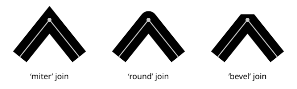
Three types of line joins.
| Name: | stroke-miterlimit |
|---|---|
| Value: | <number> |
| Initial: | 4 |
| Applies to: | shapes and text content elements |
| Inherited: | yes |
| Percentages: | N/A |
| Media: | visual |
| Computed value: | as specified |
| Animation type: | by computed value |
When two line segments meet at a sharp angle and a value of miter has been specified for stroke-linejoin, it is possible for the join to extend far beyond the thickness of the line stroking the path. The stroke-miterlimit imposes a limit on the extent of the line join.
- <number>
- The limit on the extent of a miter line join as a multiple of the stroke-width value. A negative value for stroke-miterlimit is invalid and must be ignored.
Previous versions of the SVG specification also stated that values between 0 and 1 were in error, but this was not well implemented by user agent’s CSS parsers. In practice, any miter join will exceed a miter limit between 0 and 1.
For the miter value, given the angle θ between the segments in user coordinate system, the miter length is calculated by:
miter length = stroke-width / sin(theta / 2)
Historically, the miter length is defined as the distance from the inside stroke edge of the intersecting path segments to the tip of the miter. In practice, this is followed only for straight path segments. The above definition of miter length based on angles depends only on the tangents to the path segments at the join and thus gives consistent results independent of the curvature of the path segments.
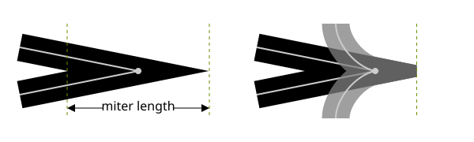
Left: Historical definition of miter length. Right: Two different paths with the same tangents to the path at the point where the path segments join. The behavior of the miter join (fallback to bevel or clipping position) is the same for both paths. It does not depend on the position where the inside stroked edges intersect.
If the miter length divided by the stroke width exceeds the stroke-miterlimit then for the value:
- miter
- the join is converted to a bevel;
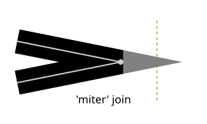
Effect on line join when stroke-miterlimit is exceeded. The olive-green dashed lines shows the position of the miter limit when the stroke-miterlimit value is 3. The gray regions shows what the joins would look like without a miter limit.
See the definition of the line join shape below for a more precise description of the shape a line join will have.
13.5.6. Dashing strokes: the ‘stroke-dasharray’ and ‘stroke-dashoffset’ properties
| Name: | stroke-dasharray |
|---|---|
| Value: | none | <dasharray> |
| Initial: | none |
| Applies to: | shapes and text content elements |
| Inherited: | yes |
| Percentages: | refer to the normalized diagonal of the current SVG viewport (see Units) |
| Media: | visual |
| Computed value: | as comma separated list of absolute lengths or percentages, numbers converted to absolute lengths first, or keyword specified |
| Animation type: | See prose |
where:
<dasharray> = [ [ <length-percentage> | <number> ]+ ]#
The stroke-dasharray property controls the pattern of dashes and gaps used to form the shape of a path’s stroke.
- none
- Indicates that no dashing is used.
- <dasharray>
-
Specifies a dashing pattern to use. A <dasharray> is a list of comma and/or white space separated <number> or <length-percentage> values. A <number> value represents a value in user units. Each value specifies a length along the path for which the stroke is to be painted (a dash) and not painted (a gap). The first value and every second value in the list after it specifies the length of a dash, and every other value specifies the length of a gap between the dashes. If the list has an odd number of values, then it is repeated to yield an even number of values. (Thus, the rendering behavior of stroke-dasharray: 5,3,2 is equivalent to stroke-dasharray: 5,3,2,5,3,2.)
The resulting even-length dashing pattern is repeated along each subpath. The dashing pattern is reset and begins again at the start of each subpath.
If any value in the list is negative, the <dasharray> value is invalid. If all of the values in the list are zero, then the stroke is rendered as a solid line without any dashing.
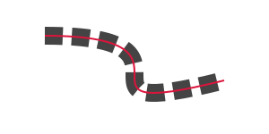
A dashed stroke. The dashing pattern is 20,10. The red line shows the actual path that is stroked.
The ‘pathLength’ attribute on a ‘path’ element affects
stroke-dasharray: each dash and gap length is interpreted relative
to the author’s path length as specified by ‘pathLength’.
stroke-dasharray values are not additive. For interpolation, stroke-dasharray values are combined as follows:
- If either start or end compute to none or are invalid
- start or end are combined using the discrete animation type.
- Otherwise
- repeat both dash patterns of start and end value list until the length of elements in both value lists match. Each item is then combined by computed value.
path {
stroke-dasharray: 20 40 10;
}
path:hover {
transition-property: stroke-dasharray;
transition-duration: 0.5s;
stroke-dasharray: 40 20;
}
stroke-dasharray: 20 40 10 20 40 10;
stroke-dasharray: 40 20 40 20 40 20;
| Name: | stroke-dashoffset |
|---|---|
| Value: | <length-percentage> | <number> |
| Initial: | 0 |
| Applies to: | shapes and text content elements |
| Inherited: | yes |
| Percentages: | refer to the normalized diagonal of the current SVG viewport (see Units) |
| Media: | visual |
| Computed value: | an absolute length or percentage, numbers converted to absolute lengths first |
| Animation type: | by computed value |
The stroke-dashoffset property specifies the distance into the repeated dash pattern to start the stroke dashing at the beginning of the path. If the value is negative, then the effect is the same as dash offset d:
d = s - (abs(stroke-dashoffset) mod s)
where s is the sum of the dash array values.
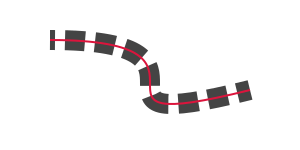
A dashed stroke with a non-zero dash offset. The dashing pattern is 20,10 and the dash offset is 15. The red line shows the actual path that is stroked.
Like stroke-dasharray, stroke-dashoffset is interpreted
relative to the author’s path length as specified by the ‘pathLength’
attribute on a ‘path’ element.
The example below shows how a ‘pathLength’ that is greatly different from the actual path length can be used to control stroke dashing more easily.
<svg xmlns="http://www.w3.org/2000/svg" xmlns:xlink="http://www.w3.org/1999/xlink"
width="300" height="150">
<defs>
<path id="p" d="M -50,0 A 50,50 0 0 0 50,0 A 50,50 0 0 0 -50,0 z"
pathLength="80"/>
<g id="chip" stroke-width="10">
<circle cy="5" r="55" fill="#000" fill-opacity="0.15" stroke="none"/>
<use xlink:href="#p"/>
<use xlink:href="#p" fill="none" stroke="#eee" stroke-width="10"
stroke-dasharray="10 10" stroke-dashoffset="5"/>
<g fill="none" stroke-width="5" stroke-dasharray="0 20" stroke-linecap="round">
<use xlink:href="#p" stroke="#eee" stroke-dashoffset="10"/>
<use xlink:href="#p" stroke-dashoffset="0"/>
</g>
<circle r="40" fill="#000" fill-opacity="0.15"
stroke-width="2" stroke="white"/>
</g>
</defs>
<rect width="100%" height="100%" fill="#063"/>
<use xlink:href="#chip" x="140" y="75" fill="#00c" stroke="#00c"/>
<use xlink:href="#chip" x="160" y="85" fill="#000" stroke="#000"/>
<use xlink:href="#chip" x="170" y="65" fill="#c00" stroke="#c00"/>
</svg>
The four broad white dashes and the eight small circular dashes around each chip are placed relative to an author specified ‘pathLength’ of '80', which makes the desired stroke-dasharray and stroke-dashoffset values easy to compute.
See the definition of dash positions below for a more precise description of positions along a path that dashes will be placed.
13.5.7. Computing the shape of the stroke
| SVG 2 Requirement: | Specify stroke dashing more precisely. |
|---|---|
| Resolution: | SVG 2 shall specify stroke dashing more precisely. |
| Purpose: | To define dash starting point on basic shapes and path segments. |
| Owner: | Cameron (no action) |
The stroke shape of an element is the
shape that is filled by the stroke property. Since ‘text’
elements can be rendered in multiple chunks, each chunk has its own
stroke shape. The following algorithm describes the ideal stroke shape
of a ‘path’, basic shape or individual ‘text’ chunk is,
taking into account the stroking properties above. The ideal stroke shape
described defines a best case implementation, but implementations are given some
leeway to deviate from this description for performance reasons.
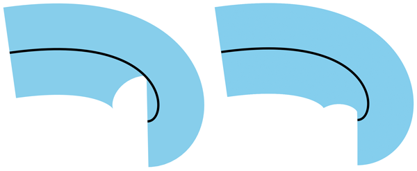
An example of how the shape painted for stroke may differ across platforms.
<svg viewBox="0 0 10 10" xmlns="http://www.w3.org/2000/svg"> <path d="M 1,3 C 8,2 8,6 7,6" stroke-width="4" fill="none" stroke="skyblue"/> <path d="M 1,3 C 8,2 8,6 7,6" stroke-width="0.075" fill="none" stroke="black"/> </svg>
- Let shape be an empty shape.
-
If stroke-width > 0, then:
-
Let scale be a scale factor for the dash pattern. If we are
computing the stroke shape of a ‘
text’ chunk, or if the ‘pathLength’ attribute is not present on the element, then scale is 1. Otherwise, it is determined as follows:- Let length be the user agent’s computed length of the
‘
path’ or equivalent path for a basic shape. - Let authorlength be the value of the ‘pathLength’ attribute on the shape.
- scale is authorlength / length.
- Let length be the user agent’s computed length of the
‘
- Let path be the equivalent path of the element (or the individual
chunk of a ‘
text’ element). -
For each subpath of path:
- Let positions be the dash positions for the subpath.
-
For each pair <start, end> in positions:
- Scale start and end by scale.
- Let dash be the shape that includes, for all distances between start and end along the subpath, all points that lie on the line perpendicular to the subpath at that distance and which are within distance stroke-width of the point on the subpath at that position.
- Set dash to be the union of dash and the starting cap shape for the subpath at position start.
- Set dash to be the union of dash and the ending cap shape for the subpath at position end.
-
Let index and last be the indexes of the
path segments in the subpath at distance start and
end along the subpath.
It does not matter whether any zero length segments are included when choosing index and last.
-
While index < last:
- Set dash to be the union of dash and the line join shape for the subpath at segment index index.
- Set index to index + 1.
- Set shape to be the union of shape and stroke.
-
Let scale be a scale factor for the dash pattern. If we are
computing the stroke shape of a ‘
- Return shape.
The dash positions for a given subpath of
the equivalent path of a ‘path’ or basic shape is a
sequence of pairs of values, which represent the starting and ending distance
along the subpath for each of the dashes that form the subpath’s stroke. It is
determined as follows:
- Let pathlength be the length of the subpath.
- Let dashes be the list of values of stroke-dasharray on the element, converted to user units, repeated if necessary so that it has an even number of elements; if the property has the value none, then the list has a single value 0.
- Let count be the number of values in dashes.
- Let sum be the sum of the values in dashes.
- If sum = 0, then return a sequence with the single pair <0, pathlength>.
- Let positions be an empty sequence.
- Let offset be the value of the stroke-dashoffset property on the element.
- If offset is negative, then set offset to sum − abs(offset).
- Set offset to offset mod sum.
- Let index be the smallest integer such that sum(dashesi, 0 ≤ i ≤ index) ≥ offset.
- Let dashlength be min(sum(dashesi, 0 ≤ i ≤ index) − offset, pathlength).
- If index mod 2 = 0, then append to positions the pair <0, dashlength>.
- Let position be dashlength.
-
While position < pathlength:
- Set index to (index + 1) mod count.
- Let dashlength be min(dashesindex, pathlength − position).
- If index mod 2 = 0, then append to positions the pair <position, position + dashlength>.
- Set position to position + dashlength.
- Return positions.
The starting and ending cap shapes at a given position along a subpath are determined as follows:
- If stroke-linecap is butt, then return an empty shape.
-
Otherwise, if stroke-linecap is round, then:
-
If this is a starting cap, then return a semicircle of diameter stroke-width positioned such that:
- The subpath that the semicircle is relative to is the subpath starting at distance position.
- Its straight edge is parallel to the line perpendicular to the subpath at distance position along it.
- The midpoint of its straight edge is at the point that is along the subpath at distance position.
- The direction from the midpoint of its arc to the midpoint of its straight edge is the same as the direction of the subpath at distance position.
-
Otherwise, this is an ending cap. Return a semicircle of diameter stroke-width positioned such that:
- The subpath that the semicircle is relative to is the subpath ending at distance position.
- Its straight edge is parallel to the line perpendicular to the subpath at distance position along it.
- The midpoint of its straight edge is at the point that is along the subpath at distance position.
- The direction from the midpoint of its straight edge to the midpoint of its arc is the same as the direction of the subpath.
-
If this is a starting cap, then return a semicircle of diameter stroke-width positioned such that:
-
Otherwise, stroke-linecap is square:
-
If this is a starting cap, then return a rectangle with side lengths stroke-width and stroke-width / 2 positioned such that:
- Its longer edges, A and B, are parallel to the line perpendicular to the subpath at distance position along it.
- The midpoint of A is at start.
- The direction from the midpoint of B to the midpoint of A is the same as the direction of the subpath at distance position along it.
-
Otherwise, this is an ending cap. Return a rectangle with side lengths stroke-width and stroke-width / 2 positioned such that:
- Its longer edges, A and B, are parallel to the line perpendicular to the subpath at distance position along it.
- The midpoint of A is at end.
- The direction from the midpoint of A to the midpoint of B is the same as the direction of the subpath at distance position along it.
-
If this is a starting cap, then return a rectangle with side lengths stroke-width and stroke-width / 2 positioned such that:
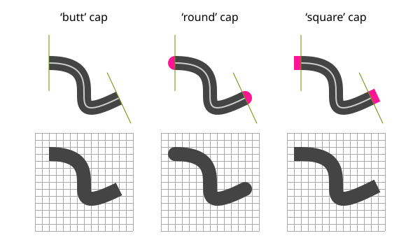
The three different stroke-linecap values used on paths with a single, non-zero length subpath. The white line is the path itself and the thick gray area is the stroke. On the top row, the green lines indicate the perpendicular to the tangent at the path endpoints and the pink areas are the caps. The bottom row shows the stroke without the perpendicular and cap highlighting.
The line join shape for a given segment of a subpath is determined as follows:
- Let P be the point at the end of the segment.
-
If the unit tangent vector at the end of the segment and the unit tangent vector
at the start of the following segment are equal, then return an empty shape.
This means for example that 'M 100,100 h 100 h 100' would not produce a line join shape between the two straight line segment, but 'M 100,100 h 100 h -100' would.
- Let A be the line parallel to the tangent at the end of the segment.
- Let B be the line parallel to the tangent at the start of the following segment.
- Let Aleft and Aright be lines parallel to A at a distance of stroke-width / 2 to the left and to the right of A relative to the subpath direction, respectively.
- Let Bleft and Bright be lines parallel to B at a distance of stroke-width / 2 to the left and to the right of B, relative to the subpath direction, respectively.
-
Let P1, P2 and
P3 be points determined as follows:
- If the smaller angle between A and B is on the right of these lines, considering the direction of the subpath, then P1 and P2 are the points on Aleft and Bleft closest to P, and P3 is the intersection of Aleft and Bleft.
- Otherwise, P1 and P2 are the points on Aright and Bright closest to P, and P3 is the intersection of Aright and Bright.
- Let bevel be the triangle formed from the three points P, P1 and P2.
- If stroke-linejoin is round, then return the union of bevel and a circular sector of diameter stroke-width, centered on P, and which has P1 and P2 as the two endpoints of the arc.
- If stroke-linejoin is miter then the line join region is the union of bevel and the triangle formed from the three points P1, P2 and P3.
- Let θ be the angle between A and B. If 1 / sin(θ / 2) ≤ stroke-miterlimit, then return the line join region.
- Return bevel.
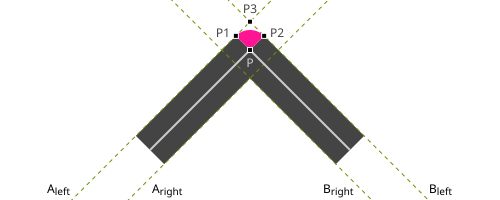
Construction of a round line join shape, shown in pink. The white line is the original path, which has two segments that come to a point, and the gray region is the stroke.
13.6. Vector effects
This chapter explains vector-effect related to Painting. Please refer to this for the perspective of vector-effect.
- non-scaling-stroke
- Modifies the way an object is stroked. Normally stroking involves calculating stroke outline of the shape’s path in current user coordinate system and filling that outline with the stroke paint (color or gradient). With the non-scaling-stroke vector effect, stroke outline shall be calculated in the "host" coordinate space instead of user coordinate system. More precisely: the viewport coordinate system of the furthest ancestral SVG viewport. The stroke outline is calculated in the following manner: first, the shape’s path is transformed into the host coordinate space. Stroke outline is calculated in the host coordinate space. The resulting outline is transformed back to the user coordinate system. (Stroke outline is always filled with stroke paint in the current user coordinate system). The resulting visual effect of this modification is that stroke width is not dependent on the transformations of the element (including non-uniform scaling and shear transformations) and zoom level.
13.7. Markers
| SVG 2 Requirement: | Improve markers. |
|---|---|
| Resolution: | We will improve markers for SVG 2. |
| Purpose: | To solve the common problems authors have with SVG markers. |
| Owner: | Cameron (ACTION-3286) |
A marker is a graphical object that is painted at particular positions along any shape element.
The marker-start and marker-end properties can be used to place markers at the first and last vertex of a shape, and the marker-mid property can be used to place markers at all other vertices (aside from the first and last). The marker-start and marker-end can be used for example to add arrowheads to paths. Markers placed using these properties are known as vertex markers.
In SVG 2, vertex markers are the only kind of markers available. Other specifications will add new types of markers.
The graphics for a marker are defined by a ‘marker’ element.
The marker-start, marker-end and marker-mid properties,
together known as the marker properties, reference
‘marker’ elements.
Markers can be animated, and as with ‘use’ elements, the animated
effects will show on all current uses of the markers within the document.
Markers on a given element are painted in the following order, from bottom to top:
- any marker specified by marker-start
- the marker-mid markers, in order of their position along the path
- any marker specified by marker-end
13.7.1. The ‘marker’ element
marker’- Categories:
- Container element, never-rendered element
- Content model:
-
Any number of the following elements, in any order:
a, clipPath, filter,foreignObject,image,marker, mask,script,style,switch,text,view - Attributes:
- DOM Interfaces:
The ‘marker’ element defines the graphics that are to
be used for drawing markers on a shape.
Attribute definitions:
-
Name Value Initial value Animatable markerUnitsstrokeWidth | userSpaceOnUse strokeWidth yes -
The ‘
markerUnits’ attribute defines the coordinate system for attributes ‘markerWidth’, ‘markerHeight’ and the contents of the ‘marker’. Values have the following meanings:- strokeWidth
- ‘
markerWidth’, ‘markerHeight’ and the contents of the ‘marker’ have values in a coordinate system which has a single unit equal to the size in user units of the painted stroke width of the element referencing the marker. - userSpaceOnUse
- ‘
markerWidth’, ‘markerHeight’ and the contents of the ‘marker’ have values in the current user coordinate system in place for the element referencing the marker.
-
When ‘
markerUnits’ has the value strokeWidth, the size of the marker is relative to the stroke-width after it has had any transforms applied that affect the width of the stroke in the user coordinate system for the stroke. This means that, for example, the vector-effect attribute with a value of non-scaling-stroke will result in the markers also being non scaling.Name Value Initial value Animatable markerWidth,markerHeight<length-percentage> | <number> 3 yes -
The ‘
markerWidth’ and ‘markerHeight’ attributes represent the size of the SVG viewport into which the marker is to be fitted according to the ‘viewBox’ and ‘preserveAspectRatio’ attributes. A value of zero for either attribute results in nothing being rendered for the marker. A negative value for either attribute is an error (see Error processing). -
Name Value Initial value Animatable refX<length-percentage> | <number> | left | center | right 0 yes refY<length-percentage> | <number> | top | center | bottom 0 yes -
New in SVG 2: geometric keywords (matches use in ‘
symbol’).We will add top/center/bottom, left/center/right keywords to refX/refY on marker/symbol. Resolved at London F2F. Values inspired by 'background-position'.
The ‘
refX’ and ‘refY’ attributes define the reference point of the marker, which is to be placed exactly at the marker’s position on the shape. Lengths and numbers must be interpreted as being in the coordinate system of the marker contents, after application of the ‘viewBox’ and ‘preserveAspectRatio’ attributes. Percentage values must be interpreted as being a percentage of the ‘viewBox’ width for ‘refX’ or a percentage of the ‘viewBox’ height for ‘refY’.The keyword values must evaluate to the following percentages:
Mapping of refX and refY keywords to percentages. keyword percentage equivalent left 0% center 50% right 100% top 0% bottom 100% -
Name Value Initial value Animatable orientauto | auto-start-reverse | <angle> | <number> 0 yes (non-additive) -
The ‘
orient’ attribute indicates how the marker is rotated when it is placed at its position on the shape. Values have the following meanings:- 'auto'
-
The marker is oriented such that its positive x-axis is pointing in a direction relative to the path at the position the marker is placed (See Rendering Markers).
- 'auto-start-reverse'
-
If placed by marker-start, the marker is oriented 180° different from the orientation that would be used if 'auto' where specified. For all other markers, 'auto-start-reverse' means the same as 'auto'.
This allows a single arrowhead marker to be defined that can be used for both the start and end of a path, i.e. which points outwards from both ends.
- <angle>
- <number>
-
The marker is oriented such that the specified angle is that measured between the shape’s positive x-axis and the marker’s positive x-axis. A <number> value specifies an angle in degrees.
For example, if a value of '45' is given, then the marker’s positive x-axis would be pointing down and right in the shape’s coordinate system.
13.7.2. Vertex markers: the ‘marker-start’, ‘marker-mid’ and ‘marker-end’ properties
| Name: | marker-start, marker-mid, marker-end |
|---|---|
| Value: | none | <marker-ref> |
| Initial: | none |
| Applies to: | shapes |
| Inherited: | yes |
| Percentages: | N/A |
| Media: | visual |
| Computed value: | as specified, but with <url> values (that are part of a <marker-ref>) made absolute |
| Animation type: | discrete |
where:
<marker-ref> = <url>
The marker-start and marker-end properties are used to specify the marker that will be drawn at the first and last vertices of the given shape, respectively. marker-mid is used to specify the marker that will be drawn at all other vertices (i.e., every vertex except the first and last). Possible values for marker-start, marker-mid and marker-end are:
- none
- Indicates that no marker symbol will be drawn at the given vertex or vertices.
- <marker-ref>
- Indicates that the ‘
marker’ element referenced by the <marker-ref> value will be drawn at the given vertex or vertices. If the reference is not valid, then no marker will be drawn at the given vertex or vertices.
For all shapes, the path that must be used when calculating marker positions is the equivalent path.
For all shape elements, except ‘polyline’ and ‘path’,
the last vertex is the same as the first
vertex. In this case, if the value of marker-start and marker-end
are both not none, then two markers
will be rendered on that final vertex.
For ‘path’ elements, for each closed subpath, the last vertex is
the same as the first vertex. marker-start must only be rendered on
the first vertex of the path data. marker-end must only be
rendered on the final vertex of the path data.
marker-mid must be rendered on every vertex other than the first
vertex of the path data and the last vertex of the path data.
<svg xmlns="http://www.w3.org/2000/svg" viewBox="0 0 100 30">
<defs>
<marker id="m1" viewBox="0 0 10 10" refX="5" refY="5"
markerWidth="8" markerHeight="8">
<circle cx="5" cy="5" r="5" fill="green"/>
</marker>
<marker id="m2" viewBox="0 0 10 10" refX="5" refY="5"
markerWidth="6.5" markerHeight="6.5">
<circle cx="5" cy="5" r="5" fill="skyblue" opacity="0.9"/>
</marker>
<marker id="m3" viewBox="0 0 10 10" refX="5" refY="5"
markerWidth="5" markerHeight="5">
<circle cx="5" cy="5" r="5" fill="maroon" opacity="0.85"/>
</marker>
</defs>
<path d="M10,10 h10 v10 z m20,0 h10 v10 z m20,0 h10 v10 z"
fill="none" stroke="black"
marker-start="url(#m1)"
marker-mid="url(#m2)"
marker-end="url(#m3)"
/>
</svg>
For path data containing closed subpaths, two markers are drawn at the first/last vertex of each closed subpath. For the leftmost closed subpath, a marker-mid is drawn over the marker-start. For the middle closed subpath, two marker-mid are drawn on top of one another. For the rightmost closed subpath, marker-end is drawn over marker-mid.
Note that marker-start and marker-end refer to the first and last vertex of the entire path, not each subpath.
The following example shows a triangular marker symbol used as a vertex marker to form an arrowhead at the end of two paths.
<svg xmlns="http://www.w3.org/2000/svg"
width="275" height="200" viewBox="0 0 275 200">
<defs>
<marker id="Triangle" viewBox="0 0 10 10" refX="1" refY="5"
markerUnits="strokeWidth" markerWidth="4" markerHeight="3"
orient="auto">
<path d="M 0 0 L 10 5 L 0 10 z" fill="context-stroke"/>
</marker>
</defs>
<g fill="none" stroke-width="10" marker-end="url(#Triangle)">
<path stroke="crimson" d="M 100,75 C 125,50 150,50 175,75"/>
<path stroke="olivedrab" d="M 175,125 C 150,150 125,150 100,125"/>
</g>
</svg>
The triangle is placed at the end of the path and
oriented automatically so that it points in the right direction.
The use of context-stroke ensures
the fill of the triangle matches the stroke of each ‘path’.
13.7.3. Marker shorthand: the ‘marker’ property
| Name: | marker |
|---|---|
| Value: | none | <marker-ref> |
| Initial: | not defined for shorthand properties |
| Applies to: | shapes |
| Inherited: | yes |
| Percentages: | N/A |
| Media: | visual |
| Computed value: | see individual properties |
| Animation type: | discrete |
The marker property sets values for the marker-start, marker-mid and marker-end properties. The value of the marker is used directly for all three of the corresponding longhand properties.
13.7.4. Rendering markers
When orienting a marker automatically, due to specifying ‘orient’
as 'auto', the following rules are used:
- If the vertex is the start or end of an open subpath, then the marker is oriented in the path direction.
- Otherwise, the marker is oriented in a direction half way between the direction at the end of the preceding segment and the direction at the start of the following segment.
For each marker that is drawn, a temporary new user coordinate system is established so that the marker will be positioned and sized correctly, as follows:
- The axes of the temporary new user coordinate system are aligned
according to the ‘
orient’ attribute on the ‘marker’ element. - A temporary new coordinate system is established by attribute
‘
markerUnits’. If ‘markerUnits’ equals 'strokeWidth', then the temporary new user coordinate system is the result of scaling the current user coordinate system by the current value of property stroke-width. If ‘markerUnits’ equals 'userSpaceOnUse', then no extra scale transformation is applied. - An additional set of transformations might occur if the
‘
marker’ element includes a ‘viewBox’ attribute, in which case additional transformations are set up to produce the necessary result due to attributes ‘viewBox’ and ‘preserveAspectRatio’. - If the overflow property on the ‘
marker’ element indicates that the marker needs to be clipped to its SVG viewport, then an implicit clipping path is established at the bounds of the SVG viewport.
Note that the user agent style sheet sets
the overflow property for ‘marker’ elements to
hidden, which causes a rectangular clipping
path to be created at the bounds of marker’s SVG viewport by default.
Properties do not inherit from the element referencing the ‘marker’
into the contents of the marker. However, by using the
context-stroke value for the fill or
stroke on elements in its definition, a single marker can be designed
to match the style of the element referencing the marker.
Markers cannot be interacted with. Events such as click or mouseover,
for example, are not dispatched to a ‘marker’ or its children when
the mouse is clicked or moved over a rendered marker.
Markers are not rendered directly
and must be referenced by one of the marker properties
to be rendered.
The display value for the ‘marker’ element
must always be set to none
by the user agent style sheet,
and this declaration must have importance over any other CSS rule or presentation attribute.
‘marker’ elements are available for referencing even when the
display property on the ‘marker’ element or any of its
ancestors is set to none.
The rendering effect of a marker is as if the contents of the
referenced ‘marker’ element were deeply cloned
into a separate non-exposed DOM tree for each instance of the
marker. Because the cloned DOM tree is non-exposed, the SVG DOM
does not show the cloned instance of the marker.
The conceptual deep cloning of the referenced
‘marker’ element into a non-exposed DOM tree also
copies any property values resulting from
the CSS cascade
([CSS2], chapter 6) and
property inheritance on the referenced element and its contents. CSS
selectors can be applied to the original (i.e., referenced) elements
because they are part of the formal document structure. CSS selectors
cannot be applied to the (conceptually) cloned DOM tree because its
contents are not part of the formal document structure.
For illustrative purposes, we’ll repeat the marker example shown earlier:
<?xml version="1.0" standalone="no"?>
<svg width="4in" height="2in"
viewBox="0 0 4000 2000"
xmlns="http://www.w3.org/2000/svg">
<defs>
<marker id="Triangle"
viewBox="0 0 10 10" refX="0" refY="5"
markerUnits="strokeWidth"
markerWidth="4" markerHeight="3"
orient="auto">
<path d="M 0 0 L 10 5 L 0 10 z" />
</marker>
</defs>
<rect x="10" y="10" width="3980" height="1980"
fill="none" stroke="blue" stroke-width="10" />
<desc>Placing an arrowhead at the end of a path.
</desc>
<path d="M 1000 750 L 2000 750 L 2500 1250"
fill="none" stroke="black" stroke-width="100"
marker-end="url(#Triangle)" />
</svg>
The rendering effect of the above file will be visually identical to the following:
<?xml version="1.0" standalone="no"?>
<svg width="4in" height="2in"
viewBox="0 0 4000 2000"
xmlns="http://www.w3.org/2000/svg">
<desc>File which produces the same effect
as the marker example file, but without
using markers.
</desc>
<rect x="10" y="10" width="3980" height="1980"
fill="none" stroke="blue" stroke-width="10" />
<!-- The path draws as before, but without the marker properties -->
<path d="M 1000 750 L 2000 750 L 2500 1250"
fill="none" stroke="black" stroke-width="100" />
<!-- The following logic simulates drawing a marker
at final vertex of the path. -->
<!-- First off, move the origin of the user coordinate system
so that the origin is now aligned with the end point of the path. -->
<g transform="translate(2500,1250)" >
<!-- Rotate the coordinate system 45 degrees because
the marker specified orient="auto" and the final segment
of the path is going in the direction of 45 degrees. -->
<g transform="rotate(45)" >
<!-- Scale the coordinate system to match the coordinate system
indicated by the 'markerUnits' attributes, which in this case has
a value of 'strokeWidth'. Therefore, scale the coordinate system
by the current value of the 'stroke-width' property, which is 100. -->
<g transform="scale(100)" >
<!-- Translate the coordinate system by
(-refX*viewBoxToMarkerUnitsScaleX, -refY*viewBoxToMarkerUnitsScaleY)
in order that (refX,refY) within the marker will align with the vertex.
In this case, we use the default value for preserveAspectRatio
('xMidYMid meet'), which means find a uniform scale factor
(i.e., viewBoxToMarkerUnitsScaleX=viewBoxToMarkerUnitsScaleY)
such that the viewBox fits entirely within the SVG viewport ('meet') and
is center-aligned ('xMidYMid'). In this case, the uniform scale factor
is markerHeight/viewBoxHeight=3/10=.3. Therefore, translate by
(-refX*.3,-refY*.3)=(0*.3,-5*.3)=(0,-1.5). -->
<g transform="translate(0,-1.5)" >
<!-- There is an implicit clipping path because the user agent style
sheet says that the 'overflow' property for markers has the value
'hidden'. To achieve this, create a clipping path at the bounds
of the SVG viewport. Note that in this case the SVG viewport extends
0.5 units to the left and right of the viewBox due to
a uniform scale factor, different ratios for markerWidth/viewBoxWidth
and markerHeight/viewBoxHeight, and 'xMidYMid' alignment -->
<clipPath id="cp1" >
<rect x="-0.5" y="0" width="4" height="3" />
</clipPath>
<g clip-path="url(#cp1)" >
<!-- Scale the coordinate system by the uniform scale factor
markerHeight/viewBoxHeight=3/10=.3 to set the coordinate
system to viewBox units. -->
<g transform="scale(.3)" >
<!-- This 'g' element carries all property values that result from
cascading and inheritance of properties on the original 'marker' element.
In this example, neither fill nor stroke was specified on the 'marker'
element or any ancestors of the 'marker', so the initial values of
"black" and "none" are used, respectively. -->
<g fill="black" stroke="none" >
<!-- Expand out the contents of the 'marker' element. -->
<path d="M 0 0 L 10 5 L 0 10 z" />
</g>
</g>
</g>
</g>
</g>
</g>
</g>
</svg>

13.8. Controlling paint operation order: the ‘paint-order’ property
| SVG 2 Requirement: | Support control of the order of filling, stroke and painting markers on shapes. |
|---|---|
| Resolution: | SVG 2 will adopt the ‘paint-order’ property proposal, though possibly with a different name. The property name is now resolved, see 15 Nov 2013 minutes. |
| Purpose: | To address the common desire to paint strokes below fills without having to duplicate an element. |
| Owner: | Cameron (ACTION-3285) |
| Name: | paint-order |
|---|---|
| Value: | normal | [ fill || stroke || markers ] |
| Initial: | normal |
| Applies to: | shapes and text content elements |
| Inherited: | yes |
| Percentages: | N/A |
| Media: | visual |
| Computed value: | as specified |
| Animation type: | discrete |
New in SVG 2. Added primarily to allow painting the stroke
of text below its fill without needing to duplicate the ‘text’ element.
The paint-order property controls the order that the three paint operations that shapes and text are rendered with: their fill, their stroke and any markers they might have.
When the value of this property is normal, the element is painted with the standard order of painting operations: the fill is painted first, then its stroke and finally its markers.
When any of the other keywords are used, the order of the paint operations for painting the element is as given, from left to right. If any of the three keywords are omitted, they are painted last, in the order they would be painted with paint-order: normal.
This means that, for example, paint-order: stroke has the same rendering behavior as paint-order: stroke fill markers.
The following example shows how the paint-order property can be used to render stroked text in a more aesthetically pleasing manner.
<svg xmlns="http://www.w3.org/2000/svg"
width="600" height="150" viewBox="0 0 600 150">
<style>
text {
font: 80px bold sans-serif; stroke-linejoin: round;
text-anchor: middle; fill: peachpuff; stroke: crimson;
}
</style>
<text x="150" y="100" style="stroke-width: 6px;">pizazz</text>
<text x="450" y="100" style="stroke-width: 12px; paint-order: stroke;">pizazz</text>
</svg>
Text painted with its stroke below the fill.
13.9. Color space for interpolation: the ‘color-interpolation’ property
| Name: | color-interpolation |
|---|---|
| Value: | auto | sRGB | linearRGB |
| Initial: | sRGB |
| Applies to: | container elements, graphics elements,
gradient elements, ‘use’ and ‘animate’
|
| Inherited: | yes |
| Percentages: | N/A |
| Media: | visual |
| Computed value: | as specified |
| Animation type: | discrete |
The SVG user agent performs color interpolations and compositing at various points as it processes SVG content. The color-interpolation property controls which color space is used for the following graphics operations:
- interpolating between gradient stops,
- interpolating color when performing color animations with ‘animate’,
- and compositing and blending of graphics elements into the current background.
For filter effects, the color-interpolation-filters property controls which color space is used. [filter-effects-1]
The color-interpolation property chooses between color operations occurring in the sRGB color space or in a (light energy linear) linearized RGB color space. Having chosen the appropriate color space, component-wise linear interpolation is used. Values for color-interpolation have the following meanings:
- auto
- Indicates that the user agent can choose either the sRGB or linearRGB spaces for color interpolation. This option indicates that the author doesn’t require that color interpolation occur in a particular color space.
- sRGB
- Indicates that color interpolation occurs in the sRGB color space.
- linearRGB
- Indicates that color interpolation occurs in the linearized RGB color space as described below.
The conversion formulas between the sRGB color space (i.e., nonlinear with 2.2 gamma curve) and the linearized RGB color space (i.e., color values expressed as sRGB tristimulus values without a gamma curve) can be found in the sRGB specification [SRGB]. For illustrative purposes, the following formula shows the conversion from sRGB to linearized RGB, where Csrgb is one of the three sRGB color components, Clinear is the corresponding linearized RGB color component, and all color values are between 0 and 1:
if C_srgb <= 0.04045 C_linear = C_srgb / 12.92 else if c_srgb > 0.04045 C_linear = ((C_srgb + 0.055) / 1.055) ^ 2.4
Out-of-range color values, if supported by the user agent, also are converted using the above formulas.
When a child element is blended into a background, the value of the color-interpolation property on the child determines the type of blending, not the value of the color-interpolation on the parent. For gradients which make use of the ‘href’ attribute to reference another gradient, the gradient uses the color-interpolation property value from the gradient element which is directly referenced by the fill or stroke property. When animating colors, color interpolation is performed according to the value of the color-interpolation property on the element being animated.
13.10. Rendering hints
13.10.1. The ‘shape-rendering’ property
| Name: | shape-rendering |
|---|---|
| Value: | auto | optimizeSpeed | crispEdges | geometricPrecision |
| Initial: | auto |
| Applies to: | shapes |
| Inherited: | yes |
| Percentages: | N/A |
| Media: | visual |
| Computed value: | as specified |
| Animation type: | discrete |
The shape-rendering property provides a hint to the
implementation about what tradeoffs to make as it renders vector graphics
elements such as ‘path’ elements and basic shapes
such as circles and rectangles. Values have the following meanings:
- auto
- Indicates that the user agent shall make appropriate tradeoffs to balance speed, crisp edges and geometric precision, but with geometric precision given more importance than speed and crisp edges.
- optimizeSpeed
- Indicates that the user agent shall emphasize rendering speed over geometric precision and crisp edges. This option will sometimes cause the user agent to turn off shape anti-aliasing.
- crispEdges
- Indicates that the user agent shall attempt to emphasize the contrast between clean edges of artwork over rendering speed and geometric precision. To achieve crisp edges, the user agent might turn off anti-aliasing for all lines and curves or possibly just for straight lines which are close to vertical or horizontal. Also, the user agent might adjust line positions and line widths to align edges with device pixels.
- geometricPrecision
- Indicates that the user agent shall emphasize geometric precision over speed and crisp edges.
13.10.2. The ‘text-rendering’ property
| Name: | text-rendering |
|---|---|
| Value: | auto | optimizeSpeed | optimizeLegibility | geometricPrecision |
| Initial: | auto |
| Applies to: | ‘text’
|
| Inherited: | yes |
| Percentages: | N/A |
| Media: | visual |
| Computed value: | as specified |
| Animation type: | discrete |
The text-rendering property provides a hint to the implementation about what tradeoffs to make as it renders text. Values have the following meanings:
- auto
- Indicates that the user agent shall make appropriate tradeoffs to balance speed, legibility and geometric precision, but with legibility given more importance than speed and geometric precision.
- optimizeSpeed
- Indicates that the user agent shall emphasize rendering speed over legibility and geometric precision. This option will sometimes cause the user agent to turn off text anti-aliasing.
- optimizeLegibility
- Indicates that the user agent shall emphasize legibility over rendering speed and geometric precision. The user agent will often choose whether to apply anti-aliasing techniques, built-in font hinting or both to produce the most legible text.
- geometricPrecision
- Indicates that the user agent shall emphasize geometric precision over legibility and rendering speed. This option will usually cause the user agent to suspend the use of hinting so that glyph outlines are drawn with comparable geometric precision to the rendering of path data.
13.10.3. The ‘image-rendering’ property
| Name: | image-rendering |
|---|---|
| Value: | auto | optimizeQuality | optimizeSpeed |
| Initial: | auto |
| Applies to: | images |
| Inherited: | yes |
| Percentages: | N/A |
| Media: | visual |
| Computed value: | as specified |
| Animation type: | discrete |
The CSS Image Values and Replacement Content Module Level 4 may in the future redefine this property. In particular it should allow the choice between smoothing and keeping a pixelated look when upscaling.
The image-rendering property provides a hint to the implementation about how to make speed vs. quality tradeoffs as it performs image processing. Values have the following meanings:
- auto
- Indicates that the user agent shall make appropriate tradeoffs to balance speed and quality, but quality shall be given more importance than speed. The user agent shall employ a resampling algorithm at least as good as nearest neighbor resampling, but bilinear resampling is strongly preferred. For conforming high-quality SVG viewers, the user agent shall employ a resampling algorithm at least as good as bilinear resampling.
- optimizeQuality
- Indicates that the user agent shall emphasize quality over rendering speed. The user agent shall employ a resampling algorithm at least as good as bilinear resampling.
- optimizeSpeed
- Indicates that the user agent shall emphasize rendering speed over quality. The user agent should use a resampling algorithm which achieves the goal of fast rendering, with the requirement that the resampling algorithm shall be at least as good as nearest neighbor resampling. If performance goals can be achieved with higher quality algorithms, then the user agent should use the higher quality algorithms instead of nearest neighbor resampling.
In all cases, resampling must be done in a truecolor (e.g., 24-bit) color space even if the original data and/or the target device is indexed color. High quality SVG viewers should perform image resampling using a linear color space.
13.11. The effect of the ‘will-change’ property
See the CSS Will Change Module Level 1 specification for the definition of will-change.
The will-change property is used to provide a hint to the user agent as to the types of changes that will be made to content, giving the user agent a better chance at performing rendering optimizations for a given element.
The will-change property applies to all SVG graphics elements, however since SVG elements do not support scrolling, the scroll-position value will have no effect on them.
The following example demonstrates how will-change can be used to forewarn the user agent that an element will have its transform property changed, with the potential result of the user agent rendering the element into its own GPU layer so that the scripted transform changes appear smooth.
<svg xmlns="http://www.w3.org/2000/svg">
<style>
#background { fill: lemonchiffon; }
#star {
fill: cornflowerblue;
stroke: navy; stroke-width: 5px; stroke-linejoin: round;
paint-order: stroke fill;
will-change: transform;
}
text { font: 24px sans-serif; user-select: none; }
</style>
<g onmousemove="drag(evt.clientX, evt.clientY);"
onmouseup="dragging = false;">
<rect id="background" width="100%" height="100%"/>
<text x="10" y="30">Drag the star!</text>
<path id="star" transform="translate(200,150)"
d="M 0.00,-40.00 -11.76,-16.18 -38.04,-12.36 -19.02,6.18 -23.51,32.36
0.00,20.00 23.51,32.36 19.02,6.18 38.04,-12.36 11.76,-16.18 z"
onmousedown="dragging = true;"/>
</g>
<script>
var dragging = false;
var star = document.getElementById("star");
function drag(x, y) {
if (dragging) {
star.setAttribute("transform", "translate(" + x + "," + y + ")");
}
}
</script>
</svg>
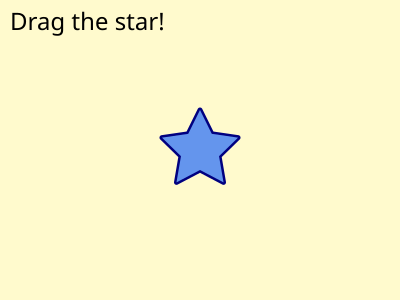
In a user agent that supports will-change on SVG elements, the star might be rendered into a layer so that it can be composited quickly when it is dragged around the canvas. View interactive SVG document.

The will-change property replaces the ‘buffered-rendering’ property defined in SVG Tiny 1.2.
13.12. DOM interfaces
13.12.1. Interface SVGMarkerElement
An SVGMarkerElement object represents a ‘marker’
element in the DOM.
[Exposed =Window ]interface :SVGMarkerElement SVGElement { // Marker Unit Typesconst unsigned short SVG_MARKERUNITS_UNKNOWN = 0;const unsigned short SVG_MARKERUNITS_USERSPACEONUSE = 1;const unsigned short SVG_MARKERUNITS_STROKEWIDTH = 2; // Marker Orientation Typesconst unsigned short SVG_MARKER_ORIENT_UNKNOWN = 0;const unsigned short SVG_MARKER_ORIENT_AUTO = 1;const unsigned short SVG_MARKER_ORIENT_ANGLE = 2;const unsigned short SVG_MARKER_ORIENT_AUTO_START_REVERSE = 3; [SameObject ]readonly attribute SVGAnimatedLength refX ; [SameObject ]readonly attribute SVGAnimatedLength refY ; [SameObject ]readonly attribute SVGAnimatedEnumeration markerUnits ; [SameObject ]readonly attribute SVGAnimatedLength markerWidth ; [SameObject ]readonly attribute SVGAnimatedLength markerHeight ; [SameObject ]readonly attribute SVGAnimatedEnumeration orientType ; [SameObject ]readonly attribute SVGAnimatedAngle orientAngle ;attribute DOMString orient ;undefined setOrientToAuto ();undefined setOrientToAngle (SVGAngle ); };angle SVGMarkerElement includes SVGFitToViewBox ;
The numeric marker unit type constants defined on SVGMarkerElement
are used to represent the keyword values that the ‘markerUnits’
attribute can take. Their meanings are as follows:
| Constant | Meaning |
|---|---|
| The userSpaceOnUse keyword. |
| The strokeWidth keyword. |
| Some other value. |
The numeric marker orientation type constants defined on SVGMarkerElement
are used to represent the types of values that the ‘orient’
attribute can take. Their meanings are as follows:
| Constant | Meaning |
|---|---|
| The auto keyword. |
| The auto-start-reverse keyword. |
| An <angle> or <number> value indicating the orientation angle. |
| Some other value. |
The markerUnitsmarkerUnits’ content attribute. The
numeric type values for ‘markerUnits’ are as
described above in the numeric marker unit type constant table.
The orientTypeorientAngleorientorient’ content attribute.
The numeric type values for ‘orient’ are as follows:
| Value | Numeric type value |
|---|---|
| auto | SVG_MARKER_ORIENT_AUTO
|
| auto-start-reverse | SVG_MARKER_ORIENT_AUTO_START_REVERSE
|
| <angle> | <number> | SVG_MARKER_ORIENT_ANGLE
|
The refXrefYmarkerWidthmarkerHeightrefX’, ‘refY’, ‘markerWidth’
and ‘markerHeight’ content attributes, respectively.
The setOrientToAutoorient’ attribute
to 'auto'. When setOrientToAuto() is
called, the ‘orient’ attribute is simply set to 'auto'.
The setOrientToAngleorient’ attribute
to a specific angle value. When setOrientToAngle(angle) is
called, the ‘orient’ attribute is reserialized using
angle as the value.
14. Paint Servers: Gradients and Patterns
14.1. Introduction
This section covers Paint Servers, a method which allows the fill or stroke of an object to be defined by a resource found elsewhere. It allows resources to be reused throughout a document. See the section Painting: Filling and Stroking for a general discussion of filling and stroking objects.
SVG defines several types of paint servers:
| SVG 2 Requirement: | Arbitrary fills for shapes. |
|---|---|
| Resolution: | SVG 2 shall support filling and stroking from arbitrary elements. |
| Purpose: | To allow for example videos or images to be used as a fill source. |
| Owner: | Alex? (no action) |

Two types of paint servers. From left to right: A linear gradient. A pattern.
Paint servers are used by including a URL reference in a fill or stroke property (i.e. fill="url(#MyLightPurple)").
properties inherit into a paint-server element from its ancestors; properties do not inherit from the element referencing the paint server element.
Paint-server elements are never rendered directly; their only usage is as something that can be referenced using the fill and stroke properties. The display value for these elements must always be set to none by the user agent style sheet, and this declaration must have importance over any other CSS rule or presentation attribute. Paint-server elements are available for referencing even when the display property on the paint-server element or any of its ancestors is set to none.
14.1.1. Using paint servers as templates
Most paint server elements accept an ‘href’ attribute, which can be used to define a compatible paint server element as a template. Attributes defined for the template element are used instead of the initial value if corresponding attributes are not specified on the current element. Furthermore, if the current element does not have any child content other than descriptive elements, than the child content of the template element is cloned to replace it.
The exclusion of descriptive content is new in SVG 2 for ‘pattern’,
consistent with the behavior of gradients,
and with changes to make descriptive content valid for any SVG element.
Also new: template cross-references may be to external file resources (different chapters in SVG 1.1 had inconsistent guidance on this point), and the "inheritance" of child elements is represented through a shadow tree.
Templating can be indirect to an arbitrary level (subject to security limits on external file resources, which can make a reference invalid). Thus, if the referenced template element does not have relevant child content or does not define the specified attribute, then the attribute value or cloned content is derived from another element referenced by the template’s own ‘href’ attribute.
The description of each ‘href’ attribute in this chapter defines the limits of the templating process, as follows:
- What type of element is a valid target for the reference
- Which attributes are duplicated from the template
If any of the specified attributes are not defined on the current element, or if the current element has no child elements other than descriptive elements, the user agent must process the URL to identify the referenced resource. If the URL reference is not invalid, then the URL’s target element is used as the template element, as follows:
-
For any of the specified attributes not defined on the current element, the user agent must determine the value of the attribute for the template element and use it as the value for the current element. The template value is derived from recursive cross-references if required. The initial value for the attribute is only substituted after all valid URL references are exhausted.
-
If the current element has no child elements other than descriptive elements, the user agent must generate a shadow tree for this element, which must behave equivalently to a use-element shadow tree, except that the host is the current paint server element. The source elements in the referenced document subtree for the element instances cloned into the shadow tree are:
- the child content of the template element, if it has child elements other than descriptive elements,
- the source elements that are used, or would be used, to generate the template element’s own shadow tree, otherwise.
When a paint-server element has a shadow tree, the element instances in that tree must be used in rendering the paint server effect, as if they were the paint server element’s own children.
The use-element shadow tree model for templating allows cloned content to inherit different styles than the original. This behavior is newly defined in SVG 2; SVG 1.1 did not define how styles applied to inherited paint server content.
14.2. Gradients
Gradients consist of smooth color transitions between points on a drawing surface. SVG provides for two types of gradients:
Once a gradient is defined, a graphics element can be filled or stroked with the gradient by setting the fill or stroke properties to reference the gradient.
Color transitions for linear and radial gradients are defined by a series of color stops along a gradient vector. A gradient normal defines how the colors in a vector are painted to the surface. For a linear gradient, a normal is a line perpendicular to the vector. For a radial gradient, a normal is a circle intersecting the vector at a right angle. Each gradient normal is painted with one color determined by the vector.

Linear and radial gradients with the gradient vector indicated. The vector consists of three stops shown by small circles. One gradient normal is shown for each gradient.
For linear and radial gradients, the color value between two stops along the gradient vector is the linear interpolation, per channel, of the color for each stop, weighted by the distance from each stop.
$V = C0.rgba + (C1.rgba - C0.rgba) * ((D - C0.offset) / (C1.offset - C0.offset));
Where, for each channel:
- V is the interpolated result for that channel
- C0 is the stop color for the stop with the lowest offset
- O0 is the offset of C0
- C1 is the other stop color
- O1 is the offset of C1
- D is the distance along the gradient vector
When a graphics element references a gradient, conceptually the graphics element should take a copy of the gradient vector with gradient normals and treat it as part of its own geometry. Any transformations applied to the graphics element geometry also apply to the copied gradient vector and gradient normals. Any gradient transforms that are specified on the reference gradient are applied before any graphics element transformations are applied to the gradient.
14.2.1. Definitions
- gradient element
- A gradient element is one that defines a gradient paint server.
This specification defines the following gradient elements:
‘
linearGradient’ and ‘radialGradient’.
14.2.2. Linear gradients
Linear gradients are defined by a
‘linearGradient’ element.
linearGradient’- Categories:
- Gradient element, never-rendered element, paint server element
- Content model:
-
Any number of the following elements, in any order:
animate, animateTransform,
script, set,stop,style - Attributes:
- DOM Interfaces:
14.2.2.1. Attributes
Note that the ‘x1’,‘y1’, ‘x2’ and ‘y2’ attributes
on a ‘linearGradient’ are not presentation attributes;
the used value is not affected by CSS styles.
The ‘gradientTransform’ attribute is a presentation attribute
for the transform property.
- gradientUnits
-
Defines the coordinate system for attributes ‘x1’, ‘y1’, ‘x2’ and ‘y2’.
- Value
- userSpaceOnUse | objectBoundingBox
- initial value
- objectBoundingBox
- Animatable
- yes
- userSpaceOnUse
-
If gradientUnits="userSpaceOnUse", ‘x1’, ‘y1’, ‘x2’, and ‘y2’ represent values in the coordinate system that results from taking the current user coordinate system in place at the time when the gradient element is referenced (i.e., the user coordinate system for the element referencing the gradient element via a fill or stroke property) and then applying the transform specified by attribute ‘gradientTransform’. Percentages represent values relative to the current SVG viewport.
- objectBoundingBox
-
If gradientUnits="objectBoundingBox", the user coordinate system for attributes ‘x1’, ‘y1’, ‘x2’ and ‘y2’ is established using the bounding box of the element to which the gradient is applied (see Object bounding box units) and then applying the transform specified by attribute ‘gradientTransform’. Percentages represent values relative to the bounding box for the object.
When gradientUnits="objectBoundingBox" and ‘gradientTransform’ is the identity matrix, the normal of the linear gradient is perpendicular to the gradient vector in object bounding box space (i.e., the abstract coordinate system where (0,0) is at the top/left of the object bounding box and (1,1) is at the bottom/right of the object bounding box). When the object’s bounding box is not square, the gradient normal which is initially perpendicular to the gradient vector within object bounding box space may render non-perpendicular relative to the gradient vector in user space. If the gradient vector is parallel to one of the axes of the bounding box, the gradient normal will remain perpendicular. This transformation is due to application of the non-uniform scaling transformation from bounding box space to user coordinate system.
- gradientTransform
-
Contains the definition of an optional additional transformation from the gradient coordinate system onto the target coordinate system (i.e., 'userSpaceOnUse' or 'objectBoundingBox'). This allows for things such as skewing the gradient. This additional transformation matrix is post-multiplied to (i.e., inserted to the right of) any previously defined transformations, including the implicit transformation necessary to convert from object bounding box units to user coordinate system.
- Value
- <transform-list>
- initial value
- identity transform
- Animatable
- yes
- x1
-
‘x1’, ‘y1’, ‘x2’ and ‘y2’ define a gradient vector for the linear gradient. This gradient vector provides starting and ending points onto which the gradient stops are mapped. The values of ‘x1’, ‘y1’, ‘x2’ and ‘y2’ can be either numbers or percentages.
- Value
- <length>
- initial value
- 0%
- Animatable
- yes
- y1
-
See ‘x1’.
- Value
- <length>
- initial value
- 0%
- Animatable
- yes
- x2
-
See ‘x1’.
- Value
- <length>
- initial value
- 100%
- Animatable
- yes
- y2
-
See ‘x1’.
- Value
- <length>
- initial value
- 0%
- Animatable
- yes
- spreadMethod
-
Indicates what happens if the gradient starts or ends inside the bounds of the target rectangle.
- Value
- pad | reflect | repeat
- initial value
- pad
- Animatable
- yes
- pad
- Use the terminal colors of the gradient to fill the remainder of the target region.
- reflect
- Reflect the gradient pattern start-to-end, end-to-start, start-to-end, etc. continuously until the target rectangle is filled.
- repeat
- Repeat the gradient pattern start-to-end, start-to-end, start-to-end, etc. continuously until the target region is filled.

Illustration of the three possible values for spreadMethod, from left to right: pad, reflect, repeat. The gradient vector spans from 40% to 60% of the bounding box width.
- href
-
A URL reference to a template gradient element; to be valid, the reference must be to a different ‘
linearGradient’ or a ‘radialGradient’ element.Refer to the process for using paint servers as templates, and to the common handling defined for URL reference attributes and deprecated XLink attributes.
The specified attributes that will be copied from the template are:
- ‘x1’
- ‘y1’
- ‘x2’
- ‘y2’
- ‘gradientTransform’
- ‘gradientUnits’
- ‘spreadMethod’
- Value
- URL [URL]
- initial value
- empty
- Animatable
- yes
14.2.2.2. Notes on linear gradients
If ‘x1’ = ‘x2’ and ‘y1’ = ‘y2’, then the area to be painted will be painted as a single color using the color and opacity of the last gradient stop.
Example lingrad01 shows how to fill a rectangle by referencing a linear gradient paint server.
<?xml version="1.0" standalone="no"?>
<svg xmlns="http://www.w3.org/2000/svg"
version="1.1"
viewBox="0 0 300 200" >
<title>Example lingrag01</title>
<desc>Fill a rectangle using a linear-gradient paint server.</desc>
<defs>
<linearGradient id="MyGradient">
<stop offset="5%" stop-color="#A8F" />
<stop offset="95%" stop-color="#FDC" />
</linearGradient>
</defs>
<!-- The rectangle is filled using a linear-gradient paint server -->
<rect fill="url(#MyGradient)"
stroke="black"
stroke-width="2"
x="25" y="25" width="250" height="150"/>
</svg>

Example lingrad01

14.2.3. Radial gradients
Radial gradients are defined by a
‘radialGradient’ element.
radialGradient’- Categories:
- Gradient element, never-rendered element, paint server element
- Content model:
-
Any number of the following elements, in any order:
animate, animateTransform,
script, set,stop,style - Attributes:
- DOM Interfaces:
14.2.3.1. Attributes
Note that the ‘cx’,‘cy’, and ‘r’ attributes
on a ‘radialGradient’ are not presentation attributes;
the used value is not affected by CSS styles.
The ‘gradientTransform’ attribute is a presentation attribute
for the transform property.
- gradientUnits = "userSpaceOnUse | objectBoundingBox"
-
Defines the coordinate system for attributes ‘cx’, ‘cy’, ‘r’, ‘fx’, ‘fy’, and ‘fr’.
- initial value
- objectBoundingBox
- Animatable
- yes
- userSpaceOnUse
-
If gradientUnits="userSpaceOnUse", ‘cx’, ‘cy’, ‘r’, ‘fx’, ‘fy’, and ‘fr’ represent values in the coordinate system that results from taking the current user coordinate system in place at the time when the gradient element is referenced (i.e., the user coordinate system for the element referencing the gradient element via a fill or stroke property) and then applying the transform specified by attribute ‘gradientTransform’. Percentages represent values relative to the current SVG viewport.
- objectBoundingBox
-
If gradientUnits="objectBoundingBox", the user coordinate system for attributes ‘cx’, ‘cy’, ‘r’, ‘fx’, ‘fy’, and ‘fr’ is established using the bounding box of the element to which the gradient is applied (see Object bounding box units) and then applying the transform specified by attribute ‘gradientTransform’. Percentages represent values relative to the bounding box for the object.
When gradientUnits="objectBoundingBox" and ‘gradientTransform’ is the identity matrix, then the rings of the radial gradient are circular with respect to the object bounding box space (i.e., the abstract coordinate system where (0,0) is at the top/left of the object bounding box and (1,1) is at the bottom/right of the object bounding box). When the object’s bounding box is not square, the rings that are conceptually circular within object bounding box space will render as elliptical due to application of the non-uniform scaling transformation from bounding box space to user coordinate system.
- gradientTransform = "<transform-list>"
-
Contains the definition of an optional additional transformation from the gradient coordinate system onto the target coordinate system (i.e., 'userSpaceOnUse' or 'objectBoundingBox'). This allows for things such as skewing the gradient. This additional transformation matrix is post-multiplied to (i.e., inserted to the right of) any previously defined transformations, including the implicit transformation necessary to convert from object bounding box units to user coordinate system.
- initial value
- identity transform
- Animatable
- yes
- cx = "<length>"
-
‘cx’, ‘cy’ and ‘r’ define the end circle for the radial gradient. The gradient will be drawn such that the 100% gradient stop is mapped to the perimeter of this end circle.
- initial value
- 50%
- Animatable
- yes
- cy = "<length>"
-
See ‘cx’.
- initial value
- 50%
- Animatable
- yes
- r = "<length>"
-
See ‘cx’.
A negative value is an error (see Error processing).
- initial value
- 50%
- Animatable
- yes
- fx = "<length>"
-
‘fx’, ‘fy’, and ‘fr’ define the start circle for the radial gradient. The gradient will be drawn such that the 0% gradient stop is mapped to the perimeter of this start circle.
- initial value
- 50%
- Animatable
- yes
If the element references an element that specifies a value for 'fx', then the value of 'fx' is inherited from the referenced element.

This diagram shows how the geometric attributes are defined for the case where ‘fr’ is 50% of ‘r’. The small circle marks the center of the outermost circle (‘cx’,‘cy’), while the cross marks the center of the innermost circle (‘fx’,‘fy’). The dashed lines show two gradient vectors. Vectors connect corresponding points on the inner and outer most circles. The region outside the outer circle is painted with the last stop-color while the region inside the inner circle is painted with the first stop-color.
- fy = "<length>"
-
See ‘fx’.
- initial value
- 50%
- Animatable
- yes
If the element references an element that specifies a value for 'fy', then the value of 'fy' is inherited from the referenced element.
- fr = "<length>"
-
New in SVG 2. Added to align with Canvas.
‘fr’ is the radius of the focal circle. See ‘fx’.
A negative value is an error (see Error processing).
- initial value
- 0%, see below
- Animatable
- yes
If the attribute is not specified, the effect is as if a value of '0%' were specified. If the element references an element that specifies a value for 'fr', then the value of 'fr' is inherited from the referenced element.
SVG 2 Requirement: Allow specifying focal circle radius in radial gradients. Resolution: Add an ‘fr’ attribute to ‘radialGradient’> for SVG 2. Purpose: To align with Canvas. The zero-offset stop would be along the circle defined by the ‘fx’, ‘fy’ and ‘fr’ attributes. Owner: Erik (ACTION-3098) - spreadMethod = "pad | reflect | repeat"
-
Indicates what happens if the gradient starts or ends inside the bounds of the object(s) being painted by the gradient. Has the same values and meanings as the ‘spreadMethod’ attribute on ‘
linearGradient’ element.- initial value
- pad
- Animatable
- yes
- href = [URL]
-
A URL reference to a template gradient element; to be valid, the reference must be to a ‘
linearGradient’ element or a different ‘radialGradient’ element.Refer to the process for using paint servers as templates, and to the common handling defined for URL reference attributes and deprecated XLink attributes.
The specified attributes that will be copied from the template are:
- ‘cx’
- ‘cy’
- ‘r’
- ‘fx’
- ‘fy’
- ‘fr’
- ‘gradientTransform’
- ‘gradientUnits’
- ‘spreadMethod’
Refer to the common handling defined for URL reference attributes and deprecated XLink attributes.
- initial value
- empty
- Animatable
- yes
| SVG 2 Requirement: | Clarify radial gradients with focal point on the circle. |
|---|---|
| Resolution: | When the focal point is on the circle edge, with repeat, then the distance between the first and last stop for the repeating colors is 0 and the paint should generate a color that is the average of all the gradient stops. |
| Purpose: | To improve interoperability of radial gradients. |
| Owner: | Erik (ACTION-3097) |
| Note: | SVG 1.1 does not define what to do when the focal point is on the circle edge, with 'repeat'. The distance between the first and last stop for the repeating colors is 0. It was resolved that the paint should generate a color that is the weighted average (by offset) of all the gradient stops. |
14.2.3.2. Notes on radial gradients
Changed in SVG 2. SVG 1.1 required that the focal point, if outside the end circle, be moved to be on the end circle. The change was made to align with Canvas.
Allowing the focal point to lie outside the end circle was resolved at the Rigi Kaltbad working group meeting.
If the start circle defined by ‘fx’, ‘fy’ and ‘fr’ lies outside the end circle defined by ‘cx’, ‘cy’, and ‘r’, effectively a cone is created, touched by the two circles. Areas outside the cone stay untouched by the gradient (transparent black).
If the start circle fully overlaps with the end circle, no gradient is drawn. The area stays untouched (transparent black).

A radial gradient with the focal (start) circle outside the end circle. The focal circle is the smaller circle on the right. The gradient has spreadMethod="reflect".

Two radial gradients with spreadMethod="repeat". On the left, the focal point is just inside the right side of the circle defined by ‘cx’, ‘cy’, and ‘r’. On the right, the focal point is on the circle. In this case, the area painted to the right of the circumference has a fill equal to the weighted average of the colors in the gradient vector.
The treatment of the area to the right of the gradient in the right-hand side of the above figure is different from that of Canvas where the area would be transparent black. The difference is to maintain compatibility with SVG 1.1.
The color space for the weighted average is the same as in which the gradient is interpolated. See Rigi Kaltbad working group meeting.
Example radgrad01 shows how to fill a rectangle by referencing a radial gradient paint server.
<?xml version="1.0" standalone="no"?>
<svg xmlns="http://www.w3.org/2000/svg"
viewBox="0 0 300 200" >
<title>Example radgrad01</title>
<desc>Fill a rectangle by referencing a radial gradient paint server.</desc>
<defs>
<radialGradient id="MyGradient"
gradientUnits="userSpaceOnUse"
cx="150" cy="100"
r="100">
<stop offset="0%" stop-color="#A8F" />
<stop offset="50%" stop-color="#FDC" />
<stop offset="100%" stop-color="#A8F" />
</radialGradient>
</defs>
<!-- The rectangle is filled using a radial gradient paint server -->
<rect fill="url(#MyGradient)"
stroke="black"
stroke-width="2"
x="25" y="25" width="250" height="150"/>
</svg>

Example radgrad01

14.2.4. Gradient stops
The vector of colors to use in a gradient is
defined by the ‘stop’ elements that are child elements to a
‘linearGradient’, or ‘radialGradient’
element.
In SVG 1.1, the above read: "The ramp of colors..." but "ramp" is used nowhere else in this section.
stop’14.2.4.1. Attributes
- offset
-
Indicates were the gradient stop is placed. For linear gradients, the ‘offset’ attribute represents a location along the gradient vector. For radial gradients, it represents a fractional distance from the edge of the innermost/smallest circle to the edge of the outermost/largest circle.
- Value
- <number> | <percentage>
- initial value
- 0
- Animatable
- yes
- <number>
- A number usually ranging from 0 to 1.
- <percentage>
- A percentage usually ranging from 0% to 100%.
14.2.4.2. Properties
- ‘stop-color’
-
The stop-color property indicates what color to use at that gradient stop. The keyword currentColor and other color syntaxes can be specified in the same manner as within a <paint> specification for the fill and stroke properties.
With respect to gradients, SVG treats the 'transparent' keyword differently than CSS. SVG does not calculate gradients in pre-multiplied space, so 'transparent' really means transparent black. Specifying a stop-color with the value 'transparent' is equivalent to specifying a stop-color with the value 'black' and a stop-opacity with the value '0'.
- Value
- <‘color’>
- Initial
- black
- Applies to
- ‘
stop’ elements - Inherited
- no
- Percentages
- N/A
- Media
- visual
- Animatable
- yes
- ‘stop-opacity’
-
The stop-opacity property defines the opacity of a given gradient stop. The opacity value used for the gradient calculation is the product of the value of stop-opacity and the opacity of the value of stop-color. For stop-color value types of that don’t include explicit opacity information, the opacity of that component must be treated as 1.
- Value
- <‘opacity’>
- Initial
- 1
- Applies to
- ‘
stop’ elements - Inherited
- no
- Percentages
- N/A
- Media
- visual
- Computed value
- the specified value converted to a number, clamped to the range [0,1]
- Animatable
- yes
- <number>
- The opacity of the stop-color. Any values outside the range 0.0 (fully transparent) to 1.0 (fully opaque) must be clamped to this range.
- <percentage>
- The opacity of the stop-color expressed as a percentage of the range 0 to 1.
14.2.4.3. Notes on gradient stops
- Gradient offset values less than 0 (or less than 0%) are rounded up to 0%. Gradient offset values greater than 1 (or greater than 100%) are rounded down to 100%.
- It is necessary that at least two stops defined to have a gradient effect. If no stops are defined, then painting shall occur as if 'none' were specified as the paint style. If one stop is defined, then paint with the solid color fill using the color defined for that gradient stop.
- Each gradient offset value is required to be equal to or greater than the previous gradient stop’s offset value. If a given gradient stop’s offset value is not equal to or greater than all previous offset values, then the offset value is adjusted to be equal to the largest of all previous offset values.
-
If two gradient stops have the same offset value, then the latter gradient stop controls the color value at the overlap point. In particular:
<stop offset="0" stop-color="white"/> <stop offset=".2" stop-color="red"/> <stop offset=".2" stop-color="blue"/> <stop offset="1" stop-color="black"/>
will have approximately the same effect as:
<stop offset="0" stop-color="white"/> <stop offset=".1999999999" stop-color="red"/> <stop offset=".2" stop-color="blue"/> <stop offset="1" stop-color="black"/>
which is a gradient that goes smoothly from white to red, then abruptly shifts from red to blue, and then goes smoothly from blue to black.
14.3. Patterns
A pattern is used to fill or stroke
an object using a pre-defined graphic object which can be replicated
("tiled") at fixed intervals in x and y to cover the
areas to be painted. Patterns are defined using a ‘pattern’
element and then referenced by properties fill and
stroke on a given graphics element to indicate that the
given element shall be filled or stroked with the pattern.
Attributes ‘x’, ‘y’, ‘width’, ‘height’ and ‘patternUnits’ define a reference rectangle somewhere on the infinite canvas. The reference rectangle has its top/left at (x, y) and its bottom/right at (x + width, y + height). The tiling theoretically extends a series of such rectangles to infinity in X and Y (positive and negative), with rectangles starting at (x + m*width, y + n* height) for each possible integer value for m and n.
pattern’- Categories:
- Container element, never-rendered element, paint server element
- Content model:
-
Any number of the following elements, in any order:
a, clipPath, filter,foreignObject,image,marker, mask,script,style,switch,text,view - Attributes:
- DOM Interfaces:
14.3.1. Attributes
Note that the ‘x’,‘y’, ‘width’ and ‘height’ attributes
on a ‘pattern’ are not presentation attributes;
the used value is not affected by CSS styles.
The ‘patternTransform’ attribute is a presentation attribute for the transform property.
- patternUnits
-
Defines the coordinate system for attributes ‘x’, ‘y’, ‘width’ and ‘height’.
- Value
- userSpaceOnUse | objectBoundingBox
- initial value
- objectBoundingBox
- Animatable
- yes
- userSpaceOnUse
-
If patternUnits="userSpaceOnUse", ‘x’, ‘y’, ‘width’ and ‘height’ represent values in the coordinate system that results from taking the current user coordinate system in place at the time when the ‘
pattern’ element is referenced (i.e., the user coordinate system for the element referencing the ‘pattern’ element via a fill or stroke property) and then applying the transform specified by attribute ‘patternTransform’. Percentages represent values relative to the current SVG viewport. - objectBoundingBox
-
If patternUnits="objectBoundingBox", the user coordinate system for attributes ‘x’, ‘y’, ‘width’ and ‘height’ is established using the bounding box of the element to which the pattern is applied (see Object bounding box units) and then applying the transform specified by attribute ‘patternTransform’. Percentages represent values relative to the bounding box for the object.
- patternContentUnits
-
Defines the coordinate system for the contents of the ‘
pattern’. Note that this attribute has no effect if attribute ‘viewBox’ is specified.- Value
- userSpaceOnUse | objectBoundingBox
- initial value
- userSpaceOnUse
- Animatable
- yes
- userSpaceOnUse
-
If patternContentUnits="userSpaceOnUse", the user coordinate system for the contents of the ‘
pattern’ element is the coordinate system that results from taking the current user coordinate system in place at the time when the ‘pattern’ element is referenced (i.e., the user coordinate system for the element referencing the ‘pattern’ element via a fill or stroke property) and then applying the transform specified by attribute ‘patternTransform’. - objectBoundingBox
-
If patternContentUnits="objectBoundingBox", the user coordinate system for the contents of the ‘
pattern’ element is established using the bounding box of the element to which the pattern is applied (see Object bounding box units) and then applying the transform specified by attribute ‘patternTransform’.
- patternTransform
-
Contains the definition of an optional additional transformation from the pattern coordinate system onto the target coordinate system (i.e., 'userSpaceOnUse' or 'objectBoundingBox'). This allows for things such as skewing the pattern tiles. This additional transformation matrix is post-multiplied to (i.e., inserted to the right of) any previously defined transformations, including the implicit transformation necessary to convert from object bounding box units to user coordinate system.
- Value
- <transform-list>
- initial value
- identity transform
- Animatable
- yes
- x
-
‘x’, ‘y’, ‘width’ and ‘height’ indicate how the pattern tiles are placed and spaced. These attributes represent coordinates and values in the coordinate space specified by the combination of attributes ‘patternUnits’ and ‘patternTransform’.
- Value
- <length>
- initial value
- 0
- Animatable
- yes
- y
-
See ‘x’.
- Value
- <length>
- initial value
- 0
- Animatable
- yes
- width
-
See ‘x’.
- Value
- <length>
- initial value
- 0
- Animatable
- yes
A negative value is an error (see Error processing). A value of zero disables rendering of the element (i.e., no paint is applied).
- height
-
See ‘x’.
- Value
- <length>
- initial value
- 0
- Animatable
- yes
A negative value is an error (see Error processing). A value of zero disables rendering of the element (i.e., no paint is applied).
- href
-
A URL reference to a template element, which must be a different ‘
pattern’ element to be valid.Refer to the process for using paint servers as templates, and to the common handling defined for URL reference attributes and deprecated XLink attributes.
The specified attributes that will be copied from the template are:
- ‘x’
- ‘y’
- ‘width’
- ‘height’
- ‘viewBox’
- ‘preserveAspectRatio’
- ‘patternTransform’
- ‘patternUnits’
- ‘patternContentUnits’
- Value
- URL [URL]
- initial value
- empty
- Animatable
- yes
14.3.2. Notes on patterns
SVG’s user agent style sheet sets
the overflow property for ‘pattern’ elements to
hidden, which causes a rectangular clipping
path to be created at the bounds of the pattern tile. Unless the
overflow property is overridden, any graphics within the pattern
which goes outside of the pattern rectangle will be clipped.
Example pattern01 below shows the
effect of clipping to the pattern tile.
Note that if the overflow property is set to visible the rendering behavior for the pattern outside the bounds of the pattern is currently undefined. A future version of SVG may require the overflow to be shown. SVG implementers are encouraged to render the overflow as this is the behavior expected by authors. If overflow is rendered, the pattern tiles should be rendered left to right in rows and the rows from top to bottom.
See GitHub Issue 129
The contents of the ‘pattern’ are relative to a new coordinate
system. If there is a ‘viewBox’ attribute, then the new coordinate
system is fitted into the region defined by the ‘x’, ‘y’,
‘width’, ‘height’ and ‘patternUnits’ attributes on the
‘pattern’ element using the standard rules for ‘viewBox’ and
‘preserveAspectRatio’. If there is no ‘viewBox’ attribute, then
the new coordinate system has its origin at (x, y),
where x is established by the ‘x’ attribute on the
‘pattern’ element, and y is established by the ‘y’
attribute on the ‘pattern’ element. Thus, in the following example:
<pattern x="10" y="10" width="20" height="20"> <rect x="5" y="5" width="10" height="10"/> </pattern>
the rectangle has its top/left located 5 units to the right and 5 units down from the origin of the pattern tile.
The ‘viewBox’ attribute introduces a supplemental transformation which is applied on top of any transformations necessary to create a new pattern coordinate system due to attributes ‘x’, ‘y’, ‘width’, ‘height’ and ‘patternUnits’.
Event attributes and event listeners attached
to the contents of a ‘pattern’ element are not processed;
only the rendering aspects of ‘pattern’ elements are
processed.
Example pattern01
shows how to fill a rectangle by referencing a pattern paint
server. Note how the blue stroke of each triangle has been
slightly clipped at the top and the left. This is due to SVG’s
user agent style sheet setting
the overflow property for ‘pattern’ elements to
hidden, which causes the pattern to be clipped
to the bounds of the pattern tile.
<?xml version="1.0" standalone="no"?>
<svg xmlns="http://www.w3.org/2000/svg"
version="1.1"
viewBox="0 0 300 200" >
<title>Example pattern01</title>
<desc>Fill an ellipse using a pattern paint server.</desc>
<defs>
<pattern id="TrianglePattern"
patternUnits="userSpaceOnUse"
x="0" y="0" width="50" height="50"
viewBox="0 0 10 10" >
<path d="M 0 0 L 7 0 L 3.5 7 z"
fill="plum"
stroke="blue" />
</pattern>
</defs>
<!-- The ellipse is filled using a triangle pattern paint server -->
<ellipse fill="url(#TrianglePattern)"
stroke="black"
stroke-width="2"
cx="150" cy="100" rx="125" ry="75" />
</svg>

Example pattern01

14.4. DOM interfaces
14.4.1. Interface SVGGradientElement
The SVGGradientElement interface is used as a base interface
for gradient paint server element interfaces.
[Exposed =Window ]interface :SVGGradientElement SVGElement { // Spread Method Typesconst unsigned short SVG_SPREADMETHOD_UNKNOWN = 0;const unsigned short SVG_SPREADMETHOD_PAD = 1;const unsigned short SVG_SPREADMETHOD_REFLECT = 2;const unsigned short SVG_SPREADMETHOD_REPEAT = 3; [SameObject ]readonly attribute SVGAnimatedEnumeration gradientUnits ; [SameObject ]readonly attribute SVGAnimatedTransformList gradientTransform ; [SameObject ]readonly attribute SVGAnimatedEnumeration spreadMethod ; };SVGGradientElement includes SVGURIReference ;
The numeric spread method type constants defined on SVGGradientElement
are used to represent the keyword values that the ‘spreadMethod’
attribute can take. Their meanings are as follows:
| Constant | Meaning |
|---|---|
| The pad keyword. |
| The reflect keyword. |
| The repeat keyword. |
| Some other value. |
The gradientUnits
| Value | Numeric type value |
|---|---|
| userSpaceOnUse | SVG_UNIT_TYPE_USERSPACEONUSE
|
| objectBoundingBox | SVG_UNIT_TYPE_OBJECTBOUNDINGBOX
|
The gradientTransformlinearGradient’ and ‘radialGradient’ elements.
The spreadMethod
14.4.2. Interface SVGLinearGradientElement
An SVGLinearGradientElement object represents an ‘linearGradient’
in the DOM.
[Exposed =Window ]interface :SVGLinearGradientElement SVGGradientElement { [SameObject ]readonly attribute SVGAnimatedLength x1 ; [SameObject ]readonly attribute SVGAnimatedLength y1 ; [SameObject ]readonly attribute SVGAnimatedLength x2 ; [SameObject ]readonly attribute SVGAnimatedLength y2 ; };
The
x1y1x2y2
14.4.3. Interface SVGRadialGradientElement
An SVGRadialGradientElement object represents an ‘radialGradient’
in the DOM.
[Exposed =Window ]interface :SVGRadialGradientElement SVGGradientElement { [SameObject ]readonly attribute SVGAnimatedLength cx ; [SameObject ]readonly attribute SVGAnimatedLength cy ; [SameObject ]readonly attribute SVGAnimatedLength r ; [SameObject ]readonly attribute SVGAnimatedLength fx ; [SameObject ]readonly attribute SVGAnimatedLength fy ; [SameObject ]readonly attribute SVGAnimatedLength fr ; };
The
cxcyrfxfyfr
14.4.4. Interface SVGStopElement
An SVGStopElement object represents a ‘stop’ element
in the DOM.
[Exposed =Window ]interface :SVGStopElement SVGElement { [SameObject ]readonly attribute SVGAnimatedNumber offset ; };
The offset
Note that SVGStopElement does not have a
reflecting IDL attribute for its ‘path’ attribute.
14.4.5. Interface SVGPatternElement
An SVGPatternElement object represents a ‘pattern’ element
in the DOM.
[Exposed =Window ]interface :SVGPatternElement SVGElement { [SameObject ]readonly attribute SVGAnimatedEnumeration patternUnits ; [SameObject ]readonly attribute SVGAnimatedEnumeration patternContentUnits ; [SameObject ]readonly attribute SVGAnimatedTransformList patternTransform ; [SameObject ]readonly attribute SVGAnimatedLength x ; [SameObject ]readonly attribute SVGAnimatedLength y ; [SameObject ]readonly attribute SVGAnimatedLength width ; [SameObject ]readonly attribute SVGAnimatedLength height ; };SVGPatternElement includes SVGFitToViewBox ;SVGPatternElement includes SVGURIReference ;
The patternUnitspatternContentUnits
| Value | Numeric type value |
|---|---|
| userSpaceOnUse | SVG_UNIT_TYPE_USERSPACEONUSE
|
| objectBoundingBox | SVG_UNIT_TYPE_OBJECTBOUNDINGBOX
|
The patternTransform
The
xywidthheight
15. Scripting and Interactivity
15.1. Introduction
SVG content can be interactive (i.e., responsive to user-initiated events) by utilizing the following features in the SVG language:
- User-initiated actions such as button presses on the pointing device (e.g., a mouse) can cause animations or scripts to execute.
- The user can initiate hyperlinks to new Web pages (see Links out of SVG content: the ‘a’ element) by actions such as mouse clicks when the pointing device is positioned over particular graphics elements.
This chapter describes scripting and DOM event handling in interactive SVG, including under which circumstances events are triggered.
Related information can be found in other chapters:
- hyperlinks are discussed in Links
- animation is discussed in Animating SVG Documents
15.2. Supported events
| SVG 2 Requirement: | Support anchor change events. |
|---|---|
| Resolution: | SVG 2 will consider adding HTML document wide events (including hashchange) apply to SVG documents where they make sense. |
| Purpose: | To allow authors to use the same set of event listener attributes on a root SVG element that they can on an HTML body or root element. |
| Owner: | Cameron (ACTION-3278) |
| SVG 2 Requirement: | Have event listener attributes on an appropriate interface. |
|---|---|
| Resolution: | SVG 2 will move all events listener attributes to Element, in accordance with the similar move in HTML. |
| Purpose: | To align with HTML. |
| Owner: | Cameron (ACTION-3283) |
| SVG 2 Requirement: | Introduce evt as an alias to event in event handlers. |
|---|---|
| Resolution: | We decide to resolve ISSUE-2176 by introducing evt as an alias to event in event handlers. |
| Purpose: | To align with HTML. |
| Owner: | Cameron (ACTION-3093) |
| SVG 2 Requirement: | Support drag & drop functionality. |
|---|---|
| Resolution: | SVG 2 may require drag & drop functionality, and we’ll investigate HTML5’s functionality for that. |
| Purpose: | To allow easier drag & drop in SVG, and to align with HTML. |
| Owner: | Erik (ACTION-3328) |
The following aspects of SVG are affected by events:
- Using SVG Document Object Model (DOM), a script can add or remove DOM event listeners ([DOM]) so that script can be invoked or ignored when a given event occurs on an event target
- SVG’s animation elements can be defined to begin or end based on events.
A number of events defined in SVG 1.1, SVGLoad, SVGError etc, have been replaced with the equivalent unprefixed events defined in UI EVENTS and HTML.
There should be some more modern examples of using events in svg, e.g touch events (w reference to touch events spec). Device orientation events might also be of interest.
The following table lists the events defined by this specification, or that have further requirements or clarifications compared to the specification(s) where they are defined.
The Event name in the first column is the name to use within SVG’s animation elements to define the events which can start or end animations. The UI Event name in the second column is the name to use when defining DOM event listeners ([DOM], section 3.6).
For events not listed in the table, such as events introduced in HTML or UI Events, the respective event type is the name to use within SVG’s animation elements.
Requirements in the table on whether an event of a given type
bubbles or is cancelable apply only to events that are created and
dispatched by the user agent. Events of those types created from script
using the createEvent method on the Document interface can be made to bubble
or be cancelable with the
initEvent
method.
| Event name and description | UI Event name | Event category | Event attribute name |
|---|---|---|---|
|
load
The load event is dispatched only to structurally external elements and to the
Window, when the corresponding external resources have finished loading. Note that
due to it’s relationship with Window
the load event on ‘ The load event and the error event on structurally external elements are mutually exclusive, only one of these events must be dispatched when processing the element in question. load events do not bubble and are not cancelable. In previous SVG specifications the load event was called SVGLoad and could be dispatched immediately after parsing an element but before the related resource(s) were fully loaded. | (same) | none | onload |
|
unload Only applicable to outermost svg elements. The unload event occurs when the DOM implementation removes a document from a window or frame. unload events do not bubble and are not cancelable. | (same) | none | onunload |
|
error The error event occurs when a structurally external element does not load properly or when an error occurs during script execution. error events bubble but are not cancelable. | (same) | none | onerror |
|
beginEvent Occurs when an animation element begins. For details, see the description of Interface TimeEvent in the SMIL Animation specification. | none | none | onbegin |
|
endEvent Occurs when an animation element ends. For details, see the description of Interface TimeEvent in the SMIL Animation specification. | none | none | onend |
|
repeatEvent Occurs when an animation element repeats. It is raised each time the element repeats, after the first iteration. For details, see the description of Interface TimeEvent in the SMIL Animation specification. | none | none | onrepeat |
Details on the parameters passed to event listeners for the event types for UI Events can be found in the ([uievents]) and ([DOM]) specifications. For other event types, the parameters passed to event listeners are described elsewhere in this specification.
Likewise, event-value timing specifiers used in animation element ‘begin’ and ‘end’ attributes are resolved to concrete times only in response to "bubbling" and "at target" phase events dispatched to the relevant element.
15.2.1. Relationship with UI Events
The SVG DOM is compatible with all interfaces defined in, and all the event types from, UI Events, and the event types defined in Clipboard API and events ([uievents], [clipboard-apis]).
All elements in the SVG namespace support
event attributes for these events;
matching IDL properties are included in the base SVGElement interface
via the GlobalEventHandlers mixin.
As part of SVG DOM support, conforming SVG software
must support all (non-deprecated, non-obsolete) event types
defined in these specifications,
if the relevant events could occur in the software’s use.
SVG software that does not support user interaction
should nonetheless implement support for events that can fire without interaction,
such as load and error events.
SVG animation elements (defined in the SVG Animations Level 2 specification) support additional events and event attributes. The following event types are triggered due to state changes in animations.
The event attributes for these animation events have no effect on other elements.
15.3. User interface events
On user agents which support interactivity, it is common for authors to define SVG documents such that they are responsive to user interface events. Among the set of possible user events are pointer events, keyboard events, and document events.
In response to user interface (UI) events, the author might start an animation, perform a hyperlink to another Web page, highlight part of the document (e.g., change the color of the graphics elements which are under the pointer), initiate a "roll-over" (e.g., cause some previously hidden graphics elements to appear near the pointer) or launch a script which communicates with a remote database.
15.4. Pointer events
User interface events that occur because of user actions performed on a pointer device are called pointer events.
Many systems support pointer devices such as a mouse or trackball. On systems which use a mouse, pointer events consist of actions such as mouse movements and mouse clicks. On systems with a different pointer device, the pointing device often emulates the behavior of the mouse by providing a mechanism for equivalent user actions, such as a button to press which is equivalent to a mouse click.
For each pointer event, the SVG user agent determines the target element of a given pointer event. The target element is the topmost graphics element whose relevant graphical content is under the pointer at the time of the event. (See property pointer-events for a description of how to determine whether an element’s relevant graphical content is under the pointer, and thus in which circumstances that graphic element can be the target element for a pointer event.) When an element is not displayed (i.e., when the display property on that element or one of its ancestors has a value of none), that element cannot be the target of pointer events.
If a target element for the pointer event exists, then
the event is dispatched to that element according to the
normal event flow
([uievents], section 3.1).
For shadow trees created by the ‘use’ element or via script,
the event must follow
Dispatching
Events [dom]
If a target element for the pointer event does not exist, then the event is ignored.
15.5. Hit-testing and processing order for user interface events
- hit-testing
- The process of determining whether a pointer intersects a given graphics element. Hit-testing is used in determining which element to dispatch a mouse event to, which might be done in response to the user moving the pointing device, or by changes in the position, shape and other attributes of elements in the document. Hit-testing is also known as hit detection or picking. See also the definition of the pointer-events property.
There are two distinct aspects of pointer-device interaction with an element or area:
- hit-testing, to determine if a pointer event (such as a mouse movement or mouse click) occurred within the interaction area of an element, and the subsequent DOM event flow;
- functional processing of actions associated with any relevant element.
15.5.1. Hit-testing
Determining whether a pointer event results in a positive hit-test depends upon the position of the pointer, the size and shape of the graphics element, and the computed value of the pointer-events property on the element. The definition of the pointer-events property below describes the exact region that is sensitive to pointer events for a given type of graphics element.
Note that the ‘svg’ element is not a graphics element, and in
a Conforming SVG Stand-Alone File
a outermost svg element will never be the target of pointer events,
though events can bubble to this element.
If a pointer event does not result in a positive hit-test on a
graphics element, then it should evoke any user-agent-specific window
behavior, such as a presenting a context menu.
This specification does not define the behavior of pointer events on the outermost svg element for SVG images which are embedded by reference or inclusion within another document, e.g., whether the outermost svg element embedded in an HTML document intercepts mouse click events; future specifications may define this behavior, but for the purpose of this specification, the behavior is implementation-specific.
15.5.2. Event processing
An element which is the target of a user interface event may have particular interaction behaviors, depending upon the type of element and whether it has explicit associated interactions, such as scripted event listeners, CSS pseudo-classes matches, or declarative animations with event-based timing. The algorithm and order for processing user interface events for a given target element, after dispatching the DOM event, is as follows:
- If an event handler registered on this element invokes the
preventDefault()DOM method, then no further processing for this element is performed, and the event follows the event dispatch and DOM event flow processing ([uievents]); - If the element has an associated title or description, such as a ‘
title’ element, and the user agent supports the display of such information (e.g. via a tooltip or status-bar message), that information should be displayed, as appropriate to the type of pointer event; - If the element matches any relevant
dynamic pseudo-class selectors
appropriate to the type of pointer event, such as
:hover,:active, or:focusas described in [CSS2], section 5.11, then the relevant class properties are applied; - If the element and the event type are associated with the activation or cancelation of declarative animation though the use of event-value timing specifiers, any corresponding instance times must be resolved, and any consequential actions of this instance time resolution (such as immediately starting or stopping the animation) must be performed;
- If the element is a hyperlink (e.g., it is a descendant element of an ‘
a’ element), and the pointer event is of a type that activates that hyperlink (e.g. via a mouse click), and if the hyperlink traversal changes the context of the content (e.g. opens a different document, or moves the pointer away from this element by moving to another part of the same document), then no further processing for this element is performed; - If the element is a text content element, and the event type is one which the user agent recognizes as part of a text-selection operation (e.g., a mouse click and drag, or a double-click), then the text selection algorithm is performed;
- If the event type is one which the user agent associates with the evocation of special user-interface controls (e.g., a right-click or command-click evoking a context menu), the user agent should evoke such user-agent-specific behavior, such as presenting a context menu.
15.6. The ‘pointer-events’ property
In different circumstances, authors may want to control under what conditions particular graphic elements can become the target of pointer events. For example, the author might want a given element to receive pointer events only when the pointer is over the stroked perimeter of a given shape. In other cases, the author might want a given element to ignore pointer events under all circumstances so that graphical elements underneath the given element will become the target of pointer events.
The effects of masking and clipping differ with respect to pointer events. A clip path is a geometric boundary, and a given point is clearly either inside or outside that boundary; thus, pointer events must be captured normally over the rendered areas of a clipped element, but must not be captured over the clipped areas, as described in the definition of clipping paths. By contrast, a mask is not a binary transition, but a pixel operation, and different behavior for fully transparent and almost-but-not-fully-transparent may be confusingly arbitrary; as a consequence, for elements with a mask applied, pointer events must still be captured even in areas where the mask goes to zero opacity. If an author wishes to achieve an effect where the transparent parts of a mask allow pointer events to pass to an element below, a combination of masking and clipping may be used.
The filter property has no effect on pointer events processing, and must in this context be treated as if the filter wasn’t specified.
For example, suppose a circle with a stroke of red (i.e., the outline is solid red) and a fill of none (i.e., the interior is not painted) is rendered directly on top of a rectangle with a fill of blue. The author might want the circle to be the target of pointer events only when the pointer is over the perimeter of the circle. When the pointer is over the interior of the circle, the author might want the underlying rectangle to be the target element of pointer events.
The pointer-events property specifies under what circumstances a given element can be the target element for a pointer event. It affects the circumstances under which the following are processed:
- user interface events such as mouse clicks
- dynamic pseudo-classes (i.e., :hover, :active and :focus; [CSS2], section 5.11)
- hyperlinks (see Links out of SVG content: the ‘a’ element)
| Name: | pointer-events |
|---|---|
| Value: | auto | bounding-box | visiblePainted | visibleFill | visibleStroke | visible | painted | fill | stroke | all | none |
| Initial: | auto |
| Applies to: | container elements, graphics elements and ‘use’
|
| Inherited: | yes |
| Percentages: | N/A |
| Media: | visual |
| Computed value: | as specified |
| Animation type: | discrete |
- auto
- The default behavior, which is the same as for visiblePainted.
- bounding-box
- The given element can be a target element for pointer events when the pointer is over the bounding box of the element.
- visiblePainted
- The given element can be the target element for pointer events when the visibility property is set to visible and when the pointer is over a "painted" area. The pointer is over a painted area if it is over the interior (i.e., fill) of the element and the fill property has an actual value other than none or it is over the perimeter (i.e., stroke) of the element and the stroke property is set to a value other than none.
- visibleFill
- The given element can be the target element for pointer events when the visibility property is set to visible and when the pointer is over the interior (i.e., fill) of the element. The value of the fill property does not affect event processing.
- visibleStroke
- The given element can be the target element for pointer events when the visibility property is set to visible and when the pointer is over the perimeter (i.e., stroke) of the element. The value of the stroke property does not affect event processing.
- visible
- The given element can be the target element for pointer events when the visibility property is set to visible and the pointer is over either the interior (i.e., fill) or the perimeter (i.e., stroke) of the element. The values of the fill and stroke do not affect event processing.
- painted
- The given element can be the target element for pointer events when the pointer is over a "painted" area. The pointer is over a painted area if it is over the interior (i.e., fill) of the element and the fill property has an actual value other than none or it is over the perimeter (i.e., stroke) of the element and the stroke property has an actual value other than none. The value of the visibility property does not affect event processing.
- fill
- The given element can be the target element for pointer events when the pointer is over the interior (i.e., fill) of the element. The values of the fill and visibility properties do not affect event processing.
- stroke
- The given element can be the target element for pointer events when the pointer is over the perimeter (i.e., stroke) of the element. The values of the stroke and visibility properties do not affect event processing.
- all
- The given element can be the target element for pointer events whenever the pointer is over either the interior (i.e., fill) or the perimeter (i.e., stroke) of the element. The values of the fill, stroke and visibility properties do not affect event processing.
- none
- The given element does not receive pointer events.
For text elements, hit-testing is performed on a character cell basis:
- The value visiblePainted means that the text string can receive events anywhere within the character cell if either the fill property is set to a value other than none or the stroke property is set to a value other than none, with the additional requirement that the visibility property is set to visible.
- The values visibleFill, visibleStroke and visible are equivalent and indicate that the text string can receive events anywhere within the character cell if the visibility property is set to visible. The values of the fill and stroke properties do not affect event processing.
- The value painted means that the text string can receive events anywhere within the character cell if either the fill property is set to a value other than none or the stroke property is set to a value other than none. The value of the visibility property does not affect event processing.
- The values fill, stroke and all are equivalent and indicate that the text string can receive events anywhere within the character cell. The values of the fill, stroke and visibility properties do not affect event processing.
- The value none indicates that the given text does not receive pointer events.
For raster images, hit-testing is performed on a whole-image basis (i.e., the rectangular area for the image is the determinant for whether the image receives the event):
- The value visiblePainted means that the raster image can receive events anywhere within the bounds of the image, with the additional requirement that the visibility property is set to visible.
- The values visibleFill, visibleStroke and visible are equivalent and indicate that the image can receive events anywhere within the rectangular area for the image if the visibility property is set to visible.
- The value painted means that the raster image can receive events anywhere within the bounds of the image. The value of the visibility property does not affect event processing.
- The values fill, stroke and all are equivalent and indicate that the image can receive events anywhere within the rectangular area for the image. The value of the visibility property does not affect event processing.
- The value none indicates that the image does not receive pointer events.
For ‘foreignObject’ elements, hit-testing is performed on the rectangular
area, the object bounding box, of the element. See processing for raster
images above. Useragents may allow the foreign content of a ‘foreignObject’
element to be target of hit-testing as well.
The values of properties opacity, fill-opacity, stroke-opacity, fill and stroke do not affect event processing.
15.7. Focus
SVG uses the same focus model as HTML, modified for SVG as described in this section. At most one element in each document is focused at a time; if the document as a whole has system focus, this element becomes the target of all keyboard events.
When an element is focused,
the element matches the CSS :focus pseudo-class.
Interactive user agents must visually indicate focus (usually with an outline)
when the focus changes because of a user input event
from the keyboard or other non-pointing device
and may indicate focus at all times.
Authors may use the :focus pseudo-class to
replace the visual indication with one more suitable to the graphic,
(such as a stroke on a shape)
but should not use it to remove visual indications of focus completely.
The following SVG elements are focusable in an interactive document. Any instance of such an element in a use-element shadow tree is also focusable. For the purpose of the HTML focus model, interactive user agents must treat them as focusable areas whose tabindex focus flag should be set:
- the document root element
- any element (such as within a ‘
foreignObject’) that generates a scrollable region - any directly rendered element
with a valid integer ‘
tabindex’ attribute
In the case of user-agent supplied controls, the element may have more than one focusable area, for each sub-control.
In addition, all ‘a’ elements that are valid links are focusable,
and their tabindex focus flag must be set
unless the user agent normally provides an alternative method
of keyboard traversal of links.
For compatibility with content that used the SVG Tiny 1.2 focusable attribute, user agents should treat an element with a value of true for that attribute as focusable. In new content, authors should either omit the focusable attribute or use it only in combination with a corresponding tabindex value of 0.
User agents may treat other elements as focusable,
particularly if keyboard interaction is the only or primary means of user input.
In particular, user agents may support using keyboard focus
to reveal ‘title’ element text as tooltips,
and may allow focus to reach elements which have been assigned
listeners for mouse, pointer, or focus events.
Authors should not rely on this behavior;
all interactive elements should directly support keyboard interaction.
The sequential focus order is generated from the set of all focusable elements,
processing ‘tabindex’ attributes on SVG elements
in the same way as tabindex attributes on HTML elements.
Content within a use-element shadow tree
is inserted in the focus order as if it was child content
of the ‘use’ element.
tabindex’ attribute,
If a script programmatically assigns focus to a non-rendered
or otherwise un-focusable element, the focusing call is aborted.
Note, however, that an element that is not visible or onscreen
may still be rendered.
When the user agent supports scrolling or panning of the SVG document, and focus moves to an element that is currently outside the SVG viewport, the user agent should scroll or pan the document until the focused element is within the SVG viewport.
As in HTML, an SVG element that is focusable but does not have a defined activation behavior has an activation behaviour that does nothing (unless a script specifically responds to it).
This means that an element that is only focusable
because of its ‘tabindex’ attribute
will fire a click event
in response to a non-mouse activation
(e.g. hitting the "enter" key while the element has focus).
For documents that contain a mix of inline HTML and SVG, focus is handled for the document as a whole (with a combined sequential focus order), not with each inline SVG or HTML fragment as an isolated subdocument.
For example, in the following document, pressing Tab would cycle the focus between elements A, B and C, in that order.
<!DOCTYPE html> <button id="A" tabindex="1">First thing</button> <button id="C" tabindex="2">Third thing</button> <svg width="200" height="200"> <text id="B" tabindex="1" x="100" y="100">Second thing</text> </svg>
Note that SVG elements do not have an equivalent of HTML’s accesskey attribute.
15.8. Event attributes
- event attribute
- An event attribute always has a name that starts with "on" followed by the name of the event for which it is intended. It specifies some script to run when the event of the given type is dispatched to the element on which the attribute is specified.
For every event type that the user agent supports, SVG supports that as an event attribute, following the same requirements as for event handler content attributes [HTML]. The event attributes are available on all SVG elements.
The contents of event attributes are always interpreted as ECMAScript, as if processed with the media type 'application/ecmascript'. [rfc2046][rfc4329]
Event attributes are not animatable.
Implementors may view the setting of event attributes as the
creation and registration of an EventListener on the
EventTarget. Such event listeners are invoked only for
the "bubbling" and "at target" phases, as if false were specified
for the useCapture argument to addEventListener.
This EventListener behaves in the same manner as any other
which may be registered on the EventTarget.
If the attribute representing the event listener is changed, this may be viewed as the removal of the previously registered EventListener and the registration of a new one. Furthermore, no specification is made as to the order in which event attributes will receive the event with regards to the other EventListeners on the EventTarget.
In ECMAScript, one way to establish an event listener is to
define a function and pass that function to the addEventListener method:
function myAction1(evt) {
// process the event
}
// ... later ...
myElement.addEventListener("click", myAction1, false)
In ECMAScript, the character data content of an event attribute becomes the definition of the ECMAScript function which gets invoked in response to the event. As with all registered ECMAScript event listener functions, this function receives an Event object as a parameter, and the name of the Event object is evt. For example, it is possible to write:
<rect onclick="MyClickHandler(evt)" .../>
which will pass the Event object evt into
function MyClickHandler.
15.8.1. Animation event attributes
Below are the definitions for the animation event attributes. These can be specified on the animation elements.
Attribute definitions:
-
Name Value Initial value Animatable onbegin,onend,onrepeat(see below) (none) no - Specifies some script to execute when "bubbling" or "at target" phase listeners for the corresponding event are fired on the element the attribute is specified on. See supported events table to determine which event each of these event attributes corresponds to. There are no restrictions on the values of this attribute.
15.9. The ‘script’ element
| SVG 2 Requirement: | Consider allowing async/defer on ‘script’.
|
|---|---|
| Resolution: | SVG 2 will allow async/defer on ‘script’. |
| Purpose: | To align with HTML. |
| Owner: | Cameron (ACTION-3280) |
| SVG 2 Requirement: | Incorporate SVG Tiny 1.2 script processing model. |
|---|---|
| Resolution: | SVG 2 will define how inline scriptable content will be processed, in a compatible way to HTML5 |
| Purpose: | To have consistent script running behavior across HTML and SVG. |
| Owner: | Cameron (ACTION-3282) |
A ‘script’ element is equivalent to the ‘script’ element in
HTML and thus is the place for scripts (e.g., ECMAScript). Any functions
defined within any ‘script’ element have a "global" scope across the
entire current document.
The script’s text content is never directly rendered;
the display value for the ‘script’ element
must always be set to none
by the user agent style sheet,
and this declaration must have importance over any other CSS rule or presentation attribute.
A ‘script’ element must be processed as an
HTML script element is, following
prepare the script element
[HTML], with its ‘href’ attribute
in place of the HTML src attribute.
This example defines a function
circle_click which is called by the
‘onclick’ event attribute on the ‘circle’ element. The drawing
below on the left is the initial image. The drawing below on the right shows
the result after clicking on the circle.
<?xml version="1.0" standalone="no"?>
<svg width="6cm" height="5cm" viewBox="0 0 600 500"
xmlns="http://www.w3.org/2000/svg">
<desc>Example script01 - invoke an ECMAScript function from an onclick event
</desc>
<!-- ECMAScript to change the radius with each click -->
<script type="application/ecmascript"> <![CDATA[
function circle_click(evt) {
var circle = evt.target;
var currentRadius = circle.getAttribute("r");
if (currentRadius == 100)
circle.setAttribute("r", currentRadius*2);
else
circle.setAttribute("r", currentRadius*0.5);
}
]]> </script>
<!-- Outline the drawing area with a blue line -->
<rect x="1" y="1" width="598" height="498" fill="none" stroke="blue"/>
<!-- Act on each click event -->
<circle onclick="circle_click(evt)" cx="300" cy="225" r="100"
fill="red"/>
<text x="300" y="480"
font-family="Verdana" font-size="35" text-anchor="middle">
Click on circle to change its size
</text>
</svg>


|

script’- Categories:
- Never-rendered element, structurally external element
- Content model:
- Character data.
- Attributes:
- DOM Interfaces:
Attribute definitions:
-
Name Value Initial value Animatable crossorigin[ anonymous | use-credentials ]? (see HTML definition of attribute) yes -
The crossorigin attribute is a CORS settings attribute, and unless otherwise specified follows the same processing rules as in html [HTML].
-
Name Value Initial value Animatable referrerpolicyA referrer policy string [REFERRERPOLICY] (none) no -
The referrerpolicy attribute is a referrer policy attribute, and unless otherwise specified follows the same processing rules as for the HTML
scriptelement [HTML]. It sets the referrer policy of the request that fetches the script referenced by the ‘href’ attribute. -
Name Value Initial value Animatable type(see below) (none) no -
Determines the type of script, as the
type
attribute of the HTML
scriptelement does [HTML]. For example, the value module makes the element a module script. If ‘type’ is not provided, the element is a classic script. -
Name Value Initial value Animatable hrefURL [URL] (none) no -
An URL reference to an external
resource containing the script code.
Refer to the common handling defined for URL reference attributes and
deprecated XLink attributes.
The URL is processed and the resource is fetched as described in the Linking chapter.
15.10. DOM interfaces
15.10.1. Interface SVGScriptElement
An SVGScriptElement object represents a ‘script’ element in the DOM.
[Exposed =Window ]interface :SVGScriptElement SVGElement { [Reflect ]attribute DOMString ;type attribute DOMString ?crossOrigin ;attribute DOMString referrerPolicy ; };SVGScriptElement includes SVGURIReference ;
The crossOrigincrossorigin’ content attribute.
The referrerPolicy IDL
attribute reflects the ‘referrerpolicy’ content attribute,
limited to only known values.
16. Linking
16.1. References
16.1.1. Overview
On the Internet, resources are identified using URLs (Internationalized Resource Identifiers). For example, an SVG file called someDrawing.svg located at http://example.com might have the following URL:
http://example.com/someDrawing.svg
An URL can also address a particular element within an XML document by including an URL fragment identifier as part of the URL. An URL which includes an URL fragment identifier consists of an optional base URL, followed by a "#" character, followed by the URL fragment identifier. For example, the following URL can be used to specify the element whose ID is "Lamppost" within file someDrawing.svg:
http://example.com/someDrawing.svg#Lamppost
16.1.2. Definitions
- URL reference
- An URL reference is an Internationalized Resource Identifier, as defined in Internationalized Resource Identifiers [rfc3987]. See References and References and the ‘defs’ element.
- URL reference with fragment identifier
- An Internationalized Resource Identifier [rfc3987] that can include an <absoluteURL> or <relativeURL> and a identifier of the fragment in that resource. See References and the ‘defs’ element. URL reference with fragment identifiers are commonly used to reference paint servers.
- external file reference
- A URL reference or URL reference with fragment identifier which refers to a resource that is not part of the current document.
- same-document URL reference
- A URL reference with fragment identifier where the non-fragment part of the URL refers to the current document.
- data URL
- A URL reference to an embedded document specified using the "data" URL scheme [rfc2397]. Data URL references are neither external file references nor same-document URL references.
- circular reference
- URL references that directly or indirectly reference themselves are treated as invalid circular references. What constitutes a circular reference will depend on how the referenced resource is used, and may include a reference to an ancestor of the current element.
- unresolved reference
- A reference that is still being processed, and has not yet resulted in either an error or an identified resource.
- invalid reference
-
Any of the following are invalid references:
- A circular reference.
- A URL reference that results in an error during processing.
- A URL reference that cannot be resolved.
- A URL references to elements which are inappropriate targets for the given reference shall be treated as invalid references (see Valid URL targets for appropriate targets). For example, the clip-path property can only refer to ‘clipPath’ elements. The property setting clip-path:url(#MyElement) is an invalid reference if the referenced element is not a ‘clipPath’.
Invalid references may or may not be an error (see Error processing), depending on whether the referencing property or attribute defines fallback behavior.
16.1.3. URLs and URIs
Internationalized Resource Identifiers (URLs) are a more generalized complement to Uniform Resource Identifiers (URIs). An URL is a sequence of characters from the Universal Character Set [UNICODE]. A URI is constructed from a much more restricted set of characters. All URIs are already conformant URLs. A mapping from URLs to URIs is defined by the URL specification, which means that URLs can be used instead of URIs in XML documents, to identify resources. URLs can be converted to URIs for resolution on a network, if the protocol does not support URLs directly.
Previous versions of SVG, following XLink, defined an URL reference type as a URI or as a sequence of characters which must result in an URL after a particular escaping procedure was applied. The escaping procedure was repeated in the XLink 1.0 specification [xlink], and in the W3C XML Schema Part 2: Datatypes specification [xmlschema-2]. This copying introduced the possibility of error and divergence, but was done because the URL specification was not yet standardized.
In this specification, the correct term URL is used for this "URI or sequence of characters plus an algorithm" and the escaping method, which turns URLs into URIs, is defined by reference to the URL specification [rfc3987], which has since become an IETF Proposed Standard. Other W3C specifications are expected to be revised over time to remove these duplicate descriptions of the escaping procedure and to refer to URL directly.
16.1.4. Syntactic forms: URL and <url>
In SVG, most structural relationships between two elements are specified using a URL value in an ‘href’ attribute.
To describe linking relationships, this specification uses two different data types in attribute and property values: URL and <url>. The linking guidelines in this chapter apply to URLs specified with either syntax.
The URL data type is a simple URL string. In SVG, most structural relationships between two elements are specified using a URL value in an ‘href’ attribute.
<url> is different from URL and represents a CSS url() function value.
(See CSS Values and Units for further details [css-values]). <url>s
may be used for presentation attributes and their corresponding CSS properties
[css-values].
URL is not a valid value for presentation attributes for structural relationships purposes. No non-presentation attribute allows <url> as value.
SVG makes extensive use of URL references, both absolute and relative,
to other objects.
For example, a ‘linearGradient’ element
may be based on another gradient element,
so that only the differences between the two need to be specified,
by referencing the source gradient with a URL in the ‘href’ attribute:
<linearGradient id="SourceGradient">...</linearGradient>
<linearGradient id="MyGradient"
href="#SourceGradient">...</linearGradient>
To fill a rectangle with that gradient,
the value of the rectangle’s fill property may be set so as to
include a URL reference to the relevant ‘linearGradient’ element;
here is an example:
16.1.5. URL reference attributes
URL references are normally specified with an ‘href’ attribute. The value of this attribute forms a reference for the desired resource (or secondary resource, if there is a fragment identifier). The value of the ‘href’ attribute must be a URL.
Because it is impractical for any application to check that a value is an URL reference, this specification follows the lead of the URL Specification in this matter and imposes no such conformance testing requirement on SVG authoring tools. An invalid URL does not make an SVG document non-conforming. SVG user agents are only required to process URLs when needed, as specified in Processing of URL references.
16.1.6. Deprecated XLink URL reference attributes
In previous versions of SVG, the ‘href’ attribute was specified in the XLink namespace [xlink] namespace. This usage is now deprecated and instead URL references should be specified using the ‘href’ attribute without a namespace.
For backwards compatibility, the deprecated ‘xlink:href’ attribute
is defined below along with the ‘xlink:title’ attribute which has also
been deprecated.
Attribute definitions:
-
Name Value Initial value Animatable xlink:hrefURL [URL] (none) (see below) -
For backwards compatibility, elements with an ‘href’ attribute also recognize an ‘href’ attribute in the XLink namespace [xlink].
When the ‘href’ attribute is present in both the XLink namespace and without a namespace, the value of the attribute without a namespace shall be used. The attribute in the XLink namespace shall be ignored.
A conforming SVG generator must generate ‘href’ attributes without a namespace. However, it may also generate ‘href’ attributes in the XLink namespace to provide backwards compatibility.
This attribute is Animatable if and only if the corresponding ‘href’ attribute is defined to be animatable.
-
Name Value Initial value Animatable xlink:title<anything> (none) no -
Deprecated attribute to describe the meaning of a link or resource in a human-readable fashion. New content should use a ‘title’ child element rather than a ‘xlink:title’ attribute.
The use of this information is highly dependent on the type of processing being done. It may be used, for example, to make titles available to applications used by visually impaired users, or to create a table of links, or to present help text that appears when a user lets a mouse pointer hover over a starting resource.
The ‘title’ attribute, if used, must be in the XLink namespace. Refer to the XML Linking Language (XLink) [xlink].
When using the deprecated XLink attributes ‘xlink:href’ or
‘xlink:title’ an explicit XLink namespace declaration must be provided
[xml-names],
One simple way to provide such an XLink namespace declaration
is to include an ‘xmlns’ attribute
for the XLink namespace on the ‘svg’ element for content that uses
XLink attributes. For example:
<svg xmlns:xlink="http://www.w3.org/1999/xlink" ...> <image xlink:href="foo.png" .../> </svg>
16.1.7. Processing of URL references
URLs are processed to identify a resource at the time they are needed, as follows:
- For the ‘
href’ attribute of the ‘a’ element, at the time the link is activated by the user. - For all other ‘href’ attributes, at the time the element is connected to a document, or at the time when the attribute is set, whichever is later.
- For source URLs on embedded HTML media elements, as required based on source selection rules in the HTML specification [HTML].
- For all presentation attributes and style properties, at the time the property is required for rendering an element.
Legacy ‘xlink:href’ attributes are processed
at the time a corresponding ‘href’ attribute would be processed,
but only if no such ‘href’ attribute exists on the element.
Processing a URL involves three steps: generating the absolute URL; fetching the document (if required); identifying the target element (if required).
A URL reference is unresolved until processing either results in an invalid reference or in the identification of the target resource. Unresolved references in the non-presentation attributes of structurally external elements prevent the load event from firing. User agents may place time limits on the resolution of references that are not same-document URL references, after which the reference is treated as a network error (and therefore as an invalid reference).
For same-document URL references in a dynamic document, modifications or animations of attributes or properties, or removal of elements from the DOM, may cause an URL reference to return to the unresolved state. The user agent must once again attempt to resolve the URI to identify the referenced resource.
16.1.7.1. Generating the absolute URL
If the URL reference is relative, its absolute version must be computed before use. The absolute URL should be generated using one of the following methods:
- as described in CSS Values and Units if the reference occurs in a CSS file or in a presentation attribute [css-values]
- as described in XML Base before use [xmlbase] if the reference occurs in any other attribute in an XML document
- as described in the HTML specification if the reference occurs in a non-presentation attribute in an HTML document that is not an XML document [HTML]
The ‘xml:base’ attribute
will only have an effect in XML documents;
this includes SVG documents and XHTML documents but not HTML documents that are not XML.
In contrast, a base element
affects relative URLs in any SVG or HTML document,
by altering the document base URL.
If the protocol, such as HTTP, does not support URLs directly, the URL must be converted to a URI by the user agent, as described in section 3.1 of the URL specification [rfc3987].
After generating the absolute URL:
-
If the URL is being processed following the activation of a link, the user agent must follow the algorithm for navigating to a URL described in the HTML specification [HTML]. The outcome of this algorithm varies depending on the ‘
target’ browsing context and security restrictions between browsing contexts, and on whether the link is to the same document as is currently contained in that browsing context (in which case the fragment is navigated without reloading the document). If the document that was navigated was an SVG document, then adjust the target behavior as described in Linking into SVG content. -
If the URL being processed is only valid if it refers to a complete document file (such as the ‘href’ attribute of an ‘
image’ and ‘script’ element), continue as indicated in Fetching the document (regardless of whether the URL is to the same document or not). -
In all other cases, the URL is for a resource to be used in this SVG document. The user agent must parse the URL to separate out the target fragment from the rest of the URL, and compare it with the document base URL. If all parts other than the target fragment are equal, this is a same-document URL reference, and processing the URL must continue as indicated in Identifying the target element with the current document as the referenced document.
-
Otherwise, the URL references a separate document, and the user agent must continue processing the URL as indicated in Fetching the document.
As defined in CSS Values and Units, a fragment-only URL in a style property must be treated as a same-document URL reference, regardless of the file in which the property was declared.
16.1.7.2. Fetching the document
SVG properties and attributes may reference other documents. When processing such a URL, the user agent should fetch the referenced document as described in this section, except under the following conditions:
-
If the URL reference is from the href attribute on SVG animation elements, only same-document URL references are allowed [svg-animation]. A URL referring to a different document is invalid and the document must not be fetched.
-
If the document containing the reference is being processed in secure static mode or secure animated mode, external file references are disallowed. Unless the reference is a data URL, the user agent must treat the reference as if there was a network error, making this an invalid reference.
-
If any other security restrictions on the browsing context or user agent prevent accessing the external file, then the user agent must treat the reference as if there was a network error.
When fetching external resources from the Internet, user agents must use a potentially CORS-enabled request as defined in HTML [HTML] with the corsAttributeState as follows:
-
For an ‘href’ reference on an
‘
image’ element or ‘script’ element, the CORS state specified by the ‘crossorigin’ attribute. - For a reference from a style property or presentation attribute, the "anonymous" state.
- For all other references, the "no-cors" state.
base
The request’s origin is computed using the
same rules as HTML,
with an SVG ‘script’ element treated like an HTML script element,
and an SVG ‘image’ element treated like an HTML img element.
The default origin behaviour must be set to taint.
A future SVG specification may enable CORS references on other SVG elements with ‘href’ attributes.
If the fetching algorithm results in an error or an empty response body, the reference URL is treated as an invalid reference.
If a valid response is returned, and the valid URL targets for the reference include specific element types, the user agent must continue by Processing the subresource document. Otherwise (if only entire-document the URL references are valid), then the fetched document is the referenced resource.
16.1.7.3. Processing the subresource document
Otherwise, the subresource must be parsed to identify the target element. If the fetched document is a type that the user agent can parse to create a document object model, it must process it in secure static mode (meaning, do not fetch any additional external resources and do not run scripts or play animations). The document model generated for an external subresource reference must be immutable (read-only) and cannot be modified.
If a document object model can be generated from the fetched file, processing the URL must continue as indicated in Identifying the target element with the parsed subresource document as the referenced document. The user agent may commence the target-identification process prior to completely parsing the document.
User agents may maintain a list of external resource URLs and their associated parsed documents, and may re-use the documents for subsequent references, so long as doing so does not violate the processing mode, caching, and CORS requirements on the resource.
16.1.7.4. Identifying the target element
For URL references to a specific element, whether the reference is valid depends on whether the element can be located within the referenced document and whether it is of an allowed type.
Using the referenced document identified in previous processing steps (either an external subresource document or the current document), the target element is identified as follows:
-
If the URL does not specify a specific element in a target fragment, the target element is the root element of the referenced document.
-
Otherwise, the URL targets a specific element. If a matching element currently exists in the referenced document, then it is the target element.
-
Otherwise, there is no currently matching element. If the referenced document is immutable, then the URL reference is invalid. An external subresource document is always immutable once fully parsed; the current document is also immutable once parsed if it is being processed in any mode other than dynamic interactive mode.
-
Otherwise, observe mutations to the referenced document until the URL can be successfully resolved to define a target element, or until the document becomes immutable (e.g., a non-dynamic document finishes parsing).
The target element provides the referenced resource if (and only if) it is a valid URL target for the reference.
16.1.7.5. Valid URL targets
The valid target element types for ‘href’ (or ‘xlink:href’) attributes are based on the element that has the attribute, as follows:
- the ‘
a’ element can reference any local or non-local resource - the ‘
image’ element must reference a document that can be processed as an image - the ‘
linearGradient’ element must reference a different ‘linearGradient’ or ‘radialGradient’ element - the ‘
pattern’ element must reference another ‘pattern’ element - the ‘
radialGradient’ element must reference a ‘linearGradient’ or another ‘radialGradient’ element - the ‘
script’ element must reference an external document that provides the script content - the ‘
textPath’ element must reference an element type that implements theSVGGeometryElementinterface - the ‘
use’ element must reference an SVG-namespaced element
The valid target element types for style properties defined in this specification are as follows:
- the fill property (see Specifying paint for reference rules)
- the marker, marker-start, marker-mid and marker-end properties must reference a ‘
marker’ element. - the stroke property (see Specifying paint for reference rules)
For references that allow either a reference to a target element, or to an image file (such as the mask property), the user agent must identify the target element and determine whether it is a valid target. If the resolved target element is not an allowed element type, the referenced resource is the entire document file; the target fragment is used in processing that file as with any other image.
In all other cases, if the resolved target element type (or document type) is not allowed for the URL reference, it is an invalid reference.
16.2. Links out of SVG content: the ‘a’ element
SVG provides an ‘a’ element, to indicate links (also known
as hyperlinks or Web links).
An ‘a’ element forms a link if it has a ‘href’ or ‘xlink:href’ attribute; without these attributes the ‘a’ element is an inactive placeholder for a link.
SVG 1.1 defined links in terms of the XLink specification ([XLink]), using attributes defined in the XLink namespace. SVG 2 uses an alternative set of attributes in the default namespace that are consistent with HTML links, and deprecates the XLink attributes.
The ‘a’ element may
contain any element that its parent may contain, except for another ‘a’ element;
the same element is used for both graphical and textual linked content.
Links may not be nested;
if an ‘a’ element is a descendent of another hyperlink element
(whether in the SVG namespace or another namespace),
user agents must ignore its href attribute and treat it as inactive.
The invalid ‘a’ element must still be rendered as a generic container element.
The rendering of invalid nested links is at risk, and will likely be synchronized with any decisions regarding the rendering of unknown elements.
For pointer events processing,
a linked hit region is defined for each separate rendered element contained
within the ‘a’ element (according to the value of their pointer-events property),
rather than for the bounding box of the ‘a’ element itself.
User agents must also ensure that all links are focusable and can be activated by keyboard commands.
The remote resource (the destination for the link) is defined by
a URL specified by the ‘href’ attribute on the ‘a’
element. The remote resource may be any Web resource (e.g., an image, a video
clip, a sound bite, a program, another SVG document, an HTML document, an
element within the current document, an element within a different document, etc.).
In response to user activation of a link
(by clicking with the mouse, through keyboard input, voice commands, etc.),
user agents should attempt to fetch the specified resource document and either display it or make it available as a downloaded file.
Example link01 assigns a link to an ellipse.
<?xml version="1.0" standalone="no"?>
<svg width="5cm" height="3cm" viewBox="0 0 5 3" version="1.1"
xmlns="http://www.w3.org/2000/svg">
<desc>Example link01 - a link on an ellipse
</desc>
<rect x=".01" y=".01" width="4.98" height="2.98"
fill="none" stroke="blue" stroke-width=".03"/>
<a href="https://www.w3.org">
<ellipse cx="2.5" cy="1.5" rx="2" ry="1"
fill="red" />
</a>
</svg>

Example link01

If the above SVG file is viewed by a user agent that supports both SVG and HTML, then clicking on the ellipse will cause the current window or frame to be replaced by the W3C home page.
a’- Categories:
- Container element, renderable element
- Content model:
- Descriptive content, plus any element or text allowed by its parent’s content model, except for another a element. If the parent is a switch element, use the content model of the nearest ancestor that isn’t a switch.
- Attributes:
- DOM Interfaces:
Attribute definitions:
-
Name Value Initial value Animatable hrefURL [URL] (none) yes - The location of the referenced object, expressed as an URL reference. Refer to the common handling defined for URL reference attributes.
-
Name Value Initial value Animatable target_self | _parent | _top | _blank | <XML-Name> _self yes -
This attribute should be used when there are multiple possible targets for the ending resource, such as when the parent document is embedded within an HTML or XHTML document, or is viewed with a tabbed browser. This attribute specifies the name of the browsing context (e.g., a browser tab or an (X)HTML iframe or object element) into which a document is to be opened when the link is activated:
- _self
- The current SVG image is replaced by the linked content in the same browsing context as the current SVG image.
- _parent
- The immediate parent browsing context of the SVG image is replaced by the linked content, if it exists and can be securely accessed from this document.
- _top
- The content of the full active window or tab is replaced by the linked content, if it exists and can be securely accessed from this document
- _blank
- A new un-named window or tab is requested for the display of the linked content, if this document can securely do so. If the user agent does not support multiple windows/tabs, the result is the same as _top.
- <XML-Name>
- Specifies the name of the browsing context (tab, inline frame, object, etc.) for display of the linked content. If a context with this name already exists, and can be securely accessed from this document, it is re-used, replacing the existing content. If it does not exist, it is created (the same as '_blank', except that it now has a name). The name must be a valid XML Name [XML11], and should not start with an underscore (U+005F LOW LINE character), to meet the requirements of a valid browsing context name from HTML.
The normative definitions for browsing contexts and security restrictions on navigation actions between browsing contexts is HTML [HTML], specifically the chapter on loading web pages.
Previous versions of SVG defined the special target value '_replace'. It was never well implemented, and the distinction between '_replace' and '_self' has been made redundant by changes in the HTML definition of browsing contexts. Use '_self' to replace the current SVG document.
The value '_new' is not a legal value for target. Use '_blank' to open a document in a new tab/window.
-
Name Value Initial value Animatable downloadany value (if non-empty, value represents a suggested file name) (none) no pingspace-separated valid non-empty URL tokens [HTML] (none) no relspace-separated keyword tokens [HTML] (none) no hreflangA BCP 47 language tag string [HTML] (none) no typeA MIME type string [HTML] (none) no referrerpolicyA referrer policy string [REFERRERPOLICY] (none) no -
These attributes further describe the targetted resource
and its relationship to the current document.
Allowed values and meaning are as defined for the
aelement in HTML.The SVG Working Group is waiting on the HTML specification to clarify the processing model and algorithms for these attributes. The attributes should follow the definitions and algorithms as specified in the HTML specification.
For more details on the ongoing clarification effort, see theHTML specification issue on processing model and algorithms for the HTML A element.
16.3. Linking into SVG content: URL fragments and SVG views
Because SVG content often represents a picture or drawing of something, a common need is to link into a particular view of the document, where a view indicates the initial transformations so as to present a closeup of a particular section of the document.
16.3.1. SVG fragment identifiers
| SVG 2 Requirement: | Merge the SVG 1.1 SE text and the SVG Tiny 1.2 text on fragment identifiers link traversal and add media fragments. |
|---|---|
| Resolution: | SVG 2 will have media fragment identifiers. |
| Purpose: | To align with Media Fragments URI. |
| Owner: | Cyril (ACTION-3442) |
To link into a particular view of an SVG document, the URL reference with fragment identifier needs to be a correctly formed SVG fragment identifier. An SVG fragment identifier defines the meaning of the "selector" or "fragment identifier" portion of URLs that locate resources of MIME media type "image/svg+xml".
An SVG fragment identifier can come in the following forms:
- Shorthand bare name form of addressing (e.g., MyDrawing.svg#MyView). This form of addressing, which allows addressing an SVG element by its ID, is compatible with the fragment addressing mechanism for older versions of HTML.
- An SVG view specification (e.g., MyDrawing.svg#svgView(viewBox(0,200,1000,1000))). This form of addressing specifies the desired view of the document (e.g., the region of the document to view, the initial zoom level) completely within the SVG fragment specification. The contents of the SVG view specification are defined in SVG fragment identifiers definitions section.
- Basic media fragments identifiers of type spatial or temporal (e.g., MyDrawing.svg#xywh=0,200,1000,1000 or MyAnimation.svg#t=10)) as defined in [Media Fragments URI 1.0 (basic)] and possibly combined using the & sign (e.g. MyDrawing.svg#xywh=0,200,1000,1000&t=10).
16.3.2. SVG fragment identifiers definitions
An SVG fragment identifier is defined as follows:
SVGFragmentIdentifier ::= BareName *( "&" timesegment ) | SVGViewSpec *( "&" timesegment ) | spacesegment *( "&" timesegment ) | timesegment *( "&" spacesegment ) BareName ::= XML_Name SVGViewSpec ::= 'svgView(' SVGViewAttributes ')' SVGViewAttributes ::= SVGViewAttribute | SVGViewAttribute ';' SVGViewAttributes SVGViewAttribute ::= viewBoxSpec | preserveAspectRatioSpec | transformSpec viewBoxSpec ::= 'viewBox(' ViewBoxParams ')' preserveAspectRatioSpec = 'preserveAspectRatio(' AspectParams ')' transformSpec ::= 'transform(' TransformParams ')'
where:
- ViewBoxParams corresponds to the
parameter values for the ‘viewBox’ attribute on the ‘
view’ element. For example, viewBox(0,0,200,200). - AspectParams corresponds to the
parameter values for the ‘preserveAspectRatio’ attribute on the
‘
view’ element. For example, preserveAspectRatio(xMidYMid). - TransformParams corresponds to the parameter values for the transform property that is available on many elements. For example, transform(scale(5)). Currently additional transform styles and parameters (e.g. transform-origin, perspective) are not supported.
SVG view box parameters are applied in order, as defined in CSS Transforms specification (e.g. SVG view is transformed as defined in ViewBoxParams, then as defined in TransformParams).
Spaces are allowed in fragment specifications. Commas are used to separate numeric values within an SVG view specification (e.g., #svgView(viewBox(0,0,200,200))) and semicolons are used to separate attributes (e.g., #svgView(viewBox(0,0,200,200);preserveAspectRatio(none))).
Fragment identifiers may be url-escaped according to the rules defined in CSS Object Model (CSSOM) specification. For example semicolons can be escaped as %3B to allow animating a (semi-colon separated) list of URLs because otherwise the semicolon would be interpreted as a list separator.
The four types of SVGViewAttribute may occur in any order, but each type may only occur at most one time in a correctly formed SVGViewSpec.
When a source document performs a link into an SVG document, for example via an HTML anchor element ([HTML]; i.e., <a href=...> element in HTML) or an XLink specification [xlink], then the SVG fragment identifier specifies the initial view into the SVG document, as follows:
- If no SVG fragment identifier is provided (e.g, the specified URL did not contain a "#" character, such as MyDrawing.svg), then the initial view into the SVG document is established using the view specification attributes (i.e., ‘viewBox’, etc.) on the outermost svg element.
- If the SVG fragment identifier addresses a space segment (e.g., MyDrawing.svg#xywh=0,0,100,100),then the initial view into the SVG document is established using the view specification attributes on the outermost svg element where the 'viewBox' is overriden by the x, y, width and height values provided by the fragment identifier.
- Media fragments can be specified as "pixel:" (default) and "percent:". In the latter case the resulting 'viewBox' transformation is calculated against referenced SVG resolved size (width and height). When the host document cannot resolve the width and height of the SVG document, the used values for width and height should be calculated according to CSS rules for calculating width and ratio for inline replaced elements.
- If the SVG fragment identifier addresses a time segment (e.g., MyDrawing.svg#t=10),then the initial view into the SVG document is established as if no fragment identifier was provided. The rendering of the SVG Document shall be as if the setCurrentTime method on the SVG Document element had been called with the begin time value from the fragment identifier. Additionally, if an end time value is provided in the fragment identifier, the effect is equivalent to calling the pauseAnimations method on the SVG Document when the document time reaches the end time of the fragment identifier.
- If the SVG fragment identifier addresses a ‘
view’ element within an SVG document (e.g., MyDrawing.svg#MyView) then the root ‘svg’ element is displayed in the SVG viewport. Any view specification attributes included on the given ‘view’ element override the corresponding view specification attributes on the root ‘svg’ element. - If the SVG fragment identifier addresses specific SVG view (e.g.,
MyDrawing.svg#svgView(viewBox(0,200,1000,1000))),
then the document fragment defined by the root ‘
svg’ element is displayed in the SVG viewport using the SVG view specification provided by the SVG fragment identifier. Parameters of the svgView specification override the parameters defined on the root ‘svg’ element of the referenced document. Unspecified parameters of the svgView specification don’t reset the values defined on the root ‘svg’ element of the referenced document. - If the SVG fragment identifier addresses a combination of the above non-time related identifiers with a time-related identifier (i.e. a timesegment), the behavior of each identifier is applied.
16.3.3. Predefined views: the ‘view’ element
The ‘view’ element is defined as follows:
We have resolved to remove viewTarget attribute.
Resolution: Paris 2015 F2F Day 3.
Owner: BogdanBrinza.
16.4. DOM interfaces
16.4.1. Interface SVGAElement
An SVGElement object represents an ‘a’ element in the DOM.
[Exposed =Window ]interface :SVGAElement SVGGraphicsElement { [Reflect ,SameObject ]readonly attribute SVGAnimatedString ; [target Reflect ]attribute DOMString ; [download Reflect ]attribute USVString ; [ping Reflect ]attribute DOMString ; [rel Reflect ="rel",SameObject ,PutForwards =value ]readonly attribute DOMTokenList ; [relList Reflect ]attribute DOMString ; [hreflang Reflect ]attribute DOMString ;type attribute DOMString referrerPolicy ; };SVGAElement includes SVGURIReference ;SVGAElement includes HyperlinkElementUtils ;
The set the url algorithm for an SVGAElement:
- Set this element’s url to null.
- Let url be failure.
-
If this element’s ‘href’ content attribute is present:
- Set url to the result of encoding-parsing a URL given this element’s ‘href’ content attribute’s value, relative to this element’s node document.
-
Otherwise, if this element’s ‘xlink:href’ content attribute is present:
- Set url to the result of encoding-parsing a URL given this element’s ‘xlink:href’ content attribute’s value, relative to this element’s node document.
- If url is not failure, then set this element’s url to url.
To update href for an SVGAElement:
-
If this element’s ‘xlink:href’ content attribute is present:
- Set the element’s ‘xlink:href’ content attribute’s value to the element’s url, serialized.
- Otherwise, set the element’s ‘href’ content attribute’s value to the element’s url, serialized.
The referrerPolicyreferrerpolicy’ content attribute,
limited to only known values.
16.4.2. Interface SVGViewElement
An SVGViewElement object represents a ‘view’ element in the DOM.
[Exposed =Window ]interface :SVGViewElement SVGElement {};SVGViewElement includes SVGFitToViewBox ;
Appendix A: IDL Definitions
This appendix is normative.
This appendix contains the complete Web IDL for the SVG Document Object Model definitions.
[Exposed =Window ]interface :SVGElement Element { [SameObject ]readonly attribute SVGAnimatedString className ;readonly attribute SVGSVGElement ?ownerSVGElement ;readonly attribute SVGElement ?viewportElement ; };SVGElement includes GlobalEventHandlers ;SVGElement includes HTMLOrSVGOrMathMLElement ;dictionary {SVGBoundingBoxOptions boolean =fill true ;boolean =stroke false ;boolean =markers false ;boolean =clipped false ; }; [Exposed =Window ]interface :SVGGraphicsElement SVGElement { [SameObject ]readonly attribute SVGAnimatedTransformList transform ;SVGRect getBBox (optional SVGBoundingBoxOptions = {});options SVGMatrix ?getCTM ();SVGMatrix ?getScreenCTM (); };SVGGraphicsElement includes SVGTests ; [Exposed =Window ]interface :SVGGeometryElement SVGGraphicsElement { [SameObject ]readonly attribute SVGAnimatedNumber pathLength ;boolean isPointInFill (optional DOMPointInit = {});point boolean isPointInStroke (optional DOMPointInit = {});point float getTotalLength ();SVGPoint getPointAtLength (float ); }; [distance Exposed =Window ]interface {SVGNumber attribute float value ; }; [Exposed =Window ]interface { // Length Unit TypesSVGLength const unsigned short SVG_LENGTHTYPE_UNKNOWN = 0;const unsigned short SVG_LENGTHTYPE_NUMBER = 1;const unsigned short SVG_LENGTHTYPE_PERCENTAGE = 2;const unsigned short SVG_LENGTHTYPE_EMS = 3;const unsigned short SVG_LENGTHTYPE_EXS = 4;const unsigned short SVG_LENGTHTYPE_PX = 5;const unsigned short SVG_LENGTHTYPE_CM = 6;const unsigned short SVG_LENGTHTYPE_MM = 7;const unsigned short SVG_LENGTHTYPE_IN = 8;const unsigned short SVG_LENGTHTYPE_PT = 9;const unsigned short SVG_LENGTHTYPE_PC = 10;readonly attribute unsigned short unitType ;attribute float value ;attribute float valueInSpecifiedUnits ;attribute DOMString valueAsString ;undefined newValueSpecifiedUnits (unsigned short ,unitType float );valueInSpecifiedUnits undefined convertToSpecifiedUnits (unsigned short ); }; [unitType Exposed =Window ]interface { // Angle Unit TypesSVGAngle const unsigned short SVG_ANGLETYPE_UNKNOWN = 0;const unsigned short SVG_ANGLETYPE_UNSPECIFIED = 1;const unsigned short SVG_ANGLETYPE_DEG = 2;const unsigned short SVG_ANGLETYPE_RAD = 3;const unsigned short SVG_ANGLETYPE_GRAD = 4;readonly attribute unsigned short unitType ;attribute float value ;attribute float valueInSpecifiedUnits ;attribute DOMString valueAsString ;undefined newValueSpecifiedUnits (unsigned short ,unitType float );valueInSpecifiedUnits undefined convertToSpecifiedUnits (unsigned short ); }; [unitType Exposed =Window ]interface {SVGNumberList readonly attribute unsigned long length ;readonly attribute unsigned long numberOfItems ;undefined clear ();SVGNumber initialize (SVGNumber );newItem getter SVGNumber getItem (unsigned long );index SVGNumber insertItemBefore (SVGNumber ,newItem unsigned long );index SVGNumber replaceItem (SVGNumber ,newItem unsigned long );index SVGNumber removeItem (unsigned long );index SVGNumber appendItem (SVGNumber );newItem setter undefined (unsigned long ,index SVGNumber ); }; [newItem Exposed =Window ]interface {SVGLengthList readonly attribute unsigned long length ;readonly attribute unsigned long numberOfItems ;undefined clear ();SVGLength initialize (SVGLength );newItem getter SVGLength getItem (unsigned long );index SVGLength insertItemBefore (SVGLength ,newItem unsigned long );index SVGLength replaceItem (SVGLength ,newItem unsigned long );index SVGLength removeItem (unsigned long );index SVGLength appendItem (SVGLength );newItem setter undefined (unsigned long ,index SVGLength ); }; [newItem Exposed =Window ]interface {SVGStringList readonly attribute unsigned long length ;readonly attribute unsigned long numberOfItems ;undefined clear ();DOMString initialize (DOMString );newItem getter DOMString getItem (unsigned long );index DOMString insertItemBefore (DOMString ,newItem unsigned long );index DOMString replaceItem (DOMString ,newItem unsigned long );index DOMString removeItem (unsigned long );index DOMString appendItem (DOMString );newItem setter undefined (unsigned long ,index DOMString ); }; [newItem Exposed =Window ]interface {SVGAnimatedBoolean attribute boolean baseVal ;readonly attribute boolean animVal ; }; [Exposed =Window ]interface {SVGAnimatedEnumeration attribute unsigned short baseVal ;readonly attribute unsigned short animVal ; }; [Exposed =Window ]interface {SVGAnimatedInteger attribute long baseVal ;readonly attribute long animVal ; }; [Exposed =Window ]interface {SVGAnimatedNumber attribute float baseVal ;readonly attribute float animVal ; }; [Exposed =Window ]interface { [SVGAnimatedLength SameObject ]readonly attribute SVGLength baseVal ; [SameObject ]readonly attribute SVGLength animVal ; }; [Exposed =Window ]interface { [SVGAnimatedAngle SameObject ]readonly attribute SVGAngle baseVal ; [SameObject ]readonly attribute SVGAngle animVal ; }; [Exposed =Window ]interface {SVGAnimatedString attribute (DOMString or TrustedScriptURL )baseVal ;readonly attribute DOMString animVal ; }; [Exposed =Window ]interface { [SVGAnimatedRect SameObject ]readonly attribute SVGRect baseVal ; [SameObject ]readonly attribute SVGRect animVal ; }; [Exposed =Window ]interface { [SVGAnimatedNumberList SameObject ]readonly attribute SVGNumberList baseVal ; [SameObject ]readonly attribute SVGNumberList animVal ; }; [Exposed =Window ]interface { [SVGAnimatedLengthList SameObject ]readonly attribute SVGLengthList baseVal ; [SameObject ]readonly attribute SVGLengthList animVal ; }; [Exposed =Window ]interface { // Unit TypesSVGUnitTypes const unsigned short SVG_UNIT_TYPE_UNKNOWN = 0;const unsigned short SVG_UNIT_TYPE_USERSPACEONUSE = 1;const unsigned short SVG_UNIT_TYPE_OBJECTBOUNDINGBOX = 2; };interface mixin SVGTests { [SameObject ]readonly attribute SVGStringList requiredExtensions ; [SameObject ]readonly attribute SVGStringList systemLanguage ; };interface mixin SVGFitToViewBox { [SameObject ]readonly attribute SVGAnimatedRect viewBox ; [SameObject ]readonly attribute SVGAnimatedPreserveAspectRatio preserveAspectRatio ; };interface mixin SVGURIReference { [SameObject ]readonly attribute SVGAnimatedString href ; };partial interface Document {readonly attribute SVGSVGElement ?rootElement ; }; [Exposed =Window ]interface :SVGSVGElement SVGGraphicsElement { [SameObject ]readonly attribute SVGAnimatedLength x ; [SameObject ]readonly attribute SVGAnimatedLength y ; [SameObject ]readonly attribute SVGAnimatedLength width ; [SameObject ]readonly attribute SVGAnimatedLength height ;attribute float currentScale ; [SameObject ]readonly attribute SVGPoint currentTranslate ;NodeList getIntersectionList (SVGRect ,rect SVGElement ?);referenceElement NodeList getEnclosureList (SVGRect ,rect SVGElement ?);referenceElement boolean checkIntersection (SVGElement ,element SVGRect );rect boolean checkEnclosure (SVGElement ,element SVGRect );rect undefined deselectAll (); [NewObject ]SVGNumber createSVGNumber (); [NewObject ]SVGLength createSVGLength (); [NewObject ]SVGAngle createSVGAngle (); [NewObject ]SVGPoint createSVGPoint (); [NewObject ]SVGMatrix createSVGMatrix (); [NewObject ]SVGRect createSVGRect (); [NewObject ]SVGTransform createSVGTransform (); [NewObject ]SVGTransform createSVGTransformFromMatrix (optional DOMMatrix2DInit = {});matrix Element ?getElementById (DOMString ); // Deprecated methods that have no effect when called, // but which are kept for compatibility reasons.elementId unsigned long suspendRedraw (unsigned long );maxWaitMilliseconds undefined unsuspendRedraw (unsigned long );suspendHandleID undefined unsuspendRedrawAll ();undefined forceRedraw (); };SVGSVGElement includes SVGFitToViewBox ;SVGSVGElement includes WindowEventHandlers ; [Exposed =Window ]interface :SVGGElement SVGGraphicsElement { }; [Exposed =Window ]interface :SVGDefsElement SVGGraphicsElement { }; [Exposed =Window ]interface :SVGDescElement SVGElement { }; [Exposed =Window ]interface :SVGMetadataElement SVGElement { }; [Exposed =Window ]interface :SVGTitleElement SVGElement { }; [Exposed =Window ]interface :SVGSymbolElement SVGGraphicsElement { };SVGSymbolElement includes SVGFitToViewBox ; [Exposed =Window ]interface :SVGUseElement SVGGraphicsElement { [SameObject ]readonly attribute SVGAnimatedLength x ; [SameObject ]readonly attribute SVGAnimatedLength y ; [SameObject ]readonly attribute SVGAnimatedLength width ; [SameObject ]readonly attribute SVGAnimatedLength height ; };SVGUseElement includes SVGURIReference ; [Exposed =Window ]interface :ShadowAnimation Animation {(constructor Animation , (source Element or CSSPseudoElement )); [newTarget SameObject ]readonly attribute Animation sourceAnimation ; }; [Exposed =Window ]interface :SVGSwitchElement SVGGraphicsElement { };interface mixin GetSVGDocument {Document getSVGDocument (); }; [Exposed =Window ]interface :SVGStyleElement SVGElement { [Reflect ]attribute DOMString ; [type Reflect ]attribute DOMString ; [media Reflect ]attribute DOMString ;title attribute boolean ; };disabled SVGStyleElement includes LinkStyle ; [Exposed =Window ]interface { // Transform TypesSVGTransform const unsigned short SVG_TRANSFORM_UNKNOWN = 0;const unsigned short SVG_TRANSFORM_MATRIX = 1;const unsigned short SVG_TRANSFORM_TRANSLATE = 2;const unsigned short SVG_TRANSFORM_SCALE = 3;const unsigned short SVG_TRANSFORM_ROTATE = 4;const unsigned short SVG_TRANSFORM_SKEWX = 5;const unsigned short SVG_TRANSFORM_SKEWY = 6;readonly attribute unsigned short type ; [SameObject ]readonly attribute SVGMatrix matrix ;readonly attribute float angle ;undefined setMatrix (optional DOMMatrix2DInit = {});matrix undefined setTranslate (float ,tx float );ty undefined setScale (float ,sx float );sy undefined setRotate (float ,angle float ,cx float );cy undefined setSkewX (float );angle undefined setSkewY (float ); }; [angle Exposed =Window ]interface {SVGTransformList readonly attribute unsigned long length ;readonly attribute unsigned long numberOfItems ;undefined clear ();SVGTransform initialize (SVGTransform );newItem getter SVGTransform getItem (unsigned long );index SVGTransform insertItemBefore (SVGTransform ,newItem unsigned long );index SVGTransform replaceItem (SVGTransform ,newItem unsigned long );index SVGTransform removeItem (unsigned long );index SVGTransform appendItem (SVGTransform );newItem setter undefined (unsigned long ,index SVGTransform ); // Additional methods not common to other list interfaces.newItem SVGTransform createSVGTransformFromMatrix (optional DOMMatrix2DInit = {});matrix SVGTransform ?consolidate (); }; [Exposed =Window ]interface { [SVGAnimatedTransformList SameObject ]readonly attribute SVGTransformList baseVal ; [SameObject ]readonly attribute SVGTransformList animVal ; }; [Exposed =Window ]interface { // Alignment TypesSVGPreserveAspectRatio const unsigned short SVG_PRESERVEASPECTRATIO_UNKNOWN = 0;const unsigned short SVG_PRESERVEASPECTRATIO_NONE = 1;const unsigned short SVG_PRESERVEASPECTRATIO_XMINYMIN = 2;const unsigned short SVG_PRESERVEASPECTRATIO_XMIDYMIN = 3;const unsigned short SVG_PRESERVEASPECTRATIO_XMAXYMIN = 4;const unsigned short SVG_PRESERVEASPECTRATIO_XMINYMID = 5;const unsigned short SVG_PRESERVEASPECTRATIO_XMIDYMID = 6;const unsigned short SVG_PRESERVEASPECTRATIO_XMAXYMID = 7;const unsigned short SVG_PRESERVEASPECTRATIO_XMINYMAX = 8;const unsigned short SVG_PRESERVEASPECTRATIO_XMIDYMAX = 9;const unsigned short SVG_PRESERVEASPECTRATIO_XMAXYMAX = 10; // Meet-or-slice Typesconst unsigned short SVG_MEETORSLICE_UNKNOWN = 0;const unsigned short SVG_MEETORSLICE_MEET = 1;const unsigned short SVG_MEETORSLICE_SLICE = 2;attribute unsigned short align ;attribute unsigned short meetOrSlice ; }; [Exposed =Window ]interface { [SVGAnimatedPreserveAspectRatio SameObject ]readonly attribute SVGPreserveAspectRatio baseVal ; [SameObject ]readonly attribute SVGPreserveAspectRatio animVal ; }; [Exposed =Window ]interface :SVGPathElement SVGGeometryElement { }; [Exposed =Window ]interface :SVGRectElement SVGGeometryElement { [SameObject ]readonly attribute SVGAnimatedLength x ; [SameObject ]readonly attribute SVGAnimatedLength y ; [SameObject ]readonly attribute SVGAnimatedLength width ; [SameObject ]readonly attribute SVGAnimatedLength height ; [SameObject ]readonly attribute SVGAnimatedLength rx ; [SameObject ]readonly attribute SVGAnimatedLength ry ; }; [Exposed =Window ]interface :SVGCircleElement SVGGeometryElement { [SameObject ]readonly attribute SVGAnimatedLength cx ; [SameObject ]readonly attribute SVGAnimatedLength cy ; [SameObject ]readonly attribute SVGAnimatedLength r ; }; [Exposed =Window ]interface :SVGEllipseElement SVGGeometryElement { [SameObject ]readonly attribute SVGAnimatedLength cx ; [SameObject ]readonly attribute SVGAnimatedLength cy ; [SameObject ]readonly attribute SVGAnimatedLength rx ; [SameObject ]readonly attribute SVGAnimatedLength ry ; }; [Exposed =Window ]interface :SVGLineElement SVGGeometryElement { [SameObject ]readonly attribute SVGAnimatedLength x1 ; [SameObject ]readonly attribute SVGAnimatedLength y1 ; [SameObject ]readonly attribute SVGAnimatedLength x2 ; [SameObject ]readonly attribute SVGAnimatedLength y2 ; };interface mixin SVGAnimatedPoints { [SameObject ]readonly attribute SVGPointList points ; [SameObject ]readonly attribute SVGPointList animatedPoints ; }; [Exposed =Window ]interface {SVGPointList readonly attribute unsigned long length ;readonly attribute unsigned long numberOfItems ;undefined clear ();SVGPoint initialize (SVGPoint );newItem getter SVGPoint getItem (unsigned long );index SVGPoint insertItemBefore (SVGPoint ,newItem unsigned long );index SVGPoint replaceItem (SVGPoint ,newItem unsigned long );index SVGPoint removeItem (unsigned long );index SVGPoint appendItem (SVGPoint );newItem setter undefined (unsigned long ,index SVGPoint ); }; [newItem Exposed =Window ]interface :SVGPolylineElement SVGGeometryElement { };SVGPolylineElement includes SVGAnimatedPoints ; [Exposed =Window ]interface :SVGPolygonElement SVGGeometryElement { };SVGPolygonElement includes SVGAnimatedPoints ; [Exposed =Window ]interface :SVGTextContentElement SVGGraphicsElement { // lengthAdjust Typesconst unsigned short LENGTHADJUST_UNKNOWN = 0;const unsigned short LENGTHADJUST_SPACING = 1;const unsigned short LENGTHADJUST_SPACINGANDGLYPHS = 2; [SameObject ]readonly attribute SVGAnimatedLength textLength ; [SameObject ]readonly attribute SVGAnimatedEnumeration lengthAdjust ;long getNumberOfChars ();float getComputedTextLength ();float getSubStringLength (unsigned long ,charnum unsigned long );nchars SVGPoint getStartPositionOfChar (unsigned long );charnum SVGPoint getEndPositionOfChar (unsigned long );charnum SVGRect getExtentOfChar (unsigned long );charnum float getRotationOfChar (unsigned long );charnum long getCharNumAtPosition (optional DOMPointInit = {});point undefined selectSubString (unsigned long ,charnum unsigned long ); }; [nchars Exposed =Window ]interface :SVGTextPositioningElement SVGTextContentElement { [SameObject ]readonly attribute SVGAnimatedLengthList x ; [SameObject ]readonly attribute SVGAnimatedLengthList y ; [SameObject ]readonly attribute SVGAnimatedLengthList dx ; [SameObject ]readonly attribute SVGAnimatedLengthList dy ; [SameObject ]readonly attribute SVGAnimatedNumberList rotate ; }; [Exposed =Window ]interface :SVGTextElement SVGTextPositioningElement { }; [Exposed =Window ]interface :SVGTSpanElement SVGTextPositioningElement { }; [Exposed =Window ]interface :SVGTextPathElement SVGTextContentElement { // textPath Method Typesconst unsigned short TEXTPATH_METHODTYPE_UNKNOWN = 0;const unsigned short TEXTPATH_METHODTYPE_ALIGN = 1;const unsigned short TEXTPATH_METHODTYPE_STRETCH = 2; // textPath Spacing Typesconst unsigned short TEXTPATH_SPACINGTYPE_UNKNOWN = 0;const unsigned short TEXTPATH_SPACINGTYPE_AUTO = 1;const unsigned short TEXTPATH_SPACINGTYPE_EXACT = 2; // textPath Side Typesconst unsigned short TEXTPATH_SIDETYPE_UNKNOWN = 0;const unsigned short TEXTPATH_SIDETYPE_LEFT = 1;const unsigned short TEXTPATH_SIDETYPE_RIGHT = 2; [SameObject ]readonly attribute SVGAnimatedLength startOffset ; [SameObject ]readonly attribute SVGAnimatedEnumeration method ; [SameObject ]readonly attribute SVGAnimatedEnumeration spacing ; [SameObject ]readonly attribute SVGAnimatedEnumeration side ; };SVGTextPathElement includes SVGURIReference ; [Exposed =Window ]interface :SVGImageElement SVGGraphicsElement { [SameObject ]readonly attribute SVGAnimatedLength x ; [SameObject ]readonly attribute SVGAnimatedLength y ; [SameObject ]readonly attribute SVGAnimatedLength width ; [SameObject ]readonly attribute SVGAnimatedLength height ; [SameObject ]readonly attribute SVGAnimatedPreserveAspectRatio preserveAspectRatio ;attribute DOMString ?crossOrigin ;attribute DOMString referrerPolicy ; };SVGImageElement includes SVGURIReference ; [Exposed =Window ]interface :SVGForeignObjectElement SVGGraphicsElement { [SameObject ]readonly attribute SVGAnimatedLength x ; [SameObject ]readonly attribute SVGAnimatedLength y ; [SameObject ]readonly attribute SVGAnimatedLength width ; [SameObject ]readonly attribute SVGAnimatedLength height ; }; [Exposed =Window ]interface :SVGMarkerElement SVGElement { // Marker Unit Typesconst unsigned short SVG_MARKERUNITS_UNKNOWN = 0;const unsigned short SVG_MARKERUNITS_USERSPACEONUSE = 1;const unsigned short SVG_MARKERUNITS_STROKEWIDTH = 2; // Marker Orientation Typesconst unsigned short SVG_MARKER_ORIENT_UNKNOWN = 0;const unsigned short SVG_MARKER_ORIENT_AUTO = 1;const unsigned short SVG_MARKER_ORIENT_ANGLE = 2;const unsigned short SVG_MARKER_ORIENT_AUTO_START_REVERSE = 3; [SameObject ]readonly attribute SVGAnimatedLength refX ; [SameObject ]readonly attribute SVGAnimatedLength refY ; [SameObject ]readonly attribute SVGAnimatedEnumeration markerUnits ; [SameObject ]readonly attribute SVGAnimatedLength markerWidth ; [SameObject ]readonly attribute SVGAnimatedLength markerHeight ; [SameObject ]readonly attribute SVGAnimatedEnumeration orientType ; [SameObject ]readonly attribute SVGAnimatedAngle orientAngle ;attribute DOMString orient ;undefined setOrientToAuto ();undefined setOrientToAngle (SVGAngle ); };angle SVGMarkerElement includes SVGFitToViewBox ; [Exposed =Window ]interface :SVGGradientElement SVGElement { // Spread Method Typesconst unsigned short SVG_SPREADMETHOD_UNKNOWN = 0;const unsigned short SVG_SPREADMETHOD_PAD = 1;const unsigned short SVG_SPREADMETHOD_REFLECT = 2;const unsigned short SVG_SPREADMETHOD_REPEAT = 3; [SameObject ]readonly attribute SVGAnimatedEnumeration gradientUnits ; [SameObject ]readonly attribute SVGAnimatedTransformList gradientTransform ; [SameObject ]readonly attribute SVGAnimatedEnumeration spreadMethod ; };SVGGradientElement includes SVGURIReference ; [Exposed =Window ]interface :SVGLinearGradientElement SVGGradientElement { [SameObject ]readonly attribute SVGAnimatedLength x1 ; [SameObject ]readonly attribute SVGAnimatedLength y1 ; [SameObject ]readonly attribute SVGAnimatedLength x2 ; [SameObject ]readonly attribute SVGAnimatedLength y2 ; }; [Exposed =Window ]interface :SVGRadialGradientElement SVGGradientElement { [SameObject ]readonly attribute SVGAnimatedLength cx ; [SameObject ]readonly attribute SVGAnimatedLength cy ; [SameObject ]readonly attribute SVGAnimatedLength r ; [SameObject ]readonly attribute SVGAnimatedLength fx ; [SameObject ]readonly attribute SVGAnimatedLength fy ; [SameObject ]readonly attribute SVGAnimatedLength fr ; }; [Exposed =Window ]interface :SVGStopElement SVGElement { [SameObject ]readonly attribute SVGAnimatedNumber offset ; }; [Exposed =Window ]interface :SVGPatternElement SVGElement { [SameObject ]readonly attribute SVGAnimatedEnumeration patternUnits ; [SameObject ]readonly attribute SVGAnimatedEnumeration patternContentUnits ; [SameObject ]readonly attribute SVGAnimatedTransformList patternTransform ; [SameObject ]readonly attribute SVGAnimatedLength x ; [SameObject ]readonly attribute SVGAnimatedLength y ; [SameObject ]readonly attribute SVGAnimatedLength width ; [SameObject ]readonly attribute SVGAnimatedLength height ; };SVGPatternElement includes SVGFitToViewBox ;SVGPatternElement includes SVGURIReference ; [Exposed =Window ]interface :SVGScriptElement SVGElement { [Reflect ]attribute DOMString ;type attribute DOMString ?crossOrigin ;attribute DOMString referrerPolicy ; };SVGScriptElement includes SVGURIReference ; [Exposed =Window ]interface :SVGAElement SVGGraphicsElement { [Reflect ,SameObject ]readonly attribute SVGAnimatedString ; [target Reflect ]attribute DOMString ; [download Reflect ]attribute USVString ; [ping Reflect ]attribute DOMString ; [rel Reflect ="rel",SameObject ,PutForwards =value ]readonly attribute DOMTokenList ; [relList Reflect ]attribute DOMString ; [hreflang Reflect ]attribute DOMString ;type attribute DOMString referrerPolicy ; };SVGAElement includes SVGURIReference ;SVGAElement includes HyperlinkElementUtils ; [Exposed =Window ]interface :SVGViewElement SVGElement {};SVGViewElement includes SVGFitToViewBox ;
Appendix B: Implementation Notes
B.1. Introduction
The following notes describe algorithms and other strategies which can be used by software developers when converting content to and from the formats required by features in the SVG language.
B.2. Elliptical arc parameter conversion
To be consistent with other path segment notation, arcs in SVG paths are defined in terms of start and end points on the curve.
This parameterization of elliptical arcs will be referred to as endpoint parameterization. One of the advantages of endpoint parameterization is that it permits a consistent path syntax in which all path commands end in the coordinates of the new "current point".
However, this is not the only way of describing arc geometry used in software or mathematics. This section describes the alternative center parameterization, and how to convert it from and to SVG’s endpoint parameterization.
B.2.1. Elliptical arc endpoint syntax
An elliptical arc, as represented in the SVG path command, is described by the following parameters in order:
(x1, y1) are the absolute coordinates of the current point on the path, obtained from the last two parameters of the previous path command.
rx and ry are the radii of the ellipse (also known as its semi-major and semi-minor axes).
φ is the angle from the x-axis of the current coordinate system to the x-axis of the ellipse.
fA is the large arc flag, and is 0 if an arc spanning less than or equal to 180 degrees is chosen, or 1 if an arc spanning greater than 180 degrees is chosen.
fS is the sweep flag, and is 0 if the line joining center to arc sweeps through decreasing angles, or 1 if it sweeps through increasing angles.
(x2, y2) are the absolute coordinates of the final point of the arc.
B.2.2. Parameterization alternatives
An arbitrary point (x, y) on the elliptical arc can be described by the 2-dimensional matrix equation:
(eq. 3.1)
x = rx*cos(θ)*cos(φ) - ry*sin(θ)*sin(φ) + cx
y = rx*cos(θ)*sin(φ) + ry*sin(θ)*cos(φ) + cy
(cx, cy) are the coordinates of the center of the ellipse.
rx and ry are the radii of the ellipse (also known as its semi-major and semi-minor axes).
φ is the angle from the x-axis of the current coordinate system to the x-axis of the ellipse.
θ is the angle around the arc that the point (x, y) lies at, and ranges from:
- θ1 which is the start angle of the elliptical arc prior to the stretch and rotate operations.
- θ2 which is the end angle of the elliptical arc prior to the stretch and rotate operations.
- Δθ which is the difference between these two angles.
If one thinks of an ellipse as a circle that has been stretched and then rotated, then θ1, θ2 and Δθ are the start angle, end angle and sweep angle, respectively of the arc prior to the stretch and rotate operations. This leads to an alternate parameterization which is common among graphics APIs, which will be referred to as center parameterization. In the next sections, formulas are given for mapping in both directions between center parameterization and endpoint parameterization.
B.2.3. Conversion from center to endpoint parameterization
Given the following variables:
cx cy rx ry φ θ1 Δθ
the task is to find:
x1 y1 x2 y2 fA fS
This can be achieved using the following formulas:
|
| (eq. 4.1) |
|
| (eq. 4.2) |
|
| (eq. 4.3) |
|
| (eq. 4.4) |
B.2.4. Conversion from endpoint to center parameterization
Given the following variables:
x1 y1 x2 y2 fA fS rx ry φ
the task is to find:
cx cy θ1 Δθ
The equations simplify after a translation which places the origin at the midpoint of the line joining (x1, y1) to (x2, y2), followed by a rotation to line up the coordinate axes with the axes of the ellipse. All transformed coordinates will be written with primes. They are computed as intermediate values on the way toward finding the required center parameterization variables. This procedure consists of the following steps:
-
Step 1: Compute (x1′, y1′)
(eq. 5.1) -
Step 2: Compute (cx′, cy′)
(eq. 5.2) where the + sign is chosen if fA ≠ fS, and the − sign is chosen if fA = fS.
-
Step 3: Compute (cx, cy) from (cx′, cy′)
(eq. 5.3) -
Step 4: Compute θ1 and Δθ
In general, the angle between two vectors (ux, uy) and (vx, vy) can be computed as
(eq. 5.4) where the ± sign appearing here is the sign of ux vy − uy vx.
This angle function can be used to express θ1 and Δθ as follows:
(eq. 5.5) (eq. 5.6) where Δθ is fixed in the range −360° < Δθ < 360° such that:
if fS = 0, then Δθ < 0,
else if fS = 1, then Δθ > 0.
In other words, if fS = 0 and the right side of (eq. 5.6) is greater than 0, then subtract 360°, whereas if fS = 1 and the right side of (eq. 5.6) is less than 0, then add 360°. In all other cases leave it as is.
B.2.5. Correction of out-of-range radii
This section describes the mathematical adjustments required for out-of-range rx and ry, as described in the Path implementation notes. Algorithmically these adjustments consist of the following steps:
-
Step 1: Ensure radii are non-zero
If rx = 0 or ry = 0, then treat this as a straight line from (x1, y1) to (x2, y2) and stop. Otherwise,
-
Step 2: Ensure radii are positive
Take the absolute value of rx and ry:
(eq. 6.1) -
Step 3: Ensure radii are large enough
Using the primed coordinate values of equation (eq. 5.1), compute
(eq. 6.2) If the result of the above equation is less than or equal to 1, then no further change need be made to rx and ry. If the result of the above equation is greater than 1, then make the replacements
(eq. 6.3) -
Step 4: Proceed with computations
Proceed with the remaining elliptical arc computations, such as those in the Conversion from endpoint to center parameterization algorithm. Note: As a consequence of the radii corrections in this section, the equation (5.2) for the center of the ellipse always has at least one solution (i.e. the radicand is never negative). In the case that the radii are scaled up using equation (eq. 6.3), the radicand of (eq. 5.2) is zero and there is exactly one solution for the center of the ellipse.
B.3. Notes on generating high-precision geometry
This section is informative.
The real number precision of SVG is single-precision. conforming SVG generators handling technical data where expression of information exceeding single precision is desired, such as maps and technical drawings, are encouraged to follow the process outlined in this section to ensure consistent display in conforming SVG viewers.
Presentation with an effective precision higher than single-precision may be obtained by taking advantage of the fact that at least double-precision floating point must be used when generating a CTM (See CTM generation processing in the Conforming SVG Viewers section). The steps for generating content that takes advantage of this are:
- Split content into tiles such that the number of significant digits required to position and size each object within a tile is within the range of single precision floats. Besides, in this description, the coordinate system which the original content has originally will be called source space.
- Generate a coordinate transformation matrix per tile to transform from source space to tile space, where tile space is a coordinate system with origin (0,0) at the top left of the tile. Each element of the transformation matrix must be within the range of single precision.
- Transform the contents of each tile from source space to tile space using the generated coordinate transformation matrix. The result is that the parameters of each object can now be expressed with significant digits within the range of single precision floats.
- For each tile, generate an inverse transformation matrix for the conversion of tile space to source space. This is used as a transform attribute of the element for the tile of the next step.
- Arrange each tile as a separate user coordinate system in SVG. For example,
the tiles may be expressed a ‘
g’ elements with an transform attribute having the transformation matrix generated by the previous step. And the split graphics generated by the third step will be placed as children of it.
| Before Splitting | After Splitting | |
|---|---|---|
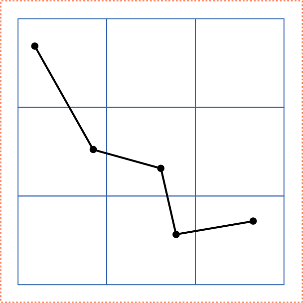 | 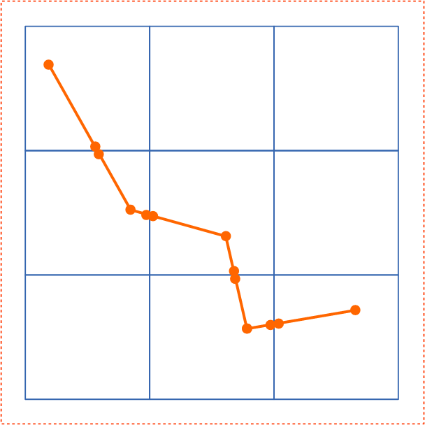 |
| Step 1 : Splitting content | Step 5 : Arranging tiles with smaller effective digits and appropriate translate | |
|---|---|---|
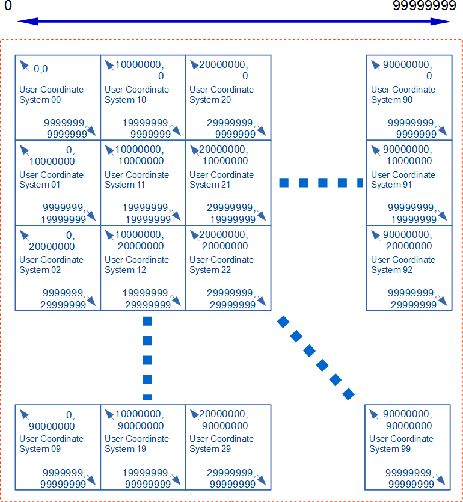 | 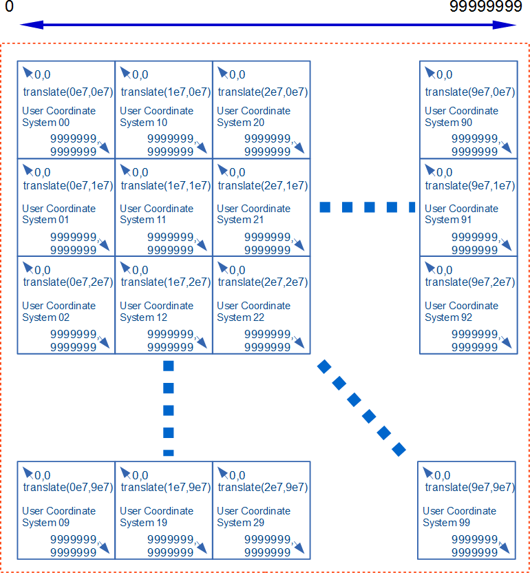 | |
| This example provides the significant figure of eight digits using tiles with the user coordinate system of seven digits. | ||
Appendix C: Accessibility Support
This appendix is informative, not normative.
C.1. SVG Accessibility Features
This appendix highlights the accessibility features of SVG and accessibility related specifications used to support SVG and the associated W3C Web Content Accessibility Guidelines (WCAG) 2.0 [WCAG2] requirements they are designed to support.
- [WCAG2] Create content that can be presented in different ways (for example simpler layout) without losing information or structure: Information and Relationships.
-
- Support for aria-labelledby for label relationships.
- Support for aria-describedby for description relationships.
- Support for aria-owns for structural relationships.
- Support for aria-controls for control relationships where an element controls the content and or behavior of another element.
- The ‘
g’ for defined groupings. - Support for the WAI-ARIA group and radiogroup roles.
- [WCAG2] Keyboard Accessible: Make all functionality available from the keyboard.
-
- Focus support and the ‘
tabindex’ attribute for sequential focus navigation aligned with HTML - Keyboard Event attribute support along with Mouse Event support for script authors
- Keyboard Events for script authors
- Script support for setting focus on each SVG Element in the DOM
- Script support for acquiring the ‘
tabindex’ attribute on each SVG Element in the DOM - Script support for the HTML activeElement property in the Document interface
- Focus support and the ‘
- [WCAG2] Navigable: Provide ways to help users navigate, find content, and determine where they are.
-
- To enable bypassing of blocks of content SVG supports the: WAI-ARIA landmark roles.
- Supports ‘
title’ to provide page titles. - Supports ‘
tabindex’ to provide a sequential focus navigation order. - Supports the ‘
a’ element, enabling authors to supply the link purpose both from its content. - Supports headings and labels through the use of the heading role with aria-level, aria-labelledby and aria-label.
- Support visible focus by rendering visible focus on focused elements in the tab order.
- [WCAG2] Readable: Make text content readable and understandable.
-
- Supports the language of the page as well as its parts through the ‘
lang’ attribute.
- Supports the language of the page as well as its parts through the ‘
- [WCAG2] Compatible: Maximize compatibility with current and future user agents, including assistive technologies.
-
- Supports Name, Role, and Value through the use of WAI-ARIA attributes and the ‘
title’ element.
- Supports Name, Role, and Value through the use of WAI-ARIA attributes and the ‘
- WAI-ARIA Support and text alternatives
C.2. Supporting SVG Accessibility Specifications and Guidelines
This section enumerates the SVG accessibility-related specifications and authoring guidelines.
- Related SVG Accessibility Specifications for User Agents
-
- The SVG Accessibility API Mappings [SVG-AAM] specification.
- The Core Accessibility API Mappings 1.1 [CORE-AAM]specification.
- The Accessible Name and Description: Computation and API Mappings 1.1 [ACCNAME-AAM] specification.
- Related Specifications for Content Authors
Appendix D: Animating SVG Documents
SVG supports the ability to change vector graphics over time, to create animated effects. SVG content can be animated in the following ways:
- Using SVG’s animation elements [svg-animation]. SVG document fragments can describe time-based modifications to the document’s elements. Using the various animation elements, authors can define motion paths, or interpolate the element’s attributes and style properties. These effects can be chained together or triggered in response to other events in the document.
- Using CSS Animations [css-animations-1]. This CSS module defines a way for authors to animate the values of CSS properties over time, using keyframes. The behavior of these keyframe animations can be controlled by specifying their duration, number of repeats, and repeating behavior.
- Using CSS Transitions [css-transitions-1]. This CSS module defines properties to specify that changes to values of CSS properties occur progressively over a specified duration.
- Using the SVG DOM. The SVG DOM is defined as an extension of the DOM4 specification [dom]. Every attribute and style sheet setting is accessible to scripting, and SVG offers a set of additional DOM interfaces to support efficient animation via scripting. Ideally, user agents that support scripting will also implement the animation frames APIs defined in HTML [HTML].
- Using the Web Animations API [web-animations-1]. This DOM API provides a scripted interface to trigger user-agent optimized animations of style properties and attributes, without the need for authors to calculate values for individual frames.
SVG does not mandate support for any of these animation methods. However, user agents that do support them are expected to support them for SVG documents and SVG fragments in other documents. User agents that support declarative or scripted animation are required to conform to the restrictions based on processing mode as defined in the Conformance chapter, and to the special requirements for animations in use-element shadow trees.
Appendix E: References
E.1. Normative references
- [atag20]
-
Jan Richards; Jeanne F Spellman; Jutta Treviranus. Authoring Tool Accessibility Guidelines (ATAG) 2.0. 24 September 2015. W3C Recommendation. URL: https://www.w3.org/TR/ATAG20/ ED: https://www.w3.org/WAI/AU/ATAG20/
- [BCP47]
-
A. Phillips; M. Davis. Tags for Identifying Languages. September 2009. IETF Best Current Practice. URL: https://tools.ietf.org/html/bcp47
- [clipboard-apis]
-
Gary Kacmarcik; Grisha Lyukshin; Hallvord Steen. Clipboard API and events. 29 September 2017. W3C Working Draft. URL: https://www.w3.org/TR/clipboard-apis/ ED: https://w3c.github.io/clipboard-apis/
- [compositing-1]
-
Rik Cabanier; Nikos Andronikos. Compositing and Blending Level 1. 13 January 2015. W3C Candidate Recommendation. URL: https://www.w3.org/TR/compositing-1/ ED: https://drafts.csswg.org/compositing-1/
- [CSS2]
-
Bert Bos; Tantek Çelik; Ian Hickson; Håkon Wium Lie et al. Cascading Style Sheets Level 2 Revision 1 (CSS 2.1) Specification. 7 June 2011. W3C Recommendation. URL: https://www.w3.org/TR/CSS2
- [css-cascade-4]
-
Elika Etemad; Tab Atkins Jr.. CSS Cascading and Inheritance Level 4. 14 January 2016. W3C Candidate Recommendation. URL: https://www.w3.org/TR/css-cascade-4/ ED: https://drafts.csswg.org/css-cascade/
- [css-color-3]
-
Tantek Çelik; Chris Lilley; David Baron. CSS Color Module Level 3. 19 June 2018. W3C Recommendation. URL: https://www.w3.org/TR/css-color-3
- [css-fonts-3]
-
John Daggett, Myles Maxfield, Chris Lilley. CSS Fonts Module Level 3. 14 August 2018. W3C Proposed Recommendation. URL: https://www.w3.org/TR/css-fonts-3/ ED: https://drafts.csswg.org/css-fonts/
- [css-inline-3]
-
Dave Cramer; Elika Etemad; Steve Zilles. CSS Inline Layout Module Level 3. 8 August 2018. W3C Working Draft. URL: https://www.w3.org/TR/css-inline-3/ ED: https://drafts.csswg.org/css-inline/
- [css-text-3]
-
Elika Etemad; Koji Ishii. CSS Text Module Level 3. 22 August 2017 . W3C Working Draft. URL: https://www.w3.org/TR/css-text-3/ ED: https://drafts.csswg.org/css-text-3/
- [css-text-4]
-
Elika Etemad; Koji Ishii; Alan Stearns. CSS Text Module Level 4. 22 September 2015. W3C Working Draft. URL: https://www.w3.org/TR/css-text-4/ ED: https://drafts.csswg.org/css-text-4/
- [css-text-decor-3]
-
Elika Etemad; Koji Ishii. CSS Text Decoration Module Level 3. 03 July 2018. W3C Candidate Recommendation. URL: https://www.w3.org/TR/css-text-decor-3/ ED: https://drafts.csswg.org/css-text-decor-3/
- [css-masking-1]
-
Dirk Schulze; Brian Birtles; Tab Atkins Jr.. CSS Masking Module Level 1. 26 August 2014. W3C Candidate Recommendation. URL: https://www.w3.org/TR/css-masking-1/ ED: https://drafts.csswg.org/css-masking-1/
- [cssom-1]
-
Simon Pieters; Glenn Adams. CSS Object Model (CSSOM). 17 March 2016. W3C Working Draft. URL: https://www.w3.org/TR/cssom-1/ ED: https://drafts.csswg.org/cssom/
- [css-ui-3]
-
Tantek Çelik; Florian Rivoal. CSS Basic User Interface Module Level 3 (CSS3 UI). 21 June 2018. W3C Recommendation. URL: https://www.w3.org/TR/css-ui-3/ ED: https://drafts.csswg.org/css-ui/
- [css-transforms-1]
-
Simon Fraser; Dean Jackson; Edward O’Connor; Dirk Schulze. CSS Transforms Module Level 1. 30 November 2017. W3C Working Draft. URL: https://www.w3.org/TR/css-transforms-1/ ED: https://drafts.csswg.org/css-transforms/
- [css-values]
-
Tab Atkins Jr.; Elika Etemad. CSS Values and Units Module Level 3. 14 August 2018. W3C Candidate Recommendation. URL: https://www.w3.org/TR/css-values/ ED: https://drafts.csswg.org/css-values/
- [css-images-3]
-
Elika Etemad; Tab Atkins Jr.. CSS Image Values and Replaced Content Module Level 3. 17 April 2012. W3C Candidate Recommendation. URL: https://www.w3.org/TR/css3-images/ ED: https://drafts.csswg.org/css-images-3/
- [css-overflow-3]
-
L. David Baron; Elika Etemad; Florian Rioval. CSS Overflow Module Level 3. 31 July 2018. W3C Working Draft. URL: https://www.w3.org/TR/css-overflow-3/ ED: https://drafts.csswg.org/css-overflow-3/
- [css-shapes-1]
-
Vincent Hardy; Rossen Atanassov; Alan Stearns. CSS Shapes Module Level 1. 20 March 2014. W3C Candidate Recommendation. URL: https://www.w3.org/TR/css-shapes-1/ ED: https://drafts.csswg.org/css-shapes/
- [css-writing-modes-3]
-
Elika Etemad; Koji Ishii. CSS Writing Modes Level 3. 24 May 2018. W3C Candidate Recommendation. URL: https://www.w3.org/TR/css-writing-modes-3/ ED: https://drafts.csswg.org/css-writing-modes-3/
- [css-scoping-1]
-
Tab Atkins Jr.; Elika Etemad. CSS Scoping Module Level 1. 3 April 2014. W3C Working Draft. URL: https://www.w3.org/TR/css-scoping-1/ ED: https://drafts.csswg.org/css-scoping/
- [dom]
-
DOM LS. 8 August 2018. WHATWG Living Standard. URL: https://dom.spec.whatwg.org/
- [DOM-Level-2-Style]
-
Chris Wilson; Philippe Le Hégaret. Document Object Model (DOM) Level 2 Style Specification. 13 November 2000. W3C Recommendation. URL: https://www.w3.org/TR/DOM-Level-2-Style/
- [ECMASCRIPT]
-
Allen Wirfs-Brock. ECMA-262 6th Edition, The ECMAScript 2015 Language Specification. June 2015. Standard. URL: https://www.ecma-international.org/ecma-262/6.0/index.html
- [FETCH]
-
Anne van Kesteren. Fetch Standard. Living Standard. URL: https://fetch.spec.whatwg.org/
- [filter-effects-1]
-
Dean Jackson; Erik Dahlström; Dirk Schulze. Filter Effects Module Level 1. 25 November 2014. W3C Working Draft. URL: https://www.w3.org/TR/filter-effects-1/ ED: https://drafts.csswg.org/filter-effects-1/
- [geometry-1]
-
Simon Pieters; Dirk Schulze; Rik Cabanier. Geometry Interfaces Module Level 1. 25 November 2014. W3C Candidate Recommendation. URL: https://www.w3.org/TR/geometry-1/ ED: https://drafts.csswg.org/geometry-1/
- [graphics-aria-1.0]
-
Amelia Bellamy-Royds; Fred Esch; Richard Schwerdtfeger; Léonie Watson. WAI-ARIA Graphics Module. 26 June 2018. W3C Proposed Recommendation . URL: https://www.w3.org/TR/graphics-aria-1.0/ ED: https://w3c.github.io/graphics-aria/
- [HTML]
-
Anne van Kesteren; et al. HTML Standard. Living Standard. URL: https://html.spec.whatwg.org/multipage/
- [JPEG]
-
Eric Hamilton. JPEG File Interchange Format. September 1992. URL: https://www.w3.org/Graphics/JPEG/jfif3.pdf
- [media-frags]
-
Raphaël Troncy; Erik Mannens; Silvia Pfeiffer; Davy Van Deursen. Media Fragments URI 1.0 (basic). 25 September 2012. W3C Recommendation. URL: https://www.w3.org/TR/media-frags/
- [PNG]
-
Tom Lane. Portable Network Graphics (PNG) Specification (Second Edition). 10 November 2003. W3C Recommendation. URL: https://www.w3.org/TR/PNG
- [Referrer Policy]
-
J. Eisinger, E. Stark. Referrer Policy. 26 January 2017. Candidate Recommendation. URL: https://www.w3.org/TR/referrer-policy/ ED: https://w3c.github.io/webappsec-referrer-policy/
- [rfc1951]
-
P. Deutsch. DEFLATE Compressed Data Format Specification version 1.3. May 1996. Informational. URL: https://tools.ietf.org/html/rfc1951
- [rfc1952]
-
P. Deutsch. GZIP file format specification version 4.3. May 1996. Informational. URL: https://tools.ietf.org/html/rfc1952
- [rfc2046]
-
N. Freed; N. Borenstein. Multipurpose Internet Mail Extensions (MIME) Part Two: Media Types. November 1996. Draft Standard. URL: https://tools.ietf.org/html/rfc2046
- [rfc2119]
-
S. Bradner. Key words for use in RFCs to Indicate Requirement Levels. March 1997. Best Current Practice. URL: https://tools.ietf.org/html/rfc2119
- [rfc2397]
-
L. Masinter. The "data" URL scheme. August 1998. Proposed Standard. URL: https://tools.ietf.org/html/rfc2397
- [rfc2616]
-
R. Fielding; J. Gettys; J. Mogul; H. Frystyk; L. Masinter; P. Leach; T. Berners-Lee. Hypertext Transfer Protocol -- HTTP/1.1. June 1999. Draft Standard. URL: https://tools.ietf.org/html/rfc2616
- [rfc3986]
-
T. Berners-Lee; R. Fielding; L. Masinter. Uniform Resource Identifier (URI): Generic Syntax. January 2005. Internet Standard. URL: https://tools.ietf.org/html/rfc3986
- [rfc5234]
-
D. Crocker, Ed.; P. Overell. Augmented BNF for Syntax Specifications: ABNF. January 2008. Internet Standard. URL: https://tools.ietf.org/html/rfc5234
- [rfc7303]
-
H. Thompson; C. Lilley. XML Media Types. July 2014. Proposed Standard. URL: https://tools.ietf.org/html/rfc7303
- [rfc3987]
-
M. Duerst; M. Suignard. Internationalized Resource Identifiers (IRIs). January 2005. Proposed Standard. URL: https://tools.ietf.org/html/rfc3987
- [rfc4329]
-
B. Hoehrmann. Scripting Media Types. April 2006. Informational. URL: https://tools.ietf.org/html/rfc4329
- [SMIL]
-
Synchronized Multimedia Integration Language (SMIL 3.0),
D. Bulterman et al., eds. 01 December 2008.
This edition of SMIL is https://www.w3.org/TR/2008/REC-SMIL3-20081201/.
The latest edition of SMIL is available at https://www.w3.org/TR/smil/. - [smil-animation]
-
Patrick Schmitz; Aaron Cohen. SMIL Animation. 4 September 2001. W3C Recommendation. URL: https://www.w3.org/TR/smil-animation/
- [SRGB]
-
Multimedia systems and equipment - Colour measurement and management - Part 2-1: Colour management - Default RGB colour space - sRGB. IEC 61966-2-1 (1999-10). ISBN: 2-8318-4989-6 - ICS codes: 33.160.60, 37.080 - TC 100 - 51 pp. URL: https://webstore.iec.ch/publication/6169
- [svg-aam-1.0]
-
Amelia Bellamy-Royds; Richard Schwerdtfeger. SVG Accessibility API Mappings. Draft 10 May 2018. W3C Working Draft. URL: https://www.w3.org/TR/svg-aam-1.0/ ED: https://w3c.github.io/svg-aam/
- [uievents]
-
Gary Kacmarcik; Travis Leithead. UI Events Specification. 04 August 2016. W3C Working Draft. URL: https://www.w3.org/TR/uievents/ ED: https://w3c.github.io/uievents/
- [UNICODE]
- [URL]
-
Anne van Kesteren; Sam Ruby. URL. 9 August 2018. Living Standard. URL: https://url.spec.whatwg.org/
- [wai-aria]
-
Joanmarie Diggs et al. Accessible Rich Internet Applications (WAI-ARIA) 1.1. 14 December 2017. W3C Recommendation. URL: https://www.w3.org/TR/wai-aria-1.1/
- [web-animations-1]
-
Brian Birtles; Shane Stephens; Alex Danilo; Tab Atkins Jr.. Web Animations. 13 September 2016. W3C Working Draft. URL: https://www.w3.org/TR/web-animations-1/ ED: https://w3c.github.io/web-animations/
- [WebIDL]
-
Cameron McCormack; Boris Zbarsky. WebIDL Level 1. 15 December 2016. W3C Recommendation. URL: https://www.w3.org/TR/WebIDL-1/ ED: https://webidl.spec.whatwg.org/
- [WOFF]
-
Jonathan Kew; Tal Leming; Erik van Blokland. WOFF File Format 1.0. 13 December 2012. W3C Recommendation. URL: https://www.w3.org/TR/WOFF/
- [xlink]
-
Steven DeRose; Eve Maler; David Orchard. XML Linking Language (XLink) Version 1.1. 06 May 2010. W3C Recommendation. URL: https://www.w3.org/TR/xlink11/
- [xml]
-
Tim Bray; Jean Paoli; Michael Sperberg-McQueen; Eve Maler; François Yergeau et al. Extensible Markup Language (XML) 1.0 (Fifth Edition). 26 November 2008. W3C Recommendation. URL: https://www.w3.org/TR/xml
- [xmlbase]
-
Jonathan Marsh. XML Base (Second Edition). 28 January 2009. W3C Recommendation. URL: https://www.w3.org/TR/xmlbase/
- [xml-names]
-
Tim Bray; Dave Hollander; Andrew Layman; Richard Tobin; Henry Thompson et al. Namespaces in XML 1.0 (Third Edition). 8 December 2009. W3C Recommendation. URL: https://www.w3.org/TR/xml-names
- [xml-stylesheet]
-
James Clark; Simon Pieters; Henry Thompson. Associating Style Sheets with XML documents 1.0 (Second Edition). 28 October 2010. W3C Recommendation. URL: https://www.w3.org/TR/xml-stylesheet
E.2. Informative references
- [charmod]
-
Martin Dürst; François Yergeau; Richard Ishida; Misha Wolf; Tex Texin et al. Character Model for the World Wide Web 1.0: Fundamentals. 15 February 2005. W3C Recommendation. URL: https://www.w3.org/TR/charmod/
- [css-selectors-3]
-
Tantek Çelik; Elika Etemad; Daniel Glazman; Ian Hickson; Peter Linss; John Williams et al. Selectors Level 3. 30 January 2018. W3C Candidate Recommendation. URL: https://www.w3.org/TR/selectors-3/
- [css-color-4]
-
CSS Color Module Level 4,
Tab Atkins; Chris Lilley eds.
World Wide Web Consortium, 5 July 2016.
The latest edition of CSS Color 4 is available at https://www.w3.org/TR/css-color-4/. - [css-shapes-2]
-
CSS Shapes Module Level 2,
Alan Stearns ed.
World Wide Web Consortium, 5 July 2018.
The latest edition of CSS Shapes 2 is available at https://drafts.csswg.org/css-shapes-2/. - [css-syntax-3]
-
CSS Syntax Module Level 3,
Tab Atkins ed.
World Wide Web Consortium, February 2014.
The latest edition of CSS Syntax 3 is available at https://drafts.csswg.org/css-syntax-3/. - [css-animations-1]
-
Dean Jackson; David Hyatt; Chris Marrin; Sylvain Galineau; David Baron. CSS Animations. 30 November 2017. W3C Working Draft. URL: https://www.w3.org/TR/css-animations-1/ ED: https://drafts.csswg.org/css-animations/
- [css-transitions-1]
-
Dean Jackson; David Hyatt; Chris Marrin; David Baron. CSS Transitions. 30 November 2017. W3C Working Draft. URL: https://www.w3.org/TR/css-transitions-1/ ED: https://drafts.csswg.org/css-transitions/
- [DC11]
-
Dublin Core metadata initiative. Dublin Core Metadata Element Set, Version 1.1. 14 June 2012. DCMI recommendation. URL: https://dublincore.org/documents/2012/06/14/dces/
- [EDITING]
- [ICC]
-
International Color Consortium, ICC.1:2010 (Profile version 4.3.0.0). December 2010. URL: https://www.color.org/specification/ICC1v43_2010-12.pdf
- [MathML3]
-
David Carlisle; Patrick D F Ion; Robert R Miner. Mathematical Markup Language (MathML) Version 3.0 2nd Edition. 10 April 2014. W3C Recommendation. URL: https://www.w3.org/TR/MathML3/
- [OPENTYPE]
- [rdf11-primer]
-
Guus Schreiber; Yves Raimond. RDF 1.1 Primer. 24 June 2014. W3C Note. URL: https://www.w3.org/TR/rdf11-primer/
- [WCAG21]
-
Ben Caldwell; Michael Cooper; Loretta Guarino Reid; Gregg Vanderheiden et al. Web Content Accessibility Guidelines (WCAG) 2.1. 05 June 2018. W3C Recommendation. URL: https://www.w3.org/TR/WCAG21/
- [svg-animation]
-
Brian Birtles. SVG Animations. W3C Editor’s Draft. URL: https://w3c.github.io/svgwg/specs/animations
- [UAAG20]
-
James Allan; Greg Lowney; Kimberly Patch; Jeanne F Spellman. User Agent Accessibility Guidelines (UAAG) 2.0. 15 December 2015. W3C Note. URL: https://www.w3.org/TR/UAAG20/ ED: https://www.w3.org/TR/2015/NOTE-UAAG20-20151215/
- [xmlschema-2]
-
Paul V. Biron; Ashok Malhotra. XML Schema Part 2: Datatypes Second Edition. 28 October 2004. W3C Recommendation. URL: https://www.w3.org/TR/xmlschema-2/
Appendix F: Element Index
This appendix is informative, not normative.
The following are the elements in the SVG language:
- ‘
a’ - ‘animate’
- ‘animateMotion’
- ‘animateTransform’
- ‘
circle’ - ‘clipPath’
- ‘
defs’ - ‘
desc’ - ‘
ellipse’ - ‘feBlend’
- ‘feColorMatrix’
- ‘feComponentTransfer’
- ‘feComposite’
- ‘feConvolveMatrix’
- ‘feDiffuseLighting’
- ‘feDisplacementMap’
- ‘feDistantLight’
- ‘feDropShadow’
- ‘feFlood’
- ‘feFuncA’
- ‘feFuncB’
- ‘feFuncG’
- ‘feFuncR’
- ‘feGaussianBlur’
- ‘feImage’
- ‘feMerge’
- ‘feMergeNode’
- ‘feMorphology’
- ‘feOffset’
- ‘fePointLight’
- ‘feSpecularLighting’
- ‘feSpotLight’
- ‘feTile’
- ‘feTurbulence’
- ‘filter’
- ‘
foreignObject’ - ‘
g’ - ‘
image’ - ‘
line’ - ‘
linearGradient’ - ‘
marker’ - ‘mask’
- ‘
metadata’ - ‘mpath’
- ‘
path’ - ‘
pattern’ - ‘
polygon’ - ‘
polyline’ - ‘
radialGradient’ - ‘
rect’ - ‘
script’ - ‘set’
- ‘
stop’ - ‘
style’ - ‘
svg’ - ‘
switch’ - ‘
symbol’ - ‘
text’ - ‘
textPath’ - ‘
title’ - ‘
tspan’ - ‘
use’ - ‘
view’
Appendix G: Attribute Index
This appendix is informative, not normative.
G.1. Regular attributes
The following table lists all of the attributes defined in the SVG language, except for the presentation attributes, which are treated in the Presentation attributes section below. For each attribute, the elements on which the attribute may be specified is also given.
G.2. Presentation attributes
As described in the Styling chapter, for each property there exists a corresponding presentation attribute. The table below lists the presentation attributes.
alignment-baseline, baseline-shift, clip, clip-path, clip-rule, color, color-interpolation, color-interpolation-filters, cursor, direction, display, dominant-baseline, fill, fill-opacity, fill-rule, filter, flood-color, flood-opacity, font-family, font-size, font-size-adjust, font-stretch, font-style, font-variant, font-weight, glyph-orientation-horizontal, glyph-orientation-vertical, image-rendering, letter-spacing, lighting-color, marker-end, marker-mid, marker-start, mask, mask-type, opacity, overflow, paint-order, path-length, pointer-events, shape-rendering, stop-color, stop-opacity, stroke, stroke-dasharray, stroke-dashoffset, stroke-linecap, stroke-linejoin, stroke-miterlimit, stroke-opacity, stroke-width, text-anchor, text-decoration, text-rendering, transform, transform-origin, unicode-bidi, vector-effect, visibility, word-spacing and writing-modeAppendix H: Property Index
This appendix is informative, not normative.
| Name | Values | Initial value | Applies to | Inh. | Percentages | Media | Animation type | Computed value |
|---|---|---|---|---|---|---|---|---|
| color-interpolation | auto | sRGB | linearRGB | sRGB | container elements, graphics elements, gradient elements, ‘use’ and ‘animate’
| yes | N/A | visual | discrete | as specified |
| cx | <length-percentage> | 0 | ‘circle’ and ‘ellipse’ elements
| no | refer to the width of the current SVG viewport (see Units) | visual | by computed value | an absolute length or percentage |
| cy | <length-percentage> | 0 | ‘circle’ and ‘ellipse’ elements
| no | refer to the height of the current SVG viewport (see Units) | visual | by computed value | an absolute length or percentage |
| fill | <paint> (See Specifying paint) | black | shapes and text content elements | yes | N/A | visual | by computed value | as specified, but with <color> values computed and <url> values made absolute |
| fill-opacity | <‘opacity’> | 1 | shapes and text content elements | yes | N/A | visual | by computed value | the specified value converted to a number, clamped to the range [0,1] |
| fill-rule | nonzero | evenodd | nonzero | shapes and text content elements | yes | N/A | visual | discrete | as specified |
| image-rendering | auto | optimizeSpeed | optimizeQuality | auto | images | yes | N/A | visual | discrete | as specified |
| marker | see individual properties | see individual properties | shapes | yes | N/A | visual | discrete | see individual properties |
| marker-end marker-mid marker-start | none | <url> | none | shapes | yes | N/A | visual | discrete | as specified, but with <url> values (that are part of a <marker-ref>) made absolute |
| paint-order | normal | [ fill || stroke || markers ] | normal | shapes and text content elements | yes | N/A | visual | discrete | as specified |
| pointer-events | auto | bounding-box | visiblePainted | visibleFill | visibleStroke |
visible | painted | fill | stroke | all | none | auto | container elements, graphics elements and ‘use’
| yes | N/A | visual | discrete | as specified |
| r | <length-percentage> | 0 | ‘circle’ element
| no | refer to the normalized diagonal of the current SVG viewport (see Units) | visual | by computed value | an absolute length or percentage |
| rx | <length-percentage> | auto | auto | ‘ellipse’, ‘rect’ elements
| no | refer to the width of the current SVG viewport (see Units) | visual | by computed value | an absolute length or percentage |
| ry | <length-percentage> | auto | auto | ‘ellipse’, ‘rect’ elements
| no | refer to the height of the current SVG viewport (see Units) | visual | by computed value | an absolute length or percentage |
| shape-rendering | auto | optimizeSpeed | crispEdges | geometricPrecision | auto | shapes | yes | N/A | visual | discrete | as specified |
| stop-color | <‘color’> | black | ‘stop’ elements
| no | N/A | visual | by computed value | |
| stop-opacity | <‘opacity’> | 1 | ‘stop’ elements
| no | N/A | visual | by computed value | the specified value converted to a number, clamped to the range [0,1] |
| stroke | <paint> (See Specifying paint) | none | shapes and text content elements | yes | N/A | visual | by computed value | as specified, but with <color> values computed and <url> values made absolute |
| stroke-dasharray | none | <dasharray> | none | shapes and text content elements | yes | refer to the normalized diagonal of the current SVG viewport | visual | See prose | as comma separated list of absolute lengths or percentages, numbers converted to absolute lengths first, or keyword specified |
| stroke-dashoffset | <length-percentage> | <number> | 0 | shapes and text content elements | yes | refer to the normalized diagonal of the current SVG viewport | visual | by computed value | as absolute length or percentage; numbers converted to absolute length first |
| stroke-linecap | butt | round | square | butt | shapes and text content elements | yes | N/A | visual | discrete | as specified |
| stroke-linejoin | miter | round | bevel | miter | shapes and text content elements | yes | N/A | visual | discrete | as specified |
| stroke-miterlimit | <number> (non-negative) | 4 | shapes and text content elements | yes | N/A | visual | by computed value | as specified |
| stroke-opacity | <‘opacity’> | 1 | shapes and text content elements | yes | N/A | visual | by computed value | the specified value converted to a number, clamped to the range [0,1] |
| stroke-width | <length-percentage> | <number> | 1px | shapes and text content elements | yes | refer to the normalized diagonal of the current SVG viewport | visual | by computed value | as absolute length or percentage; numbers converted to absolute length first |
| text-anchor | start | middle | end | start | text content elements | yes | N/A | visual | discrete | as specified |
| text-rendering | auto | optimizeSpeed | optimizeLegibility | geometricPrecision | auto | ‘text’ elements
| yes | N/A | visual | discrete | as specified |
| vector-effect | non-scaling-stroke | none | none | graphics elements and ‘use’
| no | N/A | visual | discrete | as specified |
| x | <length-percentage> | 0 | ‘svg’, ‘rect’,
‘image’, ‘foreignObject’ elements
| no | refer to the width of the current SVG viewport (see Units) | visual | by computed value | an absolute length or percentage |
| y | <length-percentage> | 0 | ‘svg’, ‘rect’,
‘image’, ‘foreignObject’ elements
| no | refer to the height of the current SVG viewport (see Units) | visual | by computed value | an absolute length or percentage |
- [1] The font, font-size-adjust and stroke-dasharray properties are animatable but do not support additive animation.
Appendix I: IDL Index
This appendix is informative, not normative.
The following is a list of all IDL interfaces defined in this specification:
GetSVGDocumentSVGAElementSVGAngleSVGAnimatedAngleSVGAnimatedBooleanSVGAnimatedEnumerationSVGAnimatedIntegerSVGAnimatedLengthSVGAnimatedLengthListSVGAnimatedNumberSVGAnimatedNumberListSVGAnimatedPointsSVGAnimatedPreserveAspectRatioSVGAnimatedRectSVGAnimatedStringSVGAnimatedTransformListSVGBoundingBoxOptionsSVGCircleElementSVGDefsElementSVGDescElement- SVGDocument
SVGElementSVGEllipseElementSVGFitToViewBoxSVGForeignObjectElementSVGGElementSVGGeometryElementSVGGradientElementSVGGraphicsElementSVGImageElementSVGLengthSVGLengthListSVGLineElementSVGLinearGradientElementSVGMarkerElementSVGMetadataElement- SVGNameList
SVGNumberSVGNumberListSVGPathElementSVGPatternElementSVGPointListSVGPolygonElementSVGPolylineElementSVGPreserveAspectRatioSVGRadialGradientElementSVGRectElementSVGSVGElementSVGScriptElementSVGStopElementSVGStringListSVGStyleElementSVGSwitchElementSVGSymbolElementSVGTSpanElementSVGTestsSVGTextContentElementSVGTextElementSVGTextPathElementSVGTextPositioningElementSVGTitleElementSVGTransformSVGTransformListSVGURIReferenceSVGUnitTypesSVGUseElementSVGViewElementShadowAnimation
Appendix J: Media Type Registration for image/svg+xml
This appendix is normative.
J.1. Introduction
This appendix registers a new MIME media type, "image/svg+xml" in conformance with BCP 13 and W3CRegMedia.
J.2. Registration of media type image/svg+xml
- Type name:
-
image
- Subtype name:
-
svg+xml
- Required parameters:
-
None.
- Optional parameters:
-
charset
Same as application/xml media type, as specified in [rfc7303] or its successors.
- Encoding considerations:
-
Same as for application/xml. See [rfc7303], section 3.2 or its successors.
- Security considerations:
-
The results of the SVG working group’s self assessment of security and privacy concerns is at https://github.com/w3c/svgwg/wiki/SVG-2-Security-&-Privacy-Review.
As with other XML types and as noted in [rfc7303] section 10, repeated expansion of maliciously constructed XML entities can be used to consume large amounts of memory, which may cause XML processors in constrained environments to fail.
Several SVG elements may cause arbitrary URIs to be referenced. In this case, the security issues of [rfc3986], section 7, should be considered.
In common with HTML, SVG documents may reference external media such as images, style sheets, and scripting languages. Scripting languages are executable content. In this case, the security considerations in the Media Type registrations for those formats shall apply.
In addition, because of the extensibility features for SVG and of XML in general, it is possible that "image/svg+xml" may describe content that has security implications beyond those described here. However, if the processor follows only the normative semantics of the published specification, this content will be outside the SVG namespace and shall be ignored. Only in the case where the processor recognizes and processes the additional content, or where further processing of that content is dispatched to other processors, would security issues potentially arise. And in that case, they would fall outside the domain of this registration document.
- Privacy considerations:
-
The results of the SVG working group’s self assessment of security and privacy concerns is at https://github.com/w3c/svgwg/wiki/SVG-2-Security-&-Privacy-Review.
SVG’s ‘requiredExtensions’ and ‘systemLanguage’ attributes may provide some opportunity for examining the configuration of a user agent’s host environment. ‘requiredExtensions’ by determining whether custom extensions are supported by the user agent. ‘systemLanguage’ by determining the preference of one language relative to another.
- Interoperability considerations:
-
The published specification describes processing semantics that dictate behavior that must be followed when dealing with, among other things, unrecognized elements and attributes, both in the SVG namespace and in other namespaces.
Because SVG is extensible, conformant "image/svg+xml" processors must expect that content received is well-formed XML, but it cannot be guaranteed that the content is valid to a particular DTD or Schema or that the processor will recognize all of the elements and attributes in the document.
SVG has a published Test Suite and associated implementation report showing which implementations passed which tests at the time of the report. This information is periodically updated as new tests are added or as implementations improve.
- Published specification:
-
This media type registration is extracted from Appendix P of the SVG 1.1 specification.
- Applications that use this media type:
-
SVG is used by Web browsers, often in conjunction with HTML; by mobile phones and digital cameras, as a format for interchange of graphical assets in desktop publishing, for industrial process visualization, display signage, and many other applications which require scalable static or interactive graphical capability.
- Additional information:
-
- Magic number(s):
- File extension(s):
-
svg
Note that the extension 'svgz' is used as an alias for 'svg.gz' [rfc1952], i.e. octet streams of type image/svg+xml, subsequently compressed with gzip.
- Macintosh file type code(s):
-
"svg " (all lowercase, with a space character as the
fourth letter).
Note that the Macintosh file type code 'svgz' (all lowercase) is used as an alias for GZIP [rfc1952] compressed "svg ", i.e. octet streams of type image/svg+xml, subsequently compressed with gzip.
- Macintosh Universal Type Identifier code:
org.w3c.svgconforms topublic.imageand topublic.xml- Windows Clipboard Name:
- "SVG Image"
- Fragment Identifiers
- For documents labeled as application/svg+xml, the fragment identifier notation is either Shorthand Pointers (formerly called barenames), the SVG-specific SVG Views syntax or a Media Fragment Identifier; all described in the fragment identifiers section of the SVG specification.
- Person & email address to contact for further information:
-
Chris Lilley (www-svg@w3.org) or raise an issue on GitHub: https://github.com/w3c/svgwg/issues/685
- Intended usage:
-
COMMON
- Restrictions on usage:
-
None
- Author:
-
The SVG specification is a work product of the World Wide Web Consortium’s SVG Working Group.
- Change controller:
-
The W3C has change control over this specification.
Appendix K: Changes from SVG 1.1
This appendix is informative, not normative.
This appendix summarizes the changes that have been made since the SVG 1.1 Second Edition Recommendation. Changes made since the initial SVG 2 Candidate Recommendation are highlighted.
K.1. Editorial changes
A number of stylistic changes have been made to the specification to make it more readable. These include the following:
- A change towards using styling similar to contemporary CSS specifications, removing mention of XSL-FO.
- Annotations have been added to the specification to reflect features that the Working Group has resolved on including and for which a member of the group has committed to drive that feature.
- Changes to highlight that SVG can be used in HTML as well as in XML.
- Removed chapters whose normative content has either been moved to other specifications or deprecated: Filters, Clipping and Masking, Animation, Fonts, Color.
- Removed the (informative) Concepts and Backwards Compatibility chapters, as well as multiple appendices.
-
Merged and re-organized multiple chapters:
- Made the (normative) Conformance appendix a chapter.
- Moved sections on 'display' and 'visibility' properties from the Painting chapter to the Rendering Model chapter.
- Moved remaining sections from Clipping, Masking, and Compositing chapter into the Rendering Model chapter.
- Merged the SVG 1.1 Metadata chapter into the Document Structure chapter.
- Moved the 'image' element definition from the Document Structure chapter to the new Embedded Content chapter.
- Moved Foreign namespaces and private data section from the SVG 1.1 Extensibility chapter to Document Structure chapter.
- Created the Geometry Properties chapter, and moved relevant definitions to it from the Basic Shapes and Paths chapters.
- Created the Embedded Content chapter, and merged all content from the SVG 1 Extensibility chapter into it.
- Merged the SVG 1.1 Scripting and Interactivity chapters.
- Tidied up the changes list, adding missing changes, and adding links to issue discussion for changes since the initial Candidate Recommendation. Edits
- Consistently use the term "user coordinate system" (previously, the synonymous term "local coordinate system" was also used). Issue discussion Edits
K.2. Substantial changes
In additional to the editorial changes listed above, the following substantial additions, changes and removals have been made.
K.2.1. Across the whole document
- References to the SVG DTD have been removed.
- IDL has been updated to use Web IDL syntax.
- Added "length" attribute and indexed property access to all list interfaces.
- Remove definition of <angle> type and reference CSS3-values.
- Change all coordinate types to <length> in preparation for referencing css3-values.
- Add the ‘
script’ element to the content model of all elements. - Changed the initialize, appendItem, replaceItem and insertItemBefore methods on list objects to make a copy of any list item being inserted that is already in another list.
- The ‘
image’ and ‘script’ elements have gained a crossorigin attribute, for use with the CORS-enabled fetch algorithm.
- Use mixins over NoInterfaceObject. Issue discussion Edits
- Refer to HTML LS throughout. Issue discussion Edits
K.2.2. Concepts chapter (SVG 1.1 only)
- Removed this chapter.
K.2.3. Conformance Criteria chapter (Appendix in SVG 1.1)
- Animations do not run in documents processed as resource documents.
- Made the appendix a chapter.
- Integrate content on processing modes from the SVG Integration specification.
- Define required processing modes for different types of SVG cross-references, with suggested processing modes for similar references from HTML/CSS. (Replaces the "referencing modes" section from SVG Integration.)
- Update and re-organize all the conformance classes, to be consistent with changes to other parts of this specification and changes to other specifications.
- Make clear that a SVG viewer for conformance purposes is the user agent / SVG user agent mentioned everywhere else in the spec; move the corresponding definitions from the Document structure chapter to here.
- Move the non-normative section on suggested methods for generating high-precision graphics to the Implementation Notes appendix.
- Add informative references to ICC and to CSS Color 4 Issue discussion Edits
K.2.4. Rendering Model chapter
- Update rendering model to refer to Compositing and Blending Specification.
- Added new definitions regarding rendered and renderable elements.
- Moved the section on display and visibility to this chapter.
- Moved z-index to this chapter. Removed non-normative text, keeping examples.
- Resolve issue 2 - removed reference to knock-out.
- Resolve issue 3 - rewrote description of how elements and groups are rendered.
- Resolve issue 4 - Don’t mention each paint server type explicitly.
- Resolve issue 6 - No changes required.
- Merge Clipping, Masking and Compositing chapter into this chapter (resolved issue 7 in process).
- Update 'Parent Compositing' section to explicitly mention how each referencing mode composites.
- SVG root and foreignObject are no longer overflow:hidden in User Agent style sheet.
- overflow:auto may clip and show scroll bars in some cases.
- overflow:scroll may show scroll bars on svg elements.
- Removed definition of initial clipping path.
- Updated rendering requirements to reflect shadow DOM model for use elements.
- Deferred z-index support to a future version of SVG. Issue discussion Edits
- Clarify that ‘
foreignObject’ is, and its content may be, hit-testing target. - Removed the use element from list of elements that the visibility property directly affects. Issue discussion Edits
K.2.5. Basic Data Types and Interfaces chapter
- Reverted SVG 2’s aliasing of SVGMatrix, SVGRect, and SVGPoint to the CSS Geometry DOMMatrix, DOMRect, and DOMPoint equivalents respectively per svgwg#706 (2019-10 WG resolutions). No browser engine adopted the aliasing across the ~10 years it was specified, so the SVG 2 spec returns to its SVG 1.1 position: SVG geometry interfaces are standalone (not aliases). The DOMPointInit and DOMMatrix2DInit dictionaries continue to be used as input types in SVG methods (per resolution #3). Mixin-based factoring of the geometry interface members (resolution #4) is deferred pending CSS WG approval.
- Removed the SVGStylable and SVGLangSpace interfaces and moved all of their members on to
SVGElement. - Turned SVGLocatable and SVGTransformable into
SVGGraphicsElement, which directly inherits fromSVGElement. - Added an
SVGGraphicsElementinterface. - Added an
SVGGeometryElementinterface with isPointInFill and isPointInStroke methods. - Removed the SVGExternalResourcesRequired interface.
- Added getStrokeBBox on
SVGGraphicsElementto get the tight stroke bounding box. - Make viewportElement and ownerSVGElement on
SVGElementnullable. - Removed the getPresentationAttribute operation on
SVGElementand the SVGColor and SVGICCColor interfaces. - Added focus and blur operations and tabIndex attribute to
SVGElement. - Added
activeElementattribute to Document. - Made
SVGElementinclude the GlobalEventHandlers interface from HTML. - Removed getStrokeBBox from
SVGGraphicsElementand extendedgetBBoxwith a dictionary argument that controls which parts of the element are included in the returned bounding box. - Allow leading and trailing whitespace in <length>, <angle>, <number> and <integer>.
- Make whitespace include form feed (U+000C) to align with CSS and HTML.
- Remove basic data types already defined by CSS Values and Units.
- Remove list of color keywords. The list is part of CSS Colors 3 which is referenced normatively and a REC.
- Allow a single trailing comma-wsp in various list-typed attributes.
- Removed the xmlbase, xmllang and xmlspace attributes from the
SVGElementinterface. - Removed the SVGViewSpec interface.
- Removed the style IDL attribute from
SVGElement, since CSSOM defines that for us. - Removed the getTransformToElement method on
SVGGraphicsElement. - Defined that getCTM on an outermost svg element should work, and listed which transforms it should include.
- Defined attribute reflection in more depth, including the effect it has on SVG DOM object liveness.
- animVal IDL attributes on all interfaces now alias baseVal.
- Added the dataset IDL attribute to
SVGElement. - Moved the
pathLengthattribute,getTotalLength(), andgetPointAtLength()methods from SVGPathElement onto SVGGeometryElement. - Move definition of wsp and comma-wsp to path grammar since that’s the only EBNF grammar in the spec.
SVGUnitTypesis no longer NoInterfaceObject. Issue discussion Edits- Clarified that
SVGElement.classNameoverrides Element.className. Not normative. Issue discussion Edits - Specify DOMPointInit as argument type for isPointInFill() and isPointInStroke() instead of SVGPoint, and specify algorithm used for isPointInFill() and isPointInStroke(). Issue discussion Edits
- Moved dataset, tabIndex, focus(), and blur() to a shared HTMLOrSVGOrMathMLElement mixin defined in the HTML specification. Issue discussion Edits
- Made
SVGElementinclude the DocumentAndElementEventHandlers interface from HTML. Issue discussion Edits
- Merged in content from the former normative SVG DOM appendix (after edits), with sections on reflecting attributes re-arranged to fit. Issue discussion Edits
- Clarify possible UA behavior on getTotalLength, getPointAtLength, getBBox, getCTM, getScreenCTM, isPointInFill and isPointInStroke if the current element is a non-rendered element.
- Removed the text-decoration-fill and text-decoration-stroke properties.
- Setting the DOM property for an enumerated attribute to an out-of-range integer or 0 throws a TypeError. Issue discussion
-
Remove
zoomAndPanattribute and related text. Issue discussion
- Adjust getBBox() to return 0 when any values are invalid. March 2026. Issue #1018
- Clarified step 1 of the algorithm for synchronizing a list interface object, so that an attribute which is absent or unparsable gives an empty list when its initial value is (none). Previously the step asked for the initial value with no answer for the (none) case, which left the reflected list undefined for an attribute that had been removed by script. Issue #1168
- Stated that a list interface object whose elements are objects
returns the object itself, so that
getItem, indexed access and the methods returning an element all return the same object for the same index. SVG 1.1 said this for each list; SVG 2 had kept it only as a note. Issue #1169
K.2.6. Document Structure chapter
- Updated IDL for
SVGSVGElementmarking the referenceElement argument ingetIntersectionListandgetEnclosureListas nullable. - Deprecated the
suspendRedraw,unsuspendRedrawandunsuspendRedrawAllmethods on the SVGSVGElement interface. - Removed the ‘externalResourcesRequired’ attribute.
- Added the ability to use 'auto' for the width and height attributes on ‘
image’. - Lifted the restriction on ‘
use’ not being able to reference an entire document. - Added ‘
lang’ attribute on ‘desc’ and ‘title’ elements. - Added section on WAI-ARIA attributes.
- Clarified that CSS transforms on an outermost svg element do not affect
currentScaleorcurrentTranslate. Defined the returned values on ‘svg’ elements that are not outermost svg element. - Deprecated the
rootElementattribute. - Defined event handler content attributes and IDL attributes on the root ‘
svg’ element to be for events fired at the Window, like HTML’s event handler content attributes and IDL attribute onbody. - Moved the ‘
image’ element to the Embedded Content chapter. - Removed the
SVGElementInstanceandSVGElementInstanceListinterfaces, and the corresponding attributes on theSVGUseElementinterface. - Changed the ‘
use’ element event flow to follow the Shadow DOM spec. - Clarified that the ‘
switch’ element does not affect processing of ‘script’ elements. - Made the ‘width’ and ‘height’ attributes on the ‘
svg’ element presentation attributes, and changed the initial value to auto. - Removed the baseProfile and version attributes from the ‘
svg’ element. - Deprecated the
forceRedrawmethod on theSVGSVGElementinterface and defined it to have no effect when called. - Defined the
deselectAllmethod on theSVGSVGElementinterface in terms of the Selection API and simultaneously deprecated it. - Clarified that the ‘
switch’ element does not affect the processing of ‘style’ elements. - Clarified that the
getIntersectionListandgetEnclosureListmethods on theSVGSVGElementinterface do not return shadow tree elements. - Removed the requiredFeatures attribute.
- Removed the currentView and useCurrentView properties on
SVGSVGElement. - Added SVGUnknownElement for handling unknown elements in the svg namespace.
- Removed SVGUnknownElement due to lack of implementations.
- Added the ‘
lang’ attribute in no namespace. - Removed the
viewportattribute from theSVGSVGElementinterface. - Removed the xml:base attribute.
- Moved the ‘discard’ element to the split-out SVG Animations module.
- Allowed custom data attributes on all SVG elements.
- Rewrite ‘
desc’ and ‘title’ description to reflect ARIA and accessibility mapping. - Remove recommendation on how to structure metadata elements within the SVG document.
- Remove requirement for SVGDocument property on the Document interface object.
- Descendent elements of ‘
switch’ that have the ‘systemLanguage’ attribute should be reordered according to the definition of the SMIL 'allowReorder' attribute. - Add ‘
tspan’ and ‘textPath’ to the graphics element category. This allows filters, masks, etc to be applied to them. - Update section on element roles to conform to latest SVG Accessibility API Mappings specification.
- Soften recommendation to put pre-defined content in a defs element even if not required.
- Change display behavior of defs, title, desc, metadata, and symbol elements to be defined using user agent styles.
- Allow x, y, width, and height presentation attributes on a symbol, with the same effect on a rendered instance as on a nested svg element.
- Specify a backwards-compatible default behavior for ‘
refX’ and ‘refY’ on a symbol (which will be different from marker); clarify that keywords have same behavior as marker. -
Re-define use-element shadow trees to be consistent with the shadow DOM spec,
to integrate better with other SVG 2 changes,
and to clarify much related behavior, including:
- x/y/width/height are presentation attributes, albeit ones with a unique effect on final layout
- zero values for width and height are only significant through their impact on the used value of a cloned svg/symbol; negative values are parse errors
- Allow use elements to reference any element that can be a valid child of an SVG container, rather than only graphics elements
- Define the SVGUseElementShadowRoot interface as an extension of the ShadowRoot interface, and require it to be used for use-element shadow trees
- Define a number of terms related to shadow DOM and use elements, referencing the DOM standard where applicable
- Clarify that use-element shadow trees are generated even if the element is in a conditional processing failed branch (consistent with previous guidance re display:none)
- Element instances in the shadow tree must appear to be regular Element nodes, except they are read-only.
- Properties formerly defined on the SVGElementInstance object are now defined as a mixin interface extending SVGElement (removed in March 2026, see issue 1070)
- Clarify that URL references in cloned content are made absolute relative to the source file.
- Clarify that the shadow tree is discarded if the cross-references change, including due to declarative animation (the original and animated shadow trees are not preserved in parallel).
- Clarify that circular references only block the rendering of the use-element that would connect the circle, and not it’s own host.
- Added warning about x/y behaving as a transformation on the use element, and the impact on userSpaceOnUse graphical effects.
- Redefine the way width/height on use elements impact svg/symbol to be consistent with geometry properties and auto values.
- Clarify that for other re-used graphics (not svg/symbol), the shadow elements are laid out in the use element’s coordinate system, including for the resolution of percentage lengths.
- Redefine style cloning in shadow trees to be consistent with style scoping in shadow DOM, including by requiring style sheets to be cloned into the shadow DOM’s scope.
- Add warning and example regarding the cases where this results in different styles than an SVG 1.1-conforming user agent.
- Add example regarding the inherited behavior of the visibility property.
- Require multimedia in use-element copies to be synchronized with all other instances of the same original element.
- Clarify that the shadow tree shares the document timeline for animations with its host document.
- Define a ShadowAnimation interface to represent the cloning of Web Animations API animations
- Prohibit WAAPI animations from being directly applied to element instances in the use-element shadow tree.
- Define the propagation of SMIL-style animations through the cloning of animation elements; require that animations elements affecting the referenced graphic be cloned into the shadow tree, even if they are not descendents of the referenced element.
- Define how event-based animation element triggers and animation element href attributes behave when there are multiple elements with the same ‘
id’ in different node trees. - Require event handling in use-element shadow trees to follow the event retargetting rules from the Shadow DOM spec.
- Clarify that the copying of event listeners from referenced graphics to their element instances applies to listeners added by script as well as by event attributes.
- Prohibit event listeners from being directly added to elements in the use-element shadow tree.
- Make use elements and symbols map to the graphics-object role by default, so the shadow content will be accessible.
- Make the SVGSymbolElement interface extend from SVGGraphicsElement, so that rendered symbol element instances have all the behavior of graphics elements (e.g., getBBox)
- Change role mapping for the ‘
a’ element to depend on whether it is actually a valid link. - Mark ARIA state and property attributes as animatable.
- Update requirements for ‘
id’ values to harmonize with HTML, with extra warning about requirements for validity in an XML document. - Moved the Foreign namespaces and private data section to this chapter and added some new cross-references and notes.
- Corrected incorrect interface name for definition of
SVGUseElementShadowRoot. Issue discussion Edits
- Make it clear that language-tag matching for ‘systemLanguage’ is case-insensitive, as required by BCP 47. Issue discussion Edits
- Added the ‘
autofocus’ attribute in no namespace.
-
Remove
zoomAndPanattribute and related text. Issue discussion -
Remove the
instanceRootandanimatedInstanceRootproperties from theSVGUseElementinterface, as they have been removed from all browsers. Issue discussion - Made the use-element shadow tree closed instead of open and read-only. Issue discussion
-
Remove the
SVGUseElementShadowRootinterface, as no browser implements it and the closed shadow tree cannot be reached by script. Issue discussion
K.2.7. Styling chapter
- Removed the ‘contentStyleType’ attribute.
SVGStyleElementnow implements LinkStyle.- Updated user agent style sheet - inner svg elements and foreignObject elements are no longer set as overflow:hidden.
- Added hatch to list of elements with overflow:hidden in User Agent style sheet.
- Set the default value of transform-origin to '0 0' for all elements except root svg elements and svg elements that are the child of a foreignObject element.
- Substantially rewrote the chapter to be more concise.
- Defined that HTML ‘link’ elements must load external style sheets.
- Specified the exact set of properties that have presentation attributes, their names (when the presentation attribute name does not match the property name), and on which elements they are allowed.
- Added a list of properties defined in other specifications that conforming SVG 2 user agents must support.
- Added User Agent style sheet rule to map the deprecated ‘xml:space’ attribute to the white-space property.
- Required that @font-face rules and
::first-letter & ::first-line pseudo-elements on ‘
text’ elements must be supported. - Required that all SVG and HTML style sheets in an HTML document with inline SVG content must apply to all content in the document.
- Allow presentation attributes on any svg namespaced element.
- Change display behavior of style element to be defined using user agent styles.
- Add !important user agent style rules controlling never-rendered elements, with a note explaining their impact.
- Require interactive user agents to include :focus and ::selection styles.
- Clean-up presentation attributes table to be consistent with other sections of the spec:
remove ‘mask’ from elements that treat x/y/width/height attributes as presentation attributes,
add ‘
use’ and ‘symbol’; exclude animation elements from those that treat fill as a presentation attribute; remove d as a presentation attribute for ‘textPath’; merge the discussion of gradientTransform and patternTransform into the main table. - Removed requirement for clip property support.
- Specify that transform, ‘patternTransform’ and ‘gradientTransform’ are presentation attributes for transform that can be specified to certain sets of elements in the SVG namespace. Issue discussion Edits
- Add a user-agent stylesheet requirement for a pointer cursor on links, consistent with HTML and CSS. Issue discussion Edits
- March 2026: Drop
display: inlinecode> ANDdisplay: nonefrom SVG 2 in the UA stylesheet as requirement (Issue #828)
K.2.8. Geometry Properties chapter (SVG 2 only)
- Removed ‘
pattern’ and ‘filter’ from the set of elements that the x and y properties apply to. - Defined that width and height property values of auto are computed to 0 for SVG elements that the properties apply to.
- auto equates to 100% for width and height on the ‘
svg’ element, and to auto-sizing for images. - Remove ‘mask’ from the list of elements where width and height are sizing properties.
- Clarify that width and height sizing properties can be constrained with the corresponding max/min properties.
K.2.9. Coordinate Systems, Transformations and Units chapter
- Make SVGMatrix.skew{X,Y} throw an exception on bad values.
- Added improved wording on bounding box from SVG Tiny 1.2, and an algorithm which can compute a bounding box for an element.
- Define bounding box for element with no position to be at (0,0).
- Removed the defer keyword from ‘preserveAspectRatio’.
- Add definition for 'current viewport'. Change SVG viewport to mean all viewports created by SVG elements.
- Add non-scaling-size, non-rotation, and fixed-position values for vector-effect
- Changed requirement for co-ordinate system layout to be mandatory.
- vector-effect has no effect within a 3d rendering context.
- Define SVG sizing in CSS contexts with reference to the CSS Default Sizing Algorithm.
- Clarify that percentages are relative to the width and height of the specified viewBox.
- Mark unimplemented vector-effect options at-risk.
- Adapt vector-effect host coordinate space definition to actual implemented behavior. Remove screen and viewport values.
- Change bounding box algorithm to include the effect of overflow and clip properties when the "clipped" flag is set.
- Use DOMMatrix2DInit as parameters for methods
-
Setting the enumerated parts of an
SVGPreserveAspectRatioobject to an out-of-range integer or 0 throws a TypeError. Issue discussion
K.2.10. Paths chapter
- Define ‘
path’, ‘polygon’ and ‘polyline’ elements with no data set (empty or zero valid commands) to not render. - Removed the
SVGPathSeg*andSVGAnimatedPathDatainterfaces and the related methods onSVGPathElement. - Promoted the ‘d’ attribute to a property.
- Removed the
pathLengthattribute,getTotalLength(), andgetPointAtLength()methods from SVGPathElement, they are now on SVGGeometryElement. - Clarified that a value of zero for ‘pathLength’ is valid.
- Clarified that percentage distances are not affected by zero ‘pathLength’. Issue discussion Edits
- Reorganized the Implementation Notes section into logical subsections (including the section on out-of-bounds arc parameters, which was formerly in the Implementation Notes appendix). Edits
- Added the path-length CSS property and made ‘pathLength’ a presentation attribute for it. Issue #773 Edits
- Changed path-length property value type from
<number>to<length>per CSSWG resolution. csswg-drafts#13901 (resolution, 20 May 2026) - Dropped section 9.3.4.1. Segment-completing close path operation per SVGWG resolution. svgwg-drafts#893 (resolution, 18 June 2026)
- Removed the remaining references to the dropped
segment-completing close path operation.
The equivalent path of ‘
rect’, ‘circle’ and ‘ellipse’ now ends with an ordinary closepath command, so every equivalent path can be expressed in the path data syntax. Issue #893
K.2.11. Basic Shapes chapter
- The
animatedPointsIDL attributes of SVGAnimatedPoints now aliases thepointsattribute. - Added the ‘pathLength’ attribute to all basic shapes.
- Added auto behavior for rx and ry to ‘
ellipse’.
K.2.12. Text chapter
- Require support for WOFF fonts.
- Adopt the CSS3 changes to the text-decoration property.
- Added a number of missing attributes to the element summary boxes of the
‘
text’ and ‘textPath’ elements. - Added inline-size presentation attribute to ‘
text’. - Added a section about text-overflow processing.
- Removed ‘shape-inside’ and ‘shape-subtract’ properties (postponed to a future CSS Shapes level).
- Added white-space property and deprecated ‘
xml:space’ attribute. - Removed the ‘kerning’ property.
- Added a ‘path’
attribute to ‘
textPath’. - Added ability to reference basic shapes to ‘
textPath’. - Added the ‘side’ attribute to allow placing text on either side of a path.
- Render characters for one loop of a single closed path, effected by the ‘startOffset’ attribute and text-anchor property.
- Removed the 'tref' element.
- Removed the 'altGlyph', 'altGlyphDef', 'altGlyphItem' and 'glyphRef' elements.
- Defined the
selectSubStringmethod on theSVGTextContentElementinterface in terms of the Selection API and simultaneously deprecated it. - Changed getComputedTextLength() to not include
‘
dx’ and ‘dy’ values. - Moved the discussion of width and height properties to the Geometry Properties chapter.
- Require support for ::selection in interactive user agents.
- Require that text in non-rendered elements are not included in addressable characters
and therefore are not counted when assigning positioning attributes
and in the
getNumberOfCharsmethods. - Require that Unknown elements within text render as unpositioned spans, but that known-but-invalidly-positioned elements do not.
- Clarify that when text is positioned along a transformed path, offset distances should be measured in the text element’s coordinate system, not the path element’s.
- Specify DOMPointInit as argument type for getCharNumAtPosition() instead of SVGPoint. Issue discussion Edits
- Remove 'number' value from inline-size property for consistency with CSS. Issue discussion Edits
- Removed unintended restriction that ‘pathLength’ applied only to paths and not shapes when computing ‘startOffset’. Issue discussion Edits
- Clarify the initial value for ‘
textLength’, and add note about its impact on the reflected IDL attribute.
- Reverted to SVG 1.1 definition of addressable character for the purposes of text positioning attributes (e.g. counting by Unicode code points).
- Changed the initial value of ‘
x’ and ‘y’ on ‘text’ from 0 to (none), so that the reflectedSVGLengthListis empty when the attribute is absent, as all implementations do. The rendering default moved into the prose on the initial current text position. Issue #1168 -
Added the
sideIDL attribute and its associated constants to theSVGTextPathElementinterface. Issue #1086 - Clarified that the ‘path’ attribute on
‘
textPath’ is animated in the same way as the d property. Issue #1174
K.2.13. Embedded Content chapter (SVG 2 only)
- Removed HTML multimedia section and the use of the audio, video, iframe, canvas elements due to lack of implementations.
- Added this chapter, which includes new 'video', 'audio', 'iframe', 'canvas', 'source' and track' elements that behave almost identically to the equivalent HTML elements.
- Removed the SVG copies of HTML’s embedded content elements and instead allowed those elements to be used in the HTML namespace within SVG container elements.
- Removed the requirement to
ignore clip and overflow on an SVG document
when referenced by an ‘
image’ element. - Allow image height and width to be "auto", determined from intrinsic dimensions or aspect ratio of the image file.
- Clarify image and foreignObject sizing to be consistent with CSS and with geometry properties; allow embedded HTML elements to be positioned using x, y, width, and height geometric properties.
-
Clarify that object-fit and object-position properties
apply to embedded HTML elements;
add warning note that they are not defined for ‘
image’. - Moved the "Foreign namespaces and private data" section to the Document Structure chapter.
- Updated the reference to the (abandoned) Resource Priorities spec to instead refer to the (working draft) Resource Hints spec.
- Define unified layout model for all embedded elements,
including behavior of object-fit and object-position properties for ‘
image’.
- Added the ‘
referrerpolicy’ attribute and thereferrerPolicyIDL attribute to the ‘image’ element, as for the HTMLimgelement. Issue discussion
K.2.14. Painting chapter
- Added more detail to the descriptions of the stroke properties and added algorithms defining the exact shape a stroke must have.
- Added the paint-order property.
- Moved the color-interpolation-filters property to the Filter Effects specification.
- Added the context-fill and context-stroke paint values.
- Allowed <paint> values and marker properties to take the child keyword and <child-selector> values to support ID-less referencing.
- Move normative definition of vector-effect property non-scaling into SVG 2.
- Added arcs value on stroke-linejoin. (Later removed.)
- Added the 'auto-start-reverse'
attribute to the ‘
orient’ attribute on ‘marker’. - Removed the SVGPaint interface.
- Added the 'z-index' property. (Later removed.)
- Split out some new marker and stroke related features into the SVG Markers and SVG Strokes specifications.
- Removed <child-selector> paint values.
- Removed the 'buffered-rendering' property and replaced it with a short discussion of the 'will-change' property.
- Added a child(<integer>) paint value to support the use cases that <child-selector> was intended for.
- Clarify that for all zero length subpaths, whether open or closed, the rendered result is based on the stroke-linecap attribute.
- Allow markers on all shapes.
- Clarify the description of context-stroke and context-fill, particularly re use element shadow content.
- Change display behavior of marker elements to be defined using user agent styles.
- [Since last WD] Roll back the change allowing fill and stroke to take multiple paints.
- Remove the 'markable elements' category.
- Remove child, child(<integer>) as they are deferred to the next level of the spec. Edits and discussion
- Make any non-negative number a valid value for stroke-miterlimit. Issue discussion Edits
- Remove the color-rendering CSS property. Issue discussion
K.2.15. Color chapter (SVG 1.1 only)
- Removed this chapter, replaced with normative reference to CSS Color.
K.2.16. Paint Servers chapter (called Gradients and Patterns in SVG 1.1)
- Added the solidcolor element and its two properties solid-color and solid-opacity, ported over from SVG Tiny 1.2. (Renamed 'solidColor' to 'solidcolor'.)
- Added an ‘fr’ attribute to the ‘
radialGradient’ element, which allows specifying the radius of the focal circle. - Added a section for mesh gradients, defining the mesh, meshrow and meshpatch elements. (Renamed 'meshGradient' to 'mesh', 'meshRow' to 'meshrow', and 'meshPatch' to 'meshpatch'.)
- Added a section for hatches, defining the hatch and hatchpath elements. (Renamed 'hatchPath' to 'hatchpath'.)
- Renamed ‘gradientTransform’ on the 'mesh' element and ‘hatchTransform’ on the 'hatch' element to ‘transform’.
- Change display behavior of paint server elements to be defined using user agent styles.
- Define common handling of paint server template cross-references, allowing external file references, using a use-element shadow DOM model for cloned child content, defining consistent behavior for whether title and desc affect child cloning, and explicitly defining which attributes are derived from the template for each element.
- Add notes warning about attributes that look like presentation attributes, but aren’t.
SVGGradientElementandSVGPatternElementno longer implementSVGUnitTypes. Issue discussion Edits- Deferred hatch and hatchpath elements to a future version of SVG. Issue discussion Edits
- Deferred mesh gradients, including mesh, meshrow, and meshpath elements to a future version of SVG. Issue discussion Edits
- Removed the solidcolor element and the solid-color and solid-opacity properties. Issue discussion Edits
K.2.17. Clipping, Masking and Compositing chapter (SVG 1.1 only)
-
SVG now references CSS Masking [css-masking-1] specification.
- Removed definition of clipping/masking properties and elements.
- Keep short introduction to clipping/masking and add reference to CSS Masking
- Added reference to Compositing and Blending spec. Simple alpha compositing is mandatory.
- The overflow property should be respected on the outermost svg elements inline in html.
- Merge Clipping, Masking and Compositing chapter into Rendering Model chapter.
K.2.18. Filter Effects chapter (SVG 1.1 only)
- Removed this chapter (replaced by Filter Effects specification [filter-effects-1]).
K.2.19. Scripting and Interactivity chapter (separate chapters in SVG 1.1)
- Added the ‘tabindex’ attribute.
- Corrected the definition of the 'cursor/href' attribute on the 'cursor element' element to take an URL that is not in a CSS-like functional form.
- Added the bounding-box keyword to pointer-events.
- Replaced SVGLoad, SVGAbort, SVGError and SVGUnload with load, abort, error and unload respectively.
- Required that only structurally external elements and the outermost svg element must fire load events.
- Replaced SVGResize and SVGScroll with resize and scroll respectively.
- Removed DOMActivate.
- Replaced DOMFocusIn and DOMFocusOut with focusin and focusout, and added the blur event.
- Added keyboard events.
- Removed mutation events.
- Removed SVGZoomEvent.
- Clarify that shadow DOM content is focusable and interactive.
- Change display behavior of script elements to be defined using user agent styles.
- Mark cursor element as deprecated, update description of cursor.
- Removed the cursor element and the SVG specific definition of the cursor Issue discussion Edits
- Merged in content on events from the removed SVG DOM appendix. Issue discussion Edits
- Added the auto keyword to pointer-events.
- Added the ‘
referrerpolicy’ attribute and thereferrerPolicyIDL attribute to the ‘script’ element, as for the HTMLscriptelement. Issue discussion - Remove requirements on pointer-events for raster images to check individual pixels for transparency.
- Remove
zoomAndPanattribute and related text. - Removed the onfocusin and onfocusout event attributes.
- Defined the processing of the ‘
script’ element by reference to the HTMLscriptelement, so that ‘type’ takes the same values, including module. The ‘type’ attribute no longer has a default media type. Issue #1033
K.2.20. Linking chapter
- Added animation elements to the content model of ‘
view’. - Added the possibility to link to SVG resources with fragment identifiers defined by the Media Fragments specification.
- Removed the ‘xlink:type’, ‘xlink:role’, ‘xlink:arcrole’, ‘xlink:show’ and ‘xlink:actuate’ attributes.
- Deprecated the ‘
xlink:href’ attribute in favor of using ‘href’ without a namespace. - Deprecated the ‘
xlink:title’ attribute in favor of using child ‘title’ elements. - Allowed spaces in SVG view fragments.
- Defined how "pixel:" and "percent:" spatial media fragments are interpreted.
- Made linking to ‘
view’ elements not cause an implicit view box transformation to show the nearest ancestor ‘svg’ element. - Clarified that unspecified SVG view fragment parameters do not cause the corresponding attributes to be reset to their initial values.
- Removed the ‘viewTarget’ attribute
on the ‘
view’ element and the corresponding SVG view fragment parameter. - Fragment-only URLs are always same-document.
- Added additional attributes on ‘
a’ element to synchronize with HTML. - Create detailed instructions for processing URLs and external resource files.
-
Harmonized attributes and IDL properties on ‘
a’ element with HTML, other than ‘href’ and ‘target’ (which are maintained as-is for legacy reasons). Specifically:- Added the ‘
ping’ and ‘referrerpolicy’ attributes and their matching IDL properties. - Added the
textIDL property. - Specified the meaning of a non-empty value for ‘
download’. - Made all attributes except ‘
href’ and ‘target’ non-animatable, with a simple read/write DOMString representation in the IDL.
- Added the ‘
- Replaced ‘
a’ element’s mixin with one that avoids conflicting IDL definitions between the main interface and the mixin. Issue discussion Edits
K.2.21. Scripting chapter (in SVG 1.1)
- Removed the ‘contentScriptType’ attribute.
- Removed ‘onload’ from AnimationEvents.
- Merged this entire chapter into the Interactivity chapter.
K.2.22. Animation chapter (SVG 1.1 only)
- Moved this chapter to a separate SVG Animations module.
- Some informative text moved to a new Animation appendix.
K.2.23. Fonts chapter (SVG 1.1 only)
- Added WOFF requirement, rearranged content.
- Removed this chapter and the SVG Fonts feature it contained, including the ‘font’, ‘glyph’, ‘missing-glyph’, ‘hkern’, ‘vkern’, ‘font-face’, ‘font-face-src’, ‘font-face-uri’, ‘font-face-format’ and ‘font-face-name’ elements and their corresponding IDL interfaces. (Remaining content merged into the Text chapter.)
K.2.24. Metadata chapter (SVG 1.1 only)
- Merged the metadata chapter with the document structure chapter.
K.2.25. Backwards Compatibility chapter (SVG 1.1 only)
- Removed this chapter (which had been effectively informative).
K.2.26. Extensibility chapter (SVG 1.1 only)
- Made ‘
foreignObject’ a graphics element. - Made ‘width’ and ‘height’ presentation attributes on the ‘
foreignObject’ element. - Merge this chapter into the new Embedded Content chapter (and then later moved the "Foreign namespaces and private data" section to the Document Structure chapter.)
K.2.27. Document Type Definition appendix (SVG 1.1 only)
- Removed this appendix, as SVG 2 is not defined in terms of a DTD.
K.2.28. SVG Document Object Model (DOM)(SVG 1.1 Only)
- Update core DOM support requirement to DOM4, DOM Level 2 Views, UI Events, and DOM Level 2 Style/CSS.
- 'SVGException' interface is removed.
- Section on (deprecated) 'hasFeature' method removed.
- Non-SVG specific text about event and error handling removed.
- Interfaces and methods that relied on the 'CSSValue' type removed (they were already deprecated in SVG 1.1).
-
Dependencies on other DOM specifications updated as follows:
- Make DOM 4 a minimum requirement, with DOM living standard a "should".
- Remove requirement for support of obsolete DOM View spec.
- Update the requirement on DOM Level 2 Style to only include interfaces also defined in CSSOM, with full support for CSSOM as a "should". (And remove the "Relationship with DOM Level 2 CSS" section.)
- Add Geometry Interfaces Module Level 1 as a requirement.
- Add Clipboard API and events as a normative requirement, complementary to the UI Events requirement.
- Clarify that SVG DOM requirements extend to elements defined in other specifications.
- Add a requirement for handling unknown elements in the SVG namespace: "must" handle as browsers currently do (as SVGElement instances); "should" implement SVGUnknownElement interface (though that is at risk).
- Remove the special rule for initializing
textLength, in favor of a clearer definition of the attribute’s dynamic initial value. - Clarify that rules about initializing objects
only apply when reflecting
(none)initial values, and also apply to interfaces defined in other specifications (e.g., Geometry). - Update section "Relationship with UI Events" to reflect that most event handler attributes are available on all elements, that clipboard API events are available. Wording is updated to clarify normative requirements on software.
- Merge the entire content of this appendix into the Basic Data Types chapter, except for the section "Relationship with UI Events", which is merged into the Interactivity chapter.
K.2.29. IDL Definitions appendix
- Converted to the standard WebIDL format.
- Other changes as defined in the relevant chapters.
K.2.30. Java Language Binding appendix (SVG 1.1 only)
- Removed this appendix, as language bindings are now defined by Web IDL.
K.2.31. ECMAScript Language Binding appendix (SVG 1.1 only)
- Removed this appendix, as language bindings are now defined by Web IDL.
K.2.32. Implementation Notes appendix (was Implementation Requirements in SVG 1.1)
- Removed un-implemented out-of-range flag values note. Issue discussion Edits
-
Moved normative sections into chapters,
and renamed appendix to Implementation Notes:
- Error Processing is now in Conformance Criteria.
- Clamping Values is now in Data Types and Interfaces, and sections re colors and opacity have been removed (clamping behavior of these properties is defined in CSS Color).
- The normative parts of the Elliptical Arc Implementation Notes are now in the Paths chapter, with other implementation requirements for paths
- Text selection implementation notes is now in Text, with the main section on Text Selection.
- Printing Implementation Notes is now in Conformance Criteria.
K.2.33. Accessibility Support appendix
- Completely re-written and updated.
K.2.34. Internationalization Support appendix (SVG 1.1 only)
- Removed this appendix.
K.2.35. Minimizing SVG File Sizes appendix (SVG 1.1 only)
- Removed this appendix.
K.2.36. Animating SVG Documents appendix (SVG 2 only)
- Added this appendix.
K.2.37. References appendix
- Removed normative reference to CSS2.
- Removed informative reference to DOM Level 3 Core.
- Changed normative reference to DOM Level 1 Core to be informative.
- Changed normative reference from DOM Level 2 Core to DOM4.
- Changed informative reference to SMIL 3 to be normative.
- Added normative references to CSS3 Color, CSS3 Fonts, CSS3 Line Box, CSS3 Transforms, CSS3 UI, CSS3 Values and Units, CSS4 Images, Filter Effects, WOFF, Web IDL.
- Added informative references to CSS 3 Transitions and Animations.
- Replaced references from DOM Level 2 Events and DOM Level 3 Events to normative references to UI Events and DOM 4.
- Added normative reference to WAI-ARIA 1.1.
- Added normative reference to Shadow DOM.
- Removed normative reference to DOM Level 2 Views.
- Added normative reference to Geometry Interfaces.
- Added normative reference to CSSOM.
- Added normative reference to Clipboard API and events.
K.2.38. Element, Attribute, and Property index appendices
- Changes as described in the relevant chapters.
- Mouse wheel event attribute is named "onwheel".
K.2.39. IDL Index appendix (SVG 2 only)
- Added this appendix.
K.2.40. Feature Strings (SVG 1.1 only)
- Removed this appendix.